Modeling materials using density functional theory

Copyright \copyright 2012--\the\year\ John Kitchin\par Permission is granted to copy, distribute and/or modify this document under the terms of the GNU Free Documentation License, Version 1.3 or any later version published by the Free Software Foundation; with no Invariant Sections, no Front-Cover Texts, and no Back-Cover Texts. A copy of the license is included in the section entitled "GNU Free Documentation License".
\maketitle \tableofcontents
1 Introduction to this book
This book serves two purposes: 1) to provide worked examples of using DFT to model materials properties, and 2) to provide references to more advanced treatments of these topics in the literature. It is not a definitive reference on density functional theory. Along the way to learning how to perform the calculations, you will learn how to analyze the data, make plots, and how to interpret the results. This book is very much "recipe" oriented, with the intention of giving you enough information and knowledge to start your research. In that sense, many of the computations are not publication quality with respect to convergence of calculation parameters.
You will read a lot of python code in this book. I believe that computational work should always be scripted. Scripting provides a written record of everything you have done, making it more probable you (or others) could reproduce your results or report the method of its execution exactly at a later time.
This book makes heavy use of many computational tools including:
- Python
- Atomic Simulation Environment (ase)
- numpy
- scipy
- matplotlib
- emacs
- org-mode This book is written in org-mode, and is best read in emacs in org-mode. This format provides clickable links, easy navigation, syntax highlighting, as well as the ability to interact with the tables and code. The book is also available in PDF.
- git This book is available at https://github.com/jkitchin/dft-book
- vasp This is the Python module used extensively here. It is available at https://github.com/jkitchin/vasp
The DFT code used primarily in this book is VASP.
Similar code would be used for other calculators, e.g. GPAW, Jacapo, etc… you would just have to import the python modules for those codes, and replace the code that defines the calculator.
Review all the hyperlinks in this chapter.
2 Introduction to DFT
A comprehensive overview of DFT is beyond the scope of this book, as excellent reviews on these subjects are readily found in the literature, and are suggested reading in the following paragraph. Instead, this chapter is intended to provide a useful starting point for a non-expert to begin learning about and using DFT in the manner used in this book. Much of the information presented here is standard knowledge among experts, but a consequence of this is that it is rarely discussed in current papers in the literature. A secondary goal of this chapter is to provide new users with a path through the extensive literature available and to point out potential difficulties and pitfalls in these calculations.
A modern and practical introduction to density functional theory can be found in Sholl and Steckel sholl-2009-densit-funct-theor. A fairly standard textbook on DFT is the one written by Parr and Yang parr-yang. The Chemist's Guide to DFT koch2001 is more readable and contains more practical information for running calculations, but both of these books focus on molecular systems. The standard texts in solid state physics are by Kittel kittel and Ashcroft and Mermin ashcroft-mermin. Both have their fine points, the former being more mathematically rigorous and the latter more readable. However, neither of these books is particularly easy to relate to chemistry. For this, one should consult the exceptionally clear writings of Roald Hoffman hoffmann1987,RevModPhys.60.601, and follow these with the work of N\o rskov and coworkers hammer2000:adv-cat,greeley2002:elect.
In this chapter, only the elements of DFT that are relevant to this work will be discussed. An excellent review on other implementations of DFT can be found in Reference freeman1995:densit, and details on the various algorithms used in DFT codes can be found in Refs. payne1992:iterat,Kresse199615.
One of the most useful sources of information has been the dissertations of other students, perhaps because the difficulties they faced in learning the material are still fresh in their minds. Thomas Bligaard, a coauthor of Dacapo, wrote a particularly relevant thesis on exchange/correlation functionals bligaard2000:exchan-correl-funct and a dissertation illustrating the use of DFT to design new alloys with desirable thermal and mechanical properties bligaard2003:under-mater-proper-basis-densit. The Ph.D. thesis of Ari Seitsonen contains several useful appendices on k-point setups, and convergence tests of calculations, in addition to a thorough description of DFT and analysis of calculation output seitsonen2000:phd. Finally, another excellent overview of DFT and its applications to bimetallic alloy phase diagrams and surface reactivity is presented in the PhD thesis of Robin Hirschl hirschl2002:binar-trans-metal-alloy-their-surfac.
2.1 Background
In 1926, Erwin Schrödinger published the first accounts of his now famous wave equation pauling1963. He later shared the Nobel prize with Paul A. M. Dirac in 1933 for this discovery. Schrödinger's wave function seemed extremely promising, as it contains all of the information available about a system. Unfortunately, most practical systems of interest consist of many interacting electrons, and the effort required to find solutions to Schrödinger's equation increases exponentially with the number of electrons, limiting this approach to systems with a small number of relevant electrons, \(N \lesssim O(10)\) RevModPhys.71.1253. Even if this rough estimate is off by an order of magnitude, a system with 100 electrons is still very small, for example, two Ru atoms if all the electrons are counted, or perhaps ten Pt atoms if only the valence electrons are counted. Thus, the wave function method, which has been extremely successful in studying the properties of small molecules, is unsuitable for studies of large, extended solids. Interestingly, this difficulty was recognized by Dirac as early as 1929, when he wrote "The underlying physical laws necessary for the mathematical theory of a large part of physics and the whole of chemistry are thus completely known, and the difficulty is only that the application of these laws leads to equations much too complicated to be soluble." dirac1929:quant-mechan-many-elect-system.
In 1964, Hohenberg and Kohn showed that the ground state total energy of a system of interacting electrons is a unique functional of the electron density PhysRev.136.B864. By definition, a function returns a number when given a number. For example, in \(f(x)=x^2\), \(f(x)\) is the function, and it equals four when \(x=2\). A functional returns a number when given a function. Thus, in \(g(f(x))=\int_0^\pi f(x) dx\), \(g(f(x))\) is the functional, and it is equal to two when \(f(x)=\sin(x)\). Hohenberg and Kohn further identified a variational principle that appeared to reduce the problem of finding the ground state energy of an electron gas in an external potential (i.e., in the presence of ion cores) to that of the minimization of a functional of the three-dimensional density function. Unfortunately, the definition of the functional involved a set of 3N-dimensional trial wave functions.
In 1965, Kohn and Sham made a significant breakthrough when they showed that the problem of many interacting electrons in an external potential can be mapped exactly to a set of noninteracting electrons in an effective external potential PhysRev.140.A1133. This led to a set of self-consistent, single particle equations known as the Kohn-Sham (KS) equations:
with
where \(v(\mathbf{r})\) is the external potential and \(v_{xc}(\mathbf{r})\) is the exchange-correlation potential, which depends on the entire density function. Thus, the density needs to be known in order to define the effective potential so that Eq. \eqref{eq:KS} can be solved. \(\varphi_j(\mathbf{r})\) corresponds to the \(j^{th}\) KS orbital of energy \(\epsilon_j\).
The ground state density is given by:
To solve Eq. \eqref{eq:KS} then, an initial guess is used for \(\varphi_j(r)\) which is used to generate Eq. \eqref{eq:density}, which is subsequently used in Eq. \eqref{eq:veff}. This equation is then solved for \(\varphi_j(\mathbf{r})\) iteratively until the \(\varphi_j(\mathbf{r})\) that result from the solution are the same as the \(\varphi_j(\mathbf{r})\) that are used to define the equations, that is, the solutions are self-consistent. Finally, the ground state energy is given by:
where \(E_{xc}[n(\mathbf{r})]\) is the exchange-correlation energy functional. Walter Kohn shared the Nobel prize in Chemistry in 1998 for this work RevModPhys.71.1253. The other half of the prize went to John Pople for his efforts in wave function based quantum mechanical methods RevModPhys.71.1267. Provided the exchange-correlation energy functional is known, Eq. (eq:dftEnergy) is exact. However, the exact form of the exchange-correlation energy functional is not known, thus approximations for this functional must be used.
2.2 Exchange correlation functionals
The two main types of exchange/correlation functionals used in DFT are the local density approximation (LDA) and the generalized gradient approximation (GGA). In the LDA, the exchange-correlation functional is defined for an electron in a uniform electron gas of density \(n\) PhysRev.140.A1133. It is exact for a uniform electron gas, and is anticipated to be a reasonable approximation for slowly varying densities. In molecules and solids, however, the density tends to vary substantially in space. Despite this, the LDA has been very successfully used in many systems. It tends to predict overbonding in both molecular and solid systems fuchs1998:pseud, and it tends to make semiconductor systems too metallic (the band gap problem) perdew1982:elect-kohn-sham.
The generalized gradient approximation includes corrections for gradients in the electron density, and is often implemented as a corrective function of the LDA. The form of this corrective function, or "exchange enhancement" function determines which functional it is, e.g. PBE, RPBE, revPBE, etc. hammer1999:improv-pbe. In this book the PBE GGA functional is used the most. N\o{}rskov and coworkers have found that the RPBE functional gives superior chemisorption energies for atomic and molecular bonding to surfaces, but that it gives worse bulk properties, such as lattice constants compared to experimental data hammer1999:improv-pbe.
Finally, there are increasingly new types of functionals in the literature. The so-called hybrid functionals, such as B3LYP, are more popular with gaussian basis sets (e.g. in Gaussian), but they are presently inefficient with planewave basis sets. None of these other types of functionals were used in this work. For more details see Chapter 6 in Ref. koch2001 and Thomas Bligaard's thesis on exchange and correlation functionals bligaard2000:exchan-correl-funct.
2.3 Basis sets
Briefly, VASP utilizes planewaves as the basis set to expand the Kohn-Sham orbitals. In a periodic solid, one can use Bloch's theorem to show that the wave function for an electron can be expressed as the product of a planewave and a function with the periodicity of the lattice ashcroft-mermin:
\begin{equation} \psi_{n\mathbf{k}}(\mathbf{r})=\exp({i\mathbf{k}\cdot\mathbf{r}})u_{n\mathbf{k}}(\mathbf{r}) \end{equation}where \(\mathbf{r}\) is a position vector, and \(\mathbf{k}\) is a so-called wave vector that will only have certain allowed values defined by the size of the unit cell. Bloch's theorem sets the stage for using planewaves as a basis set, because it suggests a planewave character of the wave function. If the periodic function \(u_{n\mathbf{k}}(\mathbf{r})\) is also expanded in terms of planewaves determined by wave vectors of the reciprocal lattice vectors, \(\mathbf{G}\), then the wave function can be expressed completely in terms of a sum of planewaves payne1992:iterat:
\begin{equation} \psi_i(\mathbf{r})=\sum_\mathbf{G} c_{i,\mathbf{k+G}} \exp(i\mathbf{(k+G)\cdot r}). \end{equation}where \(c_{i,\mathbf{k+G}}\) are now coefficients that can be varied to determine the lowest energy solution. This also converts Eq. \eqref{eq:KS} from an integral equation to a set of algebraic equations that can readily be solved using matrix algebra.
In aperiodic systems, such as systems with even one defect, or randomly ordered alloys, there is no periodic unit cell. Instead one must represent the portion of the system of interest in a supercell, which is then subjected to the periodic boundary conditions so that a planewave basis set can be used. It then becomes necessary to ensure the supercell is large enough to avoid interactions between the defects in neighboring supercells. The case of the randomly ordered alloy is virtually hopeless as the energy of different configurations will fluctuate statistically about an average value. These systems were not considered in this work, and for more detailed discussions the reader is referred to Ref. makov1995:period-bound-condit. Once a supercell is chosen, however, Bloch's theorem can be applied to the new artificially periodic system.
To get a perfect expansion, one needs an infinite number of planewaves. Luckily, the coefficients of the planewaves must go to zero for high energy planewaves, otherwise the energy of the wave function would go to infinity. This provides justification for truncating the planewave basis set above a cutoff energy. Careful testing of the effect of the cutoff energy on the total energy can be done to determine a suitable cutoff energy. The cutoff energy required to obtain a particular convergence precision is also element dependent, shown in Table tab:pwcut. It can also vary with the "softness" of the pseudopotential. Thus, careful testing should be done to ensure the desired level of convergence of properties in different systems. Table tab:pwcut refers to convergence of total energies. These energies are rarely considered directly, it is usually differences in energy that are important. These tend to converge with the planewave cutoff energy much more quickly than total energies, due to cancellations of convergence errors. In this work, 350 eV was found to be suitable for the H adsorption calculations, but a cutoff energy of 450 eV was required for O adsorption calculations.
| Precision | Low | High |
|---|---|---|
| Mo | 168 | 293 |
| O | 300 | 520 |
| O_sv | 1066 | 1847 |
Bloch's theorem eliminates the need to calculate an infinite number of wave functions, because there are only a finite number of electrons in the unit (super) cell. However, there are still an infinite number of discrete \(\mathbf{k}\) points that must be considered, and the energy of the unit cell is calculated as an integral over these points. It turns out that wave functions at \(\mathbf{k}\) points that are close together are similar, thus an interpolation scheme can be used with a finite number of \(\mathbf{k}\) points. This also converts the integral used to determine the energy into a sum over the \(\mathbf{k}\) points, which are suitably weighted to account for the finite number of them. There will be errors in the total energy associated with the finite number of \(\mathbf{k}\), but these can be reduced and tested for convergence by using higher $\mathbf{k}$-point densities. An excellent discussion of this for aperiodic systems can be found in Ref. makov1995:period-bound-condit.
The most common schemes for generating \(\mathbf{k}\) points are the Chadi-Cohen scheme PhysRevB.8.5747, and the Monkhorst-Pack scheme PhysRevB.13.5188. The use of these \(\mathbf{k}\) point setups amounts to an expansion of the periodic function in reciprocal space, which allows a straight-forward interpolation of the function between the points that is more accurate than with other \(\mathbf{k}\) point generation schemes PhysRevB.13.5188.
2.4 Pseudopotentials
The core electrons of an atom are computationally expensive with planewave basis sets because they are highly localized. This means that a very large number of planewaves are required to expand their wave functions. Furthermore, the contributions of the core electrons to bonding compared to those of the valence electrons is usually negligible. In fact, the primary role of the core electron wave functions is to ensure proper orthogonality between the valence electrons and core states. Consequently, it is desirable to replace the atomic potential due to the core electrons with a pseudopotential that has the same effect on the valence electrons PhysRevB.43.1993. There are essentially two kinds of pseudopotentials, norm-conserving soft pseudopotentials PhysRevB.43.1993 and Vanderbilt ultrasoft pseudopotentials PhysRevB.41.7892. In either case, the pseudopotential function is generated from an all-electron calculation of an atom in some reference state. In norm-conserving pseudopotentials, the charge enclosed in the pseudopotential region is the same as that enclosed by the same space in an all-electron calculation. In ultrasoft pseudopotentials, this requirement is relaxed and charge augmentation functions are used to make up the difference. As its name implies, this allows a "softer" pseudopotential to be generated, which means fewer planewaves are required to expand it.
The pseudopotentials are not unique, and calculated properties depend on them. However, there are standard methods for ensuring the quality and transferability (to different chemical environments) of the pseudopotentials PhysRevB.56.15629.
nil
VASP provides a database of PAW potentials PhysRevB.50.17953,PhysRevB.59.1758.
2.5 Fermi Temperature and band occupation numbers
At absolute zero, the occupancies of the bands of a system are well-defined step functions; all bands up to the Fermi level are occupied, and all bands above the Fermi level are unoccupied. There is a particular difficulty in the calculation of the electronic structures of metals compared to semiconductors and molecules. In molecules and semiconductors, there is a clear energy gap between the occupied states and unoccupied states. Thus, the occupancies are insensitive to changes in the energy that occur during the self-consistency cycles. In metals, however, the density of states is continuous at the Fermi level, and there are typically a substantial number of states that are close in energy to the Fermi level. Consequently, small changes in the energy can dramatically change the occupation numbers, resulting in instabilities that make it difficult to converge to the occupation step function. A related problem is that the Brillouin zone integral (which in practice is performed as a sum over a finite number of \(\mathbf{k}\) points) that defines the band energy converges very slowly with the number of \(\mathbf{k}\) points due to the discontinuity in occupancies in a continuous distribution of states for metals gillan1989:calcul,Kresse199615. The difficulty arises because the temperature in most DFT calculations is at absolute zero. At higher temperatures, the DOS is smeared across the Fermi level, resulting in a continuous occupation function over the distribution of states. A finite-temperature version of DFT was developed PhysRev.137.A1441, which is the foundation on which one solution to this problem is based. In this solution, the step function is replaced by a smoothly varying function such as the Fermi-Dirac function at a small, but non-zero temperature Kresse199615. The total energy is then extrapolated back to absolute zero.
2.6 Spin polarization and magnetism
There are two final points that need to be discussed about these calculations, spin polarization and dipole corrections. Spin polarization is important for systems that contain net spin. For example, iron, cobalt and nickel are magnetic because they have more electrons with spin "up" than spin "down" (or vice versa). Spin polarization must also be considered in atoms and molecules with unpaired electrons, such as hydrogen and oxygen atoms, oxygen molecules and radicals. For example, there are two spin configurations for an oxygen molecule, the singlet state with no unpaired electrons, and the triplet state with two unpaired electrons. The oxygen triplet state is lower in energy than the oxygen singlet state, and thus it corresponds to the ground state for an oxygen atom. A classically known problem involving spin polarization is the dissociation of a hydrogen molecule. In this case, the molecule starts with no net spin, but it dissociates into two atoms, each of which has an unpaired electron. See section 5.3.5 in Reference koch2001 for more details on this.
In VASP, spin polarization is not considered by default; it must be turned on, and an initial guess for the magnetic moment of each atom in the unit cell must be provided (typically about one Bohr-magneton per unpaired electron). For Fe, Co, and Ni, the experimental values are 2.22, 1.72, and 0.61 Bohr-magnetons, respectively kittel and are usually good initial guesses. See Reference PhysRevB.56.15629 for a very thorough discussion of the determination of the magnetic properties of these metals with DFT. For a hydrogen atom, an initial guess of 1.0 Bohr-magnetons (corresponding to one unpaired electron) is usually good. An oxygen atom has two unpaired electrons, thus an initial guess of 2.0 Bohr-magnetons should be used. The spin-polarized solution is sensitive to the initial guess, and typically converges to the closest solution. Thus, a magnetic initial guess usually must be provided to get a magnetic solution. Finally, unless an adsorbate is on a magnetic metal surface, spin polarization typically does not need to be considered, although the gas-phase reference state calculation may need to be done with spin-polarization.
The downside of including spin polarization is that it essentially doubles the calculation time.
2.7 Recommended reading
The original papers on DFT are PhysRev.136.B864,PhysRev.140.A1133.
Kohn's Nobel Lecture RevModPhys.71.1253 and Pople's Nobel Lecture RevModPhys.71.1267 are good reads.
This paper by Hoffman RevModPhys.60.601 is a nice review of solid state physics from a chemist's point of view.
All calculations in this book were performed using VASP Kresse199615,PhysRevB.54.11169,PhysRevB.49.14251,PhysRevB.47.558 with the projector augmented wave (PAW) potentials provided in VASP.
3 Molecules
In this chapter we consider how to construct models of molecules, how to manipulate them, and how to calculate many properties of molecules. For a nice comparison of VASP and Gaussian see paier:234102.
3.1 Defining and visualizing molecules
We start by learning how to define a molecule and visualize it. We will begin with defining molecules from scratch, then reading molecules from data files, and finally using some built-in databases in ase.
3.1.1 From scratch
When there is no data file for the molecule you want, or no database to get it from, you have to define your atoms geometry by hand. Here is how that is done for a CO molecule (Figure fig:co-origin). We must define the type and position of each atom, and the unit cell the atoms are in.
from ase import Atoms, Atom from ase.io import write # define an Atoms object atoms = Atoms([Atom('C', [0., 0., 0.]), Atom('O', [1.1, 0., 0.])], cell=(10, 10, 10)) print('V = {0:1.0f} Angstrom^3'.format(atoms.get_volume())) write('images/simple-cubic-cell.png', atoms, show_unit_cell=2)
V = 1000 Angstrom^3
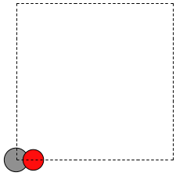
Figure 2: Image of a CO molecule with the C at the origin. \label{fig:co-origin}
There are two inconvenient features of the simple cubic cell:
- Since the CO molecule is at the corner, its electron density is spread over the 8 corners of the box, which is not convenient for visualization later (see Visualizing electron density).
- Due to the geometry of the cube, you need fairly large cubes to make sure the electron density of the molecule does not overlap with that of its images. Electron-electron interactions are repulsive, and the overlap makes the energy increase significantly. Here, the CO molecule has 6 images due to periodic boundary conditions that are 10 Å away. The volume of the unit cell is 1000 Å\(^3\).
The first problem is easily solved by centering the atoms in the unit cell. The second problem can be solved by using a face-centered cubic lattice, which is the lattice with the closest packing. We show the results of the centering in Figure fig:co-fcc, where we have guessed values for \(b\) until the CO molecules are on average 10 Å apart. Note the final volume is only about 715 Å\(^3\), which is smaller than the cube. This will result in less computational time to compute properties.
from ase import Atoms, Atom from ase.io import write b = 7.1 atoms = Atoms([Atom('C', [0., 0., 0.]), Atom('O', [1.1, 0., 0.])], cell=[[b, b, 0.], [b, 0., b], [0., b, b]]) print('V = {0:1.0f} Ang^3'.format(atoms.get_volume())) atoms.center() # translate atoms to center of unit cell write('images/fcc-cell.png', atoms, show_unit_cell=2)
V = 716 Ang^3

Figure 3: CO in a face-centered cubic unit cell. \label{fig:co-fcc}
At this point you might ask, "How do you know the distance to the neighboring image?" The ag viewer lets you compute this graphically, but we can use code to determine this too. All we have to do is figure out the length of each lattice vector, because these are what separate the atoms in the images. We use the numpy module to compute the distance of a vector as the square root of the sum of squared elements.
from ase import Atoms, Atom import numpy as np b = 7.1 atoms = Atoms([Atom('C', [0., 0., 0.]), Atom('O', [1.1, 0., 0.])], cell=[[b, b, 0.], [b, 0., b], [0., b, b]]) # get unit cell vectors and their lengths (a1, a2, a3) = atoms.get_cell() print('|a1| = {0:1.2f} Ang'.format(np.sum(a1**2)**0.5)) print('|a2| = {0:1.2f} Ang'.format(np.linalg.norm(a2))) print('|a3| = {0:1.2f} Ang'.format(np.sum(a3**2)**0.5))
|a1| = 10.04 Ang |a2| = 10.04 Ang |a3| = 10.04 Ang
3.1.2 Reading other data formats into a calculation
ase.io.read supports many different file formats:
Known formats:
========================= ===========
format short name
========================= ===========
GPAW restart-file gpw
Dacapo netCDF output file dacapo
Old ASE netCDF trajectory nc
Virtual Nano Lab file vnl
ASE pickle trajectory traj
ASE bundle trajectory bundle
GPAW text output gpaw-text
CUBE file cube
XCrySDen Structure File xsf
Dacapo text output dacapo-text
XYZ-file xyz
VASP POSCAR/CONTCAR file vasp
VASP OUTCAR file vasp_out
SIESTA STRUCT file struct_out
ABINIT input file abinit
V_Sim ascii file v_sim
Protein Data Bank pdb
CIF-file cif
FHI-aims geometry file aims
FHI-aims output file aims_out
VTK XML Image Data vti
VTK XML Structured Grid vts
VTK XML Unstructured Grid vtu
TURBOMOLE coord file tmol
TURBOMOLE gradient file tmol-gradient
exciting input exi
AtomEye configuration cfg
WIEN2k structure file struct
DftbPlus input file dftb
CASTEP geom file cell
CASTEP output file castep
CASTEP trajectory file geom
ETSF format etsf.nc
DFTBPlus GEN format gen
CMR db/cmr-file db
CMR db/cmr-file cmr
LAMMPS dump file lammps
Gromacs coordinates gro
========================= ===========
You can read XYZ file format to create ase.Atoms objects. Here is what an XYZ file format might look like:
#+include: molecules/isobutane.xyz
The first line is the number of atoms in the file. The second line is often a comment. What follows is one line per atom with the symbol and Cartesian coordinates in Å. Note that the XYZ format does not have unit cell information in it, so you will have to figure out a way to provide it. In this example, we center the atoms in a box with vacuum on all sides (Figure fig:isobutane).
from ase.io import read, write atoms = read('molecules/isobutane.xyz') atoms.center(vacuum=5) write('images/isobutane-xyz.png', atoms, show_unit_cell=2)
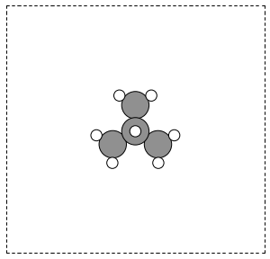
Figure 4: An isobutane molecule read in from an XYZ formatted data file. \label{fig:isobutane}
3.1.3 Predefined molecules
ase defines a number of molecular geometries in the ase.data.molecules database. For example, the database includes the molecules in the G2/97 database curtiss:1063. This database contains a broad set of atoms and molecules for which good experimental data exists, making them useful for benchmarking studies. See this site for the original files.
The coordinates for the atoms in the database are MP2(full)/6-31G(d) optimized geometries. Here is a list of all the species available in ase.data.g2. You may be interested in reading about some of the other databases in ase.data too.
from ase.data import g2 keys = g2.data.keys() # print in 3 columns for i in range(len(keys) / 3): print('{0:25s}{1:25s}{2:25s}'.format(*tuple(keys[i * 3: i * 3 + 3])))
isobutene CH3CH2OH CH3COOH COF2 CH3NO2 CF3CN CH3OH CCH CH3CH2NH2 PH3 Si2H6 O3 O2 BCl3 CH2_s1A1d Be H2CCl2 C3H9C C3H9N CH3CH2OCH3 BF3 CH3 CH4 S2 C2H6CHOH SiH2_s1A1d H3CNH2 CH3O H BeH P C3H4_C3v C2F4 OH methylenecyclopropane F2O SiCl4 HCF3 HCCl3 C3H7 CH3CH2O AlF3 CH2NHCH2 SiH2_s3B1d H2CF2 SiF4 H2CCO PH2 OCS HF NO2 SH2 C3H4_C2v H2O2 CH3CH2Cl isobutane CH3COF HCOOH CH3ONO C5H8 2-butyne SH NF3 HOCl CS2 P2 C CH3S O C4H4S S C3H7Cl H2CCHCl C2H6 CH3CHO C2H4 HCN C2H2 C2Cl4 bicyclobutane H2 C6H6 N2H4 C4H4NH H2CCHCN H2CCHF cyclobutane HCl CH3OCH3 Li2 Na CH3SiH3 NaCl CH3CH2SH OCHCHO SiH4 C2H5 SiH3 NH ClO AlCl3 CCl4 NO C2H3 ClF HCO CH3CONH2 CH2SCH2 CH3COCH3 C3H4_D2d CH CO CN F CH3COCl N CH3Cl Si C3H8 CS N2 Cl2 NCCN F2 CO2 Cl CH2OCH2 H2O CH3CO SO HCOOCH3 butadiene ClF3 Li PF3 B CH3SH CF4 C3H6_Cs C2H6NH N2O LiF H2COH cyclobutene LiH SiO Si2 C2H6SO C5H5N trans-butane Na2 C4H4O SO2 NH3 NH2 CH2_s3B1d ClNO C3H6_D3h Al CH3SCH3 H2CO CH3CN
Some other databases include the ase.data.s22 for weakly interacting dimers and complexes, and ase.data.extra_molecules which has a few extras like biphenyl and C60.
Here is an example of getting the geometry of an acetonitrile molecule and writing an image to a file. Note that the default unit cell is a 1 Å × Å × Å cubic cell. That is too small to use if your calculator uses periodic boundary conditions. We center the atoms in the unit cell and add vacuum on each side. We will add 6 Å of vacuum on each side. In the write command we use the option show_unit_cell =2 to draw the unit cell boundaries. See Figure fig:ch3cn.
from ase.structure import molecule from ase.io import write atoms = molecule('CH3CN') atoms.center(vacuum=6) print('unit cell') print('---------') print(atoms.get_cell()) write('images/ch3cn.png', atoms, show_unit_cell=2)
unit cell --------- [[ 13.775328 0. 0. ] [ 0. 13.537479 0. ] [ 0. 0. 15.014576]]
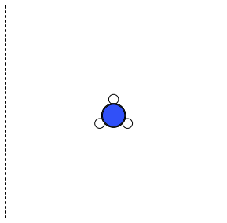
Figure 5: A CH3CN molecule in a box. \label{fig:ch3cn}
It is possible to rotate the atoms with ase.io.write if you wanted to see pictures from another angle. In the next example we rotate 45 degrees about the $x$-axis, then 45 degrees about the $y$-axis. Note that this only affects the image, not the actual coordinates. See Figure fig:ch3cn-rot.
from ase.structure import molecule from ase.io import write atoms = molecule('CH3CN') atoms.center(vacuum=6) print('unit cell') print('---------') print(atoms.get_cell()) write('images/ch3cn-rotated.png', atoms, show_unit_cell=2, rotation='45x,45y,0z')
unit cell --------- [[ 13.775328 0. 0. ] [ 0. 13.537479 0. ] [ 0. 0. 15.014576]]

Figure 6: The rotated version of CH3CN. \label{fig:ch3cn-rot}
If you actually want to rotate the coordinates, there is a nice way to do that too, with the ase.Atoms.rotate method. Actually there are some subtleties in rotation. One rotates the molecule an angle (in radians) around a vector, but you have to choose whether the center of mass should be fixed or not. You also must decide whether or not the unit cell should be rotated. In the next example you can see the coordinates have changed due to the rotations. Note that the write function uses the rotation angle in degrees, while the rotate function uses radians.
from ase.structure import molecule from ase.io import write from numpy import pi atoms = molecule('CH3CN') atoms.center(vacuum=6) p1 = atoms.get_positions() atoms.rotate('x', pi/4, center='COM', rotate_cell=False) atoms.rotate('y', pi/4, center='COM', rotate_cell=False) write('images/ch3cn-rotated-2.png', atoms, show_unit_cell=2) print('difference in positions after rotating') print('atom difference vector') print('--------------------------------------') p2 = atoms.get_positions() diff = p2 - p1 for i, d in enumerate(diff): print('{0} {1}'.format(i, d))
difference in positions after rotating atom difference vector -------------------------------------- 0 [-0.65009456 0.91937255 0.65009456] 1 [ 0.08030744 -0.11357187 -0.08030744] 2 [ 0.66947344 -0.94677841 -0.66947344] 3 [-0.32532156 0.88463727 1.35030756] 4 [-1.35405183 1.33495444 -0.04610517] 5 [-0.8340703 1.33495444 1.2092413 ]

Figure 7: Rotated CH3CN molecule
Note in this last case the unit cell is oriented differently than the previous example, since we chose not to rotate the unit cell.
3.1.4 Combining Atoms objects
It is frequently useful to combine two Atoms objects, e.g. for computing reaction barriers, or other types of interactions. In ase, we simply add two Atoms objects together. Here is an example of getting an ammonia and oxygen molecule in the same unit cell. See Figure fig:combined-atoms. We set the Atoms about three Å apart using the ase.Atoms.translate function.
from ase.structure import molecule from ase.io import write atoms1 = molecule('NH3') atoms2 = molecule('O2') atoms2.translate([3, 0, 0]) bothatoms = atoms1 + atoms2 bothatoms.center(5) write('images/bothatoms.png', bothatoms, show_unit_cell=2, rotation='90x')

Figure 8: Image featuring ammonia and oxygen molecule in one unit cell. \label{fig:combined-atoms}
3.2 Simple properties
Simple properties do not require a DFT calculation. They are typically only functions of the atom types and geometries.
3.2.1 Getting cartesian positions
If you want the \((x,y,z)\) coordinates of the atoms, use the ase.Atoms.get_positions. If you are interested in the fractional coordinates, use ase.Atoms.get_scaled_positions.
from ase.structure import molecule atoms = molecule('C6H6') # benzene # access properties on each atom print(' # sym p_x p_y p_z') print('------------------------------') for i, atom in enumerate(atoms): print('{0:3d}{1:^4s}{2:-8.2f}{3:-8.2f}{4:-8.2f}'.format(i, atom.symbol, atom.x, atom.y, atom.z)) # get all properties in arrays sym = atoms.get_chemical_symbols() pos = atoms.get_positions() num = atoms.get_atomic_numbers() atom_indices = range(len(atoms)) print() print(' # sym at# p_x p_y p_z') print('-------------------------------------') for i, s, n, p in zip(atom_indices, sym, num, pos): px, py, pz = p print('{0:3d}{1:>3s}{2:8d}{3:-8.2f}{4:-8.2f}{5:-8.2f}'.format(i, s, n, px, py, pz))
# sym p_x p_y p_z ------------------------------ 0 C 0.00 1.40 0.00 1 C 1.21 0.70 0.00 2 C 1.21 -0.70 0.00 3 C 0.00 -1.40 0.00 4 C -1.21 -0.70 0.00 5 C -1.21 0.70 0.00 6 H 0.00 2.48 0.00 7 H 2.15 1.24 0.00 8 H 2.15 -1.24 0.00 9 H 0.00 -2.48 0.00 10 H -2.15 -1.24 0.00 11 H -2.15 1.24 0.00 () # sym at# p_x p_y p_z ------------------------------------- 0 C 6 0.00 1.40 0.00 1 C 6 1.21 0.70 0.00 2 C 6 1.21 -0.70 0.00 3 C 6 0.00 -1.40 0.00 4 C 6 -1.21 -0.70 0.00 5 C 6 -1.21 0.70 0.00 6 H 1 0.00 2.48 0.00 7 H 1 2.15 1.24 0.00 8 H 1 2.15 -1.24 0.00 9 H 1 0.00 -2.48 0.00 10 H 1 -2.15 -1.24 0.00 11 H 1 -2.15 1.24 0.00
3.2.2 Molecular weight and molecular formula
molecular weight
We can quickly compute the molecular weight of a molecule with this recipe. We use ase.Atoms.get_masses to get an array of the atomic masses of each atom in the Atoms object, and then just sum them up.
from ase.structure import molecule atoms = molecule('C6H6') masses = atoms.get_masses() molecular_weight = masses.sum() molecular_formula = atoms.get_chemical_formula(mode='reduce') # note use of two lines to keep length of line reasonable s = 'The molecular weight of {0} is {1:1.2f} gm/mol' print(s.format(molecular_formula, molecular_weight))
The molecular weight of C6H6 is 78.11 gm/mol
Note that the argument reduce=True for ase.Atoms.get_chemical_formula collects all the symbols to provide a molecular formula.
3.2.3 Center of mass
center of mass The center of mass (COM) is defined as:
COM = \(\frac{\sum m_i \cdot r_i}{\sum m_i}\)
The center of mass is essentially the average position of the atoms, weighted by the mass of each atom. Here is an example of getting the center of mass from an Atoms object using ase.Atoms.get_center_of_mass.
from ase.structure import molecule import numpy as np # ammonia atoms = molecule('NH3') # cartesian coordinates print('COM1 = {0}'.format(atoms.get_center_of_mass())) # compute the center of mass by hand pos = atoms.positions masses = atoms.get_masses() COM = np.array([0., 0., 0.]) for m, p in zip(masses, pos): COM += m*p COM /= masses.sum() print('COM2 = {0}'.format(COM)) # one-line linear algebra definition of COM print('COM3 = {0}'.format(np.dot(masses, pos) / np.sum(masses)))
COM1 = [ 0.00000000e+00 5.91843349e-08 4.75457009e-02] COM2 = [ 0.00000000e+00 5.91843349e-08 4.75457009e-02] COM3 = [ 0.00000000e+00 5.91843349e-08 4.75457009e-02]
You can see see that these centers of mass, which are calculated by different methods, are the same.
3.2.4 Moments of inertia
moment of inertia The moment of inertia is a measure of resistance to changes in rotation. It is defined by \(I = \sum_{i=1}^N m_i r_i^2\) where \(r_i\) is the distance to an axis of rotation. There are typically three moments of inertia, although some may be zero depending on symmetry, and others may be degenerate. There is a convenient function to get the moments of inertia: ase.Atoms.get_moments_of_inertia. Here are several examples of molecules with different types of symmetry.:
from ase.structure import molecule print('linear rotors: I = [0 Ia Ia]') atoms = molecule('CO2') print(' CO2 moments of inertia: {}'.format(atoms.get_moments_of_inertia())) print('') print('symmetric rotors (Ia = Ib) < Ic') atoms = molecule('NH3') print(' NH3 moments of inertia: {}'.format(atoms.get_moments_of_inertia())) atoms = molecule('C6H6') print(' C6H6 moments of inertia: {}'.format(atoms.get_moments_of_inertia())) print('') print('symmetric rotors Ia < (Ib = Ic)') atoms = molecule('CH3Cl') print('CH3Cl moments of inertia: {}'.format(atoms.get_moments_of_inertia())) print('') print('spherical rotors Ia = Ib = Ic') atoms = molecule('CH4') print(' CH4 moments of inertia: {}'.format(atoms.get_moments_of_inertia())) print('') print('unsymmetric rotors Ia != Ib != Ic') atoms = molecule('C3H7Cl') print(' C3H7Cl moments of inertia: {}'.format(atoms.get_moments_of_inertia()))
linear rotors: I = [0 Ia Ia] CO2 moments of inertia: [ 0. 44.45384271 44.45384271] symmetric rotors (Ia = Ib) < Ic NH3 moments of inertia: [ 1.71012426 1.71012548 2.67031768] C6H6 moments of inertia: [ 88.77914641 88.77916799 177.5583144 ] symmetric rotors Ia < (Ib = Ic) CH3Cl moments of inertia: [ 3.20372189 37.97009644 37.97009837] spherical rotors Ia = Ib = Ic CH4 moments of inertia: [ 3.19145621 3.19145621 3.19145621] unsymmetric rotors Ia != Ib != Ic C3H7Cl moments of inertia: [ 19.41351508 213.18961963 223.16255537]
If you want to know the principle axes of rotation, we simply pass vectors=True to the function, and it returns the moments of inertia and the principle axes.
from ase.structure import molecule atoms = molecule('CH3Cl') moments, axes = atoms.get_moments_of_inertia(vectors=True) print('Moments = {0}'.format(moments)) print('axes = {0}'.format(axes))
Moments = [ 3.20372189 37.97009644 37.97009837] axes = [[ 0. 0. 1.] [ 0. 1. 0.] [ 1. 0. 0.]]
This shows the first moment is about the z-axis, the second moment is about the y-axis, and the third moment is about the x-axis.
3.2.5 Computing bond lengths and angles
A typical question we might ask is, "What is the structure of a molecule?" In other words, what are the bond lengths, angles between bonds, and similar properties. The Atoms object contains an ase.Atoms.get_distance method to make this easy. To calculate the distance between two atoms, you have to specify their indices, remembering that the index starts at 0.
from ase.structure import molecule # ammonia atoms = molecule('NH3') print('atom symbol') print('===========') for i, atom in enumerate(atoms): print('{0:2d} {1:3s}' .format(i, atom.symbol)) # N-H bond length s = 'The N-H distance is {0:1.3f} angstroms' print(s.format(atoms.get_distance(0, 1)))
atom symbol =========== 0 N 1 H 2 H 3 H The N-H distance is 1.017 angstroms
Bond angles are a little trickier. If we had vectors describing the directions between two atoms, we could use some simple trigonometry to compute the angle between the vectors: \(\vec{a} \cdot \vec{b} = |\vec{a}||\vec{b}| \cos(\theta)\). So we can calculate the angle as \(\theta = \arccos\left(\frac{\vec{a} \cdot \vec{b}}{|\vec{a}||\vec{b}|}\right)\), we just have to define our two vectors \(\vec{a}\) and \(\vec{b}\). We compute these vectors as the difference in positions of two atoms. For example, here we compute the angle H-N-H in an ammonia molecule. This is the angle between N-H\(_1\) and N-H\(_2\). In the next example, we utilize functions in numpy to perform the calculations, specifically the numpy.arccos function, the numpy.dot function, and numpy.linalg.norm functions.
from ase.structure import molecule # ammonia atoms = molecule('NH3') print('atom symbol') print('===========') for i, atom in enumerate(atoms): print('{0:2d} {1:3s}'.format(i, atom.symbol)) a = atoms.positions[0] - atoms.positions[1] b = atoms.positions[0] - atoms.positions[2] from numpy import arccos, dot, pi from numpy.linalg import norm theta_rad = arccos(dot(a, b) / (norm(a) * norm(b))) # in radians print('theta = {0:1.1f} degrees'.format(theta_rad * 180./pi))
atom symbol =========== 0 N 1 H 2 H 3 H theta = 106.3 degrees
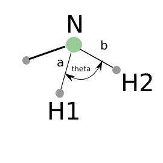
Figure 9: Schematic of the vectors defining the H-N-H angle.
Alternatively you could use ase.Atoms.get_angle. Note we want the angle between atoms with indices [1, 0, 2] to get the H-N-H angle.
from ase.structure import molecule from numpy import pi # ammonia atoms = molecule('NH3') print('theta = {0} degrees'.format(atoms.get_angle([1, 0, 2]) * 180. / pi))
theta = 106.334624232 degrees
3.2.5.1 Dihedral angles
There is support in ase for computing dihedral angles. Let us illustrate that for ethane. We will compute the dihedral angle between atoms 5, 1, 0, and 4. That is a H-C-C-H dihedral angle, and one can visually see (although not here) that these atoms have a dihedral angle of 60ˆ (Figure fig:ethane-dihedral).
# calculate an ethane dihedral angle from ase.structure import molecule import numpy as np atoms = molecule('C2H6') print('atom symbol') print('===========') for i, atom in enumerate(atoms): print('{0:2d} {1:3s}'.format(i, atom.symbol)) da = atoms.get_dihedral([5, 1, 0, 4]) * 180. / np.pi print('dihedral angle = {0:1.2f} degrees'.format(da))
atom symbol =========== 0 C 1 C 2 H 3 H 4 H 5 H 6 H 7 H dihedral angle = 60.00 degrees
 In this section we covered properties that require simple calculations, but not DFT calculations, to compute.
In this section we covered properties that require simple calculations, but not DFT calculations, to compute.
3.3 Simple properties that require single computations
There are many properties that only require a single DFT calculation to obtain the energy, forces, density of states, electron density and electrostatic potential. This section describes some of these calculations and their analysis.
3.3.1 Energy and forces
Two of the most important quantities we are interested in are the total
energy and the forces on the atoms. To get these quantities, we have
to define a calculator and attach it to an ase.Atoms object so
that ase knows how to get the data. After defining the calculator a
DFT calculation must be run.
Here is an example of getting the energy and forces from a CO molecule. The forces in this case are very high, indicating that this geometry is not close to the ground state geometry. Note that the forces are only along the $x$-axis, which is along the molecular axis. We will see how to minimize this force in Manual determination and Automatic geometry optimization with VASP.
This is your first DFT calculation in the book! See ISMEAR, SIGMA, NBANDS, and ENCUT to learn more about these VASP keywords.
from ase import Atoms, Atom from vasp import Vasp co = Atoms([Atom('C', [0, 0, 0]), Atom('O', [1.2, 0, 0])], cell=(6., 6., 6.)) calc = Vasp('molecules/simple-co', # output dir xc='pbe', # the exchange-correlation functional nbands=6, # number of bands encut=350, # planewave cutoff ismear=1, # Methfessel-Paxton smearing sigma=0.01, # very small smearing factor for a molecule atoms=co) print('energy = {0} eV'.format(co.get_potential_energy())) print(co.get_forces())
energy = -14.69111507 eV [[ 5.09138064 0. 0. ] [-5.09138064 0. 0. ]]
We can see what files were created and used in this calculation by printing the vasp attribute of the calculator.
from vasp import Vasp print(Vasp('molecules/simple-co').vasp)
INCAR
-----
INCAR created by Atomic Simulation Environment
ENCUT = 350
LCHARG = .FALSE.
NBANDS = 6
ISMEAR = 1
LWAVE = .FALSE.
SIGMA = 0.01
POSCAR
------
C O
1.0000000000000000
6.0000000000000000 0.0000000000000000 0.0000000000000000
0.0000000000000000 6.0000000000000000 0.0000000000000000
0.0000000000000000 0.0000000000000000 6.0000000000000000
1 1
Cartesian
0.0000000000000000 0.0000000000000000 0.0000000000000000
1.2000000000000000 0.0000000000000000 0.0000000000000000
KPOINTS
-------
KPOINTS created by Atomic Simulation Environment
0
Monkhorst-Pack
1 1 1
0.0 0.0 0.0
POTCAR
------
cat $VASP_PP_PATH/potpaw_PBE/C/POTCAR $VASP_PP_PATH/potpaw_PBE/O/POTCAR > POTCAR
3.3.1.1 Running a job in parallel
from ase import Atoms, Atom from vasp import Vasp from vasp.vasprc import VASPRC VASPRC['queue.ppn'] = 4 co = Atoms([Atom('C', [0, 0, 0]), Atom('O', [1.2, 0, 0])], cell=(6., 6., 6.)) calc = Vasp('molecules/simple-co-n4', # output dir xc='PBE', # the exchange-correlation functional nbands=6, # number of bands encut=350, # planewave cutoff ismear=1, # Methfessel-Paxton smearing sigma=0.01, # very small smearing factor for a molecule atoms=co) print('energy = {0} eV'.format(co.get_potential_energy())) print(co.get_forces())
energy = -14.69072754 eV [[ 5.09089107 0. 0. ] [-5.09089107 0. 0. ]]
3.3.1.2 Convergence with unit cell size
There are a number of parameters that affect the energy and forces including the calculation parameters and the unit cell. We will first consider the effect of the unit cell on the total energy and forces. The reason that the unit cell affects the total energy is that it can change the distribution of electrons in the molecule.
from vasp import Vasp from ase import Atoms, Atom import numpy as np np.set_printoptions(precision=3, suppress=True) atoms = Atoms([Atom('C', [0, 0, 0]), Atom('O', [1.2, 0, 0])]) L = [4, 5, 6, 8, 10] energies = [] ready = True for a in L: atoms.set_cell([a, a, a], scale_atoms=False) atoms.center() calc = Vasp('molecules/co-L-{0}'.format(a), encut=350, xc='PBE', atoms=atoms) energies.append(atoms.get_potential_energy()) print(energies) calc.stop_if(None in energies) import matplotlib.pyplot as plt plt.plot(L, energies, 'bo-') plt.xlabel('Unit cell length ($\AA$)') plt.ylabel('Total energy (eV)') plt.savefig('images/co-e-v.png')
[-15.35943747, -14.85641864, -14.68750595, -14.63202061, -14.65342838]

Figure 10: Total energy of a CO molecule as a function of the unit cell length.
Here there are evidently attractive interactions between the CO molecules which lower the total energy for small box sizes. We have to decide what an appropriate volume for our calculation is, and the choice depends on the goal. We may wish to know the total energy of a molecule that is not interacting with any other molecules, e.g. in the ideal gas limit. In that case we need a large unit cell so the electron density from the molecule does not go outside the unit cell where it would overlap with neighboring images.
It pays to check for convergence. The cost of running the calculation goes up steeply with increasing cell size. Doubling a lattice vector here leads to a 20-fold increase in computational time! Note that doubling a lattice vector length increases the volume by a factor of 8 for a cube. The cost goes up because the number of planewaves that fit in the cube grows as the cube gets larger.
from vasp import Vasp L = [4, 5, 6, 8, 10] for a in L: calc = Vasp('molecules/co-L-{0}'.format(a)) print('{0} {1} seconds'.format(a, calc.get_elapsed_time()))
4 10.748 seconds 5 11.855 seconds 6 15.613 seconds 8 28.346 seconds 10 45.259 seconds
Let us consider what the pressure in the unit cell is. In the ideal gas limit we have \(PV = nRT\), which gives a pressure of zero at absolute zero. At non-zero temperatures, we have \(P=n/V RT\). Let us consider some examples. In atomic units we use \(k_B\) instead of \(R\).
from ase.units import kB, Pascal import numpy as np import matplotlib.pyplot as plt atm = 101325 * Pascal L = np.linspace(4, 10) V = L**3 n = 1 # one atom/molecule per unit cell for T in [298, 600, 1000]: P = n / V * kB * T / atm # convert to atmospheres plt.plot(V, P, label='{0}K'.format(T)) plt.xlabel('Unit cell volume ($\AA^3$)') plt.ylabel('Pressure (atm)') plt.legend(loc='best') plt.savefig('images/ideal-gas-pressure.png')

Figure 11: Ideal gas pressure dependence on temperature and unit cell volume.
3.3.1.3 Convergence of ENCUT
The total energy and forces also depend on the computational parameters, notably ENCUT.
from ase import Atoms, Atom from vasp import Vasp import numpy as np np.set_printoptions(precision=3, suppress=True) atoms = Atoms([Atom('C', [0, 0, 0]), Atom('O', [1.2, 0, 0])], cell=(6, 6, 6)) atoms.center() ENCUTS = [250, 300, 350, 400, 450, 500] calcs = [Vasp('molecules/co-en-{0}'.format(en), encut=en, xc='PBE', atoms=atoms) for en in ENCUTS] energies = [calc.potential_energy for calc in calcs] print(energies) calcs[0].stop_if(None in energies) import matplotlib.pyplot as plt plt.plot(ENCUTS, energies, 'bo-') plt.xlabel('ENCUT (eV)') plt.ylabel('Total energy (eV)') plt.savefig('images/co-encut-v.png')
[-14.95250419, -14.71808896, -14.68750595, -14.66725733, -14.65604528, -14.65012078]

Figure 12: Dependence of the total energy of CO molecule on ENCUT.
You can see in this figure that it takes a cutoff energy of about 400 eV to achieve a convergence level around 10 meV, and that even at 500 meV the energy is still changing slightly. Keep in mind that we are generally interested in differences in total energy, and the differences tend to converge faster than a single total energy. Also it is important to note that it is usually a single element that determines the rate of convergence. The reason we do not just use very high ENCUT all the time is it is expensive.
grep "Elapsed time (sec):" molecules/co-en-*/OUTCAR
molecules/co-en-250/OUTCAR: Elapsed time (sec): 11.634 molecules/co-en-300/OUTCAR: Elapsed time (sec): 14.740 molecules/co-en-350/OUTCAR: Elapsed time (sec): 13.577 molecules/co-en-400/OUTCAR: Elapsed time (sec): 16.310 molecules/co-en-450/OUTCAR: Elapsed time (sec): 17.704 molecules/co-en-500/OUTCAR: Elapsed time (sec): 11.658
3.3.1.4 Cloning
You may want to clone a calculation, so you can change some parameter without losing the previous result. The clone function does this, and changes the calculator over to the new directory.
from ase import Atoms, Atom from vasp import Vasp calc = Vasp('molecules/simple-co') print('energy = {0} eV'.format(calc.get_atoms().get_potential_energy())) # This creates the directory and makes it current working directory calc.clone('molecules/clone-1') calc.set(encut=325) # this will trigger a new calculation print('energy = {0} eV'.format(calc.get_atoms().get_potential_energy()))
energy = -14.69111507 eV energy = -14.77117554 eV
3.3.2 Visualizing electron density
The electron density is a 3\(d\) quantity: for every \((x,y,z)\) point, there is a charge density. That means we need 4 numbers for each point: \((x,y,z)\) and \(\rho(x,y,z)\). Below we show an example (Figure fig:cd1) of plotting the charge density, and we consider some issues we have to consider when visualizing volumetric data in unit cells with periodic boundary conditions. We will use the results from a previous calculation.
from vasp import Vasp from enthought.mayavi import mlab from ase.data import vdw_radii from ase.data.colors import cpk_colors calc = Vasp('molecules/simple-co') calc.clone('molecules/co-chg') calc.set(lcharg=True) calc.stop_if(calc.potential_energy is None) atoms = calc.get_atoms() x, y, z, cd = calc.get_charge_density() # make a white figure mlab.figure(1, bgcolor=(1, 1, 1)) # plot the atoms as spheres for atom in atoms: mlab.points3d(atom.x, atom.y, atom.z, #this determines the size of the atom scale_factor=vdw_radii[atom.number] / 5., resolution=20, # a tuple is required for the color color=tuple(cpk_colors[atom.number]), scale_mode='none') # draw the unit cell - there are 8 corners, and 12 connections a1, a2, a3 = atoms.get_cell() origin = [0, 0, 0] cell_matrix = [[origin, a1], [origin, a2], [origin, a3], [a1, a1 + a2], [a1, a1 + a3], [a2, a2 + a1], [a2, a2 + a3], [a3, a1 + a3], [a3, a2 + a3], [a1 + a2, a1 + a2 + a3], [a2 + a3, a1 + a2 + a3], [a1 + a3, a1 + a3 + a2]] for p1, p2 in cell_matrix: mlab.plot3d([p1[0], p2[0]], # x-positions [p1[1], p2[1]], # y-positions [p1[2], p2[2]], # z-positions tube_radius=0.02) # Now plot the charge density mlab.contour3d(x, y, z, cd) mlab.view(azimuth=-90, elevation=90, distance='auto') mlab.savefig('images/co-cd.png')

Figure 13: Charge density of a CO molecule that is located at the origin. The electron density that is outside the cell is wrapped around to the other corners. \label{fig:cd1}
If we take care to center the CO molecule in the unit cell, we get a nicer looking result.
from vasp import Vasp from enthought.mayavi import mlab from ase.data import vdw_radii from ase.data.colors import cpk_colors from ase import Atom, Atoms atoms = Atoms([Atom('C', [2.422, 0.0, 0.0]), Atom('O', [3.578, 0.0, 0.0])], cell=(10,10,10)) atoms.center() calc = Vasp('molecules/co-centered', encut=350, xc='PBE', atoms=atoms) calc.set(lcharg=True,) calc.stop_if(calc.potential_energy is None) atoms = calc.get_atoms() x, y, z, cd = calc.get_charge_density() mlab.figure(bgcolor=(1, 1, 1)) # plot the atoms as spheres for atom in atoms: mlab.points3d(atom.x, atom.y, atom.z, scale_factor=vdw_radii[atom.number]/5, resolution=20, # a tuple is required for the color color=tuple(cpk_colors[atom.number]), scale_mode='none') # draw the unit cell - there are 8 corners, and 12 connections a1, a2, a3 = atoms.get_cell() origin = [0, 0, 0] cell_matrix = [[origin, a1], [origin, a2], [origin, a3], [a1, a1 + a2], [a1, a1 + a3], [a2, a2 + a1], [a2, a2 + a3], [a3, a1 + a3], [a3, a2 + a3], [a1 + a2, a1 + a2 + a3], [a2 + a3, a1 + a2 + a3], [a1 + a3, a1 + a3 + a2]] for p1, p2 in cell_matrix: mlab.plot3d([p1[0], p2[0]], # x-positions [p1[1], p2[1]], # y-positions [p1[2], p2[2]], # z-positions tube_radius=0.02) # Now plot the charge density mlab.contour3d(x, y, z, cd, transparent=True) # this view was empirically found by iteration mlab.view(azimuth=-90, elevation=90, distance='auto') mlab.savefig('images/co-centered-cd.png') mlab.show()

Figure 14: Charge density of a CO molecule centered in the unit cell. Now the electron density is centered in the unit cell. \label{fig:cd2}
TODO: how to make this figure 
3.3.3 Visualizing electron density differences
Here, we visualize how charge moves in a benzene ring when you substitute an H atom with an electronegative Cl atom.
#!/usr/bin/env python from ase import * from ase.structure import molecule from vasp import Vasp ### Setup calculators benzene = molecule('C6H6') benzene.set_cell([10, 10, 10]) benzene.center() calc1 = Vasp('molecules/benzene', xc='PBE', nbands=18, encut=350, atoms=benzene) calc1.set(lcharg=True) chlorobenzene = molecule('C6H6') chlorobenzene.set_cell([10, 10, 10]) chlorobenzene.center() chlorobenzene[11].symbol ='Cl' calc2 = Vasp('molecules/chlorobenzene', xc='PBE', nbands=22, encut=350, atoms=chlorobenzene) calc2.set(lcharg=True) calc2.stop_if(None in (calc1.potential_energy, calc2.potential_energy)) x1, y1, z1, cd1 = calc1.get_charge_density() x2, y2, z2, cd2 = calc2.get_charge_density() cdiff = cd2 - cd1 print(cdiff.min(), cdiff.max()) ########################################## ##### set up visualization of charge difference from enthought.mayavi import mlab mlab.contour3d(x1, y1, z1, cdiff, contours=[-0.02, 0.02]) mlab.savefig('images/cdiff.png')
(-2.0821159999999987, 2.9688999999999979)
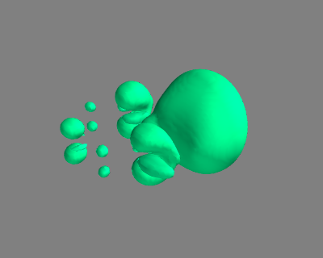
#!/usr/bin/env python from ase import * from ase.structure import molecule from vasp import Vasp import bisect import numpy as np def vinterp3d(x, y, z, u, xi, yi, zi): "Interpolate the point (xi, yi, zi) from the values at u(x, y, z)" p = np.array([xi, yi, zi]) #1D arrays of coordinates xv = x[:, 0, 0] yv = y[0, :, 0] zv = z[0, 0, :] # we subtract 1 because bisect tells us where to insert the # element to maintain an ordered list, so we want the index to the # left of that point i = bisect.bisect_right(xv, xi) - 1 j = bisect.bisect_right(yv, yi) - 1 k = bisect.bisect_right(zv, zi) - 1 if i == len(x) - 1: i = len(x) - 2 elif i < 0: i = 0 if j == len(y) - 1: j = len(y) - 2 elif j < 0: j = 0 if k == len(z) - 1: k = len(z) - 2 elif k < 0: k = 0 # points at edge of cell. We only need P1, P2, P3, and P5 P1 = np.array([x[i, j, k], y[i, j, k], z[i, j, k]]) P2 = np.array([x[i + 1, j, k], y[i + 1, j, k], z[i + 1, j, k]]) P3 = np.array([x[i, j + 1, k], y[i, j + 1, k], z[i, j + 1, k]]) P5 = np.array([x[i, j, k + 1], y[i, j, k + 1], z[i, j, k + 1]]) # values of u at edge of cell u1 = u[i, j, k] u2 = u[i+1, j, k] u3 = u[i, j+1, k] u4 = u[i+1, j+1, k] u5 = u[i, j, k+1] u6 = u[i+1, j, k+1] u7 = u[i, j+1, k+1] u8 = u[i+1, j+1, k+1] # cell basis vectors, not the unit cell, but the voxel cell containing the point cbasis = np.array([P2 - P1, P3 - P1, P5 - P1]) # now get interpolated point in terms of the cell basis s = np.dot(np.linalg.inv(cbasis.T), np.array([xi, yi, zi]) - P1) # now s = (sa, sb, sc) which are fractional coordinates in the vector space # next we do the interpolations ui1 = u1 + s[0] * (u2 - u1) ui2 = u3 + s[0] * (u4 - u3) ui3 = u5 + s[0] * (u6 - u5) ui4 = u7 + s[0] * (u8 - u7) ui5 = ui1 + s[1] * (ui2 - ui1) ui6 = ui3 + s[1] * (ui4 - ui3) ui7 = ui5 + s[2] * (ui6 - ui5) return ui7 ### Setup calculators calc = Vasp('molecules/benzene') benzene = calc.get_atoms() x1, y1, z1, cd1 = calc.get_charge_density() calc = Vasp('molecules/chlorobenzene') x2, y2, z2, cd2 = calc.get_charge_density() cdiff = cd2 - cd1 #we need the x-y plane at z=5 import matplotlib.pyplot as plt from scipy import mgrid X, Y = mgrid[0: 10: 25j, 0: 10: 25j] cdiff_plane = np.zeros(X.shape) ni, nj = X.shape for i in range(ni): for j in range(nj): cdiff_plane[i, j] = vinterp3d(x1, y1, z1, cdiff, X[i, j], Y[i, j], 5.0) plt.imshow(cdiff_plane.T, vmin=-0.02, # min charge diff to plot vmax=0.02, # max charge diff to plot cmap=plt.cm.gist_heat, # colormap extent=(0., 10., 0., 10.)) # axes limits # plot atom positions. It is a little tricky to see why we reverse the x and y coordinates. That is because imshow does that. x = [a.x for a in benzene] y = [a.y for a in benzene] plt.plot(x, y, 'bo') plt.colorbar() #add colorbar plt.savefig('images/cdiff-imshow.png') plt.show()

3.3.4 Dipole moments
dipole moment The dipole moment is a vector describing the separation of electrical (negative) and nuclear (positive) charge. The magnitude of this vector is the dipole moment, which has units of Coulomb-meter, or more commonly Debye. The symmetry of a molecule determines if a molecule has a dipole moment or not. Below we compute the dipole moment of CO. We must integrate the electron density to find the center of electrical charge, and compute a sum over the nuclei to find the center of positive charge.
from vasp import Vasp from vasp.VaspChargeDensity import VaspChargeDensity import numpy as np from ase.units import Debye import os calc = Vasp('molecules/co-centered') atoms = calc.get_atoms() calc.stop_if(atoms.get_potential_energy() is None) vcd = VaspChargeDensity('molecules/co-centered/CHG') cd = np.array(vcd.chg[0]) n0, n1, n2 = cd.shape s0 = 1.0 / n0 s1 = 1.0 / n1 s2 = 1.0 / n2 X, Y, Z = np.mgrid[0.0:1.0:s0, 0.0:1.0:s1, 0.0:1.0:s2] C = np.column_stack([X.ravel(), Y.ravel(), Z.ravel()]) atoms = calc.get_atoms() uc = atoms.get_cell() real = np.dot(C, uc) # now convert arrays back to unitcell shape x = np.reshape(real[:, 0], (n0, n1, n2)) y = np.reshape(real[:, 1], (n0, n1, n2)) z = np.reshape(real[:, 2], (n0, n1, n2)) nelements = n0 * n1 * n2 voxel_volume = atoms.get_volume() / nelements total_electron_charge = -cd.sum() * voxel_volume electron_density_center = np.array([(cd * x).sum(), (cd * y).sum(), (cd * z).sum()]) electron_density_center *= voxel_volume electron_density_center /= total_electron_charge electron_dipole_moment = -electron_density_center * total_electron_charge # now the ion charge center. We only need the Zval listed in the potcar from vasp.POTCAR import get_ZVAL LOP = calc.get_pseudopotentials() ppp = os.environ['VASP_PP_PATH'] zval = {} for sym, ppath, hash in LOP: fullpath = os.path.join(ppp, ppath) z = get_ZVAL(fullpath) zval[sym] = z ion_charge_center = np.array([0.0, 0.0, 0.0]) total_ion_charge = 0.0 for atom in atoms: Z = zval[atom.symbol] total_ion_charge += Z pos = atom.position ion_charge_center += Z * pos ion_charge_center /= total_ion_charge ion_dipole_moment = ion_charge_center * total_ion_charge dipole_vector = (ion_dipole_moment + electron_dipole_moment) dipole_moment = ((dipole_vector**2).sum())**0.5 / Debye print('The dipole vector is {0}'.format(dipole_vector)) print('The dipole moment is {0:1.2f} Debye'.format(dipole_moment))
The dipole vector is [ 0.02048406 0.00026357 0.00026357] The dipole moment is 0.10 Debye
Note that a function using the code above exists in vasp which makes it trivial to compute the dipole moment. Here is an example of its usage.
from vasp import Vasp from ase.units import Debye calc = Vasp('molecules/co-centered') dipole_moment = calc.get_dipole_moment() print('The dipole moment is {0:1.2f} Debye'.format(dipole_moment))
The dipole moment is 0.10 Debye
3.3.5 The density of states (DOS)
The density of states (DOS) gives you the number of electronic states (i.e., the orbitals) that have a particular energy. We can get this information from the last calculation we just ran without having to run another DFT calculation.
from vasp import Vasp from ase.dft.dos import DOS import matplotlib.pyplot as plt calc = Vasp('molecules/simple-co') # we already ran this! dos = DOS(calc) plt.plot(dos.get_energies(), dos.get_dos()) plt.xlabel('Energy - $E_f$ (eV)') plt.ylabel('DOS') # make sure you save the figure outside the with statement, or provide # the correct relative or absolute path to where you want it. plt.savefig('images/co-dos.png')

Figure 17: Density of states for a CO molecule.
3.3.6 Atom-projected density of states on molecules
Let us consider which states in the density of states belong to which atoms in a molecule. This can only be a qualitative consideration because the orbitals on the atoms often hybridize to form molecular orbitals, e.g. in methane the \(s\) and \(p\) orbitals can form what we call \(sp^3\) orbitals. We can compute atom-projected density of states in VASP, which is done by projecting the wave function onto localized atomic orbitals. Here is an example. We will consider the CO molecule. To get atom-projected density of states, we must set RWIGS for each atom. This parameter defines the radius of the sphere around the atom which cuts off the projection. The total density of states and projected density of states information comes from the DOSCAR file.
Note that unlike the DOS, here we must run another calculation because we did not specify the atom-projected keywords above. Our strategy is to get the atoms from the previous calculation, and use them in a new calculation. You could redo the calculation in the same directory, but you risk losing the results of the first step. That can make it difficult to reproduce a result. We advocate our approach of using multiple directories for the subsequent calculations, because it leaves a clear trail of how the work was done.
The RWIGS is not uniquely determined for an element. There are various natural choices, e.g. the ionic radius of an atom, or a value that minimizes overlap of neighboring spheres, but these values can change slightly in different environments.
You can also get spin-polarized atom-projected DOS, and magnetization projected DOS. See http://cms.mpi.univie.ac.at/vasp/vasp/DOSCAR_file.html#doscar for more details.
from vasp import Vasp from ase.dft.dos import DOS import matplotlib.pyplot as plt # get the geometry from another calculation calc = Vasp('molecules/simple-co') atoms = calc.get_atoms() calc = Vasp('molecules/co-ados', encut=300, xc='PBE', rwigs={'C': 1.0, 'O': 1.0}, # these are the cutoff radii for projected states atoms=atoms) calc.stop_if(calc.potential_energy is None) # now get results dos = DOS(calc) plt.plot(dos.get_energies(), dos.get_dos() + 10) energies, c_s = calc.get_ados(0, 's') _, c_p = calc.get_ados(0, 'p') _, o_s = calc.get_ados(1, 's') _, o_p = calc.get_ados(1, 'p') _, c_d = calc.get_ados(0, 'd') _, o_d = calc.get_ados(1, 'd') plt.plot(energies, c_s + 6, energies, o_s + 5) plt.plot(energies, c_p + 4, energies, o_p + 3) plt.plot(energies, c_d, energies, o_d + 2) plt.xlabel('Energy - $E_f$ (eV)') plt.ylabel('DOS') plt.legend(['DOS', 'C$_s$', 'O$_s$', 'C$_p$', 'O$_p$', 'C$_d$', 'O$_d$'], ncol=2, loc='best') plt.savefig('images/co-ados.png')

Figure 18: Atom-projected DOS for a CO molecule. The total density of states and the \(s\), \(p\) and \(d\) states on the C and O are shown.
3.3.7 Electrostatic potential
This is an example of the so-called σ hole in a halogen bond. The coordinates for the CF3Br molecule were found at http://cccbdb.nist.gov/exp2.asp?casno=75638.
from vasp import Vasp from ase import Atom, Atoms from ase.io import write from enthought.mayavi import mlab from ase.data import vdw_radii from ase.data.colors import cpk_colors atoms = Atoms([Atom('C', [ 0.0000, 0.0000, -0.8088]), Atom('Br', [ 0.0000, 0.0000, 1.1146]), Atom('F', [ 0.0000, 1.2455, -1.2651]), Atom('F', [ 1.0787, -0.6228, -1.2651]), Atom('F', [-1.0787, -0.6228, -1.2651])], cell=(10, 10, 10)) atoms.center() calc = Vasp('molecules/CF3Br', encut=350, xc='PBE', ibrion=1, nsw=50, lcharg=True, lvtot=True, lvhar=True, atoms=atoms) calc.set_nbands(f=2) calc.stop_if(calc.potential_energy is None) x, y, z, lp = calc.get_local_potential() x, y, z, cd = calc.get_charge_density() mlab.figure(1, bgcolor=(1, 1, 1)) # make a white figure # plot the atoms as spheres for atom in atoms: mlab.points3d(atom.x, atom.y, atom.z, scale_factor=vdw_radii[atom.number]/5., resolution=20, # a tuple is required for the color color=tuple(cpk_colors[atom.number]), scale_mode='none') # plot the bonds. We want a line from C-Br, C-F, etc... # We create a bond matrix showing which atoms are connected. bond_matrix = [[0, 1], [0, 2], [0, 3], [0, 4]] for a1, a2 in bond_matrix: mlab.plot3d(atoms.positions[[a1,a2], 0], # x-positions atoms.positions[[a1,a2], 1], # y-positions atoms.positions[[a1,a2], 2], # z-positions [2, 2], tube_radius=0.02, colormap='Reds') mlab.contour3d(x, y, z, lp) mlab.savefig('images/halogen-ep.png') mlab.show()

Figure 19: Plot of the electrostatic potential of CF3Br. TODO: figure out how to do an isosurface of charge, colormapped by the local potential.
See http://www.uni-due.de/~hp0058/?file=manual03.html&dir=vmdplugins for examples of using VMD for visualization.
3.3.8 Bader analysis
Note: Thanks to @prtkm for helping improve this section (https://github.com/jkitchin/dft-book/issues/2).
Bader analysis is a charge partitioning scheme where charge is divided by surfaces of zero flux that define atomic basins of charge. The most modern way of calculating the Bader charges is using the bader program from Graeme Henkelmen's group Henkelman2006354,doi.10.1021/ct100125x. Let us consider a water molecule, centered in a box. The strategy is first to run the calculation, then run the bader program on the results.
We have to specify laechg to be true so that the all-electron core charges will be written out to files. Here we setup and run the calculation to get the densities first.
from vasp import Vasp from ase.structure import molecule atoms = molecule('H2O') atoms.center(vacuum=6) calc = Vasp('molecules/h2o-bader', xc='PBE', encut=350, lcharg=True, laechg=True, atoms=atoms) print calc.potential_energy
-14.22250648
Now that the calculation is done, get the bader code and scripts from http://theory.cm.utexas.edu/henkelman/code/bader/.
We use this code to see the changes in charges on the atoms.
from vasp import Vasp calc = Vasp('molecules/h2o-bader') calc.bader(ref=True, overwrite=True) atoms = calc.get_atoms() for atom in atoms: print('|{0} | {1} |'.format(atom.symbol, atom.charge))
|O | -1.2326 | |H | 0.6161 | |H | 0.6165 |
The results above are comparable to those from gpaw at https://wiki.fysik.dtu.dk/gpaw/tutorials/bader/bader.html.
You can see some charge has been "transferred" from H to O.
3.4 Geometry optimization
3.4.1 Manual determination of a bond length
The equilibrium bond length of a CO molecule is approximately the bond length that minimizes the total energy. We can find that by computing the total energy as a function of bond length, and noting where the minimum is. Here is an example in VASP. There are a few features to point out here. We want to compute 5 bond lengths, and each calculation is independent of all the others. vasp is set up to automatically handle jobs for you by submitting them to the queue. It raises a variety of exceptions to let you know what has happened, and you must handle these to control the workflow. We will illustrate this by the following examples.
from vasp import Vasp from ase import Atom, Atoms bond_lengths = [1.05, 1.1, 1.15, 1.2, 1.25] energies = [] for d in bond_lengths: # possible bond lengths co = Atoms([Atom('C', [0, 0, 0]), Atom('O', [d, 0, 0])], cell=(6, 6, 6)) calc = Vasp('molecules/co-{0}'.format(d), # output dir xc='PBE', nbands=6, encut=350, ismear=1, sigma=0.01, atoms=co) energies.append(co.get_potential_energy()) print('d = {0:1.2f} ang'.format(d)) print('energy = {0:1.3f} eV'.format(energies[-1] or 0)) print('forces = (eV/ang)\n {0}'.format(co.get_forces())) print('') # blank line if None in energies: calc.abort() else: import matplotlib.pyplot as plt plt.plot(bond_lengths, energies, 'bo-') plt.xlabel(r'Bond length ($\AA$)') plt.ylabel('Total energy (eV)') plt.savefig('images/co-bondlengths.png')
d = 1.05 ang energy = -14.216 eV forces = (eV/ang) [[-14.93017486 0. 0. ] [ 14.93017486 0. 0. ]] d = 1.10 ang energy = -14.722 eV forces = (eV/ang) [[-5.81988086 0. 0. ] [ 5.81988086 0. 0. ]] d = 1.15 ang energy = -14.841 eV forces = (eV/ang) [[ 0.63231023 0. 0. ] [-0.63231023 0. 0. ]] d = 1.20 ang energy = -14.691 eV forces = (eV/ang) [[ 5.09138064 0. 0. ] [-5.09138064 0. 0. ]] d = 1.25 ang energy = -14.355 eV forces = (eV/ang) [[ 8.14027842 0. 0. ] [-8.14027842 0. 0. ]]

Before continuing, it is worth looking at some other approaches to setup and run these calculations. Here we consider a functional approach that uses list comprehensions pretty extensively.
from vasp import Vasp from ase import Atom, Atoms bond_lengths = [1.05, 1.1, 1.15, 1.2, 1.25] ATOMS = [Atoms([Atom('C', [0, 0, 0]), Atom('O', [d, 0, 0])], cell=(6, 6, 6)) for d in bond_lengths] calcs = [Vasp('molecules/co-{0}'.format(d), # output dir xc='PBE', nbands=6, encut=350, ismear=1, sigma=0.01, atoms=atoms) for d, atoms in zip(bond_lengths, ATOMS)] energies = [atoms.get_potential_energy() for atoms in ATOMS] print(energies)
[-14.21584765, -14.72174343, -14.84115208, -14.69111507, -14.35508371]
We can retrieve data similarly.
from vasp import Vasp bond_lengths = [1.05, 1.1, 1.15, 1.2, 1.25] calcs = [Vasp('molecules/co-{0}'.format(d)) for d in bond_lengths] energies = [calc.get_atoms().get_potential_energy() for calc in calcs] print(energies)
[-14.21584765, -14.72174343, -14.84115208, -14.69111507, -14.35508371]
from vasp import Vasp from ase.db import connect bond_lengths = [1.05, 1.1, 1.15, 1.2, 1.25] calcs = [Vasp('molecules/co-{0}'.format(d)) for d in bond_lengths] con = connect('co-database.db', append=False) for atoms in [calc.get_atoms() for calc in calcs]: con.write(atoms)
Here we just show that there are entries in our database. If you run the code above many times, each time will add new entries.
ase-db co-database.db
id|age|user |formula|calculator| energy| fmax|pbc| volume|charge| mass| smax|magmom 1|12s|jkitchin|CO |vasp |-14.216|14.930|TTT|216.000| 0.000|28.010|0.060| 0.000 2|10s|jkitchin|CO |vasp |-14.722| 5.820|TTT|216.000| 0.000|28.010|0.017| 0.000 3| 9s|jkitchin|CO |vasp |-14.841| 0.632|TTT|216.000| 0.000|28.010|0.017| 0.000 4| 9s|jkitchin|CO |vasp |-14.691| 5.091|TTT|216.000| 0.000|28.010|0.041| 0.000 5| 7s|jkitchin|CO |vasp |-14.355| 8.140|TTT|216.000| 0.000|28.010|0.060| 0.000 Rows: 5
This database is now readable in Python too. Here we read in all the results. Later we will learn how to select specific entries.
from ase.io import read ATOMS = read('co-database.db', ':') print([a[0].x - a[1].x for a in ATOMS]) print([atoms.get_potential_energy() for atoms in ATOMS])
[-1.0499999999999998, -1.09999998, -1.15000002, -1.2000000000000002, -1.2499999800000001] [-14.21584765, -14.72174343, -14.84115208, -14.69111507, -14.35508371]
Now, back to the goal of finding the minimum. To find the minimum we could run more calculations, but a simpler and faster way is to fit a polynomial to the data, and find the analytical minimum. The results are shown in Figure fig:co-bondlengths.
from vasp import Vasp import numpy as np import matplotlib.pyplot as plt bond_lengths = [1.05, 1.1, 1.15, 1.2, 1.25] energies = [] for d in bond_lengths: # possible bond lengths calc = Vasp('molecules/co-{0}'.format(d)) atoms = calc.get_atoms() energies.append(atoms.get_potential_energy()) # Now we fit an equation - cubic polynomial pp = np.polyfit(bond_lengths, energies, 3) dp = np.polyder(pp) # first derivative - quadratic # we expect two roots from the quadratic eqn. These are where the # first derivative is equal to zero. roots = np.roots(dp) # The minimum is where the second derivative is positive. dpp = np.polyder(dp) # second derivative - line secd = np.polyval(dpp, roots) minV = roots[secd > 0] minE = np.polyval(pp, minV) print('The minimum energy is {0[0]} eV at V = {1[0]} Ang^3'.format(minE, minV)) # plot the fit x = np.linspace(1.05, 1.25) fit = np.polyval(pp, x) plt.plot(bond_lengths, energies, 'bo ') plt.plot(x, fit, 'r-') plt.plot(minV, minE, 'm* ') plt.legend(['DFT', 'fit', 'minimum'], numpoints=1) plt.xlabel(r'Bond length ($\AA$)') plt.ylabel('Total energy (eV)') plt.savefig('images/co-bondlengths.png')
The minimum energy is -14.8458440947 eV at V = 1.14437582331 Ang^3
Figure 21: Energy vs CO bond length. \label{fig:co-bondlengths}
3.4.2 Automatic geometry optimization with VASP
It is generally the case that the equilibrium geometry of a system is the one that minimizes the total energy and forces. Since each atom has three degrees of freedom, you can quickly get a high dimensional optimization problem. Luckily, VASP has built-in geometry optimization using the IBRION and NSW tags. Here we compute the bond length for a CO molecule, letting VASP do the geometry optimization for us.
Here are the most common choices for IBRION.
| IBRION value | algorithm |
|---|---|
| 1 | quasi-Newton (use if initial guess is good) |
| 2 | conjugate gradient |
VASP applies a criteria for stopping a geometry optimization. When the change in energy between two steps is less than 0.001 eV (or 10*EDIFF), the relaxation is stopped. This criteria is controlled by the EDIFFG tag. If you prefer to stop based on forces, set EDIFFG=-0.05, i.e. to a negative number. The units of force is eV/Å. For most work, a force tolerance of 0.05 eV/Å is usually sufficient.
from ase import Atom, Atoms from vasp import Vasp co = Atoms([Atom('C',[0, 0, 0]), Atom('O',[1.2, 0, 0])], cell=(6, 6, 6)) calc = Vasp('molecules/co-cg', xc='PBE', nbands=6, encut=350, ismear=1, sigma=0.01, # this is small for a molecule ibrion=2, # conjugate gradient optimizer nsw=5, # do at least 5 steps to relax atoms=co) print('Forces') print('=======') print(co.get_forces()) pos = co.get_positions() d = ((pos[0] - pos[1])**2).sum()**0.5 print('Bondlength = {0:1.2f} angstroms'.format(d))
Forces ======= [[-0.8290116 0. 0. ] [ 0.8290116 0. 0. ]] Bondlength = 1.14 angstroms
3.4.3 Relaxation of a water molecule
It is not more complicated to relax more atoms, it just may take longer because there are more electrons and degrees of freedom. Here we relax a water molecule which has three atoms.
from ase import Atoms, Atom from vasp import Vasp atoms = Atoms([Atom('H', [0.5960812, -0.7677068, 0.0000000]), Atom('O', [0.0000000, 0.0000000, 0.0000000]), Atom('H', [0.5960812, 0.7677068, 0.0000000])], cell=(8, 8, 8)) atoms.center() calc = Vasp('molecules/h2o-relax-centered', xc='PBE', encut=400, ismear=0, # Gaussian smearing ibrion=2, ediff=1e-8, nsw=10, atoms=atoms) print("forces") print('=======') print(atoms.get_forces())
[[ 4.2981572 3.23149312 4. ] [ 3.70172616 4. 4. ] [ 4.2981572 4.76850688 4. ]] forces ======= [[ -3.49600000e-05 5.06300000e-05 0.00000000e+00] [ 6.99200000e-05 0.00000000e+00 0.00000000e+00] [ -3.49600000e-05 -5.06300000e-05 0.00000000e+00]]
from vasp import Vasp calc = Vasp('molecules/h2o-relax-centered') from ase.visualize import view view(calc.traj)
3.5 Vibrational frequencies
3.5.1 Manual calculation of vibrational frequency
The principle idea in calculating vibrational frequencies is that we consider a molecular system as masses connected by springs. If the springs are Hookean, e.g. the force is proportional to the displacement, then we can readily solve the equations of motion and find that the vibrational frequencies are related to the force constants and the masses of the atoms. For example, in a simple molecule like CO where there is only one spring, the frequency is:
\(\nu = \frac{1}{2\pi}\sqrt{k/\mu}\) where \(\frac{1}{\mu} = \frac{1}{m_C} + \frac{1}{m_O}\) and \(k\) is the spring constant. We will compute the value of \(k\) from DFT calculations as follows:
\(k = \frac{\partial^2E}{\partial x^2}\) at the equilibrium bond length. We actually already have the data to do this from Manual determination. We only need to fit an equation to the energy vs. bond-length data, find the minimum energy bond-length, and then evaluate the second derivative of the fitted function at the minimum. We will use a cubic polynomial for demonstration here. Polynomials are numerically convenient because they are easy to fit, and it is trivial to get the roots and derivatives of the polynomials, as well as to evaluate them at other points using numpy.polyfit, numpy.polyder, and numpy.polyval.
from vasp import Vasp import numpy as np from ase.units import * bond_lengths = [1.05, 1.1, 1.15, 1.2, 1.25] energies = [] for d in bond_lengths: calc = Vasp('molecules/co-{0}'.format(d)) atoms = calc.get_atoms() energies.append(atoms.get_potential_energy()) # fit the data pars = np.polyfit(bond_lengths, energies, 3) xfit = np.linspace(1.05, 1.25) efit = np.polyval(pars, xfit) # first derivative dpars = np.polyder(pars) # find where the minimum is. chose the second one because it is the # minimum we need. droots = np.roots(dpars) # second derivative ddpars = np.polyder(dpars) d_min = droots[np.polyval(ddpars, droots) > 0] # curvature at minimum = force constant in SI units k = np.polyval(ddpars, d_min) / (J / m**2) # mu, reduced mass from ase.data import atomic_masses C_mass = atomic_masses[6] / kg O_mass = atomic_masses[8] / kg mu = 1.0 / (1.0 / C_mass + 1.0 / O_mass) frequency = 1. / (2. * np.pi) * np.sqrt(k / mu) print('The CO vibrational frequency is {0} Hz'.format(*frequency)) print('The CO vibrational frequency is {0[0]} cm^{{-1}}'.format(frequency / 3e10)) import matplotlib.pyplot as plt plt.plot(bond_lengths, energies, 'bo ') plt.plot(xfit, efit, 'b-') plt.xlabel('Bond length ($\AA$)') plt.ylabel('Total energy (eV)') plt.savefig('images/co-freq.png')
The CO vibrational frequency is 6.43186126691e+13 Hz
The CO vibrational frequency is 2143.95375564 cm^{-1}

This result is in good agreement with experiment. The procedure described above is basically how many vibrational calculations are performed. With more atoms, you have to determine a force constant matrix and diagonalize it. For more details, see wilson1955. In practice, we usually allow a packaged code to automate this, which we cover in Automated vibrational calculations.
We now consider how much energy is in this vibration. This is commonly called zero-point energy (ZPE) and it is defined as \(E_{ZPE} = \frac{1}{2} h \nu\) for a single mode, and \(h\) is Planck's constant (4.135667516e-15 eV/s).
c = 3e10 # speed of light cm/s h = 4.135667516e-15 # eV*s nu = 2143.6076625*c # 1/s E_zpe = 0.5*h*nu print('E_ZPE = {0:1.3f} eV'.format(E_zpe))
E_ZPE = 0.133 eV
This is a reasonable amount of energy! Zero-point energy increases with increasing vibrational frequency, and tends to be very important for small atoms.
A final note is that this analysis is in the "harmonic approximation". The frequency equation is the solution to a harmonic oscillator. If the spring is non-linear, then there are anharmonic effects that may become important, especially at higher temperatures.
3.5.2 TODO Automated vibrational calculations
VASP has built-in capability for performing vibrational calculations. We access the capability by using a new value for IBRION. The values of 5 and 6 calculated the Hessian matrix using finite differences. For IBRION=5, all atoms that are not constrained are displaced. For IBRION=6, only symmetry inequivalent displacements are considered, which makes the calculations slightly cheaper. You can specify the number of displacements with NFREE. The default number of displacements is 2. You can also specify the size of the displacement with POTIM (the default is 0.015 Å).
# <<water-vib>> # adapted from http://cms.mpi.univie.ac.at/wiki/index.php/H2O_vibration from ase import Atoms, Atom from vasp import Vasp import ase.units atoms = Atoms([Atom('H', [0.5960812, -0.7677068, 0.0000000]), Atom('O', [0.0000000, 0.0000000, 0.0000000]), Atom('H', [0.5960812, 0.7677068, 0.0000000])], cell=(8, 8, 8)) atoms.center() calc = Vasp('molecules/h2o_vib', xc='PBE', encut=400, ismear=0, # Gaussian smearing ibrion=6, # finite differences with symmetry nfree=2, # central differences (default) potim=0.015, # default as well ediff=1e-8, # for vibrations you need precise energies nsw=1, # Set to 1 for vibrational calculation atoms=atoms) print('Forces') print('======') print(atoms.get_forces()) print('') calc.stop_if(calc.potential_energy is None) # vibrational energies are in eV energies, modes = calc.get_vibrational_modes() print('energies\n========') for i, e in enumerate(energies): print('{0:02d}: {1} eV'.format(i, e))
Forces ====== [[ 0.01810349 -0.03253721 -0.00127275] [-0.03620698 0. 0.0025455 ] [ 0.01810349 0.03253721 -0.00127275]] energies ======== 00: 0.475855773 eV 01: 0.46176517 eV 02: 0.196182182 eV 03: 0.007041992 eV 04: 0.002445078 eV 05: (0.000292003+0j) eV 06: (0.012756432+0j) eV 07: (0.01305212+0j) eV 08: (0.015976377+0j) eV
Note we get 9 frequencies here. Water has 3 atoms, with three degrees of freedom each, leading to 9 possible combinations of collective motions. Three of those collective motions are translations, i.e. where all atoms move in the same direction (either \(x\), \(y\) or \(z\)) and there is no change in the total energy of the molecule. Another three of those motions are rotations, which also do not change the total energy of the molecule. That leaves 3N-6 = 3 degrees of vibrational freedom where some or all of the bonds are stretched, resulting in a change in the total energy. The modes of water vibration are (with our calculated values in parentheses):
- a symmetric stretch at 3657 cm-1 (3723)
- an asymmetric stretch at 3756 cm-1 (3836)
- and a bending mode at 1595 cm-1 (1583)
http://webbook.nist.gov/cgi/cbook.cgi?ID=C7732185&Mask=800#Electronic-Spec
The results are not too far off, and more accurate frequencies may be possible using tighter tolerance on POTIM, or by using IBRION=7 or 8.
Let us briefly discuss how to determine which vectors are vibrations and which are rotations or translations. One way is to visualize the modes. The vibrations are easy to spot. The rotations/translations are not always cleanly separable. This is an issue of accuracy and convergence. We usually do not worry about this because these modes are usually not important.
- mode 0 is an asymmetric stretch
- mode 1 is a symmetric stretch
- mode 2 is a bending mode
- mode 3 is a mixed translation/rotation
- mode 4 is a rotation
- mode 5 is a translation
- mode 6 is a rotation
- mode 7 is a partial translation
- mode 8 is a rotation
# <<h2o-vib-vis>> from vasp import Vasp import numpy as np calc = Vasp('molecules/h2o_vib') energies, modes = calc.get_vibrational_modes(mode=0, massweighted=True, show=True)
See http://www.gaussian.com/g_whitepap/vib.htm for a more quantitative discussion of these modes, identifying them, and a method to project the rotations and translations out of the Hessian matrix.
3.5.2.1 Zero-point energy for multiple modes
For a molecule with lots of vibrational modes the zero-point energy is defined as the sum over all the vibrational modes:
\(E_{ZPE} = \sum_i \frac{1}{2} h \nu_i\)
Here is an example for water. Note we do not sum over the imaginary modes. We should also ignore the rotational and translational modes (some of those are imaginary, but some are just small).
from vasp import Vasp import numpy as np c = 3e10 # speed of light cm/s h = 4.135667516e-15 # eV/s # first, get the frequencies. calc = Vasp('molecules/h2o_vib') freq = calc.get_vibrational_frequencies() ZPE = 0.0 for f in freq: if not isinstance(f, float): continue # skip complex numbers nu = f * c # convert to frequency ZPE += 0.5 * h * nu print(np.sum([0.5 * h * f * c for f in freq if isinstance(f, float)])) print('The ZPE of water is {0:1.3f} eV'.format(ZPE)) # one liner ZPE = np.sum([0.5 * h * f * c for f in freq if isinstance(f, float)]) print('The ZPE of water is {0:1.3f} eV'.format(ZPE))
Note the zero-point energy of water is also fairly high (more than 0.5 eV). That is because of the high frequency O-H stretches.
3.6 Simulated infrared spectra
infrared intensity At http://homepage.univie.ac.at/david.karhanek/downloads.html#Entry02 there is a recipe for computing the Infrared vibrational spectroscopy intensities in VASP. We are going to do that for water here. First, we will relax a water molecule.
from ase import Atoms, Atom from vasp import Vasp atoms = Atoms([Atom('H', [0.5960812, -0.7677068, 0.0000000]), Atom('O', [0.0000000, 0.0000000, 0.0000000]), Atom('H', [0.5960812, 0.7677068, 0.0000000])], cell=(8, 8, 8)) calc = Vasp('molecules/h2o_relax', xc='PBE', encut=400, ismear=0, # Gaussian smearing ibrion=2, ediff=1e-8, nsw=10, atoms=atoms) print('Forces') print('===========================') print(atoms.get_forces())
Forces =========================== [[ -3.80700000e-05 5.32200000e-05 0.00000000e+00] [ 7.61400000e-05 0.00000000e+00 0.00000000e+00] [ -3.80700000e-05 -5.32200000e-05 0.00000000e+00]]
Next, we instruct VASP to compute the vibrational modes using density functional perturbation theory with IBRION=7. Note, this is different than in 3.5 where finite differences were used.
from vasp import Vasp # read in relaxed geometry calc = Vasp('molecules/h2o_relax') atoms = calc.get_atoms() # now define a new calculator calc = Vasp('molecules/h2o_vib_dfpt', xc='PBE', encut=400, ismear=0, # Gaussian smearing ibrion=7, # switches on the DFPT vibrational analysis (with # no symmetry constraints) nfree=2, potim=0.015, lepsilon=True, # enables to calculate and to print the BEC # tensors lreal=False, nsw=1, nwrite=3, # affects OUTCAR verbosity: explicitly forces # SQRT(mass)-divided eigenvectors to be printed atoms=atoms) print(calc.potential_energy)
-14.22662275
To analyze the results, this shell script was provided to extract the results.
#!/bin/bash # A utility for calculating the vibrational intensities from VASP output (OUTCAR) # (C) David Karhanek, 2011-03-25, ICIQ Tarragona, Spain (www.iciq.es) # extract Born effective charges tensors printf "..reading OUTCAR" BORN_NROWS=`grep NIONS OUTCAR | awk '{print $12*4+1}'` if [ `grep 'BORN' OUTCAR | wc -l` = 0 ] ; then \ printf " .. FAILED! Born effective charges missing! Bye! \n\n" ; exit 1 ; fi grep "in e, cummulative" -A $BORN_NROWS OUTCAR > born.txt # extract Eigenvectors and eigenvalues if [ `grep 'SQRT(mass)' OUTCAR | wc -l` != 1 ] ; then \ printf " .. FAILED! Restart VASP with NWRITE=3! Bye! \n\n" ; exit 1 ; fi EIG_NVIBS=`grep -A 2000 'SQRT(mass)' OUTCAR | grep 'cm-1' | wc -l` EIG_NIONS=`grep NIONS OUTCAR | awk '{print $12}'` EIG_NROWS=`echo "($EIG_NIONS+3)*$EIG_NVIBS+3" | bc` grep -A $(($EIG_NROWS+2)) 'SQRT(mass)' OUTCAR | tail -n $(($EIG_NROWS+1)) | sed 's/f\/i/fi /g' > eigenvectors.txt printf " ..done\n" # set up a new directory, split files - prepare for parsing printf "..splitting files" mkdir intensities ; mv born.txt eigenvectors.txt intensities/ cd intensities/ let NBORN_NROWS=BORN_NROWS-1 let NEIG_NROWS=EIG_NROWS-3 let NBORN_STEP=4 let NEIG_STEP=EIG_NIONS+3 tail -n $NBORN_NROWS born.txt > temp.born.txt tail -n $NEIG_NROWS eigenvectors.txt > temp.eige.txt mkdir inputs ; mv born.txt eigenvectors.txt inputs/ split -a 3 -d -l $NEIG_STEP temp.eige.txt temp.ei. split -a 3 -d -l $NBORN_STEP temp.born.txt temp.bo. mkdir temps01 ; mv temp.born.txt temp.eige.txt temps01/ for nu in `seq 1 $EIG_NVIBS` ; do let nud=nu-1 ; ei=`printf "%03u" $nu` ; eid=`printf "%03u" $nud` ; mv temp.ei.$eid eigens.vib.$ei done for s in `seq 1 $EIG_NIONS` ; do let sd=s-1 ; bo=`printf "%03u" $s` ; bod=`printf "%03u" $sd` ; mv temp.bo.$bod borncs.$bo done printf " ..done\n" # parse deviation vectors (eig) printf "..parsing eigenvectors" let sad=$EIG_NIONS+1 for nu in `seq 1 $EIG_NVIBS` ; do nuu=`printf "%03u" $nu` tail -n $sad eigens.vib.$nuu | head -n $EIG_NIONS | awk '{print $4,$5,$6}' > e.vib.$nuu.allions split -a 3 -d -l 1 e.vib.$nuu.allions temp.e.vib.$nuu.ion. for s in `seq 1 $EIG_NIONS` ; do let sd=s-1; bo=`printf "%03u" $s`; bod=`printf "%03u" $sd`; mv temp.e.vib.$nuu.ion.$bod e.vib.$nuu.ion.$bo done done printf " ..done\n" # parse born effective charge matrices (born) printf "..parsing eff.charges" for s in `seq 1 $EIG_NIONS` ; do ss=`printf "%03u" $s` awk '{print $2,$3,$4}' borncs.$ss | tail -3 > bornch.$ss done mkdir temps02 ; mv eigens.* borncs.* temps02/ printf " ..done\n" # parse matrices, multiply them and collect squares (giving intensities) printf "..multiplying matrices, summing " for nu in `seq 1 $EIG_NVIBS` ; do nuu=`printf "%03u" $nu` int=0.0 for alpha in 1 2 3 ; do # summing over alpha coordinates sumpol=0.0 for s in `seq 1 $EIG_NIONS` ; do # summing over atoms ss=`printf "%03u" $s` awk -v a="$alpha" '(NR==a){print}' bornch.$ss > z.ion.$ss.alpha.$alpha # summing over beta coordinates and multiplying Z(s,alpha)*e(s) done by the following awk script paste z.ion.$ss.alpha.$alpha e.vib.$nuu.ion.$ss | \ awk '{pol=$1*$4+$2*$5+$3*$6; print $0," ",pol}' > matr-vib-${nuu}-alpha-${alpha}-ion-${ss} done sumpol=`cat matr-vib-${nuu}-alpha-${alpha}-ion-* | awk '{sum+=$7} END {print sum}'` int=`echo "$int+($sumpol)^2" | sed 's/[eE]/*10^/g' | bc -l` done freq=`awk '(NR==1){print $8}' temps02/eigens.vib.$nuu` echo "$nuu $freq $int">> exact.res.txt printf "." done printf " ..done\n" # format results, normalize intensities printf "..normalizing intensities" max=`awk '(NR==1){max=$3} $3>=max {max=$3} END {print max}' exact.res.txt` awk -v max="$max" '{printf "%03u %6.1f %5.3f\n",$1,$2,$3/max}' exact.res.txt > results.txt printf " ..done\n" # clean up, display results printf "..finalizing:\n" mkdir temps03; mv bornch.* e.vib.*.allions temps03/ mkdir temps04; mv z.ion* e.vib.*.ion.* temps04/ mkdir temps05; mv matr-* temps05/ mkdir results; mv *res*txt results/ let NMATRIX=$EIG_NVIBS**2 printf "%5u atoms found\n%5u vibrations found\n%5u matrices evaluated" \ $EIG_NIONS $EIG_NVIBS $NMATRIX > results/statistics.txt # fast switch to clean up all temporary files rm -r temps* cat results/results.txt
Note that the results above include the rotational and translational modes (modes 4-9). The following shell script removes those, and recalculates the intensities. Note that it appears to just remove the last 6 modes and req compute the intensities. It is not obvious that will always be the right way to do it as the order of the eigenvectors is not guaranteed.
#!/bin/bash # reformat intensities, just normal modes: 3N -> (3N-6) printf "..reformatting and normalizing intensities" cd intensities/results/ nlns=`wc -l exact.res.txt | awk '{print $1}' `; let bodylns=nlns-6 head -n $bodylns exact.res.txt > temp.reform.res.txt max=`awk '(NR==1){max=$3} $3>=max {max=$3} END {print max}' temp.reform.res.txt` awk -v max="$max" '{print $1,$2,$3/max}' temp.reform.res.txt > exact.reform.res.txt awk -v max="$max" '{printf "%03u %6.1f %5.3f\n",$1,$2,$3/max}' temp.reform.res.txt > reform.res.txt printf " ..done\n..normal modes:\n" rm temp.reform.res.txt cat reform.res.txt cd ../..
..reformatting and normalizing intensities ..done ..normal modes:
The interpretation of these results is that the mode at 3713 cm-1 would be nearly invisible in the IR spectrum. Earlier we interpreted that as the symmetric stretch. In this mode, there is only a small change in the molecule dipole moment, so there is a small IR intensity.
See also giannozzi:8537. For HREELS simulations see 0953-8984-22-26-265006.
The shell script above has been translated to a convenient python function in vasp.
from vasp import Vasp calc = Vasp('molecules/h2o_vib_dfpt') print('mode Relative intensity') for i, intensity in enumerate(calc.get_infrared_intensities()): print('{0:02d} {1:1.3f}'.format(i, intensity))
mode Relative intensity 00 0.227 01 0.006 02 0.312 03 1.000 04 0.002 05 0.000 06 0.006 07 0.000 08 0.350
3.7 Thermochemical properties of molecules
thermochemistry ase.thermochemistry can be used to estimate thermodynamic properties of gases in the ideal gas limit. The module needs as input the geometry, the total energy, the vibrational energies, and some information about the molecular symmetry. We first consider an N2 molecule.
The symmetry numbers are determined by the molecular point group springerlink-10.1007/s00214-007-0328-0. Here is a table of the most common ones.
| point group | \(\sigma\) | examples |
|---|---|---|
| C1 | 1 | |
| Cs | 1 | |
| C2 | 2 | |
| C2v | 2 | H2O |
| C3v | 3 | NH3 |
| \(C_{\infty v}\) | 1 | CO |
| D2h | 4 | |
| D3h | 6 | |
| D5h | 10 | |
| \(D_{\infty h}\) | 2 | CO2, H2 |
| D3d | 6 | |
| Td | 12 | CH4 |
| Oh | 24 |
from ase.structure import molecule from ase.thermochemistry import IdealGasThermo from vasp import Vasp atoms = molecule('N2') atoms.set_cell((10,10,10), scale_atoms=False) # first we relax a molecule calc = Vasp('molecules/n2-relax', xc='PBE', encut=300, ibrion=2, nsw=5, atoms=atoms) electronicenergy = atoms.get_potential_energy() # next, we get vibrational modes calc2 = Vasp('molecules/n2-vib', xc='PBE', encut=300, ibrion=6, nfree=2, potim=0.15, nsw=1, atoms=atoms) calc2.wait() vib_freq = calc2.get_vibrational_frequencies() # in cm^1 #convert wavenumbers to energy h = 4.1356675e-15 # eV*s c = 3.0e10 #cm/s vib_energies = [h*c*nu for nu in vib_freq] print('vibrational energies\n====================') for i,e in enumerate(vib_energies): print('{0:02d}: {1} eV'.format(i,e)) # # now we can get some properties. Note we only need one vibrational # energy since there is only one mode. This example does not work if # you give all the energies because one energy is zero. thermo = IdealGasThermo(vib_energies=vib_energies[0:0], potentialenergy=electronicenergy, atoms=atoms, geometry='linear', symmetrynumber=2, spin=0) # temperature in K, pressure in Pa, G in eV G = thermo.get_gibbs_energy(temperature=298.15, pressure=101325.)
vibrational energies
====================
00: 0.281619180732 eV
01: 0.0302718194691 eV
02: 0.0302718194691 eV
03: 6.20350125e-10 eV
04: 4.962801e-10 eV
05: 0.0 eV
Enthalpy components at T = 298.15 K:
===============================
E_pot -16.484 eV
E_ZPE 0.000 eV
Cv_trans (0->T) 0.039 eV
Cv_rot (0->T) 0.026 eV
Cv_vib (0->T) 0.000 eV
(C_v -> C_p) 0.026 eV
-------------------------------
H -16.394 eV
===============================
Entropy components at T = 298.15 K and P = 101325.0 Pa:
=================================================
S T*S
S_trans (1 atm) 0.0015579 eV/K 0.464 eV
S_rot 0.0007868 eV/K 0.235 eV
S_elec 0.0000000 eV/K 0.000 eV
S_vib 0.0000000 eV/K 0.000 eV
S (1 atm -> P) -0.0000000 eV/K -0.000 eV
-------------------------------------------------
S 0.0023447 eV/K 0.699 eV
=================================================
Free energy components at T = 298.15 K and P = 101325.0 Pa:
=======================
H -16.394 eV
-T*S -0.699 eV
-----------------------
G -17.093 eV
=======================
Let us compare this to what is in the Nist webbook via the Shomate equations.
import numpy as np A = 28.98641 B = 1.853978 C = -9.647459 D = 16.63537 E = 0.000117 F = -8.671914 G = 226.4168 H = 0.0 T = 298.15 t = T/1000. S = A*np.log(t) + B*t + C*t**2/2 + D*t**3/3 - E/(2*t**2) + G print('-T*S = {0:1.3f} eV'.format(-T*S/1000/96.4853))
-T*S = -0.592 eV
This is reasonable agreement for the entropy. You will get different results if you use different exchange correlation functionals.
3.8 Molecular reaction energies
3.8.1 O2 dissociation
The first reaction we consider is a simple dissociation of oxygen molecule into two oxygen atoms: O2 → 2O. The dissociation energy is pretty straightforward to define: it is the energy of the products minus the energy of the reactant. \(D = 2*E_O - E_{O_2}\). It would appear that we simply calculate the energy of an oxygen atom, and the energy of an oxygen molecule and evaluate the formula. Let us do that.
3.8.1.1 Simple estimate of O2 dissociation energy
from vasp import Vasp from ase import Atom, Atoms atoms = Atoms([Atom('O', [5, 5, 5])], cell=(10, 10, 10)) calc = Vasp('molecules/O', xc='PBE', encut=400, ismear=0, atoms=atoms) E_O = atoms.get_potential_energy() # now relaxed O2 dimer atoms = Atoms([Atom('O', [5, 5, 5]), Atom('O', [6.22, 5, 5])], cell=(10, 10, 10)) calc = Vasp('molecules/O2', xc='PBE', encut=400, ismear=0, ibrion=2, nsw=10, atoms=atoms) E_O2 = atoms.get_potential_energy() if None not in (E_O, E_O2): print('O2 -> 2O D = {0:1.3f} eV'.format(2 * E_O - E_O2))
O2 -> 2O D = 8.619 eV
The answer we have obtained is way too high! Experimentally the dissociation energy is about 5.2 eV (need reference), which is very different than what we calculated! Let us consider some factors that contribute to this error.
We implicitly neglected spin-polarization in the example above. That could be a problem, since the O2 molecule can be in one of two spin states, a singlet or a triplet, and these should have different energies. Furthermore, the oxygen atom can be a singlet or a triplet, and these would have different energies. To account for spin polarization, we have to tell VASP to use spin-polarization, and give initial guesses for the magnetic moments of the atoms. Let us try again with spin polarization.
3.8.1.2 Estimating O2 dissociation energy with spin polarization in triplet ground states
To tell VASP to use spin-polarization we use ISPIN=2, and we set initial guesses for magnetic moments on the atoms with the magmom keyword. In a triplet state there are two electrons with spins of the same sign.
from vasp import Vasp from ase import Atom, Atoms atoms = Atoms([Atom('O', [5, 5, 5], magmom=2)], cell=(10, 10, 10)) calc = Vasp('molecules/O-sp-triplet', xc='PBE', encut=400, ismear=0, ispin=2, # turn spin-polarization on atoms=atoms) E_O = atoms.get_potential_energy() print('Magnetic moment on O = {0} Bohr' ' magnetons'.format(atoms.get_magnetic_moment())) # now relaxed O2 dimer atoms = Atoms([Atom('O', [5, 5, 5], magmom=1), Atom('O', [6.22, 5, 5], magmom=1)], cell=(10, 10, 10)) calc = Vasp('molecules/O2-sp-triplet', xc='PBE', encut=400, ismear=0, ispin=2, # turn spin-polarization on ibrion=2, # make sure we relax the geometry nsw=10, atoms=atoms) E_O2 = atoms.get_potential_energy() # verify magnetic moment print('Magnetic moment on O2 = {0} Bohr' ' magnetons'.format(atoms.get_magnetic_moment())) if None not in (E_O, E_O2): print('O2 -> 2O D = {0:1.3f} eV'.format(2 * E_O - E_O2))
Magnetic moment on O = 2.0000072 Bohr magnetons Magnetic moment on O2 = 2.0000084 Bohr magnetons O2 -> 2O D = 6.746 eV
This is much closer to accepted literature values for the DFT-GGA O\(_2\) dissociation energy. It is still more than 1 eV above an experimental value, but most of that error is due to the GGA exchange correlation functional. Some additional parameters that might need to be checked for convergence are the SIGMA value (it is probably too high for a molecule), as well as the cutoff energy. Oxygen is a "hard" atom that requires a high cutoff energy to achieve high levels of convergence.
3.8.1.2.1 Looking at the two spin densities
In a spin-polarized calculation there are actually two electron densities: one for spin-up and one for spin-down. We will look at the differences in these two through the density of states.
from vasp import Vasp from ase.dft.dos import * calc = Vasp('molecules/O2-sp-triplet') dos = DOS(calc, width=0.2) d_up = dos.get_dos(spin=0) d_down = dos.get_dos(spin=1) e = dos.get_energies() ind = e <= 0.0 # integrate up to 0eV print('number of up states = {0}'.format(np.trapz(d_up[ind], e[ind]))) print('number of down states = {0}'.format(np.trapz(d_down[ind], e[ind]))) import pylab as plt plt.plot(e, d_up, e, -d_down) plt.xlabel('energy [eV]') plt.ylabel('DOS') plt.legend(['up', 'down']) plt.savefig('images/O2-sp-dos.png')
number of up states = 6.11729553486 number of down states = 5.00000794208

Figure 23: Spin-polarized DOS for the O2 molecule. \label{fig:o2-sp-dos}
You can see in Figure fig:o2-sp-dos that there are two different densities of states for the two spins. One has 7 electrons in it (the blue lines), and the other has 5 electrons in it (the green line). The difference of two electrons leads to the magnetic moment of 2 which we calculated earlier. Remember that only peaks in the DOS below the Fermi level are occupied. It is customary to set the Fermi level to 0 eV in DOS plots. The peaks roughly correspond to electrons. For example, the blue peak between -25 and -30 eV corresponds to one electron, in a 1s orbital, where as the blue peak between -5 and -10 eV corresponds to three electrons.
3.8.1.3 Convergence study of the O2 dissociation energy
from vasp import Vasp from ase import Atom, Atoms encuts = [250, 300, 350, 400, 450, 500, 550] D = [] for encut in encuts: atoms = Atoms([Atom('O', [5, 5, 5], magmom=2)], cell=(10, 10, 10)) calc = Vasp('molecules/O-sp-triplet-{0}'.format(encut), xc='PBE', encut=encut, ismear=0, ispin=2, atoms=atoms) E_O = atoms.get_potential_energy() # now relaxed O2 dimer atoms = Atoms([Atom('O', [5, 5, 5], magmom=1), Atom('O', [6.22, 5, 5], magmom=1)], cell=(10, 10, 10)) calc = Vasp('molecules/O2-sp-triplet-{0}'.format(encut), xc='PBE', encut=encut, ismear=0, ispin=2, # turn spin-polarization on ibrion=2, # this turns relaxation on nsw=10, atoms=atoms) E_O2 = atoms.get_potential_energy() if None not in (E_O, E_O2): d = 2*E_O - E_O2 D.append(d) print('O2 -> 2O encut = {0} D = {1:1.3f} eV'.format(encut, d)) if not D or None in D: calc.abort() import matplotlib.pyplot as plt plt.plot(encuts, D) plt.xlabel('ENCUT (eV)') plt.ylabel('O$_2$ dissociation energy (eV)') plt.savefig('images/O2-dissociation-convergence.png')
O2 -> 2O encut = 250 D = 6.774 eV O2 -> 2O encut = 300 D = 6.804 eV O2 -> 2O encut = 350 D = 6.785 eV O2 -> 2O encut = 400 D = 6.746 eV O2 -> 2O encut = 450 D = 6.727 eV O2 -> 2O encut = 500 D = 6.725 eV O2 -> 2O encut = 550 D = 6.727 eV

Figure 24: Convergence study of the O2 dissociation energy as a function of ENCUT. \label{fig:o2-encut}
Based on these results (Figure fig:o2-encut), you could argue the dissociation energy is converged to about 2 meV at a planewave cutoff of 450 eV, and within 50 meV at 350 eV cutoff. You have to decide what an appropriate level of convergence is. Note that increasing the planewave cutoff significantly increases the computational time, so you are balancing level of convergence with computational speed. It would appear that planewave cutoff is not the cause for the discrepancy between our calculations and literature values.
encuts = [250, 300, 350, 400, 450, 500, 550] print('encut (eV) Total CPU time') print('--------------------------------------------------------') for encut in encuts: OUTCAR = 'molecules/O2-sp-triplet-{0}/OUTCAR'.format(encut) f = open(OUTCAR, 'r') for line in f: if 'Total CPU time used (sec)' in line: print('{0} eV: {1}'.format(encut, line)) f.close()
encut (eV) Total CPU time -------------------------------------------------------- 250 eV: Total CPU time used (sec): 1551.338 300 eV: Total CPU time used (sec): 2085.191 350 eV: Total CPU time used (sec): 2795.841 400 eV: Total CPU time used (sec): 2985.064 450 eV: Total CPU time used (sec): 5155.562 500 eV: Total CPU time used (sec): 4990.818 550 eV: Total CPU time used (sec): 5262.052
3.8.1.4 Illustration of the effect of SIGMA
The methodology for extrapolation of the total energy to absolute zero is only valid for a continuous density of states at the Fermi level Kresse199615. Consequently, it should not be used for semiconductors, molecules or atoms. In VASP, this means a very small Fermi temperature (SIGMA) should be used. The O2 dissociation energy as a function of SIGMA is shown in Figure fig:sigma-o2-diss. A variation of nearly 0.2 eV is seen from the default Fermi temperature of \(k_bT=0.2\) eV and the value of \(k_bT=0.0001\) eV. However, virtually no change was observed for a hydrogen atom or molecule or for an oxygen molecule as a function of the Fermi temperature. It is recommended that the total energy be calculated at several values of the Fermi temperature to make sure the total energy is converged with respect to the Fermi temperature.
We were not careful in selecting a good value for SIGMA in the calculations above. The default value of SIGMA is 0.2, which may be fine for metals, but it is not correct for molecules. SIGMA is the broadening factor used to smear the electronic density of states at the Fermi level. For a metal with a continuous density of states this is appropriate, but for molecules with discrete energy states it does not make sense. We are somewhat forced to use the machinery designed for metals on molecules. The solution is to use a very small SIGMA. Ideally you would use SIGMA=0, but that is not practical for convergence reasons, so we try to find what is small enough. Let us examine the effect of SIGMA on the dissociation energy here.
from vasp import Vasp from ase import Atom, Atoms sigmas = [0.2, 0.1, 0.05, 0.02, 0.01, 0.001] D = [] for sigma in sigmas: atoms = Atoms([Atom('O',[5, 5, 5], magmom=2)], cell=(10, 10, 10)) calc = Vasp('molecules/O-sp-triplet-sigma-{0}'.format(sigma), xc='PBE', encut=400, ismear=0, sigma=sigma, ispin=2, atoms=atoms) E_O = atoms.get_potential_energy() # now relaxed O2 dimer atoms = Atoms([Atom('O',[5, 5, 5],magmom=1), Atom('O',[6.22, 5, 5],magmom=1)], cell=(10, 10, 10)) calc = Vasp('molecules/O2-sp-triplet-sigma-{0}'.format(sigma), xc='PBE', encut=400, ismear=0, sigma=sigma, ispin=2, # turn spin-polarization on ibrion=2, # make sure we relax the geometry nsw=10, atoms=atoms) E_O2 = atoms.get_potential_energy() if None not in (E_O, E_O2): d = 2 * E_O - E_O2 D.append(d) print('O2 -> 2O sigma = {0} D = {1:1.3f} eV'.format(sigma, d)) import matplotlib.pyplot as plt plt.plot(sigmas, D, 'bo-') plt.xlabel('SIGMA (eV)') plt.ylabel('O$_2$ dissociation energy (eV)') plt.savefig('images/O2-dissociation-sigma-convergence.png')
O2 -> 2O sigma = 0.2 D = 6.669 eV O2 -> 2O sigma = 0.1 D = 6.746 eV O2 -> 2O sigma = 0.05 D = 6.784 eV O2 -> 2O sigma = 0.02 D = 6.807 eV O2 -> 2O sigma = 0.01 D = 6.815 eV O2 -> 2O sigma = 0.001 D = 6.822 eV

Figure 25: Effect of SIGMA on the oxygen dissociation energy. \label{fig:sigma-o2-diss}
Clearly SIGMA has an effect, but it does not move the dissociation energy closer to the literature values!
3.8.1.5 Estimating singlet oxygen dissociation energy
Finally, let us consider the case where each species is in the singlet state.
from vasp import Vasp from ase import Atom, Atoms atoms = Atoms([Atom('O', [5, 5, 5], magmom=0)], cell=(10, 10, 10)) calc = Vasp('molecules/O-sp-singlet', xc='PBE', encut=400, ismear=0, ispin=2, atoms=atoms) E_O = atoms.get_potential_energy() print('Magnetic moment on O = {0} Bohr' ' magnetons'.format(atoms.get_magnetic_moment())) # now relaxed O2 dimer atoms = Atoms([Atom('O', [5, 5, 5], magmom=1), Atom('O', [6.22, 5, 5], magmom=-1)], cell=(10, 10, 10)) calc = Vasp('molecules/O2-sp-singlet', xc='PBE', encut=400, ismear=0, ispin=2, # turn spin-polarization on ibrion=2, # make sure we relax the geometry nsw=10, atoms=atoms) E_O2 = atoms.get_potential_energy() # verify magnetic moment print('O2 molecule magnetic moment = ', atoms.get_magnetic_moment()) if None not in (E_O, E_O2): print('O2 -> 2O D = {0:1.3f} eV'.format(2 * E_O - E_O2))
Magnetic moment on O = 0.0001638 Bohr magnetons
/home-research/jkitchin/dft-book-new-vasp/molecules/O2-sp-singlet Queued: 1391919.gilgamesh.cheme.cmu.edu
/home-research/jkitchin/dft-book-new-vasp/molecules/O2-sp-singlet Queued: 1391919.gilgamesh.cheme.cmu.edu
('O2 molecule magnetic moment = ', 0.0)
Interestingly, VASP still found a triplet spin state on the oxygen atom, even though we guessed an initial magnetic moment of 0. This highlights a difficulty in computing magnetic moments: you provide an initial guess and a solution is found. The magnetic moment of a singlet state is zero, so the molecule is correct. Also interesting is that the dissociation energy is almost equal to the experimental value. This is probably a coincidence, and may reflect the fact that the singlet oxygen state is less stable than the triplet state. Let us directly compare their total energies:
from vasp import Vasp calc = Vasp('molecules/O2-sp-singlet') print('singlet: {0} eV'.format(calc.potential_energy)) calc = Vasp('molecules/O2-sp-triplet') print('triplet: {0} eV'.format(calc.potential_energy))
/home-research/jkitchin/dft-book-new-vasp/molecules/O2-sp-singlet Queued: 1391900.gilgamesh.cheme.cmu.edu /home-research/jkitchin/dft-book-new-vasp/molecules/O2-sp-singlet Queued: 1391900.gilgamesh.cheme.cmu.edu singlet: None eV triplet: -9.84832377 eV
You can see here the triplet state has an energy that is 1 eV more stable than the singlet state.
3.8.1.6 Estimating triplet oxygen dissociation energy with low symmetry
It has been suggested that breaking spherical symmetry of the atom can result in lower energy of the atom. The symmetry is broken by putting the atom off-center in a box. We will examine the total energy of an oxygen atom in a few geometries. First, let us consider variations of a square box.
from vasp import Vasp from ase import Atom, Atoms # square box origin atoms = Atoms([Atom('O', [0, 0, 0], magmom=2)], cell=(10, 10, 10)) pars = dict(xc='PBE', encut=400, ismear=0, sigma=0.01, ispin=2) calc = Vasp('molecules/O-square-box-origin', atoms=atoms, **pars) print('Square box (origin): E = {0} eV'.format(atoms.get_potential_energy())) # square box center atoms = Atoms([Atom('O', [5, 5, 5], magmom=2)], cell=(10, 10, 10)) calc = Vasp('molecules/O-square-box-center', atoms=atoms, **pars) print('Square box (center): E = {0} eV'.format(atoms.get_potential_energy())) # square box random atoms = Atoms([Atom('O', [2.13, 7.32, 1.11], magmom=2)], cell=(10, 10, 10)) calc = Vasp('molecules/O-square-box-random', atoms=atoms, **pars) print('Square box (random): E = {0} eV'.format(atoms.get_potential_energy()))
Square box (origin): E = -1.51654778 eV Square box (center): E = -1.51654804 eV Square box (random): E = -1.5152871 eV
There is no significant difference in these energies. The origin and center calculations are identical in energy. The meV variation in the random calculation is negligible. Now, let us consider some non-square boxes.
# calculate O atom energy in orthorhombic boxes from vasp import Vasp from ase import Atom, Atoms # orthorhombic box origin atoms = Atoms([Atom('O', [0, 0, 0], magmom=2)], cell=(8, 9, 10)) calc = Vasp('molecules/O-orthorhombic-box-origin', xc='PBE', encut=400, ismear=0, sigma=0.01, ispin=2, atoms=atoms) print('Orthorhombic box (origin): E = {0} eV'.format(atoms.get_potential_energy())) # orthorhombic box center atoms = Atoms([Atom('O', [4, 4.5, 5], magmom=2)], cell=(8, 9, 10)) calc = Vasp('molecules/O-orthorhombic-box-center', xc='PBE', encut=400, ismear=0, sigma=0.01, ispin=2, atoms=atoms) print('Orthorhombic box (center): E = {0} eV'.format(atoms.get_potential_energy())) # orthorhombic box random atoms = Atoms([Atom('O', [2.13, 7.32, 1.11], magmom=2)], cell=(8, 9, 10)) calc = Vasp('molecules/O-orthorhombic-box-random', xc='PBE', encut=400, ismear=0, sigma=0.01, ispin=2, atoms=atoms) print('Orthorhombic box (random): E = {0} eV'.format(atoms.get_potential_energy()))
Orthorhombic box (origin): E = -1.89375092 eV Orthorhombic box (center): E = -1.89375153 eV Orthorhombic box (random): E = -1.87999536 eV
This is a surprisingly large difference in energy! Nearly 0.4 eV. This is precisely the amount of energy we were in disagreement with the literature values. Surprisingly, the "random" position is higher in energy, similar to the cubic boxes. Finally, we put this all together. We use a non-symmetric box for the O-atom.
from vasp import Vasp from ase import Atom, Atoms atoms = Atoms([Atom('O', [5.1, 4.2, 6.1], magmom=2)], cell=(8, 9, 10)) calc = Vasp('molecules/O-sp-triplet-lowsym', xc='PBE', encut=400, ismear=0, sigma=0.01, ispin=2, atoms=atoms) E_O = atoms.get_potential_energy() print('Magnetic moment on O = {0} Bohr magnetons'.format(atoms.get_magnetic_moment())) # now relaxed O2 dimer atoms = Atoms([Atom('O', [5, 5, 5], magmom=1), Atom('O', [6.22, 5, 5], magmom=1)], cell=(10, 10, 10)) calc = Vasp('molecules/O2-sp-triplet', xc='PBE', encut=400, ismear=0, sigma=0.01, ispin=2, # turn spin-polarization on ibrion=2, # make sure we relax the geometry nsw=10, atoms=atoms) E_O2 = atoms.get_potential_energy() # verify magnetic moment print('Magnetic moment on O2 = {0} Bohr magnetons'.format(atoms.get_magnetic_moment())) if None not in (E_O, E_O2): print('E_O: ', E_O) print('O2 -> 2O D = {0:1.3f} eV'.format(2 * E_O - E_O2))
Magnetic moment on O = 2.0000073 Bohr magnetons
Magnetic moment on O2 = 2.0000084 Bohr magnetons
('E_O: ', -1.89307116)
O2 -> 2O D = 6.062 eV
This actually agrees within 30-50 meV of reported literature values, although still nearly an eV greater than the experimental dissociation energy. Note that with a different "random" position, we get the lower energy for the O atom. All the disagreement we had been seeing was apparently in the O atom energy. So, if you do not need the dissociation energy in your analysis, you will not see the error. Also note that this error is specific to there being a spherical atom in a symmetric cell. This is not a problem for most molecules, which are generally non-spherical.
3.8.1.7 Verifying the magnetic moments on each atom
It is one thing to see the total magnetic moment of a singlet state, and another to ask what are the magnetic moments on each atom. In VASP you must use LORBIT = 11 to get the magnetic moments of the atoms written out.
from vasp import Vasp calc = Vasp('molecules/O2-sp-singlet') calc.clone('molecules/O2-sp-singlet-magmoms') calc.set(lorbit=11) atoms = calc.get_atoms() magmoms = atoms.get_magnetic_moments() print('singlet ground state') for i, atom in enumerate(atoms): print('atom {0}: magmom = {1}'.format(i, magmoms[i])) print(atoms.get_magnetic_moment()) calc = Vasp('molecules/O2-sp-triplet') calc.clone('molecules/O2-sp-triplet-magmoms') calc.set(lorbit=11) atoms = calc.get_atoms() magmoms = atoms.get_magnetic_moments() print() print('triplet ground state') for i, atom in enumerate(atoms): print('atom {0}: magmom = {1}'.format(i, magmoms[i])) print(atoms.get_magnetic_moment())
singlet ground state atom 0: magmom = 0.0 atom 1: magmom = 0.0 0.0 () triplet ground state atom 0: magmom = 0.815 atom 1: magmom = 0.815 2.0000083
Note the atomic magnetic moments do not add up to the total magnetic moment. The atomic magnetic moments are not really true observable properties. The moments are determined by a projection method that probably involves a spherical orbital, so the moments may be over or underestimated.
3.8.1.8 Using a different potential
It is possible we need a higher quality potential to get the 6.02 eV value quoted by many in the literature. Here we try the O_sv potential, which treats the 1s electrons as valence electrons. Note however, the ENMIN in the POTCAR is very high!
grep ENMIN $VASP_PP_PATH/potpaw_PBE/O_sv/POTCAR
from vasp import Vasp from ase import Atom, Atoms atoms = Atoms([Atom('O', [4, 4.5, 5], magmom=2)], cell=(8, 9, 10)) calc = Vasp('molecules/O-sp-triplet-lowsym-s', xc='PBE', ismear=0, ispin=2, sigma=0.01, setups=[['O', '_s']], atoms=atoms) E_O = atoms.get_potential_energy() print(E_O)
-1.57217591
In the following calculation, we let VASP select an appropriate ENCUT value.
from vasp import Vasp from ase import Atom, Atoms atoms = Atoms([Atom('O', [4, 4.5, 5], magmom=2)], cell=(8, 9, 10)) calc = Vasp('molecules/O-sp-triplet-lowsym-s', xc='PBE', ismear=0, ispin=2, sigma=0.01, setups=[['O', '_s']], atoms=atoms) E_O = atoms.get_potential_energy() print('Magnetic moment on O = {0} Bohr' ' magnetons'.format(atoms.get_magnetic_moment())) # now relaxed O2 dimer atoms = Atoms([Atom('O', [5, 5, 5], magmom=1), Atom('O', [6.22, 5, 5], magmom=1)], cell=(10, 10, 10)) calc = Vasp('molecules/O2-sp-triplet-s', xc='PBE', ismear=0, sigma=0.01, ispin=2, # turn spin-polarization on ibrion=2, # make sure we relax the geometry nsw=10, setups=[['O', '_s']], atoms=atoms) E_O2 = atoms.get_potential_energy() # verify magnetic moment print('Magnetic moment on O2 = {0} Bohr' ' magnetons'.format(atoms.get_magnetic_moment())) if None not in (E_O, E_O2): print('O2 -> 2O D = {0:1.3f} eV'.format(2*E_O - E_O2))
Magnetic moment on O = 1.9999982 Bohr magnetons Magnetic moment on O2 = 2.0000102 Bohr magnetons O2 -> 2O D = 6.120 eV
This result is close to other reported values. It is possibly not converged, since we let VASP choose the ENCUT value, and that value is the ENMIN value in the POTCAR. Nevertheless, the point is that a harder potential does not fix the problem of overbinding in the O2 molecule. That is a fundamental flaw in the GGA exchange-correlation functional.
3.8.2 Water gas shift example
We consider calculating the reaction energy of the water-gas shift reaction in this example.
CO + H2O \(\leftrightharpoons\) CO2 + H2
We define the reaction energy as the difference in energy between the products and reactants.
\(\Delta E = E_{CO_2} + E_{H_2} - E_{CO} - E_{H_2O}\)
For now, we compute this energy simply as the difference in DFT energies. In the next section we will add zero-point energies and compute the energy difference as a function of temperature. For now, we simply need to compute the total energy of each molecule in its equilibrium geometry.
from ase.structure import molecule from vasp import Vasp # first we define our molecules. These will automatically be at the coordinates from the G2 database. CO = molecule('CO') CO.set_cell([8, 8, 8], scale_atoms=False) H2O = molecule('H2O') H2O.set_cell([8, 8, 8], scale_atoms=False) CO2 = molecule('CO2') CO2.set_cell([8, 8, 8], scale_atoms=False) H2 = molecule('H2') H2.set_cell([8, 8, 8], scale_atoms=False) # now the calculators to get the energies c1 = Vasp('molecules/wgs/CO', xc='PBE', encut=350, ismear=0, ibrion=2, nsw=10, atoms=CO) eCO = CO.get_potential_energy() c2 = Vasp('molecules/wgs/CO2', xc='PBE', encut=350, ismear=0, ibrion=2, nsw=10, atoms=CO2) eCO2 = CO2.get_potential_energy() c3 = Vasp('molecules/wgs/H2', xc='PBE', encut=350, ismear=0, ibrion=2, nsw=10, atoms=H2) eH2 = H2.get_potential_energy() c4 = Vasp('molecules/wgs/H2O', xc='PBE', encut=350, ismear=0, ibrion=2, nsw=10, atoms=H2O) eH2O = H2O.get_potential_energy() if None in (eCO2, eH2, eCO, eH2O): pass else: dE = eCO2 + eH2 - eCO - eH2O print('Delta E = {0:1.3f} eV'.format(dE)) print('Delta E = {0:1.3f} kcal/mol'.format(dE * 23.06035)) print('Delta E = {0:1.3f} kJ/mol'.format(dE * 96.485))
Delta E = -0.723 eV Delta E = -16.672 kcal/mol Delta E = -69.758 kJ/mol
We estimated the enthalpy of this reaction at standard conditions to be -41 kJ/mol using data from the NIST webbook, which is a fair bit lower than we calculated here. In the next section we will examine whether additional corrections are needed, such as zero-point and temperature corrections.
It is a good idea to verify your calculations and structures are what you expected. Let us print them here. Inspection of these results shows the geometries were all relaxed, i.e., the forces on each atom are less than 0.05 eV/Å.
from vasp import Vasp print('**** Calculation summaries') print('***** CO') calc = Vasp('molecules/wgs/H2O') print('#+begin_example') print(calc) print('#+end_example')
3.8.2.1 Calculation summaries
3.8.2.1.1 CO
Vasp calculation in /home-research/jkitchin/dft-book-new-vasp/molecules/wgs/H2O
INCAR created by Atomic Simulation Environment
ENCUT = 350
LCHARG = .FALSE.
IBRION = 2
ISMEAR = 0
LWAVE = .TRUE.
SIGMA = 0.1
NSW = 10
O H
1.0000000000000000
8.0000000000000000 0.0000000000000000 0.0000000000000000
0.0000000000000000 8.0000000000000000 0.0000000000000000
0.0000000000000000 0.0000000000000000 8.0000000000000000
1 2
Cartesian
0.0000000000000000 0.0000000000000000 0.1192620000000000
0.0000000000000000 0.7632390000000000 -0.4770470000000000
0.0000000000000000 -0.7632390000000000 -0.4770470000000000
3.8.3 Temperature dependent water gas shift equilibrium constant
To correct the reaction energy for temperature effects, we must compute the vibrational frequencies of each species, and estimate the temperature dependent contributions to vibrational energy and entropy. We will break these calculations into several pieces. First we do each vibrational calculation. After those are done, we can get the data and construct the thermochemistry objects we need to estimate the reaction energy as a function of temperature (at constant pressure).
3.8.3.1 CO vibrations
from vasp import Vasp # get relaxed geometry calc = Vasp('molecules/wgs/CO') CO = calc.get_atoms() # now do the vibrations calc = Vasp('molecules/wgs/CO-vib', xc='PBE', encut=350, ismear=0, ibrion=6, nfree=2, potim=0.02, nsw=1, atoms=CO) calc.wait() vib_freq = calc.get_vibrational_frequencies() for i, f in enumerate(vib_freq): print('{0:02d}: {1} cm^(-1)'.format(i, f))
00: 2064.699153 cm^(-1) 01: 170.409559 cm^(-1) 02: 170.409559 cm^(-1) 03: (1.171397+0j) cm^(-1) 04: (6.354831+0j) cm^(-1) 05: (6.354831+0j) cm^(-1)
CO has only one vibrational mode (3N-5 = 6 - 5 = 1). The other 5 modes are 3 translations and 2 rotations.
3.8.3.2 CO2 vibrations
from vasp import Vasp # get relaxed geometry calc = Vasp('molecules/wgs/CO2') CO2 = calc.get_atoms() # now do the vibrations calc = Vasp('molecules/wgs/CO2-vib', xc='PBE', encut=350, ismear=0, ibrion=6, nfree=2, potim=0.02, nsw=1, atoms=CO2) calc.wait() vib_freq = calc.get_vibrational_frequencies() for i, f in enumerate(vib_freq): print('{0:02d}: {1} cm^(-1)'.format(i, f))
00: 2339.140984 cm^(-1) 01: 1309.517832 cm^(-1) 02: 639.625419 cm^(-1) 03: 639.625419 cm^(-1) 04: (0.442216+0j) cm^(-1) 05: (1.801034+0j) cm^(-1) 06: (1.801034+0j) cm^(-1) 07: (35.286745+0j) cm^(-1) 08: (35.286745+0j) cm^(-1)
CO\(_2\) is a linear molecule with 3N-5 = 4 vibrational modes. They are the first four frequencies in the output above.
3.8.3.3 H2 vibrations
from vasp import Vasp # get relaxed geometry H2 = Vasp('molecules/wgs/H2').get_atoms() # now do the vibrations calc = Vasp('molecules/wgs/H2-vib', xc='PBE', encut=350, ismear=0, ibrion=6, nfree=2, potim=0.02, nsw=1, atoms=H2) calc.wait() vib_freq = calc.get_vibrational_frequencies() for i, f in enumerate(vib_freq): print('{0:02d}: {1} cm^(-1)'.format(i, f))
00: 4484.933386 cm^(-1) 01: 0.0 cm^(-1) 02: 0.0 cm^(-1) 03: (1.5e-05+0j) cm^(-1) 04: (586.624928+0j) cm^(-1) 05: (586.624928+0j) cm^(-1)
There is only one frequency of importance (the one at 4281 cm\(^{-1}\)) for the linear H2 molecule.
3.8.3.4 H2O vibrations
from vasp import Vasp # get relaxed geometry H2O = Vasp('molecules/wgs/H2O').get_atoms() # now do the vibrations calc = Vasp('molecules/wgs/H2O-vib', xc='PBE', encut=350, ismear=0, ibrion=6, nfree=2, potim=0.02, nsw=1, atoms=H2O) calc.wait() vib_freq = calc.get_vibrational_frequencies() for i, f in enumerate(vib_freq): print('{0:02d}: {1} cm^(-1)'.format(i, f))
00: 3846.373652 cm^(-1) 01: 3734.935388 cm^(-1) 02: 1573.422217 cm^(-1) 03: 16.562103 cm^(-1) 04: 8.00982 cm^(-1) 05: (0.375952+0j) cm^(-1) 06: (225.466583+0j) cm^(-1) 07: (271.664033+0j) cm^(-1) 08: (286.859818+0j) cm^(-1)
Water has 3N-6 = 3 vibrational modes.
3.8.3.5 Thermochemistry
Now we are ready. We have the electronic energies and vibrational frequencies of each species in the reaction. ase.thermochemistry.IdealGasThermo
from ase.thermochemistry import IdealGasThermo from vasp import Vasp import numpy as np import matplotlib.pyplot as plt # first we get the electronic energies c1 = Vasp('molecules/wgs/CO') E_CO = c1.potential_energy CO = c1.get_atoms() c2 = Vasp('molecules/wgs/CO2') E_CO2 = c2.potential_energy CO2 = c2.get_atoms() c3 = Vasp('molecules/wgs/H2') E_H2 = c3.potential_energy H2 = c3.get_atoms() c4 = Vasp('molecules/wgs/H2O') E_H2O = c4.potential_energy H2O = c4.get_atoms() # now we get the vibrational energies h = 4.1356675e-15 # eV * s c = 3.0e10 # cm / s calc = Vasp('molecules/wgs/CO-vib') vib_freq = calc.get_vibrational_frequencies() CO_vib_energies = [h * c * nu for nu in vib_freq] calc = Vasp('molecules/wgs/CO2-vib') vib_freq = calc.get_vibrational_frequencies() CO2_vib_energies = [h * c * nu for nu in vib_freq] calc = Vasp('molecules/wgs/H2-vib') vib_freq = calc.get_vibrational_frequencies() H2_vib_energies = [h * c * nu for nu in vib_freq] calc = Vasp('molecules/wgs/H2O-vib') vib_freq = calc.get_vibrational_frequencies() H2O_vib_energies = [h * c * nu for nu in vib_freq] # now we make a thermo object for each molecule CO_t = IdealGasThermo(vib_energies=CO_vib_energies[0:0], potentialenergy=E_CO, atoms=CO, geometry='linear', symmetrynumber=1, spin=0) CO2_t = IdealGasThermo(vib_energies=CO2_vib_energies[0:4], potentialenergy=E_CO2, atoms=CO2, geometry='linear', symmetrynumber=2, spin=0) H2_t = IdealGasThermo(vib_energies=H2_vib_energies[0:0], potentialenergy=E_H2, atoms=H2, geometry='linear', symmetrynumber=2, spin=0) H2O_t = IdealGasThermo(vib_energies=H2O_vib_energies[0:3], potentialenergy=E_H2O, atoms=H2O, geometry='nonlinear', symmetrynumber=2, spin=0) # now we can compute G_rxn for a range of temperatures from 298 to 1000 K Trange = np.linspace(298, 1000, 20) # K P = 101325. # Pa Grxn = np.array([(CO2_t.get_gibbs_energy(temperature=T, pressure=P) + H2_t.get_gibbs_energy(temperature=T, pressure=P) - H2O_t.get_gibbs_energy(temperature=T, pressure=P) - CO_t.get_gibbs_energy(temperature=T, pressure=P)) * 96.485 for T in Trange]) Hrxn = np.array([(CO2_t.get_enthalpy(temperature=T) + H2_t.get_enthalpy(temperature=T) - H2O_t.get_enthalpy(temperature=T) - CO_t.get_enthalpy(temperature=T)) * 96.485 for T in Trange]) plt.plot(Trange, Grxn, 'bo-', label='$\Delta G_{rxn}$') plt.plot(Trange, Hrxn, 'ro:', label='$\Delta H_{rxn}$') plt.xlabel('Temperature (K)') plt.ylabel(r'$\Delta G_{rxn}$ (kJ/mol)') plt.legend(loc='best') plt.savefig('images/wgs-dG-T.png') plt.figure() R = 8.314e-3 # gas constant in kJ/mol/K Keq = np.exp(-Grxn/R/Trange) plt.plot(Trange, Keq) plt.ylim([0, 100]) plt.xlabel('Temperature (K)') plt.ylabel('$K_{eq}$') plt.savefig('images/wgs-Keq.png')
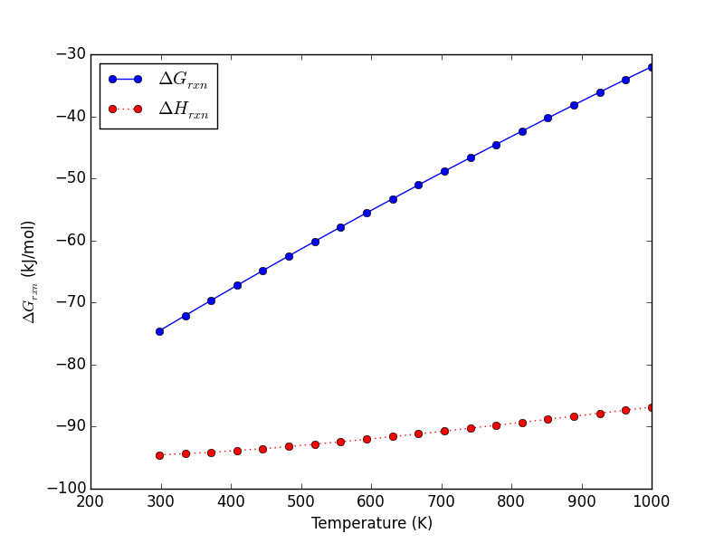 You can see a few things here. One is that at near 298K, the Gibbs free energy is about -75 kJ/mol. This is too negative compared to the experimental standard free energy, which we estimated to be about -29 kJ/mol from the NIST webbook. There could be several reasons for this disagreement, but the most likely one is errors in the exchange-correlation functional. The error in energy has a significant effect on the calculated equilibrium constant, significantly overestimating it.

Figure 26: Temperature dependence of the equilibrium constant.
3.9 Molecular reaction barriers
We will consider a simple example of the barrier for NH3 inversion. We have to create an NH3 molecule in the initial and inverted state (these have exactly the same energy), and then interpolate a band of images. Then, we use the NEB method sheppard:134106 to compute the barrier to inversion. The NEB class of methods are pretty standard, but other algorithms for finding barriers (saddle-points) exist that may be relevant olsen:9776.
3.9.1 Get initial and final states
# compute initial and final states from ase import Atoms from ase.structure import molecule import numpy as np from vasp import Vasp from ase.constraints import FixAtoms atoms = molecule('NH3') constraint = FixAtoms(mask=[atom.symbol == 'N' for atom in atoms]) atoms.set_constraint(constraint) Npos = atoms.positions[0] # move N to origin atoms.translate(-Npos) atoms.set_cell((10, 10, 10), scale_atoms=False) atoms2 = atoms.copy() pos2 = atoms2.positions for i,atom in enumerate(atoms2): if atom.symbol == 'H': # reflect through z pos2[i] *= np.array([1, 1, -1]) atoms2.positions = pos2 #now move N to center of box atoms.translate([5, 5, 5]) atoms2.translate([5, 5, 5]) calcs = [Vasp('molecules/nh3-initial', xc='PBE', encut=350, ibrion=1, nsw=10, atoms=atoms), Vasp('molecules/nh3-final', xc='PBE', encut=350, ibrion=1, nsw=10, atoms=atoms2)] print [c.potential_energy for c in calcs]
3.9.2 Run band calculation
Now we do the band calculation. nudged elastic band
# Run NH3 NEB calculations from vasp import Vasp from ase.neb import NEB from ase.io import read atoms = Vasp('molecules/nh3-initial').get_atoms() atoms2 = Vasp('molecules/nh3-final').get_atoms() # 5 images including endpoints images = [atoms] # initial state images += [atoms.copy() for i in range(3)] images += [atoms2] # final state neb = NEB(images) neb.interpolate() calc = Vasp('molecules/nh3-neb', xc='PBE', ibrion=1, encut=350, nsw=90, spring=-5.0, atoms=images) #calc.write_db(atoms, 'molecules/nh3-neb/00/DB.db') #calc.write_db(atoms2, 'molecules/nh3-neb/04/DB.db') images, energies = calc.get_neb() calc.stop_if(None in energies) print images print energies p = calc.plot_neb(show=False) import matplotlib.pyplot as plt plt.savefig('images/nh3-neb.png')
[Atoms(symbols='NH3', positions=..., magmoms=..., cell=[10.0, 10.0, 10.0], pbc=[True, True, True], constraint=FixAtoms(indices=[0]), calculator=Vasp(...)), Atoms(symbols='NH3', positions=..., magmoms=..., cell=[10.0, 10.0, 10.0], pbc=[True, True, True], constraint=FixAtoms(indices=[0])), Atoms(symbols='NH3', positions=..., magmoms=..., cell=[10.0, 10.0, 10.0], pbc=[True, True, True], constraint=FixAtoms(indices=[0])), Atoms(symbols='NH3', positions=..., magmoms=..., cell=[10.0, 10.0, 10.0], pbc=[True, True, True], constraint=FixAtoms(indices=[0])), Atoms(symbols='NH3', positions=..., magmoms=..., cell=[10.0, 10.0, 10.0], pbc=[True, True, True], constraint=FixAtoms(indices=[0]), calculator=Vasp(...))]
[ 0.00000000e+00 1.26688520e-01 2.25038820e-01 1.26688620e-01
9.99999727e-09]
Optimization terminated successfully.
Current function value: -0.225039
Iterations: 15
Function evaluations: 30
The calculator view function shows you the band.
from vasp import Vasp calc = Vasp('molecules/nh3-neb') calc.view()

Figure 27: Nudged elastic band results for ammonia flipping.
3.9.3 Make a movie of the animation
animation It is helpful sometimes to animate the Nudged elastic band path. Here is a script to do that. I have not figured out how to embed the movie in this document
# make neb movie from ase.io import write from ase.visualize import view from vasp import Vasp calc = Fasp('molecules/nh3-neb') as calc: images, energies = calc.get_neb() # this rotates the atoms 90 degrees about the y-axis [atoms.rotate('y', np.pi/2.) for atoms in images] for i,atoms in enumerate(images): write('images/00{0}-nh3.png'.format(i), atoms, show_unit_cell=2) # animated gif os.system('convert -delay 50 -loop 0 images/00*-nh3.png images/nh3-neb.gif') # Shockwave flash os.system('png2swf -o images/nh3-neb.swf images/00*-nh3.png ')
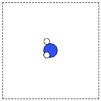
Figure 28: In principle this is an animated gif
4 Bulk systems
See http://arxiv.org/pdf/1204.2733.pdf for a very informative comparison of DFT codes for computing different bulk properties.
4.1 Defining and visualizing bulk systems
4.1.1 Built-in functions in ase
As with molecules, ase provides several helper functions to create bulk structures. We highlight a few of them here. Particularly common ones are:
- ase.lattice.cubic.FaceCenteredCubic
- ase.lattice.cubic.BodyCenteredCubic
- ase.lattice.hexagonal.Graphite
- ase.lattice.compounds.NaCl
For others, see https://wiki.fysik.dtu.dk/ase/ase/lattice.html
We start with a simple example, fcc Ag. By default, ase knows Ag is an fcc metal, and knows the experimental lattice constant. We have to specify the directions (vectors along each axis) to get something other than the default output. Here, the default fcc cell contains four atoms.
from ase.io import write from ase.lattice.cubic import FaceCenteredCubic atoms = FaceCenteredCubic('Ag') write('images/Ag-fcc.png', atoms, show_unit_cell=2) print(atoms)
Lattice(symbols='Ag4', positions=..., cell=[4.09, 4.09, 4.09], pbc=[True, True, True])
A ase.lattice.bravais.Lattice object is returned! This is practically the same as as an ase.atoms.Atoms object.

Figure 29: A simple fcc Ag bulk structure in the primitive unit cell.
Here we specify the primitive unit cell, which only has one atom in it.
from ase.io import write from ase.lattice.cubic import FaceCenteredCubic atoms = FaceCenteredCubic('Ag', directions=[[0, 1, 1], [1, 0, 1], [1, 1, 0]]) write('images/Ag-fcc-primitive.png', atoms, show_unit_cell=2) print atoms
Lattice(symbols='Ag', positions=..., cell=[[2.892066735052979, 0.0, 0.0], [1.4460333675264898, 2.5046032619957996, 0.0], [1.4460333675264896, 0.8348677539985997, 2.3613626009855695]], pbc=[True, True, True])
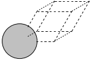
Figure 30: A simple fcc Ag bulk structure in the primitive unit cell.
Lattice(symbols='Ag', positions=..., cell=[[2.892066735052979, 0.0, 0.0], [1.4460333675264898, 2.5046032619957996, 0.0], [1.4460333675264896, 0.8348677539985997, 2.3613626009855695]], pbc=[True, True, True])
We can use these modules to build alloy unit cells. The basic strategy is to create the base unit cell in one element and then selectively change some atoms to different chemical symbols. Here we examine an Ag3Pd alloy structure.
from ase.io import write from ase.lattice.cubic import FaceCenteredCubic atoms = FaceCenteredCubic(directions=[[1, 0, 0], [0, 1, 0], [0, 0, 1]], size=(1, 1, 1), symbol='Ag', latticeconstant=4.0) write('images/Ag-bulk.png', atoms, show_unit_cell=2) # to make an alloy, we can replace one atom with another kind atoms[0].symbol = 'Pd' write('images/AgPd-bulk.png', atoms, show_unit_cell=2)

Figure 31: A simple fcc Ag bulk structure in the traditional unit cell.

Figure 32: A simple Ag3Pd bulk structure.
To create a graphite structure we use the following code. Note that we have to specify the lattice constants (taken from http://www.phy.ohiou.edu/~asmith/NewATOMS/HOPG.pdf) because ase has C in the diamond structure by default. We show two views, because the top view does not show the spacing between the layers.
from ase.lattice.hexagonal import Graphite from ase.io import write atoms = Graphite('C', latticeconstant={'a': 2.4612, 'c': 6.7079}) write('images/graphite.png', atoms.repeat((2, 2, 1)), rotation='115x', show_unit_cell=2) write('images/graphite-top.png', atoms.repeat((2, 2, 1)), show_unit_cell=2)
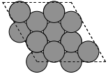
Figure 33: A top view of graphite.

Figure 34: A side view of graphite.
To get a compound, we use the following code. We have to specify the basis atoms to the function generating the compound, and the lattice constant. For NaCl we use the lattice constant at (http://en.wikipedia.org/wiki/Sodium_chloride).
from ase.lattice.compounds import NaCl from ase.io import write atoms = NaCl(['Na', 'Cl'], latticeconstant=5.65) write('images/NaCl.png', atoms, show_unit_cell=2, rotation='45x,45y,45z')

Figure 35: A view of a NaCl crystal structure.
4.1.1.1 ase.spacegroup
A final alternative to setting up bulk structures is ase.spacegroup. This is a concise way to setup structures if you know the following properties of the crystal structure:
- Chemical symbols
- Coordinates of the non-equivalent sites in the unit cell
- the spacegroup
- the cell parameters (a, b, c, alpha, beta, gamma)
from ase.lattice.spacegroup import crystal # FCC aluminum a = 4.05 al = crystal('Al', [(0, 0, 0)], spacegroup=225, cellpar=[a, a, a, 90, 90, 90]) print(al)
Atoms(symbols='Al4', positions=..., cell=[[4.05, 0.0, 0.0], [2.4799097682733903e-16, 4.05, 0.0], [2.4799097682733903e-16, 2.4799097682733903e-16, 4.05]], pbc=[True, True, True])
Here is rutile TiO2.
from ase.lattice.spacegroup import crystal a = 4.6 c = 2.95 rutile = crystal(['Ti', 'O'], basis=[(0, 0, 0), (0.3, 0.3, 0.0)], spacegroup=136, cellpar=[a, a, c, 90, 90, 90]) print rutile
Atoms(symbols'Ti2O4', positions=…, cell=[[4.6, 0.0, 0.0], [2.816687638038912e-16, 4.6, 0.0], [1.806354028742346e-16, 1.806354028742346e-16, 2.95]], pbc=[True, True, True])
=Atoms(symbols'Ti2O4', positions=…, cell=[[4.6, 0.0, 0.0], [2.816687638038912e-16, 4.6, 0.0], [1.806354028742346e-16, 1.806354028742346e-16, 2.95]], pbc=[True, True, True])
=sho
4.1.2 Using http://materialsproject.org/
The Materials Project offers web access to a pretty large number of materials (over 21,000 at the time of this writing), including structure and other computed properties. You must sign up for an account at the website, and then you can access the information. You can search for materials with lots of different criteria including formula, unit cell formula, by elements, by structure, etc… The website allows you to download the VASP files used to create the calculations. They also develop the pymatgen project (which requires python 2.7+).
For example, I downloaded this cif file for a RuO\(_2\) structure (Material ID 825).
#\#CIF1.1 ##########################################################################
##########################################################################
data_RuO2 _symmetry_space_group_name_H-M 'P 1' _cell_length_a 3.13970109 _cell_length_b 4.5436378 _cell_length_c 4.5436378 _cell_angle_alpha 90.0 _cell_angle_beta 90.0 _cell_angle_gamma 90.0 _chemical_name_systematic 'Generated by pymatgen' _symmetry_Int_Tables_number 1 _chemical_formula_structural RuO2 _chemical_formula_sum 'Ru2 O4' _cell_volume 64.8180127062 cell_formula_units_Z 2 loop _symmetry_equiv_pos_site_id _symmetry_equiv_pos_as_xyz 1 'x, y, z'
loop_ _atom_site_type_symbol _atom_site_label _atom_site_symmetry_multiplicity _atom_site_fract_x _atom_site_fract_y _atom_site_fract_z _atom_site_attached_hydrogens _atom_site_B_iso_or_equiv _atom_site_occupancy O O1 1 0.000000 0.694330 0.694330 0 . 1 O O2 1 0.500000 0.805670 0.194330 0 . 1 O O3 1 0.000000 0.305670 0.305670 0 . 1 O O4 1 0.500000 0.194330 0.805670 0 . 1 Ru Ru5 1 0.500000 0.500000 0.500000 0 . 1 Ru Ru6 1 0.000000 0.000000 0.000000 0 . 1 #+end_src
We can read this file in with ase.io.read. That function automatically recognizes the file type by the extension.
from ase.io import read, write atoms = read('bulk/Ru2O4_1.cif') write('images/Ru2O4.png', atoms, show_unit_cell=2)

Figure 36: An RuO2 unit cell prepared from a cif file.
4.2 Computational parameters that are important for bulk structures
4.2.1 k-point convergence
In the section on molecules, we learned that the total energy is a function of the planewave cutoff energy (ENCUT) used. In bulk systems that is true also. There is also another calculation parameter you must consider, the k-point grid. The k-point grid is a computational tool used to approximate integrals of some property, e.g. the electron density, over the entire unit cell. The integration is performed in reciprocal space (i.e. in the Brillouin zone) for convenience and efficiency, and the k-point grid is where the property is sampled for the integration. The higher the number of sampled points, the more accurately the integrals are approximated.
We will typically use a Monkhorst-Pack PhysRevB.13.5188 $k$-point grid, which is essentially a uniformly spaced grid in the Brillouin zone. Another less commonly used scheme is the Chadi-Cohen k-point grid PhysRevB.8.5747. The Monkhorst-Pack grids are specified as \(n1 \times n2 \times n3\) grids, and the total number of k-points is \(n1 \cdot n2 \cdot n3\). The computational cost is linear in the total number of k-points, so a calculation on a \(4 \times 4 \times 4\) grid will be roughly 8 times more expensive than on a \(2 \times 2 \times 2\) grid. Hence, one seeks again to balance convergence with computational tractability. Below we consider the k-point convergence of fcc Ag.
from ase.lattice.cubic import FaceCenteredCubic from vasp import Vasp import numpy as np atoms = FaceCenteredCubic('Ag') KPTS = [2, 3, 4, 5, 6, 8, 10] TE = [] for k in KPTS: calc = Vasp('bulk/Ag-kpts-{0}'.format(k), xc='PBE', kpts=[k, k, k], # specifies the Monkhorst-Pack grid encut=300, atoms=atoms) TE.append(atoms.get_potential_energy()) if None in TE: calc.abort() import matplotlib.pyplot as plt # consider the change in energy from lowest energy state TE = np.array(TE) TE -= TE.min() plt.plot(KPTS, TE) plt.xlabel('number of k-points in each dimension') plt.ylabel('Total Energy (eV)') plt.savefig('images/Ag-kpt-convergence.png')

Figure 37: k-point convergence of the total energy of fcc Ag.
Based on this figure, we need at least a \(6 \times 6 \times 6\) k-point grid to achieve a convergence level of at least 50 meV. Note: the k-point convergence is not always monotonic like it is in this example, and sometimes very dense grids (e.g. up to \(20 \times 20 \times 20\)) are needed for highly converged properties such as the density of states in smaller unit cells. Oscillations in the total energy are typical, and it can be difficult to get high levels of convergence. The best practices are to use the same k-point sampling grid in energy differences where possible, and dense (high numbers of k-points) otherwise. It is important to check for convergence in these cases.
As unit cells get larger, the number of k-points required becomes smaller. For example, if a \(1 \times 1 \times 1\) fcc unit cell shows converged energies in a \(12 \times 12 \times 12\) k-point grid, then a \(2 \times 2 \times 2\) fcc unit cell would show the same level of convergence with a \(6 \times 6 \times 6\) k-point grid. In other words, doubling the unit cell vectors results in a halving of the number of k-points.
Sometimes you may see k-points described as k-points per reciprocal atom. For example, a \(12 \times 12 \times 12\) k-point grid for a primitive fcc unit cell would be 1728 k-points per reciprocal atom. A \(2 \times 2 \times 2\) fcc unit cell has eight atoms in it, or 0.125 reciprocal atoms, so a \(6 \times 6 \times 6\) k-point grid has 216 k-points in it, or 216/0.125 = 1728 k-points per reciprocal atom, the same as we discussed before.
In the k-point convergence example above, we used a \(6 \times 6 \times 6\) k-point grid on a unit cell with four atoms in it, leading to 864 k-points per reciprocal atom. If we had instead used the primitive unit cell, we would need either a \(9 \times 9 \times 9\) or \(10 \times 10 \times 10\) k-point grid to get a similar level of accuracy. In this case, there is no exact matching of k-point grids due to the difference in shape of the cells.
4.2.2 TODO Effect of SIGMA
In the self-consistent cycle of a DFT calculation, the total energy is minimized with respect to occupation of the Kohn-Sham orbitals. At absolute zero, a band is either occupied or empty. This discrete occupation results in discontinuous changes in energy with changes in occupation, which makes it difficult to converge. One solution is to artificially broaden the band occupancies, as if they were occupied at a higher temperature where partial occupation is possible. This results in a continuous dependence of energy on the partial occupancy, and dramatically increases the rate of convergence. SIGMA and ISMEAR affect how the partial occupancies of the bands are determined.
Some rules to keep in mind:
- The smearing methods were designed for metals. For molecules, semiconductors and insulators you should use a very small SIGMA (e.g. 0.01).
- Standard values for metallic systems is SIGMA=0.1, but the best SIGMA may be material specific.
The consequence of this finite temperature is that additional bands must be included in the calculation to allow for the partially occupied states above the Fermi level; the number of extra bands depends on the temperature used. An example of the maximum occupancies of the bands for an Cu bulk as a function of SIGMA is shown in Figure fig:sigma-occ. Obviously, as SIGMA approaches 0, the occupancy approaches a step function. It is preferable that the occupancy of several of the highest bands be zero (or at least of order \(1\times 10^{-8}\)) to ensure enough variational freedom was available in the calculation. Consequently, it is suggested that fifteen to twenty extra bands be used for a SIGMA of 0.20. In any case, it should be determined that enough bands were used by examination of the occupancies. It is undesirable to have too many extra bands, as this will add computational time.
Below we show the effect of SIGMA on the band occupancies.
from vasp import Vasp from ase import Atom, Atoms import matplotlib.pyplot as plt import numpy as np a = 3.61 atoms = Atoms([Atom('Cu', (0, 0, 0))], cell=0.5 * a * np.array([[1.0, 1.0, 0.0], [0.0, 1.0, 1.0], [1.0, 0.0, 1.0]])).repeat((2, 2, 2)) SIGMA = [0.001, 0.05, 0.1, 0.2, 0.5] for sigma in SIGMA: calc = Vasp('bulk/Cu-sigma-{0}'.format(sigma), xc='PBE', encut=350, kpts=[4, 4, 4], ismear=-1, sigma=sigma, nbands=9 * 8, atoms=atoms) if calc.potential_energy is not None: nbands = calc.parameters.nbands nkpts = len(calc.get_ibz_k_points()) occ = np.zeros((nkpts, nbands)) for i in range(nkpts): occ[i, :] = calc.get_occupation_numbers(kpt=i) max_occ = np.max(occ, axis=0) #axis 0 is columns plt.plot(range(nbands), max_occ, label='$\sigma = {0}$'.format(sigma)) plt.xlabel('band number') plt.ylabel('maximum occupancy (electrons)') plt.ylim([-0.1, 2.1]) plt.legend(loc='best') plt.savefig('images/occ-sigma.png')

Figure 38: Effects of SIGMA on the occupancies of the Cu system.
4.2.3 The number of bands
In the last figure, it is evident that due to the smearing of the electronic states you need to have extra bands to accommodate the electrons above the Fermi level, and the higher the SIGMA value is, the more bands you need. You need enough bands so that the highest energy bands are unoccupied, and VASP will give you a warning that looks like this:
----------------------------------------------------------------------------- | | | ADVICE TO THIS USER RUNNING 'VASP/VAMP' (HEAR YOUR MASTER'S VOICE ...): | | | | Your highest band is occupied at some k-points! Unless you are | | performing a calculation for an insulator or semiconductor, without | | unoccupied bands, you have included TOO FEW BANDS!! Please increase | | the parameter NBANDS in file 'INCAR' to ensure that the highest band | | is unoccupied at all k-points. It is always recommended to | | include a few unoccupied bands to accelerate the convergence of | | molecular dynamics runs (even for insulators or semiconductors). | | Because the presence of unoccupied bands improves wavefunction | | prediction, and helps to suppress 'band-crossings.' | | Following all k-points will be listed (with the Fermi weights of | | the highest band given in paranthesis) ... : | | | | 6 (-0.01472) | | 8 (-0.01413) | | 13 (-0.01733) | | 14 (-0.01838) | | | | The total occupancy of band no. 49 is -0.00932 electrons ... | | | -----------------------------------------------------------------------------
We tell VASP the number of bands to use with the NBANDS keyword. VASP will set the NBANDS automatically if you do not provide a value, but this is in general bad practice (even though it is often done in this book!). There are a few general guidelines for setting NBANDS. First we recognize that a band can only have two electrons in it (one spin up, and one spin down) in an calculation without spin-polarization, or one electron per band for a spin-polarized calculation (note that spin-polarization doubles the number of bands). There absolutely must be enough bands to accommodate all the electrons, so the minimum number of bands is int(ceil(nelectrons/2)).
Here is an example of what this equation does.
import numpy as np print int(np.ceil(50 / 2.)) print int(np.ceil(51 / 2.))
25 26
However, due to the smearing, the minimum number of bands is almost never enough, and we always add more bands. The default behavior in VASP is:
| non-spin polarized | NELECT/2 + NIONS/2 |
| spin-polarized | 0.6*NELECT + NMAGIONS |
These do not always work, especially for small molecular systems where NIONS/2 may be only 1, or transition metals where it may be necessary to add up to 2*NIONS extra bands.
To figure out how many bands you need, it is necessary to know how many electrons are in your calculation. The Vasp.get_valence_electrons provides this for you. Alternatively, you can look in the Appendix for a table listing the number of valence electrons for each POTCAR file. Armed with this information you can set NBANDS the way you want.
from vasp import Vasp from ase import Atom, Atoms atoms = Atoms([Atom('Cu', [0.000, 0.000, 0.000])], cell= [[1.818, 0.000, 1.818], [1.818, 1.818, 0.000], [0.000, 1.818, 1.818]]) calc = Vasp('bulk/alloy/cu', xc='PBE', encut=350, kpts=[13, 13, 13], nbands=9, ibrion=2, isif=4, nsw=10, atoms=atoms) print(calc.get_valence_electrons()) print(calc.potential_energy)
11.0 -3.73436945
For this calculation we need at least 6 bands (11/2=5.5 which is rounded up to 6) and we need to include some extra bands. The default rule would only add half a band, which is not enough. We add three additional bands. This system is so small it does not substantially increase the computational cost.
If you are too trifling to do that much work, you can use the Vasp.set_nbands to automatically set the number of bands. This function takes an argument N to set the number of bands to N, or an argument f to set the NBANDS according to the formula \(nbands = int(nelectrons/2 + len(atoms)*f)\). The default value of f is 1.5. If you want the default VASP behavior, set f=0.5. For transition metals, it may be required that f=2. This function does not consider whether the calculation is spin-polarized or not. Here is an example of using Vasp.set_nbands.
from vasp import Vasp from ase import Atom, Atoms atoms = Atoms([Atom('Cu', [0.000, 0.000, 0.000])], cell=[[1.818, 0.000, 1.818], [1.818, 1.818, 0.000], [0.000, 1.818, 1.818]]) calc = Vasp('bulk/alloy/cu', xc='PBE', encut=350, kpts=[13, 13, 13], ibrion=2, isif=4, nsw=10, atoms=atoms) calc.set_nbands(f=7) calc.write_input() # you have to write out the input for it to take effect print calc
*************** VASP CALCULATION SUMMARY ***************
Vasp calculation directory:
---------------------------
[[/home-research/jkitchin/dft-book/bulk/alloy/cu]]
Unit cell:
----------
x y z |v|
v0 1.818 0.000 1.818 2.571 Ang
v1 1.818 1.818 0.000 2.571 Ang
v2 0.000 1.818 1.818 2.571 Ang
alpha, beta, gamma (deg): 60.0 60.0 60.0
Total volume: 12.017 Ang^3
Stress: xx yy zz yz xz xy
nan nan nan nan nan nan GPa
ID tag sym x y z rmsF (eV/A)
0 0 Cu 0.000 0.000 0.000 nan
Potential energy: nan eV
INPUT Parameters:
-----------------
pp : PBE
isif : 4
xc : pbe
kpts : [13, 13, 13]
encut : 350
lcharg : False
ibrion : 2
nbands : 13
ismear : 1
lwave : True
sigma : 0.1
nsw : 10
Pseudopotentials used:
----------------------
Cu: potpaw_PBE/Cu/POTCAR (git-hash: 13fa889d46be8b12a676c1063c5e4faede17e89b)
Note the defaults that were set.
from vasp import Vasp from ase import Atom, Atoms atoms = Atoms([Atom('Cu', [0.000, 0.000, 0.000])], cell=[[1.818, 0.000, 1.818], [1.818, 1.818, 0.000], [0.000, 1.818, 1.818]]) calc = Vasp('bulk/alloy/cu-setnbands', xc='PBE', encut=350, kpts=[13, 13, 13], ibrion=2, isif=4, nsw=10, atoms=atoms) calc.set_nbands(f=3) calc.write_input() print calc
*************** VASP CALCULATION SUMMARY ***************
Vasp calculation directory:
---------------------------
[[/home-research/jkitchin/dft-book/bulk/alloy/cu-setnbands]]
Unit cell:
----------
x y z |v|
v0 1.818 0.000 1.818 2.571 Ang
v1 1.818 1.818 0.000 2.571 Ang
v2 0.000 1.818 1.818 2.571 Ang
alpha, beta, gamma (deg): 60.0 60.0 60.0
Total volume: 12.017 Ang^3
Stress: xx yy zz yz xz xy
nan nan nan nan nan nan GPa
ID tag sym x y z rmsF (eV/A)
0 0 Cu 0.000 0.000 0.000 nan
Potential energy: nan eV
INPUT Parameters:
-----------------
pp : PBE
isif : 4
xc : pbe
kpts : [13, 13, 13]
encut : 350
lcharg : False
ibrion : 2
nbands : 9
ismear : 1
lwave : True
sigma : 0.1
nsw : 10
Pseudopotentials used:
----------------------
Cu: potpaw_PBE/Cu/POTCAR (git-hash: 13fa889d46be8b12a676c1063c5e4faede17e89b)
You are, of course, free to use any formula you want to set the number of bands. Some formulas I have used in the past include:
- NBANDS = 0.65*NELECT + 10
- NBANDS = 0.5*NELECT + 15
- etc…
4.3 Determining bulk structures
What we typically mean by determining bulk structures includes the following:
- What is the most stable crystal structure for a material?
- What is the lattice constant of fcc Cu?
- What are the lattice parameters and internal atom parameters for TiO2?
All of these questions can often be addressed by finding the volume, shape and atomic positions that minimize the total energy of a bulk system. This is true at 0K. At higher temperatures, one must consider minimizing the free energy, rather than the internal energy.
4.3.1 fcc/bcc crystal structures
The fcc and bcc structures are simple. They only have one degree of freedom: the lattice constant. In this section we show how to calculate the equilibrium volume of each structure, and determine which one is more stable. We start with the fcc crystal structure of Cu. We will manually define the crystal structure based on the definitions in Kittel kittel (Chapter 1).
from vasp import Vasp from ase import Atom, Atoms import numpy as np # fcc LC = [3.5, 3.55, 3.6, 3.65, 3.7, 3.75] fcc_energies = [] ready = True for a in LC: atoms = Atoms([Atom('Cu', (0, 0, 0))], cell=0.5 * a * np.array([[1.0, 1.0, 0.0], [0.0, 1.0, 1.0], [1.0, 0.0, 1.0]])) calc = Vasp('bulk/Cu-{0}'.format(a), xc='PBE', encut=350, kpts=[8, 8, 8], atoms=atoms) e = atoms.get_potential_energy() fcc_energies.append(e) calc.stop_if(None in fcc_energies) import matplotlib.pyplot as plt plt.plot(LC, fcc_energies) plt.xlabel('Lattice constant ($\AA$)') plt.ylabel('Total energy (eV)') plt.savefig('images/Cu-fcc.png') print '#+tblname: cu-fcc-energies' print r'| lattice constant ($\AA$) | Total Energy (eV) |' for lc, e in zip(LC, fcc_energies): print '| {0} | {1} |'.format(lc, e)
| lattice constant (\(\AA\)) | Total Energy (eV) |
| 3.5 | -3.66182568 |
| 3.55 | -3.70817569 |
| 3.6 | -3.73109713 |
| 3.65 | -3.73432446 |
| 3.7 | -3.72094163 |
| 3.75 | -3.69342783 |
Use the data in the table above to plot the total energy as a function of the lattice constant. Fit a cubic polynomial to the data, and find the volume that minimizes the total energy.

Figure 39: Total energy vs. fcc lattice contant for Cu. It appears the minimum is near 3.65 Å.
If you want to know the lattice constant that gives the lowest energy, you would fit an equation of state to the data. Here is an example using ase.utils.eos. See also the appendix equations of state.
from vasp import Vasp from ase.utils.eos import EquationOfState LC = [3.5, 3.55, 3.6, 3.65, 3.7, 3.75] energies = [] volumes = [] for a in LC: calc = Vasp('bulk/Cu-{0}'.format(a)) atoms = calc.get_atoms() volumes.append(atoms.get_volume()) energies.append(atoms.get_potential_energy()) calc.stop_if(None in energies) eos = EquationOfState(volumes, energies) v0, e0, B = eos.fit() print ''' v0 = {0} A^3 E0 = {1} eV B = {2} eV/A^3'''.format(v0, e0, B) eos.plot('images/Cu-fcc-eos.png')
v0 = 11.9941760954 A^3 E0 = -3.73528237713 eV B = 0.862553823078 eV/A^3
3.63585568663 3.63585568663 3.63585568663
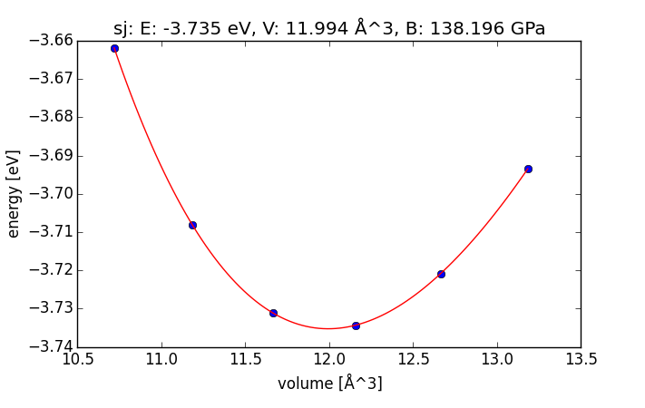
Figure 40: Total energy vs. volume for fcc Cu with fitted cubic polynomial equation of state.
Before we jump into the bcc calculations, let us consider what range of lattice constants we should choose. The fcc lattice is close-packed, and the volume of the primitive cell is \(V = 1/4 a^3\) or about 11.8 Å3/atom. The volume of the equilibrium bcc primitive cell will probably be similar to that. The question is: what bcc lattice constant gives that volume? The simplest way to answer this is to compute the answer. We will make a bcc crystal at the fcc lattice constant, and then compute the scaling factor needed to make it the right volume.
from ase import Atom, Atoms import numpy as np a = 3.61 # lattice constant atoms = Atoms([Atom('Cu', [0,0,0])], cell=0.5 * a*np.array([[ 1.0, 1.0, -1.0], [-1.0, 1.0, 1.0], [ 1.0, -1.0, 1.0]])) print 'BCC lattice constant = {0:1.3f} Ang'.format(a * (11.8 / atoms.get_volume())**(1./3.))
BCC lattice constant = 2.868 Ang
Now we run the equation of state calculations.
from vasp import Vasp from ase import Atom, Atoms import numpy as np LC = [2.75, 2.8, 2.85, 2.9, 2.95, 3.0] for a in LC: atoms = Atoms([Atom('Cu', [0, 0, 0])], cell=0.5 * a * np.array([[ 1.0, 1.0, -1.0], [-1.0, 1.0, 1.0], [ 1.0, -1.0, 1.0]])) calc = Vasp('bulk/Cu-bcc-{0}'.format(a), xc='PBE', encut=350, kpts=[8, 8, 8], atoms=atoms) print(calc.potential_energy)
-3.59937543 -3.67930795 -3.71927399 -3.72637899 -3.70697046 -3.66645678
Finally, we will compare the two crystal structures.
from vasp import Vasp # bcc energies and volumes bcc_LC = [2.75, 2.8, 2.85, 2.9, 2.95, 3.0] bcc_volumes = [] bcc_energies = [] for a in bcc_LC: calc = Vasp('bulk/Cu-bcc-{0}'.format(a)) atoms = calc.get_atoms() bcc_volumes.append(atoms.get_volume()) bcc_energies.append(atoms.get_potential_energy()) # fcc energies and volumes fcc_LC = [3.5, 3.55, 3.6, 3.65, 3.7, 3.75] fcc_volumes = [] fcc_energies =[] for a in fcc_LC: calc = Vasp('bulk/Cu-{0}'.format(a)) atoms = calc.get_atoms() fcc_volumes.append(atoms.get_volume()) fcc_energies.append(atoms.get_potential_energy()) import matplotlib.pyplot as plt plt.plot(fcc_volumes, fcc_energies, label='fcc') plt.plot(bcc_volumes, bcc_energies, label='bcc') plt.xlabel('Atomic volume ($\AA^3$/atom)') plt.ylabel('Total energy (eV)') plt.legend() plt.savefig('images/Cu-bcc-fcc.png') # print table of data print '#+tblname: bcc-data' print '#+caption: Total energy vs. lattice constant for BCC Cu.' print '| Lattice constant (\AA$^3$) | Total energy (eV) |' print '|-' for lc, e in zip(bcc_LC, bcc_energies): print '| {0} | {1} |'.format(lc, e)
/home-research/jkitchin/dft-book/bulk/Cu-bcc-2.75 Queued: 1392110.gilgamesh.cheme.cmu.edu /home-research/jkitchin/dft-book/bulk/Cu-bcc-2.8 Queued: 1392111.gilgamesh.cheme.cmu.edu /home-research/jkitchin/dft-book/bulk/Cu-bcc-2.85 Queued: 1392112.gilgamesh.cheme.cmu.edu /home-research/jkitchin/dft-book/bulk/Cu-bcc-2.9 Queued: 1392113.gilgamesh.cheme.cmu.edu /home-research/jkitchin/dft-book/bulk/Cu-bcc-2.95 Queued: 1392114.gilgamesh.cheme.cmu.edu /home-research/jkitchin/dft-book/bulk/Cu-bcc-3.0 Queued: 1392115.gilgamesh.cheme.cmu.edu
| Lattice constant (Å\(^3\)) | Total energy (eV) |
|---|---|
| 2.75 | None |
| 2.8 | None |
| 2.85 | None |
| 2.9 | None |
| 2.95 | None |
| 3.0 | None |
/home-research/jkitchin/dft-book-new-vasp/bulk/Cu-bcc-2.75 Queued: 1391788.gilgamesh.cheme.cmu.edu /home-research/jkitchin/dft-book-new-vasp/bulk/Cu-bcc-2.8 Queued: 1391789.gilgamesh.cheme.cmu.edu /home-research/jkitchin/dft-book-new-vasp/bulk/Cu-bcc-2.85 Queued: 1391790.gilgamesh.cheme.cmu.edu /home-research/jkitchin/dft-book-new-vasp/bulk/Cu-bcc-2.9 Queued: 1391791.gilgamesh.cheme.cmu.edu /home-research/jkitchin/dft-book-new-vasp/bulk/Cu-bcc-2.95 Queued: 1391792.gilgamesh.cheme.cmu.edu /home-research/jkitchin/dft-book-new-vasp/bulk/Cu-bcc-3.0 Queued: 1391793.gilgamesh.cheme.cmu.edu
| Lattice constant (Å\(^3\)) | Total energy (eV) |
|---|---|
| 2.75 | None |
| 2.8 | None |
| 2.85 | None |
| 2.9 | None |
| 2.95 | None |
| 3.0 | None |
| Lattice constant (Å\(^3\)) | Total energy (eV) |
|---|---|
| 2.75 | -3.59937543 |
| 2.8 | -3.67930795 |
| 2.85 | -3.71927399 |
| 2.9 | -3.72637899 |
| 2.95 | -3.70697046 |
| 3.0 | -3.66645679 |
Use the data for FCC and BCC Cu to plot the total energy as a function of the lattice constant.
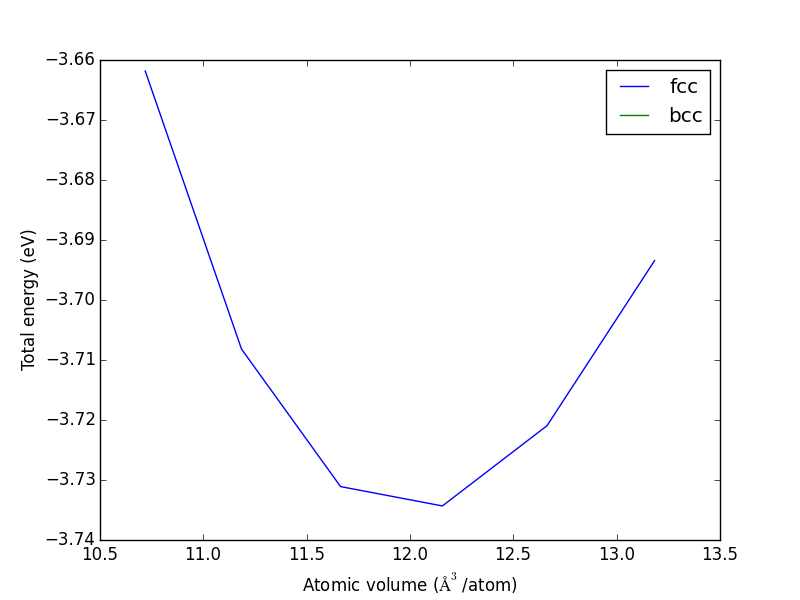
Figure 41: Comparison of energies between fcc and bcc Cu. The fcc structure is lower in energy.
Note we plot the energy vs. atomic volume. That is because the lattice constants of the two crystal structures are very different. It also shows that the atomic volumes in the two structures are similar.
What can we say here? The fcc structure has a lower energy than the bcc structure, so we can conclude the fcc structure is more favorable. In fact, the fcc structure is the experimentally found structure for Cu. Some caution is in order; if you run these calculations at a \(4 \times 4 \times 4\) $k$-point grid, the bcc structure is more stable because the results are not converged!
Compute the energy vs. volume for fcc and bcc Cu for different $k$-point grids. Determine when each result has converged, and which structure is more stable.
What can we say about the relative stability of fcc to hcp? Nothing, until we calculate the hcp equation of state.
4.3.2 Optimizing the hcp lattice constant
The hcp lattice is more complicated than the fcc/bcc lattices because there are two lattice parameters: \(a\) and \(c\) or equivalently: \(a\) and \(c/a\). We will start by making a grid of values and find the set of parameters that minimizes the energy. See Figure fig:ru-e-ca.
from ase.lattice.hexagonal import HexagonalClosedPacked from vasp import Vasp import matplotlib.pyplot as plt atoms = HexagonalClosedPacked(symbol='Ru', latticeconstant={'a': 2.7, 'c/a': 1.584}) a_list = [2.5, 2.6, 2.7, 2.8, 2.9] covera_list = [1.4, 1.5, 1.6, 1.7, 1.8] for a in a_list: energies = [] for covera in covera_list: atoms = HexagonalClosedPacked(symbol='Ru', latticeconstant={'a': a, 'c/a': covera}) wd = 'bulk/Ru/{0:1.2f}-{1:1.2f}'.format(a, covera) calc = Vasp(wd, xc='PBE', # the c-axis is longer than the a-axis, so we use # fewer kpoints. kpts=[6, 6, 4], encut=350, atoms=atoms) energies.append(atoms.get_potential_energy()) if not None in energies: plt.plot(covera_list, energies, label=r'a={0} $\AA$'.format(a)) plt.xlabel('$c/a$') plt.ylabel('Energy (eV)') plt.legend() plt.savefig('images/Ru-covera-scan.png')

Figure 42: Total energy vs. \(c/a\) for different values of \(a\). \label{fig:ru-e-ca}
It looks like there is a minimum in the a=2.7 Å curve, at a \(c/a\) ratio of about 1.6. We can look at the same data in a contour plot which shows more clearly there is minimum in all directions near that point (Figure fig:ru-contourf).
from vasp import Vasp import matplotlib.pyplot as plt import numpy as np x = [2.5, 2.6, 2.7, 2.8, 2.9] y = [1.4, 1.5, 1.6, 1.7, 1.8] X,Y = np.meshgrid(x, y) Z = np.zeros(X.shape) for i,a in enumerate(x): for j,covera in enumerate(y): wd = 'bulk/Ru/{0:1.2f}-{1:1.2f}'.format(a, covera) calc = Vasp(wd) Z[i][j] = calc.potential_energy calc.stop_if(None in Z) cf = plt.contourf(X, Y, Z, 20, cmap=plt.cm.jet) cbar = plt.colorbar(cf) cbar.ax.set_ylabel('Energy (eV)') plt.xlabel('$a$ ($\AA$)') plt.ylabel('$c/a$') plt.legend() plt.savefig('images/ru-contourf.png') plt.show()
/home-research/jkitchin/dft-book/bulk/Ru/2.50-1.40 Queued: 1392116.gilgamesh.cheme.cmu.edu /home-research/jkitchin/dft-book/bulk/Ru/2.50-1.40 Queued: 1392116.gilgamesh.cheme.cmu.edu /home-research/jkitchin/dft-book/bulk/Ru/2.50-1.50 Queued: 1392117.gilgamesh.cheme.cmu.edu /home-research/jkitchin/dft-book/bulk/Ru/2.50-1.50 Queued: 1392117.gilgamesh.cheme.cmu.edu /home-research/jkitchin/dft-book/bulk/Ru/2.50-1.60 Queued: 1392118.gilgamesh.cheme.cmu.edu /home-research/jkitchin/dft-book/bulk/Ru/2.50-1.60 Queued: 1392118.gilgamesh.cheme.cmu.edu /home-research/jkitchin/dft-book/bulk/Ru/2.50-1.70 Queued: 1392119.gilgamesh.cheme.cmu.edu /home-research/jkitchin/dft-book/bulk/Ru/2.50-1.70 Queued: 1392119.gilgamesh.cheme.cmu.edu /home-research/jkitchin/dft-book/bulk/Ru/2.50-1.80 Queued: 1392120.gilgamesh.cheme.cmu.edu /home-research/jkitchin/dft-book/bulk/Ru/2.50-1.80 Queued: 1392120.gilgamesh.cheme.cmu.edu /home-research/jkitchin/dft-book/bulk/Ru/2.60-1.40 Queued: 1392121.gilgamesh.cheme.cmu.edu /home-research/jkitchin/dft-book/bulk/Ru/2.60-1.40 Queued: 1392121.gilgamesh.cheme.cmu.edu /home-research/jkitchin/dft-book/bulk/Ru/2.60-1.50 Queued: 1392122.gilgamesh.cheme.cmu.edu /home-research/jkitchin/dft-book/bulk/Ru/2.60-1.50 Queued: 1392122.gilgamesh.cheme.cmu.edu /home-research/jkitchin/dft-book/bulk/Ru/2.60-1.60 Queued: 1392123.gilgamesh.cheme.cmu.edu /home-research/jkitchin/dft-book/bulk/Ru/2.60-1.60 Queued: 1392123.gilgamesh.cheme.cmu.edu /home-research/jkitchin/dft-book/bulk/Ru/2.60-1.70 Queued: 1392124.gilgamesh.cheme.cmu.edu /home-research/jkitchin/dft-book/bulk/Ru/2.60-1.70 Queued: 1392124.gilgamesh.cheme.cmu.edu /home-research/jkitchin/dft-book/bulk/Ru/2.60-1.80 Queued: 1392125.gilgamesh.cheme.cmu.edu /home-research/jkitchin/dft-book/bulk/Ru/2.60-1.80 Queued: 1392125.gilgamesh.cheme.cmu.edu /home-research/jkitchin/dft-book/bulk/Ru/2.70-1.40 Queued: 1392126.gilgamesh.cheme.cmu.edu /home-research/jkitchin/dft-book/bulk/Ru/2.70-1.40 Queued: 1392126.gilgamesh.cheme.cmu.edu /home-research/jkitchin/dft-book/bulk/Ru/2.70-1.50 Queued: 1392127.gilgamesh.cheme.cmu.edu /home-research/jkitchin/dft-book/bulk/Ru/2.70-1.50 Queued: 1392127.gilgamesh.cheme.cmu.edu /home-research/jkitchin/dft-book/bulk/Ru/2.70-1.60 Queued: 1392128.gilgamesh.cheme.cmu.edu /home-research/jkitchin/dft-book/bulk/Ru/2.70-1.60 Queued: 1392128.gilgamesh.cheme.cmu.edu /home-research/jkitchin/dft-book/bulk/Ru/2.70-1.70 Queued: 1392129.gilgamesh.cheme.cmu.edu /home-research/jkitchin/dft-book/bulk/Ru/2.70-1.70 Queued: 1392129.gilgamesh.cheme.cmu.edu /home-research/jkitchin/dft-book/bulk/Ru/2.70-1.80 Queued: 1392130.gilgamesh.cheme.cmu.edu /home-research/jkitchin/dft-book/bulk/Ru/2.70-1.80 Queued: 1392130.gilgamesh.cheme.cmu.edu /home-research/jkitchin/dft-book/bulk/Ru/2.80-1.40 Queued: 1392131.gilgamesh.cheme.cmu.edu /home-research/jkitchin/dft-book/bulk/Ru/2.80-1.40 Queued: 1392131.gilgamesh.cheme.cmu.edu /home-research/jkitchin/dft-book/bulk/Ru/2.80-1.50 Queued: 1392132.gilgamesh.cheme.cmu.edu /home-research/jkitchin/dft-book/bulk/Ru/2.80-1.50 Queued: 1392132.gilgamesh.cheme.cmu.edu /home-research/jkitchin/dft-book/bulk/Ru/2.80-1.60 Queued: 1392133.gilgamesh.cheme.cmu.edu /home-research/jkitchin/dft-book/bulk/Ru/2.80-1.60 Queued: 1392133.gilgamesh.cheme.cmu.edu /home-research/jkitchin/dft-book/bulk/Ru/2.80-1.70 Queued: 1392134.gilgamesh.cheme.cmu.edu /home-research/jkitchin/dft-book/bulk/Ru/2.80-1.70 Queued: 1392134.gilgamesh.cheme.cmu.edu /home-research/jkitchin/dft-book/bulk/Ru/2.80-1.80 Queued: 1392135.gilgamesh.cheme.cmu.edu /home-research/jkitchin/dft-book/bulk/Ru/2.80-1.80 Queued: 1392135.gilgamesh.cheme.cmu.edu /home-research/jkitchin/dft-book/bulk/Ru/2.90-1.40 Queued: 1392136.gilgamesh.cheme.cmu.edu /home-research/jkitchin/dft-book/bulk/Ru/2.90-1.40 Queued: 1392136.gilgamesh.cheme.cmu.edu /home-research/jkitchin/dft-book/bulk/Ru/2.90-1.50 Queued: 1392137.gilgamesh.cheme.cmu.edu /home-research/jkitchin/dft-book/bulk/Ru/2.90-1.50 Queued: 1392137.gilgamesh.cheme.cmu.edu /home-research/jkitchin/dft-book/bulk/Ru/2.90-1.60 Queued: 1392138.gilgamesh.cheme.cmu.edu /home-research/jkitchin/dft-book/bulk/Ru/2.90-1.60 Queued: 1392138.gilgamesh.cheme.cmu.edu /home-research/jkitchin/dft-book/bulk/Ru/2.90-1.70 Queued: 1392139.gilgamesh.cheme.cmu.edu /home-research/jkitchin/dft-book/bulk/Ru/2.90-1.70 Queued: 1392139.gilgamesh.cheme.cmu.edu /home-research/jkitchin/dft-book/bulk/Ru/2.90-1.80 Queued: 1392140.gilgamesh.cheme.cmu.edu /home-research/jkitchin/dft-book/bulk/Ru/2.90-1.80 Queued: 1392140.gilgamesh.cheme.cmu.edu

Figure 43: Contour plot of the total energy of hcp Ru for different values of \(a\) and \(c/a\). \label{fig:ru-contourf}
4.3.3 Complex structures with internal degrees of freedom
A unit cell has six degrees of freedom: the lengths of each unit cell vector, and the angle between each vector. There may additionally be internal degrees of freedom for the atoms. It is impractical to try the approach used for the hcp Ru on anything complicated. Instead, we rely again on algorithms to optimize the unit cell shape, volume and internal degrees of freedom. It is usually not efficient to make a wild guess of the geometry and then turn VASP loose on to optimize it. Instead, the following algorithm works pretty well.
- Find the volume (at constant shape, with relaxed ions) that minimizes the total energy (ISIF=2). The goal here is to just get an idea of where the right volume is.
- Using the results from step 1 as a starting point, perform a set of calculations at constant volume around the minimum from step 1, but the shape and internal atom positions are allowed to change (ISIF=4).
- Finally, do a final calculation near the minimum energy allowing the volume to also change. (ISIF=3).
This multistep process is pretty reasonable to get a converged structure pretty quickly. It is not foolproof, however, and if you have materials such as graphite it may not work well. The problem with graphite is that it is a layered compound that is held together by weak van der waal type forces which are not modeled well by typical GGA functionals. Thus the change in energy due to a volume change is larger in the plane of the graphite sheet than in the direction normal to the sheet. With a typical GGA, the sheets may just move apart until they do not interact any more.
We will illustrate the process on a well-behaved system (rutile TiO2) which has two lattice parameters and one internal degree of freedom. There are a few subtle points to mention in doing these calculations. The VASP manual recommends that you set PREC to 'high', and that ENCUT be set to 1.3*max(ENMAX) of the pseudopotentials. This is necessary to avoid problems caused by small basis sets when the volume changes, and Pulay stress. It is important to ensure that the energies are reasonably converged with respect to k-point grids. Hence, it can be a significant amount of work to do this right! Let us start with determining the ENCUT value that is appropriate for TiO2.
grep ENMAX $VASP_PP_PATH/potpaw_PBE/Ti/POTCAR grep ENMAX $VASP_PP_PATH/potpaw_PBE/O/POTCAR
ENMAX = 178.330; ENMIN = 133.747 eV ENMAX = 400.000; ENMIN = 300.000 eV
According to the manual, we should use ENCUT = 1.3*400 = 520 eV for good results.
Now we consider the k-point convergence. The lattice vectors of the rutile TiO2 structure are not all the same length, which means it is not essential that we use the same number of k-points in each direction. For simplicity, however, we do that here.
# step 1 frozen atoms and shape at different volumes from ase import Atom, Atoms import numpy as np from vasp import Vasp import matplotlib.pyplot as plt ''' create a TiO2 structure from the lattice vectors at http://cst-www.nrl.navy.mil/lattice/struk/c4.html This site does not exist anymore. ''' a = 4.59 # experimental degrees of freedom. c = 2.96 u = 0.3 # internal degree of freedom! #primitive vectors a1 = a * np.array([1.0, 0.0, 0.0]) a2 = a * np.array([0.0, 1.0, 0.0]) a3 = c * np.array([0.0, 0.0, 1.0]) atoms = Atoms([Atom('Ti', [0., 0., 0.]), Atom('Ti', 0.5 * a1 + 0.5 * a2 + 0.5 * a3), Atom('O', u * a1 + u * a2), Atom('O', -u * a1 - u * a2), Atom('O', (0.5 + u) * a1 + (0.5 - u) * a2 + 0.5 * a3), Atom('O', (0.5 - u) * a1 + (0.5 + u) * a2 + 0.5 * a3)], cell=[a1, a2, a3]) KPOINTS = [2, 3, 4, 5, 6, 7, 8] energies = [] ready = True for k in KPOINTS: calc = Vasp('bulk/tio2/kpts-{0}'.format(k), encut=520, kpts=[k, k, k], xc='PBE', sigma=0.05, atoms=atoms) energies.append(atoms.get_potential_energy()) calc.stop_if(None in energies) plt.plot(KPOINTS, energies) plt.xlabel('number of k-points in each vector') plt.ylabel('Total energy (eV)') plt.savefig('images/tio2-kpt-convergence.png')

Figure 44: k-point convergence of rutile TiO2.
A k-point grid of \(5 \times 5 \times 5\) appears suitable for reasonably converged results. Now we proceed with step 1: Compute the total energy of the unit cell allowing internal degrees of freedom to relax, but keeping a constant cell shape.
# step 1 frozen atoms and shape at different volumes from ase import Atom, Atoms import numpy as np from vasp import Vasp import matplotlib.pyplot as plt ''' create a TiO2 structure from the lattice vectors at http://cst-www.nrl.navy.mil/lattice/struk/c4.html ''' a = 4.59 # experimental degrees of freedom. c = 2.96 u = 0.3 # internal degree of freedom! #primitive vectors a1 = a * np.array([1.0, 0.0, 0.0]) a2 = a * np.array([0.0, 1.0, 0.0]) a3 = c * np.array([0.0, 0.0, 1.0]) atoms = Atoms([Atom('Ti', [0., 0., 0.]), Atom('Ti', 0.5 * a1 + 0.5 * a2 + 0.5 * a3), Atom('O', u * a1 + u * a2), Atom('O', -u * a1 - u * a2), Atom('O', (0.5 + u) * a1 + (0.5 - u) * a2 + 0.5 * a3), Atom('O', (0.5 - u) * a1 + (0.5 + u) * a2 + 0.5 * a3)], cell=[a1, a2, a3]) v0 = atoms.get_volume() cell0 = atoms.get_cell() factors = [0.9, 0.95, 1.0, 1.05, 1.1] #to change volume by energies, volumes = [], [] ready = True for f in factors: v1 = f * v0 cell_factor = (v1 / v0)**(1. / 3.) atoms.set_cell(cell0 * cell_factor, scale_atoms=True) calc = Vasp('bulk/tio2/step1-{0:1.2f}'.format(f), encut=520, kpts=[5, 5, 5], isif=2, # relax internal degrees of freedom ibrion=1, nsw=50, xc='PBE', sigma=0.05, atoms=atoms) energies.append(atoms.get_potential_energy()) volumes.append(atoms.get_volume()) calc.stop_if(None in energies) plt.plot(volumes, energies) plt.xlabel('Vol. ($\AA^3)$') plt.ylabel('Total energy (eV)') plt.savefig('images/tio2-step1.png') print '#+tblname: tio2-vol-ene' print '#+caption: Total energy of TiO_{2} vs. volume.' print '| Volume ($\AA^3$) | Energy (eV) |' print '|-' for v, e in zip(volumes, energies): print '| {0} | {1} |'.format(v, e)
| Volume (\(\AA^3\)) | Energy (eV) |
|---|---|
| 56.1254185488 | -51.81932158 |
| 59.2434971663 | -52.46118036 |
| 62.361576 | -52.76017908 |
| 65.4796549456 | -52.80043775 |
| 68.5977335623 | -52.64628895 |

Figure 45: Total energy vs. volume for rutile TiO2 in step 1 of the optimization.
Now, we know the minimum energy volume is near 64 Å^3. You could at this point fit an equation of state to find that minimum. However, we now want to use these initial starting points for a second round of optimization where we allow the unit cell shape to change, at constant volume: ISIF=4.
from vasp import Vasp calc = Vasp('bulk/tio2/step1-0.90') calc.clone('bulk/tio2/step2-0.90') #calc.set(isif=4) print calc.set(isif=4) print calc.calculation_required()
clone: Atoms(symbols='Ti2O4', positions=..., magmoms=..., cell=[4.41041021, 4.41041021, 2.88537073], pbc=[True, True, True], calculator=SinglePointCalculator(...))
{}
False
from vasp import Vasp factors = [0.9, 0.95, 1.0, 1.05, 1.1] # to change volume by energies1, volumes1 = [], [] # from step 1 energies, volumes = [], [] # for step 2 ready = True for f in factors: calc = Vasp('bulk/tio2/step1-{0:1.2f}'.format(f)) atoms = calc.get_atoms() energies1.append(atoms.get_potential_energy()) volumes1.append(atoms.get_volume()) calc.clone('bulk/tio2/step2-{0:1.2f}'.format(f)) calc.set(isif=4) # You have to get the atoms again. atoms = calc.get_atoms() energies.append(atoms.get_potential_energy()) volumes.append(atoms.get_volume()) print(energies, volumes) calc.stop_if(None in energies) import matplotlib.pyplot as plt plt.plot(volumes1, energies1, volumes, energies) plt.xlabel('Vol. ($\AA^3)$') plt.ylabel('Total energy (eV)') plt.legend(['step 1', 'step 2'], loc='best') plt.savefig('images/tio2-step2.png')
([-51.82715553, -52.46235848, -52.76127768, -52.80903199, -52.67597935], [56.125418401558292, 59.243497055444799, 62.36157600817976, 65.47965475812434, 68.597733708605929])

Figure 46: Total energy vs. volume for step 2 of the unit cell optimization.
The take away message here is that the total energy slightly decreases when we allow the unit cell shape to change, especially for the larger unit cell deformation. This has little effect on the minimum volume, but would have an effect on the bulk modulus, which is related to the curvature of the equation of state. At this point, you could fit an equation of state to the step 2 data, and estimate the volume at the minimum volume, and recalculate the total energy at that volume.
An alternative is a final calculation with ISIF=3, which optimizes the unit cell volume, shape and internal coordinates. It looks like the calculation at bulk/tio2/step2-1.05 is close to the minimum, so we will use that as a starting point for the final calculation.
from vasp import Vasp calc = Vasp('bulk/tio2/step2-1.05') calc.clone('bulk/tio2/step3') calc = Vasp('bulk/tio2/step3', isif=3) calc.wait() print calc from pyspglib import spglib print '\nThe spacegroup is {0}'.format(spglib.get_spacegroup(calc.atoms))
*************** VASP CALCULATION SUMMARY ***************
Vasp calculation directory:
---------------------------
[[/home-research/jkitchin/dft-book/bulk/tio2/step3]]
Unit cell:
----------
x y z |v|
v0 4.661 0.000 0.000 4.661 Ang
v1 0.000 4.661 0.000 4.661 Ang
v2 0.000 0.000 2.970 2.970 Ang
alpha, beta, gamma (deg): 90.0 90.0 90.0
Total volume: 64.535 Ang^3
Stress: xx yy zz yz xz xy
-0.002 -0.002 -0.000 -0.000 -0.000 -0.000 GPa
ID tag sym x y z rmsF (eV/A)
0 0 Ti 0.000 0.000 0.000 0.00
1 0 Ti 2.331 2.331 1.485 0.00
2 0 O 1.420 1.420 0.000 0.00
3 0 O 3.241 3.241 0.000 0.00
4 0 O 3.751 0.910 1.485 0.00
5 0 O 0.910 3.751 1.485 0.00
Potential energy: -52.8176 eV
INPUT Parameters:
-----------------
pp : PBE
isif : 3
xc : pbe
kpts : [5, 5, 5]
encut : 520
lcharg : False
ibrion : 1
ismear : 1
lwave : False
sigma : 0.05
nsw : 50
Pseudopotentials used:
----------------------
Ti: potpaw_PBE/Ti/POTCAR (git-hash: 39cac2d7c620efc80c69344da61b5c43bc16e9b8)
O: potpaw_PBE/O/POTCAR (git-hash: 592f34096943a6f30db8749d13efca516d75ec55)
The spacegroup is P4_2/mnm (136)
This is the final result. You can see that the forces on all the atoms are less than 0.01 eV/Å, and the stress is also very small. The final volume is close to where we expect it to be based on steps 1 and 2. The space group is still correct. The lattice vectors are close in length to the experimentally known values, and the angles between the vectors has not changed much. Looks good!
As a final note, the VASP manual recommends you do not use the final energy directly from the calculation, but rather run a final calculation with ISMEAR set to -5. Here we examine the effect.
from vasp import Vasp calc = Vasp('bulk/tio2/step3') atoms = calc.get_atoms() print 'default ismear: ', atoms.get_potential_energy() calc.clone('bulk/tio2/step4') calc.set(ismear=-5, nsw=0) atoms = calc.get_atoms() print 'ismear=-5: ', atoms.get_potential_energy()
default ismear: -52.81760338 ismear=-5: -52.8004532
The difference here is on the order of a meV. That does not seem significant here. I suspect the recommended practice stems from early days when much smaller ENCUT values were used and changes in the number of basis functions were more significant.
4.3.4 Effect of XC on bulk properties
The exchange correlation functional can significantly affect computed bulk properties. Here, we examine the effect on the bulk lattice constant of Pd (exp. 3.881). An excellent review of this can be found in mattsson-084714. We examine several functionals. The xc keyword in Vasp is used to select the POTCARs. Let us consider the LDA functional first.
from vasp import Vasp from ase import Atom, Atoms from ase.utils.eos import EquationOfState import numpy as np LC = [3.75, 3.80, 3.85, 3.90, 3.95, 4.0, 4.05, 4.1] volumes, energies = [], [] for a in LC: atoms = Atoms([Atom('Pd', (0, 0, 0))], cell=0.5 * a * np.array([[1.0, 1.0, 0.0], [0.0, 1.0, 1.0], [1.0, 0.0, 1.0]])) calc = Vasp('bulk/Pd-LDA-{0}'.format(a), encut=350, kpts=[12, 12, 12], xc='LDA', atoms=atoms) e = atoms.get_potential_energy() energies.append(e) volumes.append(atoms.get_volume()) calc.stop_if(None in energies) eos = EquationOfState(volumes, energies) v0, e0, B = eos.fit() print('LDA lattice constant is {0:1.3f} Ang^3'.format((4*v0)**(1./3.)))
LDA lattice constant is 3.841 Ang^3
For a GGA calculation, it is possible to specify which functional you want via the GGA tag. This tag was designed to use the LDA POTCAR files, but with a GGA functional. We will consider four different functionals here.
from vasp import Vasp from ase import Atom, Atoms from ase.utils.eos import EquationOfState import numpy as np LC = [3.75, 3.80, 3.85, 3.90, 3.95, 4.0, 4.05, 4.1] GGA = {'AM': 'AM05', 'PE': 'PBE', 'PS': 'PBEsol', 'RP': 'RPBE'} for key in GGA: volumes, energies = [], [] for a in LC: atoms = Atoms([Atom('Pd', (0, 0, 0))], cell=0.5 * a * np.array([[1.0, 1.0, 0.0], [0.0, 1.0, 1.0], [1.0, 0.0, 1.0]])) calc = Vasp('bulk/Pd-GGA-{1}-{0}'.format(a, key), encut=350, kpts=[12, 12, 12], xc='LDA', gga=key, atoms=atoms) e = atoms.get_potential_energy() energies.append(e) volumes.append(atoms.get_volume()) if None not in energies: eos = EquationOfState(volumes, energies) v0, e0, B = eos.fit() print '{1:6s} lattice constant is {0:1.3f} Ang^3'.format((4*v0)**(1./3.), GGA[key]) else: print energies, LC print '{0} is not ready'.format(GGA[key])
PBEsol lattice constant is 3.841 Ang^3 AM05 lattice constant is 3.841 Ang^3 RPBE lattice constant is 3.841 Ang^3 PBE lattice constant is 3.939 Ang^3
These results compare very favorably to those in mattsson-084714. It is typical that LDA functionals underestimate the lattice constants, and that GGAs tend to overestimate the lattice constants. PBEsol and AM05 were designed specifically for solids, and for Pd, these functionals do an exceptional job of reproducing the lattice constants. RPBE is particularly bad at the lattice constant, but it has been reported to be a superior functional for reactivity hammer1999:improv-pbe.
4.4 TODO Using built-in ase optimization with vasp
ASE has some nice optimization tools built into it. We can use them in vasp too. This example is adapted from this test: https://trac.fysik.dtu.dk/projects/ase/browser/trunk/ase/test/vasp/vasp_Al_volrelax.py
First the VASP way.
from vasp import Vasp from ase.lattice import bulk Al = bulk('Al', 'fcc', a=4.5, cubic=True) calc = Vasp('bulk/Al-lda-vasp', xc='LDA', isif=7, nsw=5, ibrion=1, ediffg=-1e-3, lwave=False, lcharg=False, atoms=Al) print(calc.potential_energy) print(calc)
-10.07430725
Vasp calculation in /home-research/jkitchin/dft-book/bulk/Al-lda-vasp
INCAR created by Atomic Simulation Environment
ISIF = 7
LCHARG = .FALSE.
IBRION = 1
EDIFFG = -0.001
ISMEAR = 1
LWAVE = .TRUE.
SIGMA = 0.1
NSW = 5
Al
1.0000000000000000
4.5000000000000000 0.0000000000000000 0.0000000000000000
0.0000000000000000 4.5000000000000000 0.0000000000000000
0.0000000000000000 0.0000000000000000 4.5000000000000000
4
Cartesian
0.0000000000000000 0.0000000000000000 0.0000000000000000
0.0000000000000000 2.2500000000000000 2.2500000000000000
2.2500000000000000 0.0000000000000000 2.2500000000000000
2.2500000000000000 2.2500000000000000 0.0000000000000000
#+BEGIN_SRC python from vasp import Vasp calc = Vasp('bulk/Al-lda-vasp') calc.view() print [atoms.get_volume() for atoms in calc.traj] print [atoms.get_potential_energy() for atoms in calc.traj]
[91.124999999999986, 78.034123525818302, 72.328582812881763, 73.422437849114189, 73.368474506164134] [-9.58448747, -10.02992063, -10.07180132, -10.07429962, -10.07430725]
Now, the ASE way. TODO
from vasp import Vasp from ase.lattice import bulk from ase.optimize import BFGS as QuasiNewton Al = bulk('Al', 'fcc', a=4.5, cubic=True) calc = Vasp('bulk/Al-lda-ase', xc='LDA', atoms=Al) from ase.constraints import StrainFilter sf = StrainFilter(Al) qn = QuasiNewton(sf, logfile='relaxation.log') qn.run(fmax=0.1, steps=5) print('Stress:\n', calc.stress) print('Al post ASE volume relaxation\n', calc.get_atoms().get_cell()) print(calc)
Now for a detailed comparison:
from vasp import Vasp atoms = Vasp('bulk/Al-lda-vasp').get_atoms() atoms2 = Vasp('bulk/Al-lda-ase').get_atoms() import numpy as np cellA = atoms.get_cell() cellB = atoms2.get_cell() print((np.abs(cellA - cellB) < 0.01).all())
False
This could be handy if you want to use any of the optimizers in ase.optimize in conjunction with ase.constraints, which are more advanced than what is in VASP.
4.5 Cohesive energy
cohesive energy The cohesive energy is defined as the energy to separate neutral atoms in their ground electronic state from the solid at 0K at 1 atm. We will compute this for rhodium. Rh is normally an fcc metal, so we will use that structure and let VASP find the equilibrium volume for us.
from vasp import Vasp from ase.lattice.cubic import FaceCenteredCubic from ase import Atoms, Atom # bulk system atoms = FaceCenteredCubic(directions=[[0, 1, 1], [1, 0, 1], [1, 1, 0]], size=(1, 1, 1), symbol='Rh') calc = Vasp('bulk/bulk-rh', xc='PBE', encut=350, kpts=[4, 4, 4], isif=3, ibrion=2, nsw=10, atoms=atoms) bulk_energy = atoms.get_potential_energy() # atomic system atoms = Atoms([Atom('Rh',[5, 5, 5])], cell=(7, 8, 9)) calc = Vasp('bulk/atomic-rh', xc='PBE', encut=350, kpts=[1, 1, 1], atoms=atoms) atomic_energy = atoms.get_potential_energy() calc.stop_if(None in (bulk_energy, atomic_energy)) cohesive_energy = atomic_energy - bulk_energy print 'The cohesive energy is {0:1.3f} eV'.format(cohesive_energy)
The cohesive energy is 6.184 eV
According to Kittel kittel, the cohesive energy of Rh is 5.75 eV. There are a few reasons we may have discrepancy here:
- The k-point grid used in the bulk state is not very dense. However, you can see below that the total energy is pretty converged by a \(6 \times 6 \times 6\) $k$-point grid.
- We did not check for convergence with the planewave cutoff.
- We neglected spin on the atomic state. Rh in the atomic state has this electronic structure: [Kr] 4d8 5s1 and is a doublet.
First we consider the k-point convergence. convergence!KPOINTS
from vasp import Vasp calc = Vasp('bulk/atomic-rh') atomic_energy = calc.potential_energy calc = Vasp('bulk/bulk-rh') atoms = calc.get_atoms() kpts = [3, 4, 6, 9, 12, 15, 18] calcs = [Vasp('bulk/bulk-rh-kpts-{0}'.format(k), xc='PBE', encut=350, kpts=[k, k, k], atoms=atoms) for k in kpts] energies = [calc.potential_energy for calc in calcs] calcs[0].stop_if(None in energies) for k, e in zip(kpts, energies): print('({0:2d}, {0:2d}, {0:2d}):' ' cohesive energy = {1} eV'.format(k, e - atomic_energy))
( 3, 3, 3): cohesive energy = -4.76129426 eV ( 4, 4, 4): cohesive energy = -6.17915613 eV ( 6, 6, 6): cohesive energy = -6.20654198 eV ( 9, 9, 9): cohesive energy = -6.20118094 eV (12, 12, 12): cohesive energy = -6.20897225 eV (15, 15, 15): cohesive energy = -6.2091123 eV (18, 18, 18): cohesive energy = -6.21007962 eV
Using only 1 k-point for the bulk energy is a terrible approximation! It takes at least a 6 × 6 × 6 grid to get the total energy converged to less than 10 meV. Note we do not need to check the k-point convergence of the atomic state because it is surrounded by vacuum on all sides, and so there should not be any dispersion in the bands.
We will examine the magnetic state next.
from vasp import Vasp from ase.lattice.cubic import FaceCenteredCubic from ase import Atoms, Atom # bulk system atoms = FaceCenteredCubic(directions=[[0, 1, 1], [1, 0, 1], [1, 1, 0]], size=(1, 1, 1), symbol='Rh') calc = Vasp('bulk/bulk-rh', xc='PBE', encut=350, kpts=[4, 4, 4], isif=3, ibrion=2, nsw=10, atoms=atoms) bulk_energy = atoms.get_potential_energy() # atomic system atoms = Atoms([Atom('Rh',[5, 5, 5], magmom=1)], cell=(7, 8, 9)) calc = Vasp('bulk/atomic-rh-sp', xc='PBE', encut=350, kpts=[1, 1, 1], ispin=2, atoms=atoms) atomic_energy = atoms.get_potential_energy() calc.stop_if(None in [atomic_energy, bulk_energy]) cohesive_energy = atomic_energy - bulk_energy print 'The cohesive energy is {0:1.3f} eV'.format(cohesive_energy)
The cohesive energy is 6.127 eV
Again, the value in Kittel kittel is 5.75 eV which is very close to this value. Finally, it is also possible there is a lower energy non-spherical atom energy; we did not check that at all (see Estimating triplet oxygen dissociation energy with low symmetry).
4.6 Elastic properties
See this reference PhysRevB.65.104104.
We seek the elastic constant tensor that relates stress (σ) and strain (ε) via \(\sigma = c \epsilon \). The stress and strain are six component vectors, so \(c\) will be a 6 × 6 symmetric matrix.
4.6.1 Fe elastic properties
As with molecular vibrations, we need a groundstate geometry. Let us get one for BCC Fe.
from vasp import Vasp from ase.lattice.cubic import BodyCenteredCubic atoms = BodyCenteredCubic(symbol='Fe') for atom in atoms: atom.magmom = 3.0 from vasp.vasprc import VASPRC VASPRC['mode'] = None import logging log = logging.getLogger('Vasp') #log.setLevel(logging.DEBUG) calc = Vasp('bulk/Fe-bulk', xc='PBE', kpts=[6, 6, 6], encut=350, ispin=2, isif=3, nsw=30, ibrion=1, atoms=atoms) print(atoms.get_potential_energy()) print(atoms.get_stress())
-15.53472773 [ 0.00031141 0.00031141 0.00031141 -0. -0. -0. ]
Ok, now with a relaxed geometry at hand, we proceed with the elastic constants. This is accomplished with IBRION=6 and ISIF > 3 in VASP. See this reference (from the VASP page) Y. Le Page and P. Saxe, Phys. Rev. B 65, 104104 (2002) doi:10.1103/PhysRevB.65.104104 for more details.
from vasp import Vasp calc = Vasp('bulk/Fe-bulk') calc.clone('bulk/Fe-elastic') calc.set(ibrion=6, # isif=3, # gets elastic constants potim=0.05, # displacements nsw=1, nfree=2) print(calc.potential_energy)
-15.52764065
Now, the results are written out to the OUTCAR file. Actually, three sets of moduli are written out 1) the elastic tensor for rigid ions, 2) the contribution from allowing the atoms to relax, and 3) the total elastic modulus, all in kBar.
SYMMETRIZED ELASTIC MODULI (kBar) Direction XX YY ZZ XY YZ ZX -------------------------------------------------------------------------------- XX 2803.5081 1622.6085 1622.6085 0.0000 0.0000 0.0000 YY 1622.6085 2803.5081 1622.6085 0.0000 0.0000 0.0000 ZZ 1622.6085 1622.6085 2803.5081 0.0000 0.0000 0.0000 XY 0.0000 0.0000 0.0000 866.8792 0.0000 0.0000 YZ 0.0000 0.0000 0.0000 0.0000 866.8792 0.0000 ZX 0.0000 0.0000 0.0000 0.0000 0.0000 866.8792 --------------------------------------------------------------------------------
and
ELASTIC MODULI CONTR FROM IONIC RELAXATION (kBar) Direction XX YY ZZ XY YZ ZX -------------------------------------------------------------------------------- XX 0.0000 0.0000 0.0000 0.0000 0.0000 0.0000 YY 0.0000 0.0000 0.0000 0.0000 0.0000 0.0000 ZZ 0.0000 0.0000 0.0000 0.0000 0.0000 0.0000 XY 0.0000 0.0000 0.0000 0.0000 0.0000 0.0000 YZ 0.0000 0.0000 0.0000 0.0000 0.0000 0.0000 ZX 0.0000 0.0000 0.0000 0.0000 0.0000 0.0000 -------------------------------------------------------------------------------- TOTAL ELASTIC MODULI (kBar) Direction XX YY ZZ XY YZ ZX -------------------------------------------------------------------------------- XX 2803.5081 1622.6085 1622.6085 0.0000 0.0000 0.0000 YY 1622.6085 2803.5081 1622.6085 0.0000 0.0000 0.0000 ZZ 1622.6085 1622.6085 2803.5081 0.0000 0.0000 0.0000 XY 0.0000 0.0000 0.0000 866.8792 0.0000 0.0000 YZ 0.0000 0.0000 0.0000 0.0000 866.8792 0.0000 ZX 0.0000 0.0000 0.0000 0.0000 0.0000 866.8792 --------------------------------------------------------------------------------
Let us write a small code here to extract the Total elastic moduli from the OUTCAR file. First we get the line where the total elastic moduli start, then take the six lines that start three lines after that. Finally we parse out the matrix elements and cast them as floats.
import numpy as np EM = [] with open('bulk/Fe-elastic/OUTCAR') as f: lines = f.readlines() for i, line in enumerate(lines): if line.startswith(' TOTAL ELASTIC MODULI (kBar)'): j = i + 3 data = lines[j:j+6] break for line in data: EM += [[float(x) for x in line.split()[1:]]] print np.array(EM)
[[ 1125.1405 3546.8135 3546.8135 0. 0. 0. ] [ 3546.8135 1125.1405 3546.8135 0. 0. 0. ] [ 3546.8135 3546.8135 1125.1405 0. 0. 0. ] [ 0. 0. 0. 1740.2372 0. 0. ] [ 0. 0. 0. 0. 1740.2372 0. ] [ 0. 0. 0. 0. 0. 1740.2372]]
Fe is in a BCC crystal structure, which is high in symmetry. Consequently, many of the elements in the matrix are equal to zero.
see http://www.nist.gov/data/PDFfiles/jpcrd34.pdf for a lot of detail about Fe-Ni alloys and general theory about elastic constants. In the next section, we show how the code above is integrated into Vasp.
4.6.2 TODO Al elastic properties
First, the relaxed geometry.
from vasp import Vasp from ase.lattice.cubic import FaceCenteredCubic atoms = FaceCenteredCubic(symbol='Al') calc = Vasp('bulk/Al-bulk', xc='PBE', kpts=[12, 12, 12], encut=350, prec='High', isif=3, nsw=30, ibrion=1, atoms=atoms) print(calc.potential_energy)
-14.97511793
Ok, now with a relaxed geometry at hand, we proceed with the elastic constants. This is accomplished with IBRION=6 and ISIF ≥ 3 in VASP.
from vasp import Vasp calc = Vasp('bulk/Al-bulk') calc.clone('bulk/Al-elastic') calc.set(ibrion=6, # isif=3, # gets elastic constants potim=0.015, # displacements nsw=1, nfree=2) calc.wait(abort=True) EM = calc.get_elastic_moduli() print(EM) c11 = EM[0, 0] c12 = EM[0, 1] B = (c11 + 2 * c12) / 3.0 print(B)
[[ 110.17099 59.54652 59.54652 0. 0. 0. ] [ 59.54652 110.17099 59.54652 0. 0. 0. ] [ 59.54652 59.54652 110.17099 0. 0. 0. ] [ 0. 0. 0. 11.52331 0. 0. ] [ 0. 0. 0. 0. 11.52331 0. ] [ 0. 0. 0. 0. 0. 11.52331]] 76.4213433333
This example shows the basic mechanics of getting the elastic constants. The C44 constant above is too low, and probably we need to check these constants for convergence with respect to kpoints, planewave cutoff, and maybe the value of POTIM.
4.7 Bulk thermodynamics
We can predict temperature dependent thermodynamic properties of bulk materials without too much effort. As with the thermochemical properties of ideal gases, we must use some simple models that we parameterize by DFT. Here we follow the example in Reference Shang20101040 for computing the thermal coefficient of expansion, heat capacity, enthalpy and entropy for Ni as a function of temperature.
We start by computing the equation of state for fcc Ni.
from vasp import Vasp from ase import Atom, Atoms import numpy as np # fcc LC = [3.5, 3.55, 3.6, 3.65, 3.7, 3.75] volumes, energies = [], [] for a in LC: atoms = Atoms([Atom('Ni', (0, 0, 0), magmom=2.5)], cell=0.5 * a * np.array([[1.0, 1.0, 0.0], [0.0, 1.0, 1.0], [1.0, 0.0, 1.0]])) calc = Vasp('bulk/Ni-{0}'.format(a), xc='PBE', encut=350, kpts=[12, 12, 12], ispin=2, atoms=atoms) energies.append(calc.potential_energy) volumes.append(atoms.get_volume()) calc.stop_if(None in energies) import matplotlib.pyplot as plt plt.plot(LC, energies) plt.xlabel('Lattice constant ($\AA$)') plt.ylabel('Total energy (eV)') plt.savefig('images/Ni-fcc.png')

4.8 Effect of pressure on phase stability
So far we have only considered relative stability at a pressure of 0 Pa. We now consider the relative stability of two phases under pressure. We will consider TiO\(_2\) in the rutile and anatase phases.
The pressure is defined by: \(P = -\left(\frac{\partial E}{\partial V}\right)_T\). So if we have an equation of state \(E(V)\) we can calculate the pressure at any volume, or alternatively, given a pressure, compute the volume. Pressure can affect the energy of two phases differently, so that one may become stable under pressure. The condition where a phase transition occurs is when the pressure in the two phases is the same, which occurs at a common tangent.
To show this, we need \(E_{rutile}(V)\) and \(E_{anatase}(V)\).
# run the rutile calculations from vasp import Vasp from ase import Atom, Atoms import numpy as np B = 'Ti'; X = 'O'; a = 4.59; c = 2.958; u = 0.305; ''' create a rutile structure from the lattice vectors at http://cst-www.nrl.navy.mil/lattice/struk/c4.html spacegroup: 136 P4_2/mnm ''' a1 = a * np.array([1.0, 0.0, 0.0]) a2 = a * np.array([0.0, 1.0, 0.0]) a3 = c * np.array([0.0, 0.0, 1.0]) atoms = Atoms([Atom(B, [0., 0., 0.]), Atom(B, 0.5*a1 + 0.5*a2 + 0.5*a3), Atom(X, u*a1 + u*a2), Atom(X, -u*a1 - u*a2), Atom(X, (0.5+u)*a1 + (0.5-u)*a2 + 0.5*a3), Atom(X, (0.5-u)*a1 + (0.5+u)*a2 + 0.5*a3)], cell=[a1, a2, a3]) nTiO2 = len(atoms) / 3. v0 = atoms.get_volume() cell0 = atoms.get_cell() volumes = [28., 30., 32., 34., 36.] #vol of one TiO2 for v in volumes: atoms.set_cell(cell0 * ((nTiO2 * v / v0)**(1. / 3.)), scale_atoms=True) calc = Vasp('bulk/TiO2/rutile/rutile-{0}'.format(v), encut=350, kpts=[6, 6, 6], xc='PBE', ismear=0, sigma=0.001, isif=2, ibrion=2, nsw=20, atoms=atoms) calc.update()
# run the anatase calculations import numpy as np from vasp import Vasp from ase import Atom, Atoms # http://cst-www.nrl.navy.mil/lattice/struk/c5.html B = 'Ti'; X = 'O'; a = 3.7842; c = 2*4.7573; z = 0.0831; a1 = a * np.array([1.0, 0.0, 0.0]) a2 = a * np.array([0.0, 1.0, 0.0]) a3 = np.array([0.5 * a, 0.5 * a, 0.5 * c]) atoms = Atoms([Atom(B, -0.125 * a1 + 0.625 * a2 + 0.25 * a3), Atom(B, 0.125 * a1 + 0.375 * a2 + 0.75 * a3), Atom(X, -z*a1 + (0.25-z)*a2 + 2.*z*a3), Atom(X, -(0.25+z)*a1 + (0.5-z)*a2 + (0.5+2*z)*a3), Atom(X, z*a1 - (0.25 - z)*a2 + (1-2*z)*a3), Atom(X, (0.25 + z)*a1 + (0.5 + z)*a2 + (0.5-2*z)*a3)], cell=[a1,a2,a3]) nTiO2 = len(atoms) / 3. v0 = atoms.get_volume() cell0 = atoms.get_cell() volumes = [30., 33., 35., 37., 39.] #vol of one TiO2 for v in volumes: atoms.set_cell(cell0 * ((nTiO2*v/v0)**(1./3.)), scale_atoms=True) calc = Vasp('bulk/TiO2/anatase/anatase-{0}'.format(v), encut=350, kpts=[6, 6, 6], xc='PBE', ismear=0, sigma=0.001, isif=2, ibrion=2, nsw=20, atoms=atoms) calc.update()
Now we will fit cubic polynomials to the data.
# fit cubic polynomials to E(V) for rutile and anatase from vasp import Vasp import matplotlib.pyplot as plt import numpy as np np.set_printoptions(precision=2) # anatase equation of state volumes = [30., 33., 35., 37., 39.] # vol of one TiO2 formula unit a_volumes, a_energies = [], [] for v in volumes: calc = Vasp('bulk/TiO2/anatase/anatase-{0}'.format(v)) atoms = calc.get_atoms() nTiO2 = len(atoms) / 3.0 a_volumes.append(atoms.get_volume() / nTiO2) a_energies.append(atoms.get_potential_energy() / nTiO2) # rutile equation of state volumes = [28., 30., 32., 34., 36.] # vol of one TiO2 r_volumes, r_energies = [], [] for v in volumes: calc = Vasp('bulk/TiO2/rutile/rutile-{0}'.format(v)) atoms = calc.get_atoms() nTiO2 = len(atoms) / 3.0 r_volumes.append(atoms.get_volume() / nTiO2) r_energies.append(atoms.get_potential_energy() / nTiO2) # cubic polynomial fit to equation of state E(V) = pars*[V^3 V^2 V^1 V^0] apars = np.polyfit(a_volumes, a_energies, 3) rpars = np.polyfit(r_volumes, r_energies, 3) print 'E_anatase(V) = {0:1.2f}*V^3 + {1:1.2f}*V^2 + {2:1.2f}*V + {3:1.2f}'.format(*apars) print 'E_rutile(V) = {0:1.2f}*V^3 + {1:1.2f}*V^2 + {2:1.2f}*V + {3:1.2f}'.format(*rpars) print 'anatase epars: {0!r}'.format(apars) print 'rutile epars: {0!r}'.format(rpars) # get pressure parameters P(V) = -dE/dV dapars = -np.polyder(apars) drpars = -np.polyder(rpars) print 'anatase ppars: {0!r}'.format(dapars) print 'rutile ppars: {0!r}'.format(drpars) print print 'P_anatase(V) = {0:1.2f}*V^2 + {1:1.2f}*V + {2:1.2f}'.format(*dapars) print 'P_rutile(V) = {0:1.2f}*V^2 + {1:1.2f}*V + {2:1.2f}'.format(*drpars) vfit = np.linspace(28, 40) # plot the equations of state plt.plot(a_volumes, a_energies,'bo ', label='Anatase') plt.plot(vfit, np.polyval(apars, vfit), 'b-') plt.plot(r_volumes, r_energies,'gs ', label='Rutile') plt.plot(vfit, np.polyval(rpars, vfit), 'g-') plt.xlabel('Volume ($\AA^3$/f.u.)') plt.ylabel('Total energy (eV/f.u.)') plt.legend() plt.xlim([25, 40]) plt.ylim([-27, -26]) plt.savefig('imag

Figure 48: Equations of state (E(V)) for anatase and rutile TiO\(_2\).
To find the conditions where a phase transition occurs, we have to find the common tangent line between the rutile and anatase phases. In other words we have to solve these two equations:
\((E_{anatase}(V1) - E_{rutile}(V2))/(V1-V2) = P_{anatase}(V1)\)
\((E_{anatase}(V1) - E_{rutile}(V2))/(V1-V2) = P_{rutile}(V2)\)
This is a nonlinear algebra problem. We use the scipy.optimize.fsolve to solve this problem.
from ase.units import GPa from numpy import array, linspace, polyval # copied from polynomial fit above anatase_epars = array([-1.06049246e-03, 1.30279404e-01, -5.23520055e+00, 4.25202869e+01]) rutile_epars = array([-1.24680208e-03, 1.42966536e-01, -5.33239733e+00, 3.85903670e+01]) # polynomial fits for pressures anatase_ppars = array([3.18147737e-03, -2.60558808e-01, 5.23520055e+00]) rutile_ppars = array([3.74040625e-03, -2.85933071e-01, 5.33239733e+00]) def func(V): V1 = V[0] # rutile volume V2 = V[1] # anatase volume E_rutile = polyval(rutile_epars, V1) E_anatase = polyval(anatase_epars, V2) P_rutile = polyval(rutile_ppars, V1) P_anatase = polyval(anatase_ppars, V2) return [(E_anatase - E_rutile) / (V1 - V2) - P_anatase, (E_anatase - E_rutile) / (V1 - V2) - P_rutile] from scipy.optimize import fsolve x0 = fsolve(func, [28, 34]) print 'The solutions are at V = {0}'.format(x0) print 'Anatase pressure: {0} GPa'.format(polyval(anatase_ppars, x0[1]) / GPa) print 'Rutile pressure: {0} GPa'.format(polyval(rutile_ppars, x0[0]) / GPa) # illustrate the common tangent import matplotlib.pyplot as plt vfit = linspace(28, 40) plt.plot(vfit, polyval(anatase_epars,vfit), label='anatase') plt.plot(vfit, polyval(rutile_epars,vfit), label='rutile') plt.plot(x0, [polyval(rutile_epars,x0[0]), polyval(anatase_epars,x0[1])], 'ko-', label='common tangent') plt.legend() plt.xlabel('Volume ($\AA^3$/f.u.)') plt.ylabel('Total energy (eV/f.u.)') plt.savefig('images/eos-common-tangent.png')
The solutions are at V = [ 31.67490656 34.60893508] Anatase pressure: 4.5249494236 GPa Rutile pressure: 4.52494942374 GPa
At a pressure of 4.5 GPa, we expect that anatase will start converting into rutile. Along this common tangent, a mixture of the two phases will be more stable than either pure phase.

Figure 49: Illustration of the common tangent that shows the pressure where anatase and rutile coexist before anatase converts to rutile. \label{fig:tio2-cotangent}
there is some controversy about the most stable phase. add discussion here.
4.9 Bulk reaction energies
4.9.1 Alloy formation energies
In this section we will consider how to calculate the formation energy of an fcc Cu-Pd alloy and how to use that information to discuss relative stabilities. The kinds of questions we can easily answer are:
- Is the formation of an alloy at a particular composition and structure energetically favorable?
- Given two alloy structures at the same composition, which one is more stable?
- Given a set of alloy structures at different compositions, which ones are stable with respect to phase separation?
Each of these questions is answered by calculating the formation energy of the alloy from the parent metals. Thus, we will need the total energies of fcc Cu and fcc Pd. To get started. We get those first. Rather than compute a full equation of state for these, we will rely on the built in unit cell optimization algorithm in VASP (ISIF=3).
4.9.1.1 Basic alloy formation energy
# get bulk Cu and Pd energies. <<pure-metal-components>> from vasp import Vasp from ase import Atom, Atoms # Vasp.log.setLevel(10) Vasp.vasprc(mode=None) atoms = Atoms([Atom('Cu', [0.000, 0.000, 0.000])], cell= [[ 1.818, 0.000, 1.818], [ 1.818, 1.818, 0.000], [ 0.000, 1.818, 1.818]]) cuc = Vasp('bulk/alloy/cu', xc='PBE', encut=350, kpts=[13, 13, 13], nbands=9, ibrion=2, isif=3, nsw=10, atoms=atoms) cu = cuc.potential_energy atoms = Atoms([Atom('Pd', [0.000, 0.000, 0.000])], cell=[[ 1.978, 0.000, 1.978], [ 1.978, 1.978, 0.000], [0.000, 1.978, 1.978]]) pd = Vasp('bulk/alloy/pd', xc='PBE', encut=350, kpts=[13, 13, 13], nbands=9, ibrion=2, isif=3, nsw=10, atoms=atoms).potential_energy print 'Cu energy = {0} eV'.format(cu) print 'Pd energy = {0} eV'.format(pd)
{'vasp.executable.serial': '/home-research/zhongnanxu/opt/vasp-5.3.5/bin/vasp-vtst-beef-serial', 'queue.options': '-joe', 'queue.command': 'qsub', 'handle_exceptions': True, 'validate': True, 'queue.nodes': '1', 'multiprocessing.cores_per_process': 'None', 'restart_unconverged': True, 'vasp.executable.parallel': '/home-research/zhongnanxu/opt/vasp-5.3.5/bin/vasp-vtst-beef-parallel', 'vdw_kernel.bindat': '/opt/kitchingroup/vasp-5.3.5/vdw_kernel.bindat', 'queue.ppn': '1', 'user.email': 'jkitchin@andrew.cmu.edu', 'mode': None, 'queue.jobname': 'None', 'queue.mem': '2GB', 'queue.walltime': '23:00:00', 'user.name': 'jkitchin'}
Note that the Pd energy is more negative than the Cu energy. This does not mean anything significant. We cannot say Pd is more stable than Cu; it is not like Cu could transmutate into Pd!
Next, we will consider a question like which of two structures with composition of CuPd is more stable. These coordinates for these structures came from research of the author. The approach is pretty general, you must identify the coordinates and unit cell of the candidate structure, and then run a calculation to find the optimized geometry and unit cell. This may take some work, as previously described in the multistep process for optimizing a bulk system. Here the geometry is pretty close to optimized, so we can use the VASP optimization routines. We consider two structures with composition CuPd.
from vasp import Vasp from ase import Atom, Atoms atoms = Atoms([Atom('Cu', [0.000, 0.000, 0.000]), Atom('Pd', [-1.652, 0.000, 2.039])], cell= [[0.000, -2.039, 2.039], [0.000, 2.039, 2.039], [-3.303, 0.000, 0.000]]) calc = Vasp('bulk/alloy/cupd-1', xc='PBE', encut=350, kpts=[12, 12, 8], nbands=17, ibrion=2, isif=3, nsw=10, atoms=atoms) cupd1 = atoms.get_potential_energy() atoms = Atoms([Atom('Cu', [-0.049, 0.049, 0.049]), Atom('Cu', [-11.170, 11.170, 11.170]), Atom('Pd', [-7.415, 7.415, 7.415]), Atom('Pd', [-3.804 , 3.804, 3.804])], cell=[[-5.629, 3.701, 5.629 ], [-3.701, 5.629, 5.629 ], [-5.629, 5.629, 3.701 ]]) calc = Vasp('bulk/alloy/cupd-2', xc='PBE', encut=350, kpts=[8, 8, 8], nbands=34, ibrion=2, isif=3, nsw=10, atoms=atoms) cupd2 = atoms.get_potential_energy() print 'cupd-1 = {0} eV'.format(cupd1) print 'cupd-2 = {0} eV'.format(cupd2)
cupd-1 = -9.17794311 eV cupd-2 = -18.07698067 eV
Looking at these energies, you could be tempted to say cupd-2 is more stable than cupd-1 because its energy is much lower. This is wrong, however, because cupd-2 has twice as many atoms as cupd-1. We should compare the normalized total energies, that is the energy normalized per CuPd formula unit, or as an alternative the number of atoms in the unit cell. It does not matter which, as long as we normalize consistently. It is conventional in alloy calculation to normalize by the number of atoms in the unit cell.
from vasp import Vasp calc = Vasp('bulk/alloy/cupd-1') atoms = calc.get_atoms() e1 = atoms.get_potential_energy()/len(atoms) calc = Vasp('bulk/alloy/cupd-2') atoms = calc.get_atoms() e2 = atoms.get_potential_energy()/len(atoms) print 'cupd-1: {0} eV/atom'.format(e1) print 'cupd-2: {0} eV/atom'.format(e2)
After normalizing by number of atoms, we can see that cupd-1 is a more stable structure. However, we are looking at total energies, and we might ask: is cupd-1 more stable than an unreacted mixture of the parent compounds, fcc Cu and Pd? In other words, is the following reaction exothermic:
Cu + Pd \(\rightarrow\) CuPd for the two configurations we examined? Below, we show some pretty general code that computes these formation energies, and normalizes them by the number of atoms in the unit cell.
from vasp import Vasp # bulk energy 1 calc = Vasp('bulk/alloy/cu') atoms = calc.get_atoms() cu = atoms.get_potential_energy()/len(atoms) # bulk energy 2 calc = Vasp('bulk/alloy/pd') atoms = calc.get_atoms() pd = atoms.get_potential_energy()/len(atoms) calc = Vasp('bulk/alloy/cupd-1') atoms = calc.get_atoms() e1 = atoms.get_potential_energy() # subtract bulk energies off of each atom in cell for atom in atoms: if atom.symbol == 'Cu': e1 -= cu else: e1 -= pd e1 /= len(atoms) # normalize by number of atoms in cell calc = Vasp('bulk/alloy/cupd-2') atoms = calc.get_atoms() e2 = atoms.get_potential_energy() for atom in atoms: if atom.symbol == 'Cu': e2 -= cu else: e2 -= pd e2 /= len(atoms) print 'Delta Hf cupd-1 = {0:1.2f} eV/atom'.format(e1) print 'Delta Hf cupd-2 = {0:1.2f} eV/atom'.format(e2)
The answer is yes. Both structures are energetically more favorable than an equal composition mixture of the parent metals. The heat of formation for both structures is exothermic, but the cupd-1 structure is more stable than the cupd-2 structure. This is shown conceptually in Figure fig:alloy1.

Figure 50: Conceptual picture of two alloys with exothermic formation energies. The dashed line represents a composition weighted average energy of the parent metals. E4 and E3 are energies associated with two different alloy structures at the same composition. Both structures are more stable than a mixture of pure metals with the same composition, but E3 is more stable than E4.
We will now examine another structure at another composition and its stability.
from vasp import Vasp from ase import Atom, Atoms # parent metals atoms = Vasp('bulk/alloy/cu').get_atoms() cu = atoms.get_potential_energy() / len(atoms) atoms = Vasp('bulk/alloy/pd').get_atoms() pd = atoms.get_potential_energy() / len(atoms) atoms = Atoms([Atom('Cu', [-3.672, 3.672, 3.672]), Atom('Cu', [0.000, 0.000, 0.000]), Atom('Cu', [-10.821, 10.821, 10.821]), Atom('Pd', [-7.246, 7.246, 7.246])], cell=[[-5.464, 3.565, 5.464], [-3.565, 5.464, 5.464], [-5.464, 5.464, 3.565]]) calc = Vasp('bulk/alloy/cu3pd-1', xc='PBE', encut=350, kpts=[8, 8, 8], nbands=34, ibrion=2, isif=3, nsw=10, atoms=atoms) e3 = atoms.get_potential_energy() for atom in atoms: if atom.symbol == 'Cu': e3 -= cu else: e3 -= pd e3 /= len(atoms) print 'Delta Hf cu3pd-1 = {0:1.2f} eV/atom'.format(e3)
The formation energy is slightly exothermic, which means the structure is more stable than a mixture of the parent metals. However, let us consider whether the structure is stable with respect to phase separation into pure Cu and the cupd-1 structure. We define the following quantities:
\(H_{f,Cu}\) = 0.0 eV/atom, \(x_0\) = 0, \(H_{f,cupd-1}\) = -0.12 eV/atom, \(x_3\) = 0.5.
The composition weighted average at \(x_{Pd}=0.25\) is:
\(H_f = H_{f,Cu} + \frac{x0-x}{x0-x3}(H_{f,cupd-1} - H_{f,Cu})\)
x0 = 0.0; x3 = 0.5; x = 0.25; Hf1 = 0.0; Hf3 = -0.12; print 'Composition weighted average = {0} eV'.format(Hf1 + (x0 - x) / (x0 - x3) * (Hf3 - Hf1))
Composition weighted average = -0.06 eV
We find the weighted composition formation energy of pure Cu and cupd-1 is more favorable than the formation energy of cu3pd-1. Therefore, we could expect that structure to phase separate into a mixture of pure Cu and cupd-1. Schematically what we are seeing is shown in Figure \ref:fig:alloy-phase-separation.

Figure 51: Illustration of of an alloy structure with an exothermic formation energy that is not stable with respect to phase separation. The solid line shows the composition weighted average energy of a mixture of Cu and cupd-2. Since the energy of cu3pd-1 is above the solid line, it is less favorable than a mixture of Cu and cupd-2 with the same composition. \label{fig:alloy-phase-separation}
Finally, let us consider one more structure with the Cu3Pd stoichiometry.
from vasp import Vasp from ase import Atom, Atoms # parent metals cu = Vasp('bulk/alloy/cu').potential_energy / len(atoms) pd = Vasp('bulk/alloy/pd').potential_energy / len(atoms) atoms = Atoms([Atom('Cu', [-1.867, 1.867, 0.000]), Atom('Cu', [0.000, 0.000, 0.000]), Atom('Cu', [0.000, 1.867, 1.867]), Atom('Pd', [-1.867, 0.000, 1.86])], cell=[[-3.735, 0.000, 0.000], [0.000, 0.000, 3.735], [0.000, 3.735, 0.000]]) calc = Vasp('bulk/alloy/cu3pd-2', xc='PBE', encut=350, kpts=[8, 8, 8], nbands=34, ibrion=2, isif=3, nsw=10, atoms=atoms) e4 = atoms.get_potential_energy() for atom in atoms: if atom.symbol == 'Cu': e4 -= cu else: e4 -= pd e4 /= len(atoms) print('Delta Hf cu3pd-2 = {0:1.2f} eV/atom'.format(e4))
This looks promising: the formation energy is much more favorable than cu3pd-1, and it is below the composition weighted formation energy of -0.06 eV/atom. Consequently, we conclude that this structure will not phase separate into a mixture of Cu and CuPd. We cannot say, however, if there is a more stable phase not yet considered, or if it might phase separate into two other phases. We also note here that we have ignored a few other contributions to alloy stability. We have only considered the electronic energy contributions to the formation energy. At temperatures above absolute zero there are additional contributions including configurational and vibrational entropy, which may stabilize some structures more than others. Finally, our analysis is limited to comparisons of the structures computed on the fcc lattice. In fact, it is known that the CuPd alloy forms a bcc structure. We did not calculate that structure, so we can not say if it is more or less stable than the obvious fcc structure we found.
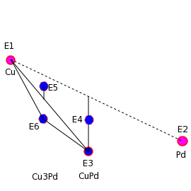
Figure 52: Illustration that cu3pd-2 is more stable than cu3pd-1 and that is it is more stable than a composition weighted mixture of Cu and cupd-1. The dotted line shows the energy of a composition weighted average energy of a mixture of Cu and cupd-1. Since cu3pd-2 is below the dotted line, it is more stable than the phase-separated mixture. \label{fig:alloy-phase-separation-2}
The construction of alloy phase diagrams is difficult. You are always faced with the possibility that there is a phase that you have not calculated that is more stable than the ones you did calculate. One approach is to use a tool that automates the discovery of relevant structures such as the Alloy Theoretic Automated Toolkit (ATAT) vandeWalle2002539,vandeWalle2009266 which uses a cluster expansion methodology.
4.9.2 Metal oxide oxidation energies
We will consider here the reaction 2 Cu2O + O2 \(\rightleftharpoons\) 4 CuO. The reaction energy is:
\(\Delta E = 4E_{CuO} - 2E_{Cu_2O} - E_{O_2}\). We need to compute the energy of each species.
4.9.2.1 Cu2O calculation
# run Cu2O calculation from vasp import Vasp from ase import Atom, Atoms # http://phycomp.technion.ac.il/~ira/types.html#Cu2O a = 4.27 atoms = Atoms([Atom('Cu', [0, 0, 0]), Atom('Cu', [0.5, 0.5, 0.0]), Atom('Cu', [0.5, 0.0, 0.5]), Atom('Cu', [0.0, 0.5, 0.5]), Atom('O', [0.25, 0.25, 0.25]), Atom('O', [0.75, 0.75, 0.75])]) atoms.set_cell((a, a, a), scale_atoms=True) calc = Vasp('bulk/Cu2O', encut=400, kpts=[8, 8, 8], ibrion=2, isif=3, nsw=30, xc='PBE', atoms=atoms) print atoms.get_potential_energy() print atoms.get_stress()
-27.27469393 [ 0.00271993 0.00271993 0.00271993 -0. -0. -0. ]
4.9.2.2 CuO calculation
# run CuO calculation from vasp import Vasp from ase import Atom, Atoms import numpy as np # CuO # http://cst-www.nrl.navy.mil/lattice/struk/b26.html # http://www.springermaterials.com/docs/info/10681727_51.html a = 4.6837 b = 3.4226 c = 5.1288 beta = 99.54/180*np.pi y = 0.5819 a1 = np.array([0.5*a, -0.5*b, 0.0]) a2 = np.array([0.5*a, 0.5*b, 0.0]) a3 = np.array([c*np.cos(beta), 0.0, c*np.sin(beta)]) atoms = Atoms([Atom('Cu', 0.5*a2), Atom('Cu', 0.5*a1 + 0.5*a3), Atom('O', -y*a1 + y*a2 + 0.25*a3), Atom('O', y*a1 - y*a2 - 0.25*a3)], cell=(a1, a2, a3)) calc = Vasp('bulk/CuO', encut=400, kpts=[8, 8, 8], ibrion=2, isif=3, nsw=30, xc='PBE', atoms=atoms) print(atoms.get_potential_energy())
-19.62493655
4.9.2.3 TODO Reaction energy calculation
from vasp import Vasp # don't forget to normalize your total energy to a formula unit. Cu2O # has 3 atoms, so the number of formula units in an atoms is # len(atoms)/3. calc = Vasp('bulk/Cu2O') atoms1 = calc.get_atoms() cu2o_energy = atoms1.get_potential_energy() calc = Vasp('bulk/CuO') atoms2 = calc.get_atoms() cuo_energy = atoms2.get_potential_energy() # make sure to use the same cutoff energy for the O2 molecule! calc = Vasp('molecules/O2-sp-triplet-400') atoms3 = calc.get_atoms() o2_energy = atoms3.get_potential_energy() calc.stop_if(None in [cu2o_energy, cuo_energy, o2_energy]) cu2o_energy /= (len(atoms1) / 3) # note integer math cuo_energy /= (len(atoms2) / 2) rxn_energy = 4.0 * cuo_energy - o2_energy - 2.0 * cu2o_energy print 'Reaction energy = {0} eV'.format(rxn_energy)
/home-research/jkitchin/dft-book/bulk/Cu2O Queued: 1392189.gilgamesh.cheme.cmu.edu /home-research/jkitchin/dft-book/bulk/CuO Queued: 1392190.gilgamesh.cheme.cmu.edu
This is the reaction energy for 2 Cu2O \(\rightarrow\) 4 CuO. In PhysRevB.73.195107, the experimental reaction is estimated to be about -3.14 eV.
There are a few reasons why our number does not agree with the experimental reaction energy. One reason is related to errors in the O2 dissociation energy, and another reason is related to localization of electrons in the Cu 3\(d\) orbitals PhysRevB.73.195107. The first error of incorrect O2 dissociation error is a systematic error that can be corrected empirically PhysRevB.73.195107. Fixing the second error requires the application of DFT+U (see DFT+U).
The heat of reaction is reported to be 1000 J/g product at http://onlinelibrary.wiley.com/doi/10.1002/er.4440130107/pdf for the reaction 2CuO \(\rightleftharpoons\) Cu2O + 1/2 O2.
from ase import Atoms atoms = Atoms('Cu2O') MW = atoms.get_masses().sum() H = 1. # kJ/g print 'rxn energy = {0:1.1f} eV'.format(-2 * H * MW / 96.4) # convert to eV
rxn energy = -3.0 eV
This is pretty close to the value in PhysRevB.73.195107 and might need a temperature correction to get agreement at 298K.
4.10 Bulk density of states
The density of states refers to the number of electronic states in a particular energy range.
The solution to Eq. \eqref{eq:KS} yields a set of Kohn-Sham (K-S) orbitals and an associated set of eigenvalues that correspond to the energies of these orbitals, neither of which have any known directly observable meaning RevModPhys.71.1253. The sum of the squared K-S orbitals, however, is equal to the electron density (Eq. \eqref{eq:density}), and the sum of the eigenvalues is a significant part of the total energy (Eq. \eqref{eq:dftEnergy}). Thus, it seems reasonable to suppose these quantities have other significant relationships to physical observables. Perdew et al. showed that the highest occupied eigenvalue is equal to the ionization energy of a system within an exact density functional theory perdew1982:elect-kohn-sham, but their interpretation has been vigorously debated in the literature kleinman1997:signif-kohn-sham,perdew1997,kleinman1997:reply-commen-kohn-sham, and is only true for the exact exchange/correlation functional, not the approximate ones used in practice koch2001. Stowasser and Hoffmann discussed an approach to using the K-S orbitals in more traditional molecular orbital interpretations, but the results were primarily qualitative stowasser1999:what-kohn-sham. More recently, a DFT analog of Koopmans' theorem has been developed that formally identifies the eigenvalues with vertical ionization potentials, which can be measured with photoelectron spectroscopy gritsenko2002.
Despite the arguments against ascribing physical meaning to the K-S orbitals and eigenvalues, it has become fairly standard, especially for solids, to use them to calculate the density of states (DOS) jones1989 [Sec. VI. B]. This has been found to yield reasonable results for the valence bands in metals, but poor results for tightly bound orbitals and band gaps perdew1982:elect-kohn-sham. A highly technical discussion of this issue can be found in Ref. perdew1981:self. The density of states can be calculated by a sum over the k-points seitsonen2000:phd:
\begin{equation}\label{eq:dos} \Rho(\epsilon)=\sum_\mathbf{\mathrm{k}} \omega_\mathbf{\mathrm{k}} \sum_i \beta(\epsilon -\epsilon_{i\mathbf{\mathrm{k}}}) \end{equation}where \(\omega_\mathbf{\mathrm{k}}\) is the weight associated with the k-point, and \(\beta\) is a broadening function, typically a gaussian function, to account for the finite number of k-points used in the calculations. The amount of broadening is arbitrary, and should tend to zero as the number of k-points approaches infinity.
from vasp import Vasp npoints = 200 width = 0.5 def gaussian(energies, eik): x = ((energies - eik) / width) return np.exp(-x**2) / np.sqrt(np.pi) / width calc = Vasp('bulk/pd-dos') # kpt weights wk = calc.get_k_point_weights() # for each k-point there are a series of eigenvalues # here we get all the eigenvalues for each k-point e_kn = [] for i, k in enumerate(wk): e_kn.append(calc.get_eigenvalues(kpt=i)) e_kn = np.array(e_kn) - calc.get_fermi_level() # these are the energies we want to evaluate the dos at energies = np.linspace(e_kn.min(), e_kn.max(), npoints) # this is where we build up the dos dos = np.zeros(npoints) for j in range(npoints): for k in range(len(wk)): # loop over all kpoints for i in range(len(e_kn[k])): # loop over eigenvalues in each k dos[j] += wk[k] * gaussian(energies[j], e_kn[k][i]) import matplotlib.pyplot as plt plt.plot(energies, dos) plt.savefig('images/manual-dos.png') plt.show()

Figure 53: Density of states.
Here is a more convenient way to compute the DOS using ase.dft.
from vasp import Vasp import matplotlib.pyplot as plt from ase.dft import DOS calc = Vasp('bulk/pd-dos') dos = DOS(calc, width=0.2) d = dos.get_dos() e = dos.get_energies() import pylab as plt plt.plot(e, d) plt.xlabel('energy (eV)') plt.ylabel('DOS') plt.savefig('images/pd-dos.png')
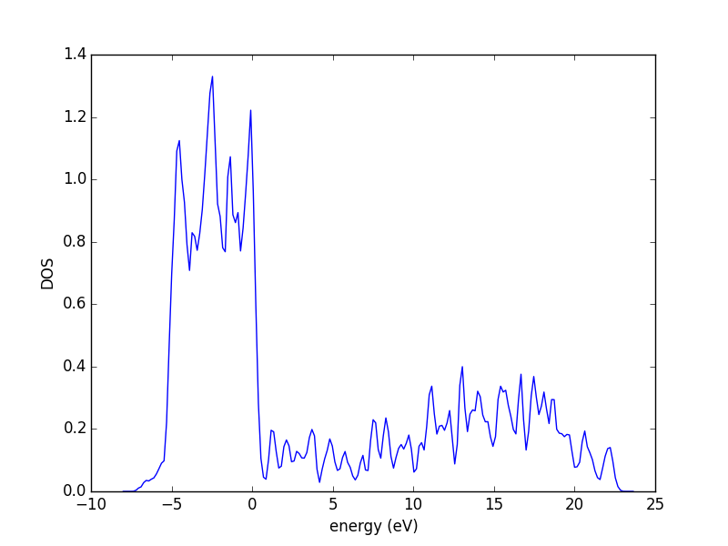
Figure 54: Total DOS for bulk Pd.
This DOS looks roughly like you would expect. The peak between -5 to 0 eV is the Pd d-band.
The VASP manual recommends a final run be made with ISMEAR=-5, which uses the tetrahedron method with Bl\"ochl corrections.
from vasp import Vasp from ase.dft import DOS calc = Vasp('bulk/pd-dos') calc.clone('bulk/pd-dos-ismear-5') bulk = calc.get_atoms() calc.set(ismear=-5) bulk.get_potential_energy() dos = DOS(calc, width=0.2) d = dos.get_dos() e = dos.get_energies() import pylab as plt plt.plot(e, d) plt.xlabel('energy [eV]') plt.ylabel('DOS') plt.savefig('images/pd-dos-ismear-5.png')
This not notably different to me.

Figure 55: Total DOS for Pd computed with ISMEAR=-5
We can test for convergence of the DOS. The k-points are most important.
from ase import Atoms, Atom from vasp import Vasp Vasp.vasprc(mode=None) #Vasp.log.setLevel(10) import matplotlib.pyplot as plt import numpy as np from ase.dft import DOS import pylab as plt a = 3.9 # approximate lattice constant b = a / 2. bulk = Atoms([Atom('Pd', (0.0, 0.0, 0.0))], cell=[(0, b, b), (b, 0, b), (b, b, 0)]) kpts = [8, 10, 12, 14, 16, 18, 20] calcs = [Vasp('bulk/pd-dos-k{0}-ismear-5'.format(k), encut=300, xc='PBE', kpts=[k, k, k], atoms=bulk) for k in kpts] Vasp.wait(abort=True) for calc in calcs: # this runs the calculation if calc.potential_energy is not None: dos = DOS(calc, width=0.2) d = dos.get_dos() + k / 4.0 e = dos.get_energies() plt.plot(e, d, label='k={0}'.format(k)) else: pass plt.xlabel('energy (eV)') plt.ylabel('DOS') plt.legend() plt.savefig('images/pd-dos-k-convergence-ismear-5.png') plt.show()
got here <ase.dft.dos.DOS instance at 0xec2d710>
from vasp import Vasp from ase.dft import DOS # This seems very slow... calc = Vasp('bulk/pd-dos-k20-ismear-5') print DOS(calc, width=0.2)
<ase.dft.dos.DOS instance at 0x168a1ea8>

Figure 56: Convergence of the total DOS with k-points
4.11 Atom projected density of states
One major disadvantage of a planewave basis set is that it is difficult to relate the completely delocalized planewaves to localized phenomena such as bonding. Much insight into bonding has been gained by atomic/molecular orbital theory, which has carried over to the solid-state arena RevModPhys.60.601. Consequently, several schemes have been developed to project the one-electron Kohn-Sham wave functions onto atomic wave functions sanchez-portal1995:projec,segall1996:popul,segall1996:popul-mp. In VASP, the one electron wave functions can be projected onto spherical harmonic orbitals. The radial component of the atomic orbitals extends to infinity. In a solid, this means that the projection on one atom may overlap with the projection on a neighboring atom, resulting in double counting of electrons. Consequently, a cutoff radius was introduced, beyond which no contributions are included. It is not obvious what the best cutoff radius is. If the radius is too small, it might not capture all of the electrons associated with the atom. However, if it is too large, it may include electrons from neighboring atoms. One might want to use different cutoff radii for different atoms, which have different sizes. Furthermore, the ideal cutoff radius for an atom may change in different environments, thus it would require an iterative procedure to determine it. This difficulty arises because the orbital-band occupations are not observable, thus how the electrons are divided up between atoms is arbitrary and, as will be seen later, is sensitive to the cutoff radius (and in other DFT implementations, the basis set). However, Mulliken orbital populations have been used successfully for many years to examine the qualitative differences between similar systems, and that is precisely what these quantities are used for here. Thus, a discussion of the analysis and results is warranted.
The s and p states in a metal are typically delocalized in space and more like free-electrons, whereas the d-orbitals are fairly localized in space and have been treated successfully with tight-binding theories such as extended H\"u ckel theory RevModPhys.60.601, and linear muffin tin orbital theory ruban1997:surfac. Consequently, the remaining discussion will be focused on the properties of the projected d-states.
In this example, we consider how to get the atom-projected density of states (ADOS). We are interested in properties of the $d$-band on Pd, such as the $d$-band center and $d$-band width. You must set the RWIGS tag to get ADOS, and these are the Wigner-Seitz radii for each atom. By integrating the projected d-band up to the Fermi level, the d-band filling can be determined. It is not obvious what the electron count in the d-band should be for an atom in a metal. For a gas-phase, neutral metal atom in the ground state, however, the d-orbital electron count is well defined, so it will be used as an initial reference point for comparison kittel.
A powerful method for characterizing distributions is to examine various moments of the distribution (see Chapter 4 in Ref. cottrell1988 and Chapter 6 in Refs. ducastelle1991 and pettifor1992:elect-theor-alloy-desig). The \(n^{th}\) order moment, \(\mu_n\), of a distribution of states \(\rho(\epsilon)\) with respect to a reference \(\epsilon_o\) is defined by
\begin{equation} \mu_n = \frac{\int_{-\infty}^\infty \epsilon^n \rho(\epsilon-\epsilon_o)d\epsilon} {\int_{-\infty}^\infty \rho(\epsilon-\epsilon_o)d\epsilon} \end{equation}In this work, the reference energy is always the Fermi level. The zeroth moment is just the total number of states, in this case it will be normalized to unity. The first moment is the average energy of distribution, analogous to the center of mass for a mass density distribution. The second moment is the mean squared width of the distribution. The third moment is a measure of skewness and the fourth moment is related to kurtosis, but these moments are rarely used, and only the first and second moments are considered in this work.
It is important to note that these projected density of states are not physical observables. They are the wavefunctions projected onto atomic orbitals. For some situations this makes sense, e.g. the \(d\) orbitals are fairly localized and reasonably approximated by atomic orbitals. The \(s\) valence orbitals in a metal, in contrast, are almost totally delocalized. Depending on the cutoff radius (RWIGS) you choose, you can see very different ADOS.
from ase import Atoms, Atom from vasp import Vasp import matplotlib.pyplot as plt import numpy as np a = 3.9 # approximate lattice constant b = a / 2. bulk = Atoms([Atom('Pd', (0.0, 0.0, 0.0))], cell=[(0, b, b), (b, 0, b), (b, b, 0)]) calc = Vasp('bulk/pd-ados', encut=300, xc='PBE', lreal=False, rwigs={'Pd': 1.5}, # wigner-seitz radii for ados kpts=[8, 8, 8], atoms=bulk) # this runs the calculation calc.wait(abort=True) # now get results energies, ados = calc.get_ados(0, 'd') # we will select energies in the range of -10, 5 ind = (energies < 5) & (energies > -10) energies = energies[ind] dos = ados[ind] Nstates = np.trapz(dos, energies) occupied = energies <= 0.0 N_occupied_states = np.trapz(dos[occupied], energies[occupied]) # first moment ed = np.trapz(energies * dos, energies) / Nstates # second moment wd2 = np.trapz(energies**2 * dos, energies) / Nstates print 'Total # states = {0:1.2f}'.format(Nstates) print 'number of occupied states = {0:1.2f}'.format(N_occupied_states) print 'd-band center = {0:1.2f} eV'.format(ed) print 'd-band width = {0:1.2f} eV'.format(np.sqrt(wd2)) # plot the d-band plt.plot(energies, dos, label='$d$-orbitals') # plot the occupied states in shaded gray plt.fill_between(x=energies[occupied], y1=dos[occupied], y2=np.zeros(dos[occupied].shape), color='gray', alpha=0.25) plt.xlabel('$E - E_f$ (eV)') plt.ylabel('DOS (arbitrary units)') plt.savefig('images/pd-ados.png')
Total # states = 9.29 number of occupied states = 7.95 d-band center = -1.98 eV d-band width = 2.71 eV

Figure 57: Atom projected $d$-band for bulk Pd. The shaded area corresponds to the occupied states below the Fermi level.
4.11.1 Effect of RWIGS on ADOS
Here we examine the effect of changing RWIGS on the number of counted electrons, and properties of the d-band moments.
from ase import Atoms, Atom from vasp import Vasp import matplotlib.pyplot as plt import numpy as np a = 3.9 # approximate lattice constant b = a / 2. bulk = Atoms([Atom('Pd', (0.0, 0.0, 0.0))], cell=[(0, b, b), (b, 0, b), (b, b, 0)]) RWIGS = [1.0, 1.1, 1.25, 1.5, 2.0, 2.5, 3.0, 4.0, 5.0 ] ED, WD, N = [], [], [] for rwigs in RWIGS: calc = Vasp('bulk/pd-ados') calc.clone('bulk/pd-ados-rwigs-{0}'.format(rwigs)) calc.set(rwigs={'Pd': rwigs}) if calc.potential_energy is None: continue # now get results ados = VaspDos(efermi=calc.get_fermi_level()) energies = ados.energy dos = ados.site_dos(0, 'd') #we will select energies in the range of -10, 5 ind = (energies < 5) & (energies > -10) energies = energies[ind] dos = dos[ind] Nstates = np.trapz(dos, energies) occupied = energies <= 0.0 N_occupied_states = np.trapz(dos[occupied], energies[occupied]) ed = np.trapz(energies * dos, energies) / np.trapz(dos, energies) wd2 = np.trapz(energies**2 * dos, energies) / np.trapz(dos, energies) N.append(N_occupied_states) ED.append(ed) WD.append(wd2**0.5) plt.plot(RWIGS, N, 'bo', label='N. occupied states') plt.legend(loc='best') plt.xlabel('RWIGS ($\AA$)') plt.ylabel('# occupied states') plt.savefig('images/ados-rwigs-occupation.png') fig, ax1 = plt.subplots() ax1.plot(RWIGS, ED, 'bo', label='d-band center (eV)') ax1.set_xlabel('RWIGS ($\AA$)') ax1.set_ylabel('d-band center (eV)', color='b') for tl in ax1.get_yticklabels(): tl.set_color('b') ax2 = ax1.twinx() ax2.plot(RWIGS, WD, 'gs', label='d-band width (eV)') ax2.set_ylabel('d-band width (eV)', color='g') for tl in ax2.get_yticklabels(): tl.set_color('g') plt.savefig('images/ados-rwigs-moments.png') plt.show()

Figure 58: Effect of the RWIGS on the number of occupied \(d\)-states.
You can see the number of occupied states increases approximately linearly here with RWIGS. This is due to overcounting of neighboring electrons.
 q
q
The d-band center and width also change.
4.12 Band structures
band structure To compute a band structure we do two things. First, we compute the self-consistent band structure. Then we compute the band structure at the desired $k$-points. We will use Si as an example (adapted from http://bbs.sciencenet.cn/bbs/upload/20083418325986.pdf).
First, we get the self-consistent electron density in a calculation.
from vasp import Vasp from ase import Atom, Atoms from ase.visualize import view a = 5.38936 atoms = Atoms([Atom('Si', [0, 0, 0]), Atom('Si', [0.25, 0.25, 0.25])]) atoms.set_cell([[a / 2., a / 2., 0.0], [0.0, a / 2., a / 2.], [a / 2., 0.0, a / 2.]], scale_atoms=True) calc = Vasp('bulk/Si-selfconsistent', xc='PBE', prec='Medium', lcharg=True, lwave=True, kpts=[4, 4, 4], atoms=atoms) calc.run()
Now, we run a new calculation along the k-point path desired. The standard VASP way of doing this is to modify the INCAR and KPOINTS file and rerun VASP. We will not do that. Doing that results in some lost information if you overwrite the old files. We will copy the old directory to a new directory, using code to ensure this only happens one time.
from vasp import Vasp wd = 'bulk/Si-bandstructure' calc = Vasp('bulk/Si-selfconsistent') calc.clone(wd) kpts = [[0.5, 0.5, 0.0], # L [0, 0, 0], # Gamma [0, 0, 0], [0.5, 0.5, 0.5]] # X calc.set(kpts=kpts, reciprocal=True, kpts_nintersections=10, icharg=11) print calc.run()
-3.62224484
We will learn how to manually parse the EIGENVAL file here to generate the band structure. The structure of the EIGENVAL file looks like this:
head -n 20 bulk/Si-bandstructure/EIGENVAL
2 2 1 1
0.1956688E+02 0.3810853E-09 0.3810853E-09 0.3810853E-09 0.5000000E-15
1.000000000000000E-004
CAR
unknown system
8 20 8
0.5000000E+00 0.5000000E+00 0.0000000E+00 0.5000000E-01
1 -1.826747
2 -1.826743
3 3.153321
4 3.153347
5 6.743989
6 6.744017
7 16.392596
8 16.393943
0.4444444E+00 0.4444444E+00 0.0000000E+00 0.5000000E-01
1 -2.669487
2 -0.918463
We can ignore the first five lines.
f = open('bulk/Si-bandstructure/EIGENVAL', 'r') line1 = f.readline() line2 = f.readline() line3 = f.readline() line4 = f.readline() comment = f.readline() unknown, nkpoints, nbands = [int(x) for x in f.readline().split()] blankline = f.readline() band_energies = [[] for i in range(nbands)] for i in range(nkpoints): x, y, z, weight = [float(x) for x in f.readline().split()] for j in range(nbands): fields = f.readline().split() id, energy = int(fields[0]), float(fields[1]) band_energies[id - 1].append(energy) blankline = f.readline() f.close() import matplotlib.pyplot as plt for i in range(nbands): plt.plot(range(nkpoints), band_energies[i]) ax = plt.gca() ax.set_xticks([]) # no tick marks plt.xlabel('k-vector') plt.ylabel('Energy (eV)') ax.set_xticks([0, 10, 19]) ax.set_xticklabels(['$L$', '$\Gamma$', '$X$']) plt.savefig('images/Si-bandstructure.png')

Figure 59: Calculated band-structure for Si.
Next we will examine the connection between band structures and density of states. In this example, we will compute the band structure of TiO2 using a function built into vasp to do the analysis described above.
from vasp import Vasp calc = Vasp('bulk/tio2/step3') print calc.get_fermi_level() calc.abort() n, bands, p = calc.get_bandstructure(kpts_path=[('$\Gamma$', [0.0, 0.0, 0.0]), ('X', [0.5, 0.5, 0.0]), ('X', [0.5, 0.5, 0.0]), ('M', [0.0, 0.5, 0.5]), ('M', [0.0, 0.5, 0.5]), ('$\Gamma$', [0.0, 0.0, 0.0])]) p.savefig('images/tio2-bandstructure-dos.png')

Figure 60: Band structure and total density of states for TiO2.
4.12.1 create example showing band dispersion with change in lattice constant
In this section, we examine the effect of the lattice constant on the band structure. Since the lattice constant affects the overlap of neighboring atoms, we expect that smaller lattice constants will show more dispersion, i.e. broader bands. Larger lattice constants, in contrast, should show narrower bands. We examine this in silicon.
from vasp import Vasp from ase import Atom, Atoms calcs = [] for i, a in enumerate([4.7, 5.38936, 6.0]): atoms = Atoms([Atom('Si', [0, 0, 0]), Atom('Si', [0.25, 0.25, 0.25])]) atoms.set_cell([[a/2., a/2., 0.0], [0.0, a/2., a/2.], [a/2., 0.0, a/2.]], scale_atoms=True) calc = Vasp('bulk/Si-bs-{0}'.format(i), xc='PBE', lcharg=True, lwave=True, kpts=[4, 4, 4], atoms=atoms) print(calc.run()) calcs += [calc] Vasp.wait(abort=True) for i, calc in enumerate(calcs): n, bands, p = calc.get_bandstructure(kpts_path=[('L', [0.5,0.5,0.0]), ('$\Gamma$', [0, 0, 0]), ('$\Gamma$', [0, 0, 0]), ('X', [0.5, 0.5, 0.5])], kpts_nintersections=10) if p is not None: png = 'images/Si-bs-{0}.png'.format(i) p.savefig(png)
-7.55662509 -10.80024435 -10.13735105

Figure 61: Si band structure for a=4.7

Figure 62: Si band structure for a=5.38936

Figure 63: Si band structure for a=6.0
You can see the band structure for a=6.0 is notably sharper than the band structure for a=4.0.
4.13 Magnetism
4.13.1 Determining if a magnetic solution is energetically favorable
We can force a total magnetic moment onto a unit cell and compute the total energy as function of the total magnetic moment. If there is a minimum in the energy, then we know there is a lower energy magnetic solution than a non-magnetic solution. We use NUPDOWN to enforce the magnetic moment in the cell. Note that NUPDOWN can only be an integer. You cannot set it to be an arbitrary float.
from vasp import Vasp from ase.lattice.cubic import BodyCenteredCubic atoms = BodyCenteredCubic(directions=[[1, 0, 0], [0, 1, 0], [0, 0, 1]], size=(1, 1, 1), symbol='Fe') calc = Vasp('bulk/Fe-bcc-fixedmagmom-{0:1.2f}'.format(0.0), xc='PBE', encut=300, kpts=[4, 4, 4], ispin=2, nupdown=0, atoms=atoms) print(atoms.get_potential_energy())
-15.34226703
from vasp import Vasp from ase.lattice.cubic import BodyCenteredCubic atoms = BodyCenteredCubic(directions=[[1, 0, 0], [0, 1, 0], [0, 0, 1]], size=(1, 1, 1), symbol='Fe') NUPDOWNS = [0.0, 2.0, 4.0, 5.0, 6.0, 8.0] energies = [] for B in NUPDOWNS: calc = Vasp('bulk/Fe-bcc-fixedmagmom-{0:1.2f}'.format(B), xc='PBE', encut=300, kpts=[4, 4, 4], ispin=2, nupdown=B, atoms=atoms) energies.append(atoms.get_potential_energy()) if None in energies: calc.abort() import matplotlib.pyplot as plt plt.plot(NUPDOWNS, energies) plt.xlabel('Total Magnetic Moment') plt.ylabel('Energy (eV)') plt.savefig('images/Fe-fixedmagmom.png')

Figure 64: Total energy vs. total magnetic moment for bcc Fe.
You can see here there is a minimum in energy at a total magnetic moment somewhere between 4 and 5. There are two Fe atoms in the unit cell, which means the magnetic moment on each atom must be about 2.5 Bohr-magnetons. This is a good guess for a real calculation. Note that VASP recommends you overestimate the magnetic moment guesses if you are looking for ferromagnetic solutions.
To run a spin-polarized calculation with initial guesses on each atom, we must set the magnetic moment on the atoms. Here we set it through the magmom attribute on the atom. In the example after this, we set it in the Atoms object.
from vasp import Vasp from ase.lattice.cubic import BodyCenteredCubic atoms = BodyCenteredCubic(directions=[[1, 0, 0], [0, 1, 0], [0, 0, 1]], size=(1, 1, 1), symbol='Fe') # set magnetic moments on each atom for atom in atoms: atom.magmom = 2.5 calc = Vasp('bulk/Fe-bcc-sp-1', xc='PBE', encut=300, kpts=[4, 4, 4], ispin=2, lorbit=11, # you need this for individual magnetic moments atoms=atoms) e = atoms.get_potential_energy() B = atoms.get_magnetic_moment() magmoms = atoms.get_magnetic_moments() print 'Total magnetic moment is {0:1.2f} Bohr-magnetons'.format(B) print 'Individual moments are {0} Bohr-magnetons'.format(magmoms)
Total magnetic moment is -0.01 Bohr-magnetons Individual moments are [-0.013 -0.013] Bohr-magnetons
4.13.2 Antiferromagnetic spin states
In an antiferromagnetic material, there are equal numbers of spin up and down electrons that align in a regular pattern, but pointing in opposite directions so that there is no net magnetism. It is possible to model this by setting the magnetic moments on each ase.Atom object. lreal
from vasp import Vasp from ase import Atom, Atoms atoms = Atoms([Atom('Fe', [0.00, 0.00, 0.00], magmom=5), Atom('Fe', [4.3, 4.3, 4.3], magmom=-5), Atom('O', [2.15, 2.15, 2.15], magmom=0), Atom('O', [6.45, 6.45, 6.45], magmom=0)], cell=[[4.3, 2.15, 2.15], [2.15, 4.3, 2.15], [2.15, 2.15, 4.3]]) ca = Vasp('bulk/afm-feo', encut=350, prec='Normal', ispin=2, nupdown=0, # this forces a non-magnetic solution lorbit=11, # to get individual moments lreal=False, atoms=atoms) print 'Magnetic moments = ', atoms.get_magnetic_moments() print 'Total magnetic moment = ', atoms.get_magnetic_moment()
Magnetic moments = [-0.061 -0.061 0.063 0.063] Total magnetic moment = -5e-06
You can see that even though the total magnetic moment is 0, there is a spin on both Fe atoms, and they are pointing in opposite directions. Hence, the sum of spins is zero, and this arrangement is called anti-ferromagnetic.
4.13.3 TODO NiO-FeO formation energies with magnetism
4.14 TODO phonons
phonopy
4.15 TODO solid state NEB
Caspersen10052005 Carter paper sheppard:074103 recent Henkelman paper
http://scitation.aip.org/content/aip/journal/jcp/137/10/10.1063/1.4752249
5 Surfaces
5.1 Surface structures
As with molecules and bulk systems ase provides several convenience functions for making surfaces.
5.1.1 Simple surfaces
ase provides many utility functions to setup surfaces. Here is a simple example of an fcc111 Al surface. There are built in functions for fcc111, bcc110, bcc111, hcp001 and diamond111.
from ase.lattice.surface import fcc111 from ase.io import write from ase.visualize import view slab = fcc111('Al', size=(2, 2, 3), vacuum=10.0) from ase.constraints import FixAtoms constraint = FixAtoms(mask=[atom.tag >= 2 for atom in slab]) slab.set_constraint(constraint) view(slab) write('images/Al-slab.png', slab, rotation='90x', show_unit_cell=2)

Figure 65: An Al(111) slab with three layers and 20 Å of vacuum.
5.1.2 Vicinal surfaces
The vast majority of surface calculations are performed on flat surfaces. This is partially because these surfaces tend to have the lowest surface energies, and thus are likely to be experimentally observed. The flat surfaces, also known as low Miller index surfaces, also have small unit cells, which tends to make them computationally affordable. There are, however, many reasons to model the properties of surfaces that are not flat. You may be interested in the reactivity of a step edge, for example, or you may use the lower cooridnation of steps as a proxy for nanoparticle reactivity. Many stepped surfaces are not that difficult to make now. The main idea in generating them is described here. ase provides a general function for making vicinal surfaces. Here is an example of a (211) surface.
from ase.lattice.surface import surface from ase.io import write # Au(211) with 9 layers s1 = surface('Au', (2, 1, 1), 9) s1.center(vacuum=10, axis=2) write('images/Au-211.png', s1.repeat((3, 3, 1)), rotation='-30z,90x', # change the orientation for viewing show_unit_cell=2)

Figure 66: An Au(211) surface constructed with ase.
5.2 Surface calculation parameters
There is one important parameter that is different for surfaces than for bulk calculations, the k-point grid. Assuming you have followed the convention that the z-axis is normal to the surface, the k-point grids for slab calculations always have the form of \(M \times N \times 1\). To illustrate why, consider this example:
from ase.lattice.surface import fcc111 from vasp import Vasp slab = fcc111('Al', size=(1, 1, 4), vacuum=10.0) calc = Vasp('surfaces/Al-bandstructure', xc='PBE', encut=300, kpts=[6, 6, 6], lcharg=True, # you need the charge density lwave=True, # and wavecar for the restart atoms=slab) n, bands, p = calc.get_bandstructure(kpts_path=[(r'$\Gamma$', [0, 0, 0]), ('$K1$', [0.5, 0.0, 0.0]), ('$K1$', [0.5, 0.0, 0.0]), ('$K2$', [0.5, 0.5, 0.0]), ('$K2$', [0.5, 0.5, 0.0]), (r'$\Gamma$', [0, 0, 0]), (r'$\Gamma$', [0, 0, 0]), ('$K3$', [0.0, 0.0, 1.0])], kpts_nintersections=10) p.savefig('images/Al-slab-bandstructure.png')
done

Figure 67: Band structure of an Al slab in the plane (path from Gamma to K1 to K2 to Gamma) and normal to the surface (Gamma to K3). Note the bands are flat in the direction normal to the surface, hence only one k-point is needed in this direction.
5.3 Surface relaxation
When a surface is created, the bulk symmetry is broken and consequently there will be forces on the surface atoms. We will examine some consequences of this with a simple Al slab. First, we show there are forces on the slab atoms.
from vasp import Vasp from ase.lattice.surface import fcc111 atoms = fcc111('Al', size=(1, 1, 4), vacuum=10.0) calc = Vasp('surfaces/Al-slab-unrelaxed', xc='PBE', kpts=[6, 6, 1], encut=350, atoms=atoms) print(atoms.get_forces())
[[ 0. 0. -0.01505445] [ 0. 0. 0.18818605] [ 0. 0. -0.18818605] [ 0. 0. 0.01505445]]
Some points to note. The forces on the atoms have symmetry to them. That is because the slab is centered. Had the slab had an odd number of atoms, it is likely the center atom would have no forces on it. Next we consider the spacing between each layer in the slab. We do this for comparison later.
from vasp import Vasp calc = Vasp('surfaces/Al-slab-unrelaxed') atoms = calc.get_atoms() print 'Total energy: {0:1.3f} eV'.format(atoms.get_potential_energy()) for i in range(1, len(atoms)): print '{0} deltaz = {1:1.3f} angstroms'.format(i, atoms[i].z - atoms[i-1].z)
Total energy: -14.179 eV 1 deltaz = 2.338 angstroms 2 deltaz = 2.338 angstroms 3 deltaz = 2.338 angstroms
To reduce the forces, we can let VASP relax the geometry. We have to make some decisions about how to relax the slab. One choice would be to relax all the atoms in the slab. If we do that, then there will be no atoms with bulk like spacing unless we increase the slab thickness pretty dramatically. It is pretty common to freeze some atoms at the bulk coordinates, and let the others relax. We will freeze the bottom two layers (defined by tags 3 and 4) and let the first two layers relax. To do that we add constraints to the slab.
Note: the ase constraints are only partially used by Vasp. The ase.constraints.FixAtoms constraint gets written to the POSCAR file, and is then used internally in VASP. The only other constraint that VASP can use internally is ase.constraints.FixScaled. The other constraints are not written to the POSCAR and are not used by VASP.
from ase.lattice.surface import fcc111 atoms = fcc111('Al', size=(2, 2, 4), vacuum=10.0) print([atom.z for atom in atoms]) print [atom.z <= 13 for atom in atoms]
[9.9999999999999982, 9.9999999999999982, 9.9999999999999982, 9.9999999999999982, 12.338268590217982, 12.338268590217982, 12.338268590217982, 12.338268590217982, 14.676537180435968, 14.676537180435968, 14.676537180435968, 14.676537180435968, 17.01480577065395, 17.01480577065395, 17.01480577065395, 17.01480577065395] [True, True, True, True, True, True, True, True, False, False, False, False, False, False, False, False]
from vasp import Vasp from ase.lattice.surface import fcc111 from ase.constraints import FixAtoms atoms = fcc111('Al', size=(1, 1, 4), vacuum=10.0) constraint = FixAtoms(mask=[atom.tag >= 3 for atom in atoms]) atoms.set_constraint(constraint) calc = Vasp('surfaces/Al-slab-relaxed', xc='PBE', kpts=[6, 6, 1], encut=350, ibrion=2, isif=2, nsw=10, atoms=atoms) print calc.potential_energy print calc
-14.18341424
*************** VASP CALCULATION SUMMARY ***************
Vasp calculation directory:
---------------------------
[[/home-research/jkitchin/dft-book/surfaces/Al-slab-relaxed]]
Unit cell:
----------
x y z |v|
v0 2.864 0.000 0.000 2.864 Ang
v1 1.432 2.480 0.000 2.864 Ang
v2 0.000 0.000 27.015 27.015 Ang
alpha, beta, gamma (deg): 90.0 90.0 60.0
Total volume: 191.872 Ang^3
Stress: xx yy zz yz xz xy
0.006 0.006 0.001 -0.000 -0.000 -0.000 GPa
ID tag sym x y z rmsF (eV/A)
0 0 Al 0.000* 0.000* 10.000* 0.00
1 0 Al 1.432* 0.827* 12.338* 0.00
2 0 Al 2.864 1.653 14.646 0.03
3 0 Al 0.000 0.000 17.003 0.04
Potential energy: -14.1834 eV
INPUT Parameters:
-----------------
pp : PBE
isif : 2
xc : pbe
kpts : [6, 6, 1]
encut : 350
lcharg : False
ibrion : 2
ismear : 1
lwave : True
sigma : 0.1
nsw : 10
Pseudopotentials used:
----------------------
Al: potpaw_PBE/Al/POTCAR (git-hash: ad7c649117f1490637e05717e30ab9a0dd8774f6)
You can see that atoms 2 and 3 (the ones we relaxed, because the have tags of 1 and 2, which are less than 3) now have very low forces on them and it appears that atoms 0 and 1 have no forces on them. That is because the FixAtoms constraint works by setting the forces on those atoms to zero. We can see in the next example that the z-positions of the relaxed atoms have indeed relaxed and changed, while the position of the frozen atoms did not change.
Note there are two versions of the forces. The true forces, and the forces when constraints are applied. ase.atoms.Atoms.get_forces
from vasp import Vasp calc = Vasp('surfaces/Al-slab-relaxed') atoms = calc.get_atoms() print('Constraints = True: ', atoms.get_forces(apply_constraint=True)) print('Constraints = False: ', atoms.get_forces(apply_constraint=False))
/home-research/jkitchin/dft-book-new-vasp/surfaces/Al-slab-relaxed Queued: 1391621.gilgamesh.cheme.cmu.edu
('Constraints = True: ', array([[0.0, 0.0, 0.0],
[0.0, 0.0, 0.0],
[None, None, None],
[None, None, None]], dtype=object))
/home-research/jkitchin/dft-book-new-vasp/surfaces/Al-slab-relaxed Queued: 1391621.gilgamesh.cheme.cmu.edu
('Constraints = False: ', array([[None, None, None],
[None, None, None],
[None, None, None],
[None, None, None]], dtype=object))
Constraints = True: [[ 0. 0. 0. ] [ 0. 0. 0. ] [ 0. 0. -0.049] [ 0. 0. -0.019]] Constraints = False: [[ 0. 0. -0.002] [ 0. 0. 0.069] [ 0. 0. -0.049] [ 0. 0. -0.019]]
from vasp import Vasp from ase.lattice.surface import fcc111 calc = Vasp('surfaces/Al-slab-relaxed') atoms = calc.get_atoms() print 'Total energy: {0:1.3f}'.format(atoms.get_potential_energy()) for i in range(1, len(atoms)): print 'd_({0},{1}) = {2:1.3f} angstroms'.format(i, i-1, atoms[i].z - atoms[i-1].z)
Depending on the layer there is either slight contraction or expansion. These quantities are small, and careful convergence studies should be performed. Note the total energy change from unrelaxed to relaxed is not that large in this case (e.g., it is about 5 meV). This is usually the case for metals, where the relaxation effects are relatively small. In oxides and semiconductors, the effects can be large, and when there are adsorbates, the effects can be large also.
5.4 Surface reconstruction
We previously considered how relaxation can lower the surface energy. For some surfaces, a more extreme effect can reduce the surface energy: reconstruction. In a simple surface relaxation, the basic structure of a surface is preserved. However, sometimes there is a different surface structure that may have a lower surface energy. Some famous reconstructions include: Si-\(\sqrt{7}\times\sqrt{7}\), Pt(100) hex reconstruction PhysRevB.56.10518,PhysRevB.82.161418, and the Au(111) herringbone reconstruction.
We will consider the (110) missing row reconstruction PhysRevB.83.075415. For some metals, especially Pt and Au, it is energetically favorable to form the so-called missing row reconstruction where every other row in the surface is "missing". It is favorable because it lowers the surface energy. Let us consider how we might calculate and predict that. It is straightforward to compute the energy of a (110) slab, and of a (110) slab with one row missing. However, these slabs contain different numbers of atoms, so we cannot directly compare the total energies to determine which energy is lower.
We have to consider where the missing row atoms have gone, so we can account for their energy. We will consider that they have gone into the bulk, and so we to consider the energy associated with the following transformation:
slab110 \(\rightarrow\) slabmissing row + bulk
Thus, if this change in energy: \(E_{bulk} + E_{slab_{missing row}} - E_{slab_{110}} \) is negative, then the formation of the missing row is expected to be favorable.
5.4.1 Au(110) missing row reconstruction
We first consider the Au(110) case, where the reconstruction is known to be favorable.
5.4.1.1 Clean Au(110) slab
from ase.lattice.surface import fcc110 from ase.io import write from ase.constraints import FixAtoms from ase.visualize import view atoms = fcc110('Au', size=(2, 1, 6), vacuum=10.0) constraint = FixAtoms(mask=[atom.tag > 2 for atom in atoms]) atoms.set_constraint(constraint) view(atoms)
from vasp import Vasp from ase.lattice.surface import fcc110 from ase.io import write from ase.constraints import FixAtoms atoms = fcc110('Au', size=(2, 1, 6), vacuum=10.0) constraint = FixAtoms(mask=[atom.tag > 2 for atom in atoms]) atoms.set_constraint(constraint) write('images/Au-110.png', atoms.repeat((2, 2, 1)), rotation='-90x', show_unit_cell=2) print Vasp('surfaces/Au-110', xc='PBE', kpts=[6, 6, 1], encut=350, ibrion=2, isif=2, nsw=10, atoms=atoms).potential_energy
-35.92440066

Figure 68: The unreconstructed Au(110) surface viewed from the side.
5.4.1.2 Missing row in Au(110)
from vasp import Vasp from ase.lattice.surface import fcc110 from ase.io import write from ase.constraints import FixAtoms atoms = fcc110('Au', size=(2, 1, 6), vacuum=10.0) del atoms[11] # delete surface row constraint = FixAtoms(mask=[atom.tag > 2 for atom in atoms]) atoms.set_constraint(constraint) write('images/Au-110-missing-row.png', atoms.repeat((2, 2, 1)), rotation='-90x', show_unit_cell=2) calc = Vasp('surfaces/Au-110-missing-row', xc='PBE', kpts=[6, 6, 1], encut=350, ibrion=2, isif=2, nsw=10, atoms=atoms) calc.update()
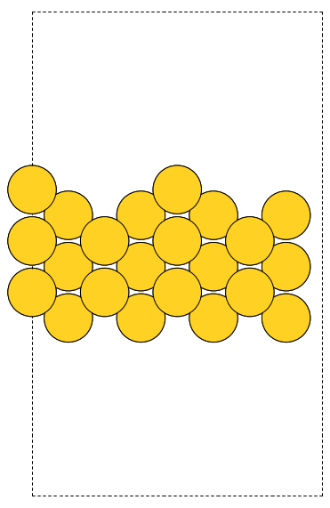
Figure 69: Au(110) with the missing row reconstruction.
5.4.1.3 Bulk Au
from vasp import Vasp from ase.visualize import view from ase.lattice.cubic import FaceCenteredCubic atoms = FaceCenteredCubic(directions=[[0, 1, 1], [1, 0, 1], [1, 1, 0]], size=(1, 1, 1), symbol='Au') print Vasp('bulk/Au-fcc', xc='PBE', encut=350, kpts=[12, 12, 12], atoms=atoms).potential_energy
-3.19446244
5.4.1.4 Analysis of energies
from vasp import Vasp print 'dE = {0:1.3f} eV'.format(Vasp('surfaces/Au-110-missing-row').potential_energy + Vasp('bulk/Au-fcc').potential_energy - Vasp('surfaces/Au-110').potential_energy)
natoms slab = 12 natoms missing row = 11 natoms bulk = 1 dE = -0.070 eV
The missing row formation energy is slightly negative. The magnitude of the formation energy is pretty small, but just slightly bigger than the typical convergence errors observed, so we should cautiously conclude that the reconstruction if favorable for Au(110). We made a lot of shortcuts in computing this quantity, including using the experimental lattice constant of Au, not checking for convergence in k-points or planewave cutoff, and not checking for convergence with respect to slab thickness or number of relaxed layers.
5.4.2 Ag(110) missing row reconstruction
5.4.2.1 Clean Ag(110) slab
from vasp import Vasp from ase.lattice.surface import fcc110 from ase.io import write from ase.constraints import FixAtoms atoms = fcc110('Ag', size=(2, 1, 6), vacuum=10.0) constraint = FixAtoms(mask=[atom.tag > 2 for atom in atoms]) atoms.set_constraint(constraint) calc = Vasp('surfaces/Ag-110', xc='PBE', kpts=[6, 6, 1], encut=350, ibrion=2, isif=2, nsw=10, atoms=atoms) calc.update()
5.4.2.2 Missing row in Ag(110)
from vasp import Vasp from ase.lattice.surface import fcc110 from ase.io import write from ase.constraints import FixAtoms atoms = fcc110('Ag', size=(2, 1, 6), vacuum=10.0) del atoms[11] # delete surface row constraint = FixAtoms(mask=[atom.tag > 2 for atom in atoms]) atoms.set_constraint(constraint) Vasp('surfaces/Ag-110-missing-row', xc='PBE', kpts=[6, 6, 1], encut=350, ibrion=2, isif=2, nsw=10, atoms=atoms).update()
5.4.2.3 Bulk Ag
from vasp import Vasp from ase.visualize import view from ase.lattice.cubic import FaceCenteredCubic atoms = FaceCenteredCubic(directions=[[0, 1, 1], [1, 0, 1], [1, 1, 0]], size=(1, 1, 1), symbol='Ag') Vasp('bulk/Ag-fcc', xc='PBE', encut=350, kpts=[12, 12, 12], atoms=atoms).update()
5.4.2.4 Analysis of energies
from vasp import Vasp eslab = Vasp('surfaces/Ag-110').potential_energy emissingrow = Vasp('surfaces/Ag-110-missing-row').potential_energy ebulk = Vasp('bulk/Ag-fcc').potential_energy print 'dE = {0:1.3f} eV'.format(emissingrow + ebulk - eslab)
dE = -0.010 eV
For Ag(110), the missing row formation energy is practically thermoneutral, i.e. not that favorable. This energy is so close to 0eV, that we cannot confidently say whether the reconstruction is favorable or not. Experimentally, the reconstruction is not seen on very clean Ag(110) although it is reported that some adsorbates may induce the reconstruction PhysRevLett.59.2307.
5.4.3 Cu(110) missing row reconstruction
5.4.3.1 Clean Cu(110) slab
from vasp import Vasp from ase.lattice.surface import fcc110 from ase.constraints import FixAtoms atoms = fcc110('Cu', size=(2, 1, 6), vacuum=10.0) constraint = FixAtoms(mask=[atom.tag > 2 for atom in atoms]) atoms.set_constraint(constraint) Vasp('surfaces/Cu-110', xc='PBE', kpts=[6, 6, 1], encut=350, ibrion=2, isif=2, nsw=10, atoms=atoms).update()
5.4.3.2 Missing row in Cu(110)
from vasp import Vasp from ase.lattice.surface import fcc110 from ase.constraints import FixAtoms atoms = fcc110('Cu', size=(2, 1, 6), vacuum=10.0) del atoms[11] # delete surface row constraint = FixAtoms(mask=[atom.tag > 2 for atom in atoms]) atoms.set_constraint(constraint) Vasp('surfaces/Cu-110-missing-row', xc='PBE', kpts=[6, 6, 1], encut=350, ibrion=2, isif=2, nsw=10, atoms=atoms).update()
5.4.3.3 Bulk Cu
from vasp import Vasp from ase.visualize import view from ase.lattice.cubic import FaceCenteredCubic atoms = FaceCenteredCubic(directions=[[0, 1, 1], [1, 0, 1], [1, 1, 0]], size=(1, 1, 1), symbol='Cu') Vasp('bulk/Cu-fcc', xc='PBE', encut=350, kpts=[12, 12, 12], atoms=atoms).update()
5.4.3.4 Analysis
from vasp import Vasp eslab = Vasp('surfaces/Cu-110').potential_energy emissingrow = Vasp('surfaces/Cu-110-missing-row').potential_energy ebulk = Vasp('bulk/Cu-fcc').potential_energy print 'natoms slab = {0}'.format(len(slab)) print 'natoms missing row = {0}'.format(len(missingrow)) print 'natoms bulk = {0}'.format(len(bulk)) print 'dE = {0:1.3f} eV'.format(emissingrow + ebulk - eslab)
It is questionable whether we should consider this evidence of a missing row reconstruction because the number is small. That does not mean the reconstruction will not happen, but it could mean it is very easy to lift.
5.5 Surface energy
The easiest way to calculate surface energies is from this equation:
\(\sigma = \frac{1}{2}(E_{slab} - \frac{N_{slab}}{N_{bulk}} E_{bulk})\)
where \(E_{slab}\) is the total energy of a symmetric slab (i.e. one with inversion symmetry, and where both sides of the slab have been relaxed), \(E_{bulk}\) is the total energy of a bulk unit cell, \(N_{slab}\) is the number of atoms in the slab, and \(N_{bulk}\) is the number of atoms in the bulk unit cell. One should be sure that the bulk energy is fully converged with respect to $k$-points, and that the slab energy is also converged with respect to $k$-points. The energies should be compared at the same cutoff energies. The idea is then to increase the thickness of the slab until the surface energy \(\sigma\) converges.

Figure 70: Schematic figure illustrating the calculation of a surface energy.
Unfortunately, this approach does not always work. The bulk system is treated subtly different than the slab system, particularly in the $z$-direction where the vacuum is (where typically only one $k$-point is used in slabs). Consequently, the $k$-point sampling is not equivalent in the two systems, and one can in general expect some errors due to this, with the best case being cancellation of the errors due to total $k$-point convergence. In the worst case, one can get a linear divergence in the surface energy with slab thickness PhysRevB.49.16798.
A variation of this method that usually results in better $k$-point error cancellation is to calculate the bulk unit cell energy using the slab unit cell with no vacuum space, with the same $k$-point mesh in the \(x\) and \(y\) directions, but with increased $k$-points in the $z$-direction. Thus, the bulk system and slab system have the same Brillouin zone in at least two dimensions. This maximizes the cancellation of $k$-point errors, but still does not guarantee convergence of the surface energy, as discussed in PhysRevB.49.16798,0953-8984-10-4-017.
For quick estimates of the surface energy, one of the methods described above is likely sufficient. The advantage of these methods is the small number of calculations required to obtain the estimate, one needs only a bulk calculation (which must be done anyhow to get the bulk lattice constant to create the slab), and a slab calculation that is sufficiently thick to get the estimate. Additional calculations are only required to test the convergence of the surface energy.
An alternative method for calculating surface energies that does not involve an explicit bulk calculation follows Ref. 0953-8984-10-4-017. The method follows from equation (ref{eq:se}) where for a N-atom slab, in the limit of N → ∞,
\(E_{slab} \approx 2\sigma + \frac{N_{slab}}{N_{bulk}} E_{bulk}\)
Then, we can estimate Ebulk by plotting the total energy of the slab as a function of the slab thickness.
\(\sigma = \lim_{N \rightarrow \infty} \frac{1}{2}(E_{slab}^N - N \Delta E_N)\)
where \(\Delta E_N = E_{slab}^N - E_{slab}^{N-1}\).
We will examine this approach here. We will use unrelaxed slabs for computational efficiency.
from vasp import Vasp from ase.lattice.surface import fcc111 import matplotlib.pyplot as plt Nlayers = [3, 4, 5, 6, 7, 8, 9, 10, 11] energies = [] sigmas = [] for n in Nlayers: slab = fcc111('Cu', size=(1, 1, n), vacuum=10.0) slab.center() calc = Vasp('bulk/Cu-layers/{0}'.format(n), xc='PBE', encut=350, kpts=[8, 8, 1], atoms=slab) calc.set_nbands(f=2) # the default nbands in VASP is too low for Cu energies.append(slab.get_potential_energy()) calc.stop_if(None in energies) for i in range(len(Nlayers) - 1): N = Nlayers[i] DeltaE_N = energies[i + 1] - energies[i] sigma = 0.5 * (-N * energies[i + 1] + (N + 1) * energies[i]) sigmas.append(sigma) print 'nlayers = {1:2d} sigma = {0:1.3f} eV/atom'.format(sigma, N) plt.plot(Nlayers[0:-1], sigmas, 'bo-') plt.xlabel('Number of layers') plt.ylabel('Surface energy (eV/atom)') plt.savefig('images/Cu-unrelaxed-surface-energy.png')
nlayers = 3 sigma = 0.561 eV/atom nlayers = 4 sigma = 0.398 eV/atom nlayers = 5 sigma = 0.594 eV/atom nlayers = 6 sigma = 0.308 eV/atom nlayers = 7 sigma = 0.590 eV/atom nlayers = 8 sigma = 0.332 eV/atom nlayers = 9 sigma = 0.591 eV/atom nlayers = 10 sigma = 0.392 eV/atom
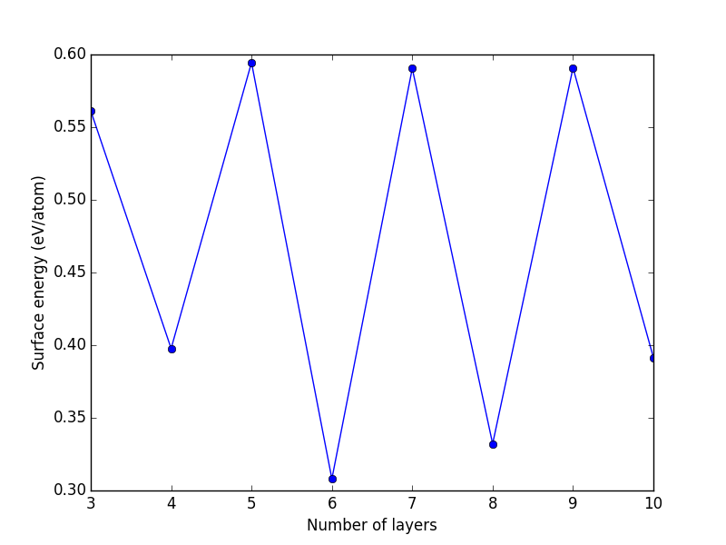
Figure 71: Surface energy of a Cu(111) slab as a function of thickness.
One reason for the oscillations may be quantum size effects Fiolhais2003209. In PhysRevB.75.115131 the surface energy of Cu(111) is reported as 0.48 eV/atom, or 1.36 J/m\(^2\). Here is an example showing a conversion between these two units. We use ase to compute the area of the unit cell from the norm of the cross-product of the vectors defining the surface unit cell.
from ase.lattice.surface import fcc111 from ase.units import J, m import numpy as np slab = fcc111('Cu', size=(1, 1, 3), vacuum=10.0) cell = slab.get_cell() area = np.linalg.norm(np.cross(cell[0], cell[1])) # area per atom sigma = 0.48 # eV/atom print 'sigma = {0} J/m^2'.format(sigma / area / (J / m**2))
sigma = 1.36281400415 J/m^2
5.5.1 Advanced topics in surface energy
The surface energies can be used to estimate the shapes of nanoparticles using a Wulff construction. See doi.10.1021/jp200950a for an example of computing Mo2C surface energies and particle shapes, and Inoglu2009188 for an example of the influence of adsorbates on surface energies and particle shapes of Cu.
For a classic paper on trends in surface energies see Vitos1998186.
5.6 Work function
work function To get the work function, we need to have the local potential. This is not written by default in VASP, and we have to tell it to do that with the LVTOT and LVHAR keywords.
from vasp import Vasp import matplotlib.pyplot as plt import numpy as np calc = Vasp('surfaces/Al-slab-relaxed') atoms = calc.get_atoms() calc = Vasp('surfaces/Al-slab-locpot', xc='PBE', kpts=[6, 6, 1], encut=350, lvtot=True, # write out local potential lvhar=True, # write out only electrostatic potential, not xc pot atoms=atoms) calc.wait() ef = calc.get_fermi_level() x, y, z, lp = calc.get_local_potential() nx, ny, nz = lp.shape axy = np.array([np.average(lp[:, :, z]) for z in range(nz)]) # setup the x-axis in realspace uc = atoms.get_cell() xaxis = np.linspace(0, uc[2][2], nz) plt.plot(xaxis, axy) plt.plot([min(xaxis), max(xaxis)], [ef, ef], 'k:') plt.xlabel('Position along z-axis') plt.ylabel('x-y averaged electrostatic potential') plt.savefig('images/Al-wf.png') ind = (xaxis > 0) & (xaxis < 5) wf = np.average(axy[ind]) - ef print ' The workfunction is {0:1.2f} eV'.format(wf)
The workfunction is 4.17 eV
The workfunction of Al is listed as 4.08 at http://hyperphysics.phy-astr.gsu.edu/hbase/tables/photoelec.html.

Figure 72: \(xy\) averaged local electrostatic potential of an Al(111) slab.
5.7 Dipole correction
A subtle problem can arise when an adsorbate is placed on one side of a slab with periodic boundary conditions, which is currently the common practice. The problem is that this gives the slab a dipole moment. The array of dipole moments created by the periodic boundary conditions generates an electric field that can distort the electron density of the slab and change the energy. The existence of this field in the vacuum also makes the zero-potential in the vacuum ill-defined, thus the work function is not well-defined. One solution to this problem is to use slabs with adsorbates on both sides, but then very thick (eight to ten layers) slabs must be used to ensure the adsorbates do not interact through the slab. An alternative solution, the dipole correction scheme, was developed by Neugebauer and Scheffler PhysRevB.46.16067 and later corrected by Bengtsson PhysRevB.59.12301. In this technique, an external field is imposed in the vacuum region that exactly cancels the artificial field caused by the slab dipole moment. The advantage of this approach is that thinner slabs with adsorbates on only one side can be used.
There are also literature reports that the correction is small morikawa2001:c2h2-si. Nevertheless, in the literature the use of this correction is fairly standard, and it is typical to at least consider the correction.
Here we will just illustrate the effect.
5.7.1 Slab with no dipole correction
We simply run the calculation here, and compare the results later.
# compute local potential of slab with no dipole from ase.lattice.surface import fcc111, add_adsorbate from vasp import Vasp import matplotlib.pyplot as plt from ase.io import write slab = fcc111('Al', size=(2, 2, 2), vacuum=10.0) add_adsorbate(slab, 'Na', height=1.2, position='fcc') slab.center() write('images/Na-Al-slab.png', slab, rotation='-90x', show_unit_cell=2) print(Vasp('surfaces/Al-Na-nodip', xc='PBE', encut=340, kpts=[2, 2, 1], lcharg=True, lvtot=True, # write out local potential lvhar=True, # write out only electrostatic potential, not xc pot atoms=slab).potential_energy)
-22.55264459
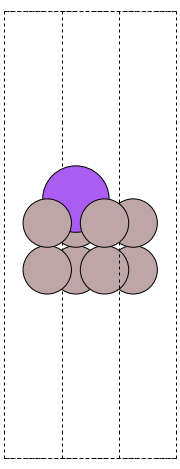
Figure 73: Example slab with a Na atom on it for illustrating the effects of dipole corrections.
5.7.2 TODO Slab with a dipole correction
Note this takes a considerably longer time to run than without a dipole correction! In VASP there are several levels of dipole correction to apply. You can use the IDIPOL tag to turn it on, and specify which direction to apply it in (1=\(x\), 2=\(y\), 3=\(z\), 4=\((x,y,z)\)). This simply corrects the total energy and forces. It does not change the contents of LOCPOT. For that, you have to also set the LDIPOL and DIPOL tags. It is not efficient to set all three at the same time for some reason. The VASP manual recommends you first set IDIPOL to get a converged electronic structure, and then set LDIPOL to True, and set the center of electron density in DIPOL. That makes these calculations a multistep process, because we must run a calculation, analyze the charge density to get the center of charge, and then run a second calculation.
# compute local potential with dipole calculation on from ase.lattice.surface import fcc111, add_adsorbate from vasp import Vasp import numpy as np slab = fcc111('Al', size=(2, 2, 2), vacuum=10.0) add_adsorbate(slab, 'Na', height=1.2, position='fcc') slab.center() calc = Vasp('surfaces/Al-Na-dip', xc='PBE', encut=340, kpts=[2, 2, 1], lcharg=True, idipol=3, # only along z-axis lvtot=True, # write out local potential lvhar=True, # write out only electrostatic potential, not xc pot atoms=slab) calc.stop_if(calc.potential_energy is None) x, y, z, cd = calc.get_charge_density() n0, n1, n2 = cd.shape nelements = n0 * n1 * n2 voxel_volume = slab.get_volume() / nelements total_electron_charge = cd.sum() * voxel_volume electron_density_center = np.array([(cd * x).sum(), (cd * y).sum(), (cd * z).sum()]) electron_density_center *= voxel_volume electron_density_center /= total_electron_charge print 'electron-density center = {0}'.format(electron_density_center) uc = slab.get_cell() # get scaled electron charge density center sedc = np.dot(np.linalg.inv(uc.T), electron_density_center.T).T # we only write 4 decimal places out to the INCAR file, so we round here. sedc = np.round(sedc, 4) calc.clone('surfaces/Al-Na-dip-step2') # now run step 2 with dipole set at scaled electron charge density center calc.set(ldipol=True, dipol=sedc) print(calc.potential_energy)
5.7.3 Comparing no dipole correction with a dipole correction
To see the difference in what the dipole correction does, we now plot the potentials from each calculation.
from vasp import Vasp import matplotlib.pyplot as plt calc = Vasp('surfaces/Al-Na-nodip') atoms = calc.get_atoms() x, y, z, lp = calc.get_local_potential() nx, ny, nz = lp.shape axy_1 = [np.average(lp[:, :, z]) for z in range(nz)] # setup the x-axis in realspace uc = atoms.get_cell() xaxis_1 = np.linspace(0, uc[2][2], nz) e1 = atoms.get_potential_energy() calc = Vasp('surfaces/Al-Na-dip-step2') atoms = calc.get_atoms() x, y, z, lp = calc.get_local_potential() nx, ny, nz = lp.shape axy_2 = [np.average(lp[:, :, z]) for z in range(nz)] # setup the x-axis in realspace uc = atoms.get_cell() xaxis_2 = np.linspace(0, uc[2][2], nz) ef2 = calc.get_fermi_level() e2 = atoms.get_potential_energy() print 'The difference in energy is {0} eV.'.format(e2-e1) plt.plot(xaxis_1, axy_1, label='no dipole correction') plt.plot(xaxis_2, axy_2, label='dipole correction') plt.plot([min(xaxis_2), max(xaxis_2)], [ef2, ef2], 'k:', label='Fermi level') plt.xlabel('z ($\AA$)') plt.ylabel('xy-averaged electrostatic potential') plt.legend(loc='best') plt.savefig('images/dip-vs-nodip-esp.png')

Figure 74: Comparison of the electrostatic potentials with a dipole correction and without it.
The key points to notice in this figure are:
- The two deep dips are where the atoms are.
- Without a dipole correction, the electrostatic potential never flattens out. there is near constant slope in the vacuum region, which means there is an electric field there.
- With a dipole correction the potential is flat in the vacuum region, except for the step jump near 23 Å.
- The difference between the Fermi level and the flat vacuum potential is the work function.
- The difference in energy with and without the dipole correction here is small.
5.8 Adsorption energies
5.8.1 Simple estimate of the adsorption energy
Calculating an adsorption energy amounts to computing the energy of the following kind of reaction:
slab + gas-phase molecule \(\rightarrow\) slab_adsorbate + products

Figure 75: Schematic of an adsorption process.
There are many variations of this idea. The slab may already have some adsorbates on it, the slab may reconstruct on adsorption, the gas-phase molecule may or may not dissociate, and the products may or may not stick to the surface. We have to decide where to put the adsorbates, i.e. what site to put them on, and some sites will be more stable than others. We will consider the dissociative adsorption of O\(_2\) on three sites of a Pt(111) slab. We will assume the oxygen molecule has split in half, and that the atoms have moved far apart. We will model the oxygen coverage at 0.25 ML, which means we need to use a \(2 \times 2\) surface unit cell. For computational speed, we will freeze the slab, but allow the adsorbate to relax.
\( \Delta H_{ads} (eV/O) = E_{slab+O} - E_{slab} - 0.5*E_{O_2} \)
5.8.1.1 Calculations
5.8.1.1.1 clean slab calculation
from vasp import Vasp from ase.lattice.surface import fcc111 from ase.constraints import FixAtoms atoms = fcc111('Pt', size=(2, 2, 3), vacuum=10.0) constraint = FixAtoms(mask=[True for atom in atoms]) atoms.set_constraint(constraint) from ase.io import write write('images/Pt-fcc-ori.png', atoms, show_unit_cell=2) print(Vasp('surfaces/Pt-slab', xc='PBE', kpts=[4, 4, 1], encut=350, atoms=atoms).potential_energy)
-68.23616204

Figure 76: Pt(111) fcc surface
5.8.1.1.2 fcc site
from vasp import Vasp from ase.lattice.surface import fcc111, add_adsorbate from ase.constraints import FixAtoms atoms = fcc111('Pt', size=(2, 2, 3), vacuum=10.0) # note this function only works when atoms are created by the surface module. add_adsorbate(atoms, 'O', height=1.2, position='fcc') constraint = FixAtoms(mask=[atom.symbol != 'O' for atom in atoms]) atoms.set_constraint(constraint) from ase.io import write write('images/Pt-fcc-site.png', atoms, show_unit_cell=2) print(Vasp('surfaces/Pt-slab-O-fcc', xc='PBE', kpts=[4, 4, 1], encut=350, ibrion=2, nsw=25, atoms=atoms).potential_energy)
-74.23018764

Figure 77: FCC site.
5.8.1.1.3 O atom on the bridge site
from vasp import Vasp from ase.lattice.surface import fcc111, add_adsorbate from ase.constraints import FixAtoms atoms = fcc111('Pt', size=(2, 2, 3), vacuum=10.0) # note this function only works when atoms are created by the surface module. add_adsorbate(atoms, 'O', height=1.2, position='bridge') constraint = FixAtoms(mask=[atom.symbol != 'O' for atom in atoms]) atoms.set_constraint(constraint) print(Vasp('surfaces/Pt-slab-O-bridge', xc='PBE', kpts=[4, 4, 1], encut=350, ibrion=2, nsw=25, atoms=atoms).potential_energy)
-74.23023073
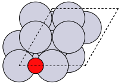
Figure 78: Initial geometry of the bridge site. It is definitely on the bridge.
5.8.1.1.4 hcp site
from vasp import Vasp from ase.lattice.surface import fcc111, add_adsorbate from ase.constraints import FixAtoms atoms = fcc111('Pt', size=(2, 2, 3), vacuum=10.0) # note this function only works when atoms are created by the surface module. add_adsorbate(atoms, 'O', height=1.2, position='hcp') constraint = FixAtoms(mask=[atom.symbol != 'O' for atom in atoms]) atoms.set_constraint(constraint) from ase.io import write write('images/Pt-hcp-o-site.png', atoms, show_unit_cell=2) print(Vasp('surfaces/Pt-slab-O-hcp', xc='PBE', kpts=[4, 4, 1], encut=350, ibrion=2, nsw=25, atoms=atoms).potential_energy)
-73.76942127

Figure 79: HCP site.
5.8.1.2 Analysis of adsorption energies
from vasp import Vasp from ase.io import write calc = Vasp('surfaces/Pt-slab') atoms = calc.get_atoms() e_slab = atoms.get_potential_energy() write('images/pt-slab.png', atoms,show_unit_cell=2) calc = Vasp('surfaces/Pt-slab-O-fcc') atoms = calc.get_atoms() e_slab_o_fcc = atoms.get_potential_energy() write('images/pt-slab-fcc-o.png', atoms,show_unit_cell=2) calc = Vasp('surfaces/Pt-slab-O-hcp') atoms = calc.get_atoms() e_slab_o_hcp = atoms.get_potential_energy() write('images/pt-slab-hcp-o.png', atoms,show_unit_cell=2) calc = Vasp('surfaces/Pt-slab-O-bridge') atoms = calc.get_atoms() e_slab_o_bridge = atoms.get_potential_energy() write('images/pt-slab-bridge-o.png', atoms,show_unit_cell=2) calc = Vasp('molecules/O2-sp-triplet-350') atoms = calc.get_atoms() e_O2 = atoms.get_potential_energy() Hads_fcc = e_slab_o_fcc - e_slab - 0.5 * e_O2 Hads_hcp = e_slab_o_hcp - e_slab - 0.5 * e_O2 Hads_bridge = e_slab_o_bridge - e_slab - 0.5 * e_O2 print 'Hads (fcc) = {0} eV/O'.format(Hads_fcc) print 'Hads (hcp) = {0} eV/O'.format(Hads_hcp) print 'Hads (bridge) = {0} eV/O'.format(Hads_bridge)
You can see the hcp site is not as energetically favorable as the fcc site. Interestingly, the bridge site seems to be as favorable as the fcc site. This is not correct, and to see why, we have to look at the final geometries of each calculation. First the fcc (Figure fig:fcc and hcp (Figure fig:hcp sites, which look like we expect.
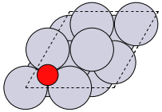
Figure 80: Final geometry of the fcc site. \label{fig:fcc}
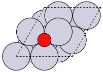
Figure 81: Final geometry of the hcp site. \label{fig:hcp}
The bridge site (Figure fig:bridge, however, is clearly not at a bridge site!

Figure 82: Final geometry of the bridge site. You can see that the oxygen atom ended up in the fcc site. \label{fig:bridge}
Let us see what the original geometry and final geometry for the bridge site were. The POSCAR contains the initial geometry (as long as you haven't copied CONTCAR to POSCAR), and the CONTCAR contains the final geometry.
from ase.io import read, write atoms = read('surfaces/Pt-slab-O-bridge/POSCAR') write('images/Pt-o-brige-ori.png', atoms, show_unit_cell=2) atoms = read('surfaces/Pt-slab-O-bridge/CONTCAR') write('images/Pt-o-brige-final.png', atoms, show_unit_cell=2)
Figure 83: Initial geometry of the bridge site. It is definitely on the bridge.

Figure 84: Final geometry of the bridge site. It has fallen into the fcc site.
You can see the problem. We should not call the adsorption energy from this calculation a bridge site adsorption energy because the O atom is actually in an fcc site! This kind of result can happen with relaxation, and you should always check that the result you get makes sense. Next, we consider how to get a bridge site adsorption energy by using constraints.
Some final notes:
- We did not let the slabs relax in these examples, and allowing them to relax is likely to have a big effect on the adsorption energies. You have to decide how many layers to relax, and check for convergence with respect to the number of layers.
- The slabs were pretty thin. It is typical these days to see slabs that are 4-5 or more layers thick.
- We did not consider how well converged the calculations were with respect to $k$-points or ENCUT.
- We did not consider the effect of the error in O\(_2\) dissociation energy on the adsorption energies.
- We did not consider coverage effects (see Coverage dependence).
5.8.1.3 Adsorption on bridge site with constraints
To prevent the oxygen atom from sliding down into the fcc site, we have to constrain it so that it only moves in the $z$-direction. This is an artificial constraint; the bridge site is only metastable. But there are lots of reasons you might want to do this anyway. One is the bridge site is a transition state for diffusion between the fcc and hcp sites. Another is to understand the role of coordination in the adsorption energies. We use a ase.constraints.FixScaled constraint in ase to constrain the O atom so it can only move in the $z$-direction (actually so it can only move in the direction of the third unit cell vector, which only has a $z$-component).
from vasp import Vasp from ase.lattice.surface import fcc111, add_adsorbate from ase.constraints import FixAtoms, FixScaled from ase.io import write atoms = fcc111('Pt', size=(2, 2, 3), vacuum=10.0) # note this function only works when atoms are created by the surface module. add_adsorbate(atoms, 'O', height=1.2, position='bridge') constraint1 = FixAtoms(mask=[atom.symbol != 'O' for atom in atoms]) # fix in xy-direction, free in z. actually, freeze movement in surface # unit cell, and free along 3rd lattice vector constraint2 = FixScaled(atoms.get_cell(), 12, [True, True, False]) atoms.set_constraint([constraint1, constraint2]) write('images/Pt-O-bridge-constrained-initial.png', atoms, show_unit_cell=2) print 'Initial O position: {0}'.format(atoms.positions[-1]) calc = Vasp('surfaces/Pt-slab-O-bridge-xy-constrained', xc='PBE', kpts=[4, 4, 1], encut=350, ibrion=2, nsw=25, atoms=atoms) e_bridge = atoms.get_potential_energy() write('images/Pt-O-bridge-constrained-final.png', atoms, show_unit_cell=2) print 'Final O position : {0}'.format(atoms.positions[-1]) # now compute Hads calc = Vasp('surfaces/Pt-slab') atoms = calc.get_atoms() e_slab = atoms.get_potential_energy() calc = Vasp('molecules/O2-sp-triplet-350') atoms = calc.get_atoms() e_O2 = atoms.get_potential_energy() calc.stop_if(None in [e_bridge, e_slab, e_O2]) Hads_bridge = e_bridge - e_slab - 0.5*e_O2 print 'Hads (bridge) = {0:1.3f} eV/O'.format(Hads_bridge)
Initial O position: [ 1.38592929 0. 15.72642611] Final O position : [ 1.38592929 0. 15.9685262 ] Hads (bridge) = -0.512 eV/O
You can see that only the \(z\)-position of the O atom changed. Also, the adsorption energy of O on the bridge site is much less favorable than on the fcc or hcp sites.

Figure 85: Initial state of the O atom on the bridge site.

Figure 86: Final state of the constrained O atom, still on the bridge site.
5.8.2 Coverage dependence
The adsorbates on the surface can interact with each other which results in coverage dependent adsorption energies PhysRevB.82.045414. Coverage dependence is not difficult to model; we simply compute adsorption energies in different size unit cells, and/or with different adsorbate configurations. Here we consider dissociative oxygen adsorption at 1ML on Pt(111) in an fcc site, which is one oxygen atom in a \(1 \times 1\) unit cell.
For additional reading, see these references from our work:
- Correlations of coverage dependence of oxygen adsorption on different metals miller:104709,Miller2009794
- Coverage effects of atomic adsorbates on Pd(111) PhysRevB.79.205412
- Simple model for estimating coverage dependence PhysRevB.82.045414
- Coverage effects on alloys PhysRevB.77.075437
5.8.2.1 clean slab calculation
from vasp import Vasp from ase.io import write from ase.lattice.surface import fcc111 from ase.constraints import FixAtoms atoms = fcc111('Pt', size=(1, 1, 3), vacuum=10.0) constraint = FixAtoms(mask=[True for atom in atoms]) atoms.set_constraint(constraint) write('images/Pt-fcc-1ML.png', atoms, show_unit_cell=2) print(Vasp('surfaces/Pt-slab-1x1', xc='PBE', kpts=[8, 8, 1], encut=350, atoms=atoms).potential_energy)
-17.05903301

Figure 87: 1 × 1 unit cell.
5.8.2.2 fcc site at 1 ML coverage
from vasp import Vasp from ase.lattice.surface import fcc111, add_adsorbate from ase.constraints import FixAtoms from ase.io import write atoms = fcc111('Pt', size=(1, 1, 3), vacuum=10.0) # note this function only works when atoms are created by the surface module. add_adsorbate(atoms, 'O', height=1.2, position='fcc') constraint = FixAtoms(mask=[atom.symbol != 'O' for atom in atoms]) atoms.set_constraint(constraint) write('images/Pt-o-fcc-1ML.png', atoms, show_unit_cell=2) print(Vasp('surfaces/Pt-slab-1x1-O-fcc', xc='PBE', kpts=[8, 8, 1], encut=350, ibrion=2, nsw=25, atoms=atoms).potential_energy)
-22.13585728

Figure 88: 1 ML oxygen in the fcc site.
5.8.2.3 Adsorption energy at 1ML
from vasp import Vasp e_slab_o = Vasp('surfaces/Pt-slab-1x1-O-fcc').potential_energy # clean slab e_slab = Vasp('surfaces/Pt-slab-1x1').potential_energy e_O2 = Vasp('molecules/O2-sp-triplet-350').potential_energy hads = e_slab_o - e_slab - 0.5 * e_O2 print 'Hads (1ML) = {0:1.3f} eV'.format(hads)
Hads (1ML) = -0.099 eV
The adsorption energy is much less favorable at 1ML coverage than at 0.25 ML coverage! We will return what this means in Atomistic thermodynamics effect on adsorption.
5.8.3 Effect of adsorption on the surface energy
There is a small point to make here about what adsorption does to surface energies. Let us define a general surface formation energy scheme like this:
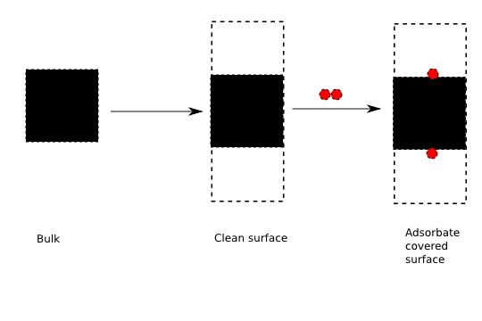
Figure 89: Schematic of forming a surface with adsorbates. First we form two clean surfaces by cleaving the bulk, then allow adsorption to occur on the surfaces.
Let us presume the surfaces are symmetric, and that each surface contributes half of the energy change. The overall change in energy:
\(\Delta E = E_{slab,ads} - E_{ads} - E_{bulk}\)
where the the energies are appropriately normalized for the stoichiometry. Let us rearrange the terms, and add and subtract a constant term \(E_{slab}\).
\(\Delta E = E_{slab,ads} - E_{slab} - E_{ads} - E_{bulk} + E_{slab}\)
We defined \(\gamma_{clean} = \frac{1}{2A}(E_{slab} - E_{bulk})\), and we defined \(H_{ads} = E_{slab,ads} - E_{slab} - E_{ads}\) for adsorption on a single side of a slab. In this case, there are adsorbates on both sides of the slab, so \(E_{slab,ads} - E_{slab} - E_{ads} = 2 \Delta H_{ads}\). If we normalize by \(2A\), the area for both sides of the slab, we get
\(\frac{\Delta E}{2A} = \gamma = \gamma_{clean} + \frac{H_{ads}}{A}\)
You can see here that the adsorption energy serves to stabilize, or reduce the surface energy, provided that the adsorption energy is negative.
Some final notes about the equations above:
- We were not careful about stoichiometry. As written, it is assumed there are the same number of atoms (not including the adsorbates) in the slabs and bulk, and the same number of adsorbate atoms in the slab and \(E_{ads}\). Appropriate normalization factors must be included if that is not true.
- It is not necessary to perform a symmetric slab calculation to determine the effect of adsorption on the surface energy! You can examine \(\gamma - \gamma_{clean}\) with knowledge of only the adsorption energies!
5.9 Adsorbate vibrations
Adsorbates also have vibrational modes. Unlike a free molecule, the translational and rotational modes of an adsorbate may actually have real frequencies. Sometimes they are called frustrated translations or rotations. For metal surfaces with adsorbates, it is common to only compute vibrational modes of the adsorbate on a frozen metal slab. The rationale is that the metal atoms are so much heavier than the adsorbate that there will be little coupling between the surface and adsorbates. You can limit the number of modes calculated with constraints (ase.constraints.FixAtoms or ase.constraints.FixScaled) if you use IBRION=5. The other IBRION settings (6, 7, 8) do not respect the selective dynamics constraints. Below we consider the vibrational modes of an oxygen atom in an fcc site on Pt(111).
from vasp import Vasp calc = Vasp('surfaces/Pt-slab-O-fcc') calc.clone('surfaces/Pt-slab-O-fcc-vib') calc.set(ibrion=5, # finite differences with selective dynamics nfree=2, # central differences (default) potim=0.015, # default as well ediff=1e-8, nsw=1) atoms = calc.get_atoms() f, v = calc.get_vibrational_modes(0) print 'Elapsed time = {0} seconds'.format(calc.get_elapsed_time()) allfreq = calc.get_vibrational_modes()[0] from ase.units import meV c = 3e10 # cm/s h = 4.135667516e-15 # eV*s print 'vibrational energy = {0} eV'.format(f) print 'vibrational energy = {0} meV'.format(f/meV) print 'vibrational freq = {0} 1/s'.format(f/h) print 'vibrational freq = {0} cm^{{-1}}'.format(f/(h*c)) print print 'All energies = ', allfreq
There are three modes for the free oxygen atom. One of them is a mode normal to the surface (the one with highest frequency. The other two are called frustrated translations. Note that we did not include the surface Pt atoms in the calculation, and this will have an effect on the result because the O atom could be coupled to the surface modes. It is typical to neglect this coupling because of the large difference in mass between O and Pt. Next we look at the difference in results when we calculate all the modes.
from vasp import Vasp calc = Vasp('surfaces/Pt-slab-O-fcc') calc.clone('Pt-slab-O-fcc-vib-ibrion=6') calc.set(ibrion=6, # finite differences with symmetry nfree=2, # central differences (default) potim=0.015, # default as well ediff=1e-8, nsw=1) calc.update() print 'Elapsed time = {0} seconds'.format(calc.get_elapsed_time()) f, m = calc.get_vibrational_modes(0) allfreq = calc.get_vibrational_modes()[0] from ase.units import meV c = 3e10 # cm/s h = 4.135667516e-15 # eV*s print 'For mode 0:' print 'vibrational energy = {0} eV'.format(f) print 'vibrational energy = {0} meV'.format(f / meV) print 'vibrational freq = {0} 1/s'.format(f / h) print 'vibrational freq = {0} cm^{{-1}}'.format(f / (h * c)) print print 'All energies = ', allfreq
Elapsed time = 77121.015 seconds
For mode 0:
vibrational energy = 0.063537929 eV
vibrational energy = 63.537929 meV
vibrational freq = 1.53634035507e+13 1/s
vibrational freq = 512.113451691 cm^{-1}
All energies = [0.06353792899999999, 0.045628623, 0.045628623, 0.023701702, 0.023701702, 0.023223747, 0.022978233, 0.022978233, 0.022190167, 0.021807461, 0.02040119, 0.02040119, 0.019677135000000002, 0.015452848, 0.015302098000000002, 0.015302098000000002, 0.0148412, 0.0148412, 0.014071851000000002, 0.012602063, 0.012602063, 0.012409611999999999, 0.012300973000000002, 0.011735683, 0.011735683, 0.011714521, 0.011482183, 0.011482183, 0.010824891, 0.010414177, 0.010414177, 0.009799697, 0.00932905, 0.00932905, 0.003859079, 0.003859079, (2.9894000000000002e-05+0j), (2.9894000000000002e-05+0j), (0.00012182999999999999+0j)]
Note that now there are 39 modes, which is 3*N where N=13 atoms in the unit cell. Many of the modes are low in frequency, which correspond to slab modes that are essentially phonons. The O frequencies are not that different from the previous calculation (497 vs 512 cm\(^{-1}\). This is why it is common to keep the slab atoms frozen.
Calculating these results took 39*2 finite differences. It took about a day to get these results on a single CPU. It pays to use constraints to minimize the number of these calculations.
5.9.1 Vibrations of the bridge site
Here we consider the vibrations of an O atom in a bridge site, which we saw earlier is a metastable saddle point.
from vasp import Vasp from ase.constraints import FixAtoms # clone calculation so we do not overwrite previous results calc = Vasp('surfaces/Pt-slab-O-bridge-xy-constrained') calc.clone('surfaces/Pt-slab-O-bridge-vib') calc.set(ibrion=5, # finite differences with selective dynamics nfree=2, # central differences (default) potim=0.015, # default as well ediff=1e-8, nsw=1) atoms = calc.get_atoms() del atoms.constraints constraint = FixAtoms(mask=[atom.symbol != 'O' for atom in atoms]) atoms.set_constraint([constraint]) f, v = calc.get_vibrational_modes(2) print(calc.get_vibrational_modes()[0]) from ase.units import meV c = 3e10 # cm/s h = 4.135667516e-15 # eV*s print('vibrational energy = {0} eV'.format(f)) print('vibrational energy = {0} meV'.format(f/meV)) print('vibrational freq = {0} 1/s'.format(f/h)) print('vibrational freq = {0} cm^(-1)'.format(f/(h*c)))
[0.06691932, 0.047345270999999994, (0.020649715000000003+0j)] vibrational energy = (0.020649715+0j) eV vibrational energy = (20.649715+0j) meV vibrational freq = (4.99307909065e+12+0j) 1/s vibrational freq = (166.435969688+0j) cm^(-1)
Note that we have one imaginary mode. This corresponds to the motion of the O atom falling into one of the neighboring 3-fold sites. It also indicates this position is not a stable minimum, but rather a saddle point. This position is a transition state for hopping between the fcc and hcp sites.
5.10 Surface Diffusion barrier
See this review ANIE.ANIE200602223 of diffusion on transition metal surfaces.
5.10.1 Standard nudged elastic band method
Here we illustrate a standard NEB method. You need an initial and final state to start with. We will use the results from previous calculations of oxygen atoms in an fcc and hcp site. then we will construct a band of images connecting these two sites. Finally, we let VASP optimize the band and analyze the results to get the barrier.
from vasp import Vasp from ase.neb import NEB import matplotlib.pyplot as plt calc = Vasp('surfaces/Pt-slab-O-fcc') initial_atoms = calc.get_atoms() final_atoms = Vasp('surfaces/Pt-slab-O-hcp').get_atoms() # here is our estimated transition state. we use vector geometry to # define the bridge position, and add 1.451 Ang to z based on our # previous bridge calculation. The bridge position is half way between # atoms 9 and 10. ts = initial_atoms.copy() ts.positions[-1] = 0.5 * (ts.positions[9] + ts.positions[10]) + [0, 0, 1.451] # construct the band images = [initial_atoms] images += [initial_atoms.copy()] images += [ts.copy()] # this is the TS neb = NEB(images) # Interpolate linearly the positions of these images: neb.interpolate() # now add the second half images2 = [ts.copy()] images2 += [ts.copy()] images2 += [final_atoms] neb2 = NEB(images2) neb2.interpolate() # collect final band. Note we do not repeat the TS in the second half final_images = images + images2[1:] calc = Vasp('surfaces/Pt-O-fcc-hcp-neb', ibrion=1, nsw=90, spring=-5, atoms=final_images) images, energies = calc.get_neb() p = calc.plot_neb(show=False) plt.savefig('images/pt-o-fcc-hcp-neb.png')
/home-research/jkitchin/dft-book/surfaces/Pt-O-fcc-hcp-neb submitted: 1400536.gilgamesh.cheme.cmu.edu [None, None, None, None, None]
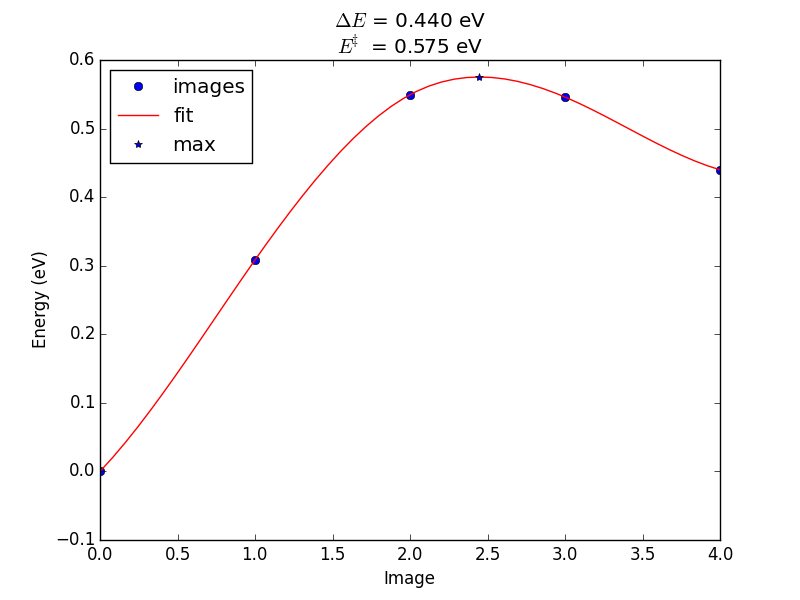
Figure 90: Energy pathway for O diffusion from an fcc to hcp site with a spline fit to determine the barrier.
We should compare this barrier to what we could estimate from the simple adsorption energies in the fcc and bridge sites. The adsorption energy in the fcc site was -1.04 eV, and in the bridge site was -0.49 eV. The difference between these two is 0.55 eV, which is very close to the calculated barrier from the NEB calculation. In cases where you can determine what the transition state is, e.g. by symmetry, or other means, it is much faster to directly compute the energy of the initial and transition states for barrier determinations. This is not usually possible though.
5.10.2 Climbing image NEB
One issue with the standard NEB method is there is no image that is exactly at the transition state. That means there is some uncertainty of the true energy of the transition state, and there is no way to verify the transition state by vibrational analysis. The climbing image NEB method henkelman:9901 solves that problem by making one image climb to the top. You set LCLIMB==True= in Vasp to turn on the climbing image method. Here we use the previous calculation as a starting point and turn on the climbing image method.
# perform a climbing image NEB calculation from vasp import Vasp calc = Vasp('surfaces/Pt-O-fcc-hcp-neb') calc.clone('surfaces/Pt-O-fcc-hcp-cineb') calc.set(ichain=0, lclimb=True) images, energies = calc.get_neb() calc.plot_neb(show=False) import matplotlib.pyplot as plt plt.savefig('images/pt-o-cineb.svg') plt.show()
Figure 91: Climbing image NEB
5.10.3 Using vibrations to confirm a transition state
A transition state should have exactly one imaginary degree of freedom which corresponds to the mode that takes reactants to products. See Vibrations of the bridge site for an example.
6 Atomistic thermodynamics
atomistic thermodynamics Let us consider how much the Gibbs free energy of an O2 molecule changes as a function of temperature, at 1 atm. We use the Shomate polynomials to approximate the temperature dependent entropy and enthalpy, and use the parameters from the NIST Webbook for O2.
from ase.units import * K = 1.0 print J, mol, K print 0.100 * kJ / mol / K print 1 * eV / (kJ / mol)
6.24150912588e+18 6.022140857e+23 1.0 0.00103642695747 96.4853328825
import numpy as np import matplotlib.pyplot as plt from ase.units import * K = 1. # Kelvin not defined in ase.units! # Shomate parameters A = 31.32234; B = -20.23531; C = 57.86644 D = -36.50624; E = -0.007374; F = -8.903471 G = 246.7945; H = 0.0 def entropy(T): '''entropy returned as eV/K T in K ''' t = T / 1000. s = (A * np.log(t) + B * t + C * (t**2) / 2. + D * (t**3) / 3. - E / (2. * t**2) + G) return s * J / mol / K def enthalpy(T): ''' H - H(298.15) returned as eV/molecule''' t = T / 1000. h = (A * t + B * (t**2) / 2. + C * (t**3) / 3. + D * (t**4) / 4. - E / t + F - H) return h * kJ / mol T = np.linspace(10, 700) G = enthalpy(T) - T * entropy(T) plt.plot(T, G) plt.xlabel('Temperature (K)') plt.ylabel(r'$\Delta G^\circ$ (eV)') plt.savefig('images/O2-mu.png')

Figure 92: Effect of temperature on the Gibbs free energy of an O_2 molecule at standard state (1 atm).
This is clearly a big effect! Between 500-600K, the energy has dropped by nearly 1 eV.
Pressure also affects the free energy. In the ideal gas limit, the pressure changes the free energy by \(k T \ln P/P_0\) where \(P_0\) is the standard state pressure (1 atm or 1 bar depending on the convention chosen). Let us see how this affects the free energy at different temperatures.
import matplotlib.pyplot as plt import numpy as np from ase.units import * atm = 101325 * Pascal #atm is not defined in units K = 1 # Kelvin # examine range over 10^-10 to 10^10 atm P = np.logspace(-10, 10) * atm plt.semilogx(P / atm, kB * (300 * K) * np.log(P / (1 * atm)), label='300K') plt.semilogx(P / atm, kB * (600 * K) * np.log(P / (1 * atm)), label='600K') plt.xlabel('Pressure (atm)') plt.ylabel(r'$\Delta G$ (eV)') plt.legend(loc='best') plt.savefig('images/O2-g-p.png')

Figure 93: Effects of pressure on the ideal gas Gibbs free energy of O\(_2\).
Similarly, you can see that simply changing the pressure has a large effect on the Gibbs free energy of an ideal gas through the term: \(kT\ln(P/P_0)\), and that this effect is also temperature dependent. This leads us to the final formula we will use for the chemical potential of oxgyen:
\(\mu_{O_2} = E_{O_2}^{DFT} + E_{O_2}^{ZPE} + \Delta \mu (T) + kT \ln(P/P_0)\)
We can use \(\mu_{O_2}\) in place of \(E_{O_2}\) everywhere to include the effects of pressure and temperature on the gas phase energy. If T=0K, and P=1 bar, we are at standard state, and this equation reduces to the DFT energy (+ the ZPE).
6.1 Bulk phase stability of oxides
We will consider the effects of oxygen pressure and temperature on the formation energy of Ag2O and Cu2O. For now, we neglect the effect of pressure and temperature on the solid phases. Neglecting pressure is pretty reasonable, as the solids are not that compressible, and we do not expect the energy to change for small pressures. For neglecting the temperature, we assume that the temperature dependence of the oxide is similar to the temperature dependence of the metal, and that these dependencies practically cancel each other in the calculations. That is an assumption, and it may not be correct.
\(2Cu + 1/2 O_2 \rightarrow Cu_2O\)
In atomistic thermodynamics, we define the free energy of formation as:
\(G_f = G_{Cu_2O} -2G_{Cu} - 0.5 G_{O_2}\)
We will at this point assume that the solids are incompressible so that \(p\Delta V \approx 0\), and that \(S_{Cu_2O} -2S_{Cu} \approx 0\), which leads to \(G_{Cu_2O} -2G_{Cu} \approx E_{Cu_2O} -2E_{Cu}\), which we directly compute from DFT. We express \(G_{O_2} = \mu_{O_2} = E_{O_2}^{DFT} + E_{O_2}^{ZPE} + \Delta \mu (T) + kT \ln(P/P_0)\). In this example we neglect the zero-point energy of the oxygen molecule, and finally arrive at:
\(G_f \approx E_{Cu_2O} -2E_{Cu} - 0.5 (E_{O_2}^{DFT} + \Delta \mu (T) + kT \ln(P/P_0))\)
Which, after grouping terms is:
\(G_f \approx E_{Cu_2O} -2E_{Cu} - 0.5 (E_{O_2}^{DFT}) - 0.5*\Delta \mu_{O_2}(P,T)\)
with \(\Delta \mu_{O_2}(P,T) = \Delta \mu (T) + kT \ln(P/P_0)\). We get \(\Delta \mu (T)\) from the Janaf Tables, or the NIST Webbook.
- we are explicitly neglecting all entropies of the solid: configurational, vibrational and electronic
- we also neglect enthalpic contributions from temperature dependent electronic and vibrational states
You will recognize in this equation the standard formation energy we calculated in Metal oxide oxidation energies plus a correction for the non standard state pressure and temperature (\(\Delta \mu_{O_2}(P,T) = 0\) at standard state).
\(G_f \approx H_f - 0.5*\Delta \mu_{O_2}(P, T)\)
The formation energy of Cu2O is -1.9521 eV/formula unit. The formation energy for Ag2O is -0.99 eV/formula unit. Let us consider what temperature the oxides decompose at a fixed oxygen pressure of 1\(\times 10^{-10}\) atm. We need to find the temperature where:
\(H_f = 0.5*\Delta \mu_{O_2}(P, T)\)
which will make the formation energy be 0.
import numpy as np import matplotlib.pyplot as plt from ase.units import * from scipy.optimize import fsolve K = 1. #not defined in ase.units! atm = 101325 * Pascal # Shomate parameters valid from 100-700K A = 31.32234; B = -20.23531; C = 57.86644 D = -36.50624; E = -0.007374; F = -8.903471 G = 246.7945; H = 0.0 def entropy(T): '''entropy returned as eV/K T in K ''' t = T/1000. s = (A * np.log(t) + B * t + C * (t**2) / 2. + D * (t**3) / 3. - E / (2. * t**2) + G) return s * J / mol / K def enthalpy(T): ''' H - H(298.15) returned as eV/molecule''' t = T / 1000. h = (A * t + B * (t**2) / 2. + C * (t**3) / 3. + D * (t**4) / 4. - E / t + F - H) return h * kJ / mol def DeltaMu(T, P): ''' returns delta chemical potential of oxygen at T and P T in K P in atm ''' return enthalpy(T) - T * entropy(T) + kB * T * np.log(P / atm) P = 1e-10*atm def func(T): 'Cu2O' return -1.95 - 0.5*DeltaMu(T, P) print 'Cu2O decomposition temperature is {0:1.0f} K'.format(fsolve(func, 900)[0]) def func(T): 'Ag2O' return -0.99 - 0.5 * DeltaMu(T, P) print 'Ag2O decomposition temperature is {0:1.0f} K'.format(fsolve(func, 470)[0]) T = np.linspace(100, 1000) # Here we plot delta mu as a function of temperature at different pressures # you have use \\times to escape the first \ in pyplot plt.plot(T, DeltaMu(T, 1e10*atm), label=r'1$\times 10^{10}$ atm') plt.plot(T, DeltaMu(T, 1e5*atm), label=r'1$\times 10^5$ atm') plt.plot(T, DeltaMu(T, 1*atm), label='1 atm') plt.plot(T, DeltaMu(T, 1e-5*atm), label=r'1$\times 10^{-5}$ atm') plt.plot(T, DeltaMu(T, 1e-10*atm), label=r'1$\times 10^{-10}$ atm') plt.xlabel('Temperature (K)') plt.ylabel(r'$\Delta \mu_{O_2}(T,p)$ (eV)') plt.legend(loc='best') plt.savefig('images/O2-mu-diff-p.png')
Cu2O decomposition temperature is 917 K Ag2O decomposition temperature is 478 K

Figure 94: Δ \(\mu_{O_2}\)(T,p) at different pressures and temperatures. \label{fig:mu-o2}
Now, let us make a phase diagram that shows the boundary between silver oxide, and silver metal in P and T space.
import numpy as np import matplotlib.pyplot as plt from ase.units import * from scipy.optimize import fsolve K = 1. #not defined in ase.units! atm = 101325*Pascal # Shomate parameters valid from 100-700K A = 31.32234; B = -20.23531; C = 57.86644 D = -36.50624; E = -0.007374; F = -8.903471 G = 246.7945; H = 0.0 def entropy(T): '''entropy returned as eV/K T in K ''' t = T/1000. s = (A*np.log(t) + B*t + C*(t**2)/2. + D*(t**3)/3. - E/(2.*t**2) + G) return s*J/mol/K def enthalpy(T): ''' H - H(298.15) returned as eV/molecule''' t = T/1000. h = (A*t + B*(t**2)/2. + C*(t**3)/3. + D*(t**4)/4. - E/t + F - H) return h*kJ/mol def DeltaMu(T, P): ''' T in K P in atm ''' return enthalpy(T) - T * entropy(T) + kB * T * np.log(P / atm) P = np.logspace(-11, 1, 10) * atm T = [] for p in P: def func(T): return -0.99 - 0.5 * DeltaMu(T, p) T.append(fsolve(func, 450)[0]) plt.semilogy(T, P / atm) plt.xlabel('Temperature (K)') plt.ylabel('Pressure (atm)') plt.text(800, 1e-7, 'Ag') plt.text(600, 1e-3, 'Ag$_2$O') plt.savefig('images/Ag2O-decomposition.png')

Figure 95: Temperature dependent decomposition pressure for Ag2O.
This shows that at high temperature and low pO2 metallic silver is stable, but if the pO2 gets high enough, the oxide becomes thermodynamically favorable. Here is another way to look at it.
import numpy as np import matplotlib.pyplot as plt from ase.units import * K = 1. # not defined in ase.units! atm = 101325*Pascal Hf = -0.99 P = 1 * atm Dmu = np.linspace(-4, 0) Hf = -0.99 - 0.5*Dmu plt.plot(Dmu, Hf, label='Ag$_2$O') plt.plot(Dmu, np.zeros(Hf.shape), label='Ag') plt.xlabel(r'$\Delta \mu_{O_2}$ (eV)') plt.ylabel('$H_f$ (eV)') plt.savefig('images/atomistic-thermo-hf-mu.png')

Figure 96: Dependence of the formation energy on the oxygen chemical potential.
This graph shows graphically the \(\Delta \mu_{O_2}\) required to make the metal more stable than the oxide. Anything less than about -2 eV will have the metal more stable. That can be achieved by any one of the following combinations (graphically estimated from Figure fig:mu-o2): About 500K at 1\(\times 10^{-10}\) atm, 600K at 1\(\times 10^{-5}\) atm, 900K at 1atm, etc…
6.2 Effect on adsorption
We now consider the question: Given a pressure and temperature, what coverage would you expect on a surface? We saw earlier that adsorption energies depend on the site and coverage. We lso know the coverage depends on the pressure and temperature. Above some temperature, desorption occurs, and below some pressure adsorption will not be favorable. We seek to develop a quantitative method to determine those conditions.
We redefine the adsorption energy as:
\(\Delta G_{ads} \approx E_{slab, ads} - E_{slab} - \mu_{ads}\)
where again we neglect all contributions to the free energy of the slabs from vibrational energy and entropy, as well as configurational entropy if that is relevant. That leaves only the pressure and temperature dependence of the adsorbate, which we treat in the ideal gas limit.
We expand \(\mu_{ads}\) as \(E_{ads}+\Delta \mu(T,p)\), and thus:
\(\Delta G_{ads} \approx E_{slab, ads} - E_{slab} - E_{ads} -\Delta \mu(T,p)\)
or
\(\Delta G_{ads} \approx \Delta H_{ads} -\Delta \mu(T,p)\)
where \(\Delta H_{ads}\) is the adsorption energy we defined earlier. Now we can examine the effect of \(\Delta \mu(T,p)\) on the adsorption energies. We will use the adsorption energies for the oxygen on Pt(111) system we computed earlier:
| system | \(\Delta H (eV/O)\) |
|---|---|
| fcc (0.25 ML) | -1.04 |
| hcp (0.25 ML) | -0.60 |
| bridge (0.25 ML) | -0.49 |
| fcc(1ML) | -0.10 |
import numpy as np import matplotlib.pyplot as plt fcc25 = -1.04 hcp25 = -0.60 bridge25 = -0.49 fcc1 = -0.10 Dmu = np.linspace(-4, 2) plt.plot(Dmu, np.zeros(Dmu.shape), label='Pt(111)') plt.plot(Dmu, 0.25 * (fcc25 - 0.5*Dmu), label='fcc - 0.25 ML') plt.plot(Dmu, 0.25 * (hcp25 - 0.5*Dmu), label='hcp - 0.25 ML') plt.plot(Dmu, 0.25 * (bridge25 - 0.5*Dmu), label='bridge - 0.25 ML') plt.plot(Dmu, 1.0 * (fcc1 - 0.5*Dmu), label='fcc - 1.0 ML') plt.xlabel(r'$\Delta \mu O_2$ (eV)') plt.ylabel(r'$\Delta G_{ads}$ (eV/O)') plt.legend(loc='best') plt.savefig('images/atomistic-thermo-adsorption.png')
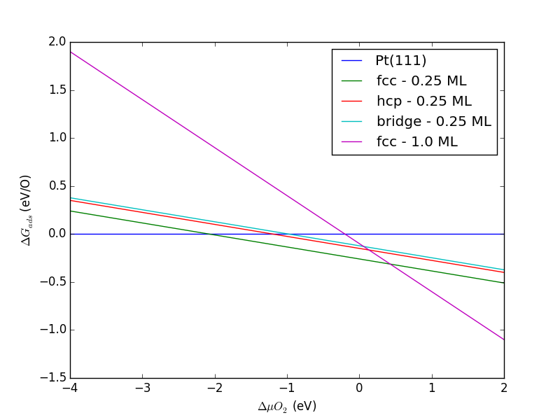
Figure 97: Effect of oxygen chemical potential on the adsorption energy.
6.3 Atomistic therodynamics and multiple reactions
In Inoglu2009188 we considered multiple reactions in an atomistic thermodynamic framework. Let us consider these three reactions of dissociative adsorption of hydrogen and hydrogen disulfide, and consider how to compute the reaction energy for the third reaction.
- \(H_2 + 2* \leftrightharpoons 2H*\)
- \(H_2S + 2* \leftrightharpoons H* + SH*\)
- \(SH* + * \leftrightharpoons S* + H*\)
The reaction energy of interest is \(E_{rxn} = \mu_{S*} + \mu{H*} - \mu{SH*}\) The question is, what are these chemical potentials? We would like them in terms of pressures and temperature, preferrably of molecules that can be approximated as ideal gases. By equilibrium arguments we can say that \(\mu_{H*} = \frac{1}{2} \mu_{H_2}\). It follows that at equilibrium:
\(\mu_{H*} + \mu_{SH*} = \mu_{H_2S}\) and \(\mu_{H*} + \mu_{S*} = \mu_{SH*}\).
From the first equation we have:
\(\mu_{SH*} = \mu_{H_2S} - \frac{1}{2}\mu_{H_2}\)
and from the second equation we have:
\(\mu_{S*} = \mu_{SH*} - \mu_{H*} = \mu_{H_2S} - \mu_{H_2}\).
Thus, the chemical potentials of all these three adsorbed species depend on the chemical potentials of two gas-phase species. The chemical potentials of each of these gases can be defined as:
\(\mu_{gas}(T,p) = E_{gas}(0K) + \delta \mu + kT\ln\left (p/p^0\right )\), as we have defined before, so that only simple DFT calculations are needed to estimate them.
7 Advanced electronic structure methods
7.1 DFT+U
It can be difficult to find the lowest energy solutions with DFT+U. Some strategies for improving this are discussed in PhysRevB.82.195128.
7.1.1 Metal oxide oxidation energies with DFT+U
We will reconsider here the reaction (see Metal oxide oxidation energies) 2 Cu2O + O2 \(\rightleftharpoons\) 4 CuO. We need to compute the energy of each species, now with DFT+U. In PhysRevB.73.195107 they use a U parameter of 4 eV for Cu which gave the best agreement with the experimental value. We will also try that.
7.1.1.1 Cu2O calculation with U=4.0
from vasp import Vasp from ase import Atom, Atoms import logging calc = Vasp('bulk/Cu2O') calc.clone('bulk/Cu2O-U=4.0') calc.set(ldau=True, # turn DFT+U on ldautype=2, # select simplified rotationally invariant option ldau_luj={'Cu':{'L':2, 'U':4.0, 'J':0.0}, 'O':{'L':-1, 'U':0.0, 'J':0.0}}, ldauprint=1, ibrion=-1, #do not rerelax nsw=0) atoms = calc.get_atoms() print(atoms.get_potential_energy()) #print calc
-22.32504781
grep -A 3 "LDA+U is selected, type is set to LDAUTYPE" bulk/Cu2O-U=4.0/OUTCAR
LDA+U is selected, type is set to LDAUTYPE = 2 angular momentum for each species LDAUL = 2 -1 U (eV) for each species LDAUU = 4.0 0.0 J (eV) for each species LDAUJ = 0.0 0.0
7.1.1.2 CuO calculation with U=4.0
from vasp import Vasp from ase import Atom, Atoms calc = Vasp('bulk/CuO') calc.clone('bulk/CuO-U=4.0') calc.set(ldau=True, # turn DFT+U on ldautype=2, # select simplified rotationally invariant option ldau_luj={'Cu':{'L':2, 'U':4.0, 'J':0.0}, 'O':{'L':-1, 'U':0.0, 'J':0.0}}, ldauprint=1, ibrion=-1, #do not rerelax nsw=0) atoms = calc.get_atoms() print(atoms.get_potential_energy())
-16.91708676
7.1.1.3 TODO Reaction energy calculation with DFT+U
from vasp import Vasp calc = Vasp('bulk/Cu2O-U=4.0') atoms = calc.get_atoms() cu2o_energy = atoms.get_potential_energy() / (len(atoms) / 3) calc = Vasp('bulk/CuO-U=4.0') atoms = calc.get_atoms() cuo_energy = atoms.get_potential_energy() / (len(atoms) / 2) # make sure to use the same cutoff energy for the O2 molecule! calc = Vasp('molecules/O2-sp-triplet-400') o2_energy = calc.results['energy'] calc.stop_if(None in [cu2o_energy, cuo_energy, o2_energy]) # don't forget to normalize your total energy to a formula unit. Cu2O # has 3 atoms, so the number of formula units in an atoms is # len(atoms)/3. rxn_energy = 4.0 * cuo_energy - o2_energy - 2.0 * cu2o_energy print('Reaction energy = {0} eV'.format(rxn_energy)) print('Corrected energy = {0} eV'.format(rxn_energy - 1.36))
Reaction energy = 7.36775847 eV Corrected energy = 6.00775847 eV
This is still not in quantitative agreement with the result in PhysRevB.73.195107, which at U=4 eV is about -3.14 eV (estimated from a graph). We have not applied the O\(_2\) correction here yet. In that paper, they apply a constant shift of -1.36 eV per O\(_2\). After we apply that correction, we agree within 0.12 eV, which is pretty good considering we have not checked for convergence.
7.1.1.4 How much does U affect the reaction energy?
It is reasonable to consider how sensitive our results are to the U parameter. We do that here.
from vasp import Vasp for U in [2.0, 4.0, 6.0]: ## Cu2O ######################################## calc = Vasp('bulk/Cu2O') calc.clone('bulk/Cu2O-U={0}'.format(U)) calc.set(ldau=True, # turn DFT+U on ldautype=2, # select simplified rotationally invariant option ldau_luj={'Cu':{'L':2, 'U':U, 'J':0.0}, 'O':{'L':-1, 'U':0.0, 'J':0.0}}, ldauprint=1, ibrion=-1, # do not rerelax nsw=0) atoms1 = calc.get_atoms() cu2o_energy = atoms1.get_potential_energy() / (len(atoms1) / 3) ## CuO ######################################## calc = Vasp('bulk/CuO') calc.clone('bulk/CuO-U={0}'.format(U)) calc.set(ldau=True, # turn DFT+U on ldautype=2, # select simplified rotationally invariant option ldau_luj={'Cu':{'L':2, 'U':U, 'J':0.0}, 'O':{'L':-1, 'U':0.0, 'J':0.0}}, ldauprint=1, ibrion=-1, # do not rerelax nsw=0) atoms2 = calc.get_atoms() cuo_energy = atoms2.get_potential_energy() / (len(atoms2) / 2) ## O2 ######################################## # make sure to use the same cutoff energy for the O2 molecule! calc = Vasp('molecules/O2-sp-triplet-400') atoms = calc.get_atoms() o2_energy = atoms.get_potential_energy() if not None in [cu2o_energy, cuo_energy, o2_energy]: rxn_energy = (4.0 * cuo_energy - o2_energy - 2.0 * cu2o_energy) print 'U = {0} reaction energy = {1}'.format(U, rxn_energy - 1.99)
U = 2.0 reaction energy = 3.32752349 U = 4.0 reaction energy = 5.37775847 U = 6.0 reaction energy = 5.71849513
U = 2.0 reaction energy = -3.876906 U = 4.0 reaction energy = -3.653819 U = 6.0 reaction energy = -3.397605
In PhysRevB.73.195107, the difference in reaction energy from U=2 eV to U=4 eV was about 0.5 eV (estimated from graph). Here we see a range of 0.48 eV from U=2 eV to U=4 eV. Note that for U=0 eV, we had a (corrected reaction energy of -3.96 eV). Overall, the effect of adding U decreases this reaction energy.
This example highlights the challenge of using an approach like DFT+U. On one hand, U has a clear effect of changing the reaction energy. On the other hand, so does the correction factor for the O\(_2\) binding energy. In PhysRevB.73.195107 the authors tried to get the O\(_2\) binding energy correction from oxide calculations where U is not important, so that it is decoupled from the non-cancelling errors that U fixes. See PhysRevB.84.045115 for additional discussion of how to mix GGA and GGA+U results.
In any case, you should be careful to use well converged results to avoid compensating for convergence errors with U.
7.2 Hybrid functionals
7.2.1 FCC Ni DOS
This example is adapted from http://cms.mpi.univie.ac.at/wiki/index.php/FccNi_DOS HSE06
from vasp import Vasp from ase.lattice.cubic import FaceCenteredCubic from ase.dft import DOS atoms = FaceCenteredCubic(directions=[[0, 1, 1], [1, 0, 1], [1, 1, 0]], size=(1, 1, 1), symbol='Ni') atoms[0].magmom = 1 calc = Vasp('bulk/Ni-PBE', ismear=-5, kpts=[5, 5, 5], xc='PBE', ispin=2, lorbit=11, lwave=True, lcharg=True, # store for reuse atoms=atoms) e = atoms.get_potential_energy() print('PBE energy: ',e) calc.stop_if(e is None) dos = DOS(calc, width=0.2) e_pbe = dos.get_energies() d_pbe = dos.get_dos() calc.clone('bulk/Ni-PBE0') calc.set(xc='pbe0') atoms = calc.get_atoms() pbe0_e = atoms.get_potential_energy() if atoms.get_potential_energy() is not None: dos = DOS(calc, width=0.2) e_pbe0 = dos.get_energies() d_pbe0 = dos.get_dos() ## HSE06 calc = Vasp('bulk/Ni-PBE') calc.clone('bulk/Ni-HSE06') calc.set(xc='hse06') atoms = calc.get_atoms() hse06_e = atoms.get_potential_energy() if hse06_e is not None: dos = DOS(calc, width=0.2) e_hse06 = dos.get_energies() d_hse06 = dos.get_dos() calc.stop_if(None in [e, pbe0_e, hse06_e]) import pylab as plt plt.plot(e_pbe, d_pbe, label='PBE') plt.plot(e_pbe0, d_pbe0, label='PBE0') plt.plot(e_hse06, d_hse06, label='HSE06') plt.xlabel('energy [eV]') plt.ylabel('DOS') plt.legend() plt.savefig('images/ni-dos-pbe-pbe0-hse06.png')

Figure 98: Comparison of DOS from GGA, and two hybrid GGAs (PBE0 and HSE06).
7.3 van der Waals forces
Older versions (5.2.11+) implement DFT+D2 JCC-JCC20495 with the LVDW tag.
The vdW-DF klimes-2011-van-waals is accessed with LUSE_VDW. See http://cms.mpi.univie.ac.at/vasp/vasp/vdW_DF_functional_Langreth_Lundqvist_et_al.html for notes on its usage.
In Vasp 5.3+, the IVDW tag turns van der Waal calculations on.
You should review the links below before using these
| IVDW | method |
|---|---|
| 0 | no correction |
| 1 or 10 | DFT-D2 method of Grimme (available as of VASP.5.2.11) |
| 11 | zero damping DFT-D3 method of Grimme (available as of VASP.5.3.4) |
| 12 | DFT-D3 method with Becke-Jonson damping (available as of VASP.5.3.4) |
| 2 or 20 | Tkatchenko-Scheffler method tkatchenko-2009-accur-molec (available as of VASP.5.3.3) |
Van der Waal forces can play a considerable role in binding of aromatic molecules to metal surfaces (ref). Here we consider the effects of these forces on the adsorption energy of benzene on an Au(111) surface.First, we consider the regular PBE functional.
7.3.1 PBE
7.3.1.1 gas-phase benzene
from vasp import Vasp from ase.structure import molecule benzene = molecule('C6H6') benzene.center(vacuum=5) print(Vasp('molecules/benzene-pbe', xc='PBE', encut=350, kpts=[1, 1, 1], ibrion=1, nsw=100, atoms=benzene).potential_energy)
-76.03718564
7.3.1.2 clean slab
# the clean gold slab from vasp import Vasp from ase.lattice.surface import fcc111, add_adsorbate from ase.constraints import FixAtoms atoms = fcc111('Au', size=(3,3,3), vacuum=10) # now we constrain the slab c = FixAtoms(mask=[atom.symbol=='Au' for atom in atoms]) atoms.set_constraint(c) #from ase.visualize import view; view(atoms) print(Vasp('surfaces/Au-pbe', xc='PBE', encut=350, kpts=[4, 4, 1], ibrion=1, nsw=100, atoms=atoms).potential_energy)
-81.22521492
7.3.1.3 benzene on Au(111)
# Benzene on the slab from vasp import Vasp from ase.lattice.surface import fcc111, add_adsorbate from ase.structure import molecule from ase.constraints import FixAtoms atoms = fcc111('Au', size=(3,3,3), vacuum=10) benzene = molecule('C6H6') benzene.translate(-benzene.get_center_of_mass()) # I want the benzene centered on the position in the middle of atoms # 20, 22, 23 and 25 p = (atoms.positions[20] + atoms.positions[22] + atoms.positions[23] + atoms.positions[25])/4.0 + [0.0, 0.0, 3.05] benzene.translate(p) atoms += benzene # now we constrain the slab c = FixAtoms(mask=[atom.symbol=='Au' for atom in atoms]) atoms.set_constraint(c) #from ase.visualize import view; view(atoms) print(Vasp('surfaces/Au-benzene-pbe', xc='PBE', encut=350, kpts=[4, 4, 1], ibrion=1, nsw=100, atoms=atoms).potential_energy)
/home-research/jkitchin/dft-book/surfaces/Au-benzene-pbe submitted: 1400531.gilgamesh.cheme.cmu.edu None
resubmitted
/home-research/jkitchin/dft-book/surfaces/Au-benzene-pbe submitted: 1399668.gilgamesh.cheme.cmu.edu None
from vasp import Vasp e1, e2, e3 = [Vasp(wd).potential_energy for wd in ['surfaces/Au-benzene-pbe', 'surfaces/Au-pbe', 'molecules/benzene-pbe']] print('PBE adsorption energy = {} eV'.format(e1 - e2 - e3))
PBE adsorption energy = 0.071056 eV
This is a very weak energy. It is similar to the result in the reference (0.15 eV), and considerably weaker than the experiment. Next we consider one form of a VDW correction.
7.3.2 DFT-D2
To turn on the van der Waals corrections JCC-JCC20495 we set LVDW to True.
7.3.2.1 gas-phase benzene
from vasp import Vasp from ase.structure import molecule benzene = molecule('C6H6') benzene.center(vacuum=5) print(Vasp('molecules/benzene-pbe-d2', xc='PBE', encut=350, kpts=[1, 1, 1], ibrion=1, nsw=100, lvdw=True, atoms=benzene).potential_energy)
/home-research/jkitchin/dft-book/molecules/benzene-pbe-d2 submitted: 1398397.gilgamesh.cheme.cmu.edu /home-research/jkitchin/dft-book/molecules/benzene-pbe-d2 Queued: 1398397.gilgamesh.cheme.cmu.edu None
7.3.2.2 clean slab
# the clean gold slab from vasp import Vasp from ase.lattice.surface import fcc111, add_adsorbate from ase.constraints import FixAtoms atoms = fcc111('Au', size=(3, 3, 3), vacuum=10) # now we constrain the slab c = FixAtoms(mask=[atom.symbol=='Au' for atom in atoms]) atoms.set_constraint(c) print(Vasp('surfaces/Au-pbe-d2', xc='PBE', encut=350, kpts=[4, 4, 1], ibrion=1, nsw=100, lvdw=True, atoms=atoms).potential_energy)
-106.34723065
7.3.2.3 benzene on Au(111)
# Benzene on the slab from vasp import Vasp from ase.lattice.surface import fcc111, add_adsorbate from ase.structure import molecule from ase.constraints import FixAtoms atoms = fcc111('Au', size=(3,3,3), vacuum=10) benzene = molecule('C6H6') benzene.translate(-benzene.get_center_of_mass()) # I want the benzene centered on the position in the middle of atoms # 20, 22, 23 and 25 p = (atoms.positions[20] + atoms.positions[22] + atoms.positions[23] + atoms.positions[25])/4.0 + [0.0, 0.0, 3.05] benzene.translate(p) atoms += benzene # now we constrain the slab c = FixAtoms(mask=[atom.symbol=='Au' for atom in atoms]) atoms.set_constraint(c) #from ase.visualize import view; view(atoms) print(Vasp('surfaces/Au-benzene-pbe-d2', xc='PBE', encut=350, kpts=[4, 4, 1], ibrion=1, nsw=100, lvdw=True, atoms=atoms).potential_energy)
-184.07495285
from vasp import Vasp e1, e2, e3 = [Vasp(wd).potential_energy for wd in ['surfaces/Au-benzene-pbe-d2', 'surfaces/Au-pbe-d2', 'molecules/benzene-pbe-d2']] print('Adsorption energy = {0:1.2f} eV'.format(e1 - e2 - e3))
Adsorption energy = -1.54 eV
That is significantly more favorable. This is much higher than this reference though (0.56 eV), so there could be some issues with convergence or other computational parameters that should be considered.
7.4 Electron localization function
The electron localization function (ELF) can be used to characterize chemical bonds, e.g. their ionicity/covalency silvi1994. Here we reproduce an example from Ref. silvi1994. We compute and plot the ELF for tetrafluoromethane. The LELF tag turns this on.
# compute ELF for CF4 from vasp import Vasp from ase.structure import molecule from enthought.mayavi import mlab atoms = molecule('CF4') atoms.center(vacuum=5) calc = Vasp('molecules/cf4-elf', encut=350, prec='high', ismear=0, sigma=0.01, xc='PBE', lelf=True, atoms=atoms) x, y, z, elf = calc.get_elf() mlab.contour3d(x, y, z, elf, contours=[0.3]) mlab.savefig('../../images/cf4-elf-3.png') mlab.figure() mlab.contour3d(x, y, z, elf, contours=[0.75]) mlab.savefig('../../images/cf4-elf-75.png')
None

Figure 99: ELF for an isosurface of 0.3 for CF\(_4\). \label{fig:elf1}

Figure 100: ELF for an isosurface of 0.75 for CF\(_4\). \label{fig:elf2}
These images (Figure fig:elf1 and fig:elf2) are basically consistent with those in Reference silvi1994.
7.5 TODO Charge partitioning schemes
7.6 TODO Modeling Core level shifts
We need to setup four calculations. First, we setup the bulk Cu and bulk alloy calculations and let them relax. We use similar unit cells for each one to maximize cancellation of errors.
from vasp import Vasp from ase import Atom, Atoms atoms = Atoms([Atom('Cu', [0.000, 0.000, 0.000]), Atom('Cu', [-1.652, 0.000, 2.039])], cell= [[0.000, -2.039, 2.039], [0.000, 2.039, 2.039], [-3.303, 0.000, 0.000]]) atoms = atoms.repeat((2, 2, 2)) print atoms[0] calc = Vasp('bulk/Cu-cls-0', xc='PBE', encut=350, kpts=[4, 4, 4], ibrion=2, isif=3, nsw=40, atoms=atoms) print(atoms.get_potential_energy())
Atom('Cu', [0.0, 0.0, 0.0], index=0)
-59.98232341
Here, we setup the alloy calculation.
from vasp import Vasp from ase import Atom, Atoms atoms = Atoms([Atom('Cu', [0.000, 0.000, 0.000]), Atom('Pd', [-1.652, 0.000, 2.039])], cell= [[0.000, -2.039, 2.039], [0.000, 2.039, 2.039], [-3.303, 0.000, 0.000]]) atoms = atoms.repeat((2, 2, 2)) calc = Vasp('bulk/CuPd-cls-0', xc='PBE', encut=350, kpts=[4, 4, 4], ibrion=2, isif=3, nsw=40, atoms=atoms) print(atoms.get_potential_energy())
-73.55012322
Next, we have to do the excitation in each structure. For these, we do not relax the structure. We clone the previous results and modify them.
from vasp import VAsp calc = Vasp('bulk/Cu-cls-0') calc.clone('bulk/Cu-cls-1') calc.set(ibrion=None, isif=None, nsw=None, setups=[[0, 'Cu']], # Create separate entry in POTCAR for atom index 0 icorelevel=2, # Perform core level shift calculation clnt=0, # Excite atom index 0 cln=2, # 2p3/2 electron for Cu core level shift cll=1, clz=1) calc.update()
-345.05440951
from vasp import Vasp calc = Vasp('bulk/CuPd-cls-0') calc.clone('bulk/CuPd-cls-1') calc.set(ibrion=None, isif=None, nsw=None, setups=[[0, 'Cu']], # Create separate entry in POTCAR for atom index 0 icorelevel=2, # Perform core level shift calculation clnt=0, # Excite atom index 0 cln=2, # 2p3/2 electron for Cu core level shift cll=1, clz=1) calc.update()
-359.87250408
Finally we calculate the CLS:
from vasp import Vasp alloy_0 = Vasp('bulk/CuPd-cls-0').potential_energy alloy_1 = Vasp('bulk/CuPd-cls-1').potential_energy ref_0 = Vasp('bulk/Cu-cls-0').potential_energy ref_1 = Vasp('bulk/Cu-cls-1').potential_energy CLS = (alloy_1 - alloy_0) - (ref_1 - ref_0) print('CLS = {} eV'.format(CLS))
CLS = -1.2378242 eV
This is a little negative compared to the literature but that could be due to the highly ordered structure we used.
7.7 The BEEF functional in Vasp
In Vasp 5.3.5 it is possible to use the BEEF functional wellendorff-2012-densit.
In Vasp, we just specify xc='beef-bdw' and Vasp takes care of the rest. This includes setting some addtional variables to setup van der Waals and to get the BEEF ensemble energies. Let us consider the dissociation energy of H2.
from vasp import Vasp from ase.structure import molecule import matplotlib.pyplot as plt H2 = molecule('H2') H2.set_cell([8, 8, 8], scale_atoms=False) H2.center() calc = Vasp('molecules/H2-beef', xc='beef-vdw', encut=350, ismear=0, ibrion=2, nsw=10, atoms=H2) eH2 = H2.get_potential_energy() print(eH2)
-7.13332059
Next, we get an H atom.
from vasp import Vasp from ase.structure import molecule H = molecule('H') H.set_cell([8, 8, 8], scale_atoms=False) H.center() calc = Vasp('molecules/H-beef', xc='beef-vdw', encut=350, ismear=0, atoms=H) print(calc.potential_energy)
-0.22476997
Now, the dissociation energy.
from vasp import Vasp print('D = {} eV'.format(2 * Vasp('molecules/H-beef').potential_energy - Vasp('molecules/H2-beef').potential_energy))
D = 6.68378065 eV
-1.15994056 -7.13332059 D = 4.81343947 eV
It doesn't look like we have done much so far. How certain are we of the dissociation energy? Let us consider the ensemble of energies. In the calculation, an ensemble of functionals is used, and each one produces a different energy. We can look at the distribution of these energies to estimate the uncertainty in energy differences. We use the Vasp.get_beefens to get the ensemble. We calculate the uncertainty in our reaction energy by calculating the standard deviation of the appropriately weighted difference of ensembles.
Note that this ensemble represents the contribution just from the functionals, and not all the other contributions. So, the differences in the ensembles only represents that part of the uncertainty
from vasp import Vasp calc = Vasp('molecules/H-beef') ensH = calc.get_beefens() calc = Vasp('molecules/H2-beef') ensH2 = calc.get_beefens() ensD = 2 * ensH - ensH2 print('mean = {} eV'.format(ensD.mean())) print('std = {} eV'.format(ensD.std())) import matplotlib.pyplot as plt plt.hist(ensD, 20) plt.xlabel('Deviation') plt.ylabel('frequency') plt.savefig('images/beef-ens.png')
mean = 0.00661973433552 eV std = 0.278495927893 eV
You can see the mean is nearly zero, suggesting the deviations are symmetrically distributed. The std error is 0.184 eV, which represents about a 68% confidence interval.

7.8 TODO Solvation
See http://vaspsol.mse.ufl.edu/download/, fishman-2013-accur,mathew-2014-implic
You need a specially patched version of Vasp.
First, we run our calculation in vacuum. We need this to get the WAVECAR. The following calculation mimics one of the example calculations in the Vaspsol package. The combination of nsw=0 and ibrion=2 does not make sense, but that is the example. I do not use the npar=4 parameter here.
from vasp import Vasp from ase.structure import molecule atoms = molecule('CO') atoms.center(vacuum=5) calc = Vasp('molecules/CO-vacuum', encut=600, prec='Accurate', ismear=0, sigma=0.05, ibrion=2, nsw=0, ediff=1e-6, atoms=atoms) print(atoms.get_potential_energy()) print(atoms.get_forces()) print('Calculation time: {} seconds'.format(calc.get_elapsed_time()))
-14.81547852 [[ 0. 0. -0.949] [ 0. 0. 0.949]] Calculation time: 257.546 seconds
The forces are high because nsw was set to 0, so only one iteration was run.
Next, we do the solvation calculation. We use the default solvent dielectric constant of water, which is 80.
from vasp import Vasp calc = Vasp('molecules/CO-vacuum') calc.clone('molecules/CO-solvated') calc.set(istart=1, # lsol=True) print(calc.get_atoms().get_potential_energy()) print(calc.get_atoms().get_forces()) print('Calculation time: {} seconds'.format(calc.get_elapsed_time()))
-14.82289079 [[ 0. 0. -1.007] [ 0. 0. 1.007]] Calculation time: 2937.72 seconds
Note these take quite a bit longer to calculate (e.g. 10 times longer)! The energies here are a little different than the vacuum result. To use this energy in an energy difference, you need to make sure the other energies were run with lsol=True also, and the same parameters.
Here is the evidence that we actually ran a calculation with solvation:
grep -A 5 Solvation molecules/CO-solvated/OUTCAR
LSOL = T Solvation Electronic Relaxation 1 ENCUT = 600.0 eV 44.10 Ry 6.64 a.u. 19.97 19.97 22.27*2*pi/ulx,y,z ENINI = 600.0 initial cutoff ENAUG = 644.9 eV augmentation charge cutoff -- Solvation parameters EB_K = 80.000000 relative permittivity of the bulk solvent SIGMA_K = 0.600000 width of the dielectric cavity NC_K = 0.002500 cutoff charge density TAU = 0.000525 cavity surface tension -- Solvation contrib. Ediel = -2.06361062 --------------------------------------------------- free energy TOTEN = -14.82417510 eV energy without entropy = -14.82417510 energy(sigma->0) = -14.82417510 -- Solvation contrib. Ediel = -2.08692034 --------------------------------------------------- free energy TOTEN = -14.82331872 eV energy without entropy = -14.82331872 energy(sigma->0) = -14.82331872 -- Solvation contrib. Ediel = -2.11316669 --------------------------------------------------- free energy TOTEN = -14.82319429 eV energy without entropy = -14.82319429 energy(sigma->0) = -14.82319429 -- Solvation contrib. Ediel = -2.16318931 --------------------------------------------------- free energy TOTEN = -14.82278947 eV energy without entropy = -14.82278947 energy(sigma->0) = -14.82278947 -- Solvation contrib. Ediel = -2.17570687 --------------------------------------------------- free energy TOTEN = -14.82272160 eV energy without entropy = -14.82272160 energy(sigma->0) = -14.82272160 -- Solvation contrib. Ediel = -2.19188585 --------------------------------------------------- free energy TOTEN = -14.82267271 eV energy without entropy = -14.82267271 energy(sigma->0) = -14.82267271 -- Solvation contrib. Ediel = -2.19395757 --------------------------------------------------- free energy TOTEN = -14.82272442 eV energy without entropy = -14.82272442 energy(sigma->0) = -14.82272442 -- Solvation contrib. Ediel = -2.19698448 --------------------------------------------------- free energy TOTEN = -14.82288242 eV energy without entropy = -14.82288242 energy(sigma->0) = -14.82288242 -- Solvation contrib. Ediel = -2.19737905 --------------------------------------------------- free energy TOTEN = -14.82288470 eV energy without entropy = -14.82288470 energy(sigma->0) = -14.82288470 -- Solvation contrib. Ediel = -2.19908571 --------------------------------------------------- free energy TOTEN = -14.82287091 eV energy without entropy = -14.82287091 energy(sigma->0) = -14.82287091 -- Solvation contrib. Ediel = -2.19782575 --------------------------------------------------- free energy TOTEN = -14.82288497 eV energy without entropy = -14.82288497 energy(sigma->0) = -14.82288497 -- Solvation contrib. Ediel = -2.19878993 --------------------------------------------------- free energy TOTEN = -14.82288031 eV energy without entropy = -14.82288031 energy(sigma->0) = -14.82288031 -- Solvation contrib. Ediel = -2.19875585 --------------------------------------------------- free energy TOTEN = -14.82288727 eV energy without entropy = -14.82288727 energy(sigma->0) = -14.82288727 -- Solvation contrib. Ediel = -2.19894718 --------------------------------------------------- free energy TOTEN = -14.82288935 eV energy without entropy = -14.82288935 energy(sigma->0) = -14.82288935 -- Solvation contrib. Ediel = -2.19902584 --------------------------------------------------- free energy TOTEN = -14.82289064 eV energy without entropy = -14.82289064 energy(sigma->0) = -14.82289064 -- Solvation contrib. Ediel = -2.19905589 --------------------------------------------------- free energy TOTEN = -14.82289079 eV energy without entropy = -14.82289079 energy(sigma->0) = -14.82289079
8 Databases in molecular simulations
The continued increase in computing power has enabled us to create massive amounts of computational data. Some of this data is accessible in papers, or at websites, e.g. https://cmr.fysik.dtu.dk/.
Our Vasp module works natively with the ase-database. It is easy to write an entry to a database.
from vasp import Vasp from ase.db import connect calc = Vasp('molecules/simple-co') atoms = calc.get_atoms() print calc.results con = connect('example-1.db') con.write(atoms)
{'magmom': 0, 'stress': array([ 0.0414556 , 0.01094971, 0.01094971, -0. , -0. , -0. ]), 'magmoms': array([ 0., 0.]), 'charges': array([None, None], dtype=object), 'energy': -14.69111507, 'dipole': None, 'forces': array([[ 5.09138064, 0. , 0. ],
[-5.09138064, 0. , 0. ]])}
ase-db example-1.db
id|age|user |formula|calculator| energy| fmax|pbc| volume|charge| mass| smax|magmom 1| 5s|jkitchin|CO |vasp |-14.691|5.091|TTT|216.000| 0.000|28.010|0.041| 0.000 Rows: 1
9 Acknowledgments
I would like to thank Zhongnan Xu for sending me some examples on magnetism. Alan McGaughey and Lars Grabow for sending me some NEB examples. Matt Curnan for examples of phonons.
Many thanks to students in my class who have pointed out typos, places of confusion, etc… These include Bruno Calfa, Matt Curnan, Charlie Janini, Feng Cao, Gamze Gumuslu, Nicholas Chisholm, Prateek Mehta, Qiyang Duan, Shubhaditya Majumdar, Steven Illes, Wee-Liat Ong, Ye Wang, Yichun Sun, Yubing Lu, and Zhongnan Xu.
10 Appendices
10.1 Recipes
10.1.1 Modifying Atoms by deleting atoms
Sometimes it is convenient to create an Atoms object by deleting atoms from an existing object. Here is a recipe to delete all the hydrogen atoms in a molecule. The idea is to make a list of indices of which atoms to delete using list comprehension, then use list deletion to delete those indices.
import textwrap from ase.structure import molecule atoms = molecule('CH3CH2OH') print(atoms) # delete all the hydrogens ind2del = [atom.index for atom in atoms if atom.symbol == 'H'] print('Indices to delete: ', ind2del) del atoms[ind2del] # now print what is left print(atoms)
Atoms(symbols='C2OH6', positions=..., cell=[1.0, 1.0, 1.0], pbc=[False, False, False]) Indices to delete: [3, 4, 5, 6, 7, 8] Atoms(symbols='C2O', positions=..., cell=[1.0, 1.0, 1.0], pbc=[False, False, False])
10.1.2 Advanced tagging
We can label atoms with integer tags to help identify them later, e.g. which atoms are adsorbates, or surface atoms, or near an adsorbate, etc… We might want to refer to those atoms later for electronic structure, geometry analysis, etc…
The method uses integer tags that are powers of two, and then uses binary operators to check for matches. & is a bitwise AND. The key to understanding this is to look at the tags in binary form. The tags [1 2 4 8] can be represented by a binary string:
1 = [1 0 0 0] 2 = [0 1 0 0] 4 = [0 0 1 0] 8 = [0 0 0 1]
So, an atom tagged with 1 and 2 would have a tag of [1 1 0 0] or equivalently in decimal numbers, a tag of 3.
''' adapted from https://listserv.fysik.dtu.dk/pipermail/campos/2004-September/001155.html ''' from ase import * from ase.io import write from ase.lattice.surface import bcc111, add_adsorbate from ase.constraints import FixAtoms # the bcc111 function automatically tags atoms slab = bcc111('W', a=3.92, # W lattice constant size=(2, 2, 6), # 6-layer slab in 2x2 configuration vacuum=10.0) # reset tags to be powers of two so we can use binary math slab.set_tags([2**a.get_tag() for a in slab]) # we had 6 layers, so we create new tags starting at 7 # Note you must use powers of two for all the tags! LAYER1 = 2 ADSORBATE = 2**7 FREE = 2**8 NEARADSORBATE = 2**9 # let us tag LAYER1 atoms to be FREE too. we can address it by LAYER1 or FREE tags = slab.get_tags() for i, tag in enumerate(tags): if tag == LAYER1: tags[i] += FREE slab.set_tags(tags) # create a CO molecule co=Atoms([Atom('C', [0., 0., 0.], tag=ADSORBATE), # we will relax only O Atom('O', [0., 0., 1.1], tag=ADSORBATE + FREE)]) add_adsorbate(slab, co, height=1.2, position='hollow') # the adsorbate is centered between atoms 20, 21 and 22 (use # view(slab)) and over atom12 let us label those atoms, so it is easy to # do electronic structure analysis on them later. tags = slab.get_tags() # len(tags) changed, so we reget them. tags[12] += NEARADSORBATE tags[20] += NEARADSORBATE tags[21] += NEARADSORBATE tags[22] += NEARADSORBATE slab.set_tags(tags) # update the tags slab.set_tags(tags) # extract pieces of the slab based on tags # atoms in the adsorbate ads = slab[(slab.get_tags() & ADSORBATE) == ADSORBATE] # atoms in LAYER1 layer1 = slab[(slab.get_tags() & LAYER1) == LAYER1] # atoms defined as near the adsorbate nearads = slab[(slab.get_tags() & NEARADSORBATE) == NEARADSORBATE] # atoms that are free free = slab[(slab.get_tags() & FREE) == FREE] # atoms that are FREE and part of the ADSORBATE freeads = slab[(slab.get_tags() & FREE+ADSORBATE) == FREE+ADSORBATE] # atoms that are NOT FREE notfree = slab[(slab.get_tags() & FREE) != FREE] constraint = FixAtoms(mask=(slab.get_tags() & FREE) != FREE) slab.set_constraint(constraint) write('images/tagged-bcc111.png', slab, rotation='-90x', show_unit_cell=2) from ase.visualize import view; view(slab)
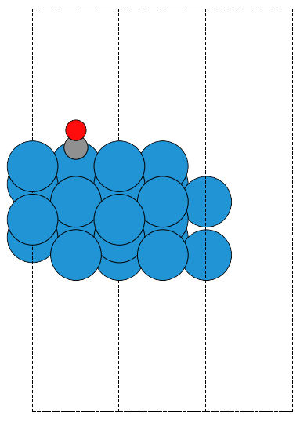
Figure 102: The tagged bcc(111) structure created above. Unfortunately, the frozen atoms do not show up in the figure.
10.1.3 Using units in ase
ase uses a base set of atomic units.These are eV for energy, \(\AA\) for distance, seconds for time, and amu for mass. Other units are defined in terms of those units, and you can easily convert to alternative units by dividing your quantity in atomic units by the units you want.
Not too many units are defined: ['A', 'AUT', 'Ang', 'Angstrom', 'Bohr', 'C', 'Debye', 'GPa', 'Ha', 'Hartree', 'J', 'Pascal', 'Ry', 'Rydberg', 'alpha', 'cm', 'eV', 'erg', 'fs', 'kB', 'kJ', 'kcal', 'kg', 'm', 'meV', 'mol', 'nm', 's', 'second']
It is not that hard to define your own derived units though. Note these are only conversion factors. No units algebra is enforced (i.e. it will be ok to add a m and a kg)!
from ase.units import * d = 1 * Angstrom print(' d = {0} nm'.format(d / nm)) print('1 eV = {0} Hartrees'.format(eV / Hartree)) print('1 eV = {0} Rydbergs'.format(eV / Rydberg)) print('1 eV = {0} kJ/mol'.format(eV / (kJ / mol))) print('1 eV = {0} kcal/mol'.format(eV / (kcal / mol))) print('1 Hartree = {0} kcal/mol'.format(1 * Hartree / (kcal / mol))) print('1 Rydberg = {0} eV'.format(1 * Rydberg / eV)) # derived units minute = 60 * s hour = 60 * minute # convert 10 hours to minutes print('10 hours = {0} minutes'.format(10 * hour / minute))
d = 0.1 nm 1 eV = 0.036749309468 Hartrees 1 eV = 0.0734986189359 Rydbergs 1 eV = 96.485308989 kJ/mol 1 eV = 23.0605423014 kcal/mol 1 Hartree = 627.509540594 kcal/mol 1 Rydberg = 13.6056978278 eV 10 hours = 600.0 minutes
10.1.4 Extracting parts of an array
See http://www.scipy.org/Cookbook/BuildingArrays for examples of making numpy arrays.
When analyzing numerical data you may often want to analyze only a part of the data. For example, suppose you have \(x\) and \(y\) data, (\(x\)=time, \(y\)=signal) and you want to integrate the date between a particular time interval. You can slice a numpy array to extract parts of it. See http://www.scipy.org/Cookbook/Indexing for several examples of this.
In this example we show how to extract the data in an interval. We have \(x\) data in the range of 0 to 6, and \(y\) data that is the \(\cos(x)\). We want to extract the \(x\) and \(y\) data for \(2 < x < 4\), and the corresponding y-data. To do this, we utilize the numpy capability of slicing with a boolean array. We also show some customization of matplotlib.
import numpy as np import matplotlib as mpl # http://matplotlib.sourceforge.net/users/customizing.html mpl.rcParams['legend.numpoints'] = 1 # default is 2 import matplotlib.pyplot as plt x = np.linspace(0, 6, 100) y = np.cos(x) plt.plot(x, y, label='full') ind = (x > 2) & (x < 4) subx = x[ind] suby = y[ind] plt.plot(subx, suby, 'bo', label='sliced') xlabel('x') ylabel('cos(x)') plt.legend(loc='lower right') plt.savefig('images/np-array-slice.png')
None
 The expression \(x>2\) returns an array of booleans (True where the element of \(x\) is greater than 2, and False where it is not) equal in size to \(x\). Similarly \(x<4\) returns a boolean array where \(x\) is less than 4. We take the logical
The expression \(x>2\) returns an array of booleans (True where the element of \(x\) is greater than 2, and False where it is not) equal in size to \(x\). Similarly \(x<4\) returns a boolean array where \(x\) is less than 4. We take the logical and of these two boolean arrays to get another boolean array where both conditions are True (i.e. \(x<2\) and \(x>4\)). This final boolean array is True for the part of the arrays we are interested in, and we can use it to extract the subarrays we want.
10.1.5 Statistics
10.1.5.1 Confidence intervals
scipy has a statistical package available for getting statistical distributions. This is useful for computing confidence intervals using the student-t tables. Here is an example of computing a 95% confidence interval on an average.
import numpy as np from scipy.stats.distributions import t n = 10 # number of measurements dof = n - 1 # degrees of freedom avg_x = 16.1 # average measurement std_x = 0.01 # standard deviation of measurements # Find 95% prediction interval for next measurement alpha = 1.0 - 0.95 pred_interval = t.ppf(1 - alpha / 2., dof) * std_x * np.sqrt(1. + 1. / n) s = ['We are 95% confident the next measurement', ' will be between {0:1.3f} and {1:1.3f}'] print(''.join(s).format(avg_x - pred_interval, avg_x + pred_interval))
We are 95% confident the next measurement will be between 16.076 and 16.124
10.1.6 Curve fitting
10.1.6.1 Linear fitting
# examples of linear curve fitting using least squares import numpy as np xdata = np.array([0., 1., 2., 3., 4., 5., 6.]) ydata = np.array([0.1, 0.81, 4.03, 9.1, 15.99, 24.2, 37.2]) # fit a third order polynomial from pylab import polyfit, plot, xlabel, ylabel, show, legend, savefig pars = polyfit(xdata, ydata, 3) print('pars from polyfit: {0}'.format(pars)) # numpy method returns more data A = np.column_stack([xdata**3, xdata**2, xdata, np.ones(len(xdata), np.float)]) pars_np, resids, rank,s = np.linalg.lstsq(A, ydata) print('pars from np.linalg.lstsq: {0}'.format(pars_np)) ''' we are trying to solve Ax = b for x in the least squares sense. There are more rows in A than elements in x so, we can left multiply each side by A^T, and then solve for x with an inverse. A^TAx = A^Tb x = (A^TA)^-1 A^T b ''' # not as pretty but equivalent! pars_man = np.dot(np.linalg.inv(np.dot(A.T, A)), np.dot(A.T, ydata)) print('pars from linear algebra: {0}'.format(pars_man)) # but, it is easy to fit an exponential function to it! # y = a*exp(x)+b Aexp = np.column_stack([np.exp(xdata), np.ones(len(xdata), np.float)]) pars_exp = np.dot(np.linalg.inv(np.dot(Aexp.T, Aexp)), np.dot(Aexp.T, ydata)) plot(xdata, ydata, 'ro') fity = np.dot(A, pars) plot(xdata, fity, 'k-', label='poly fit') plot(xdata, np.dot(Aexp, pars_exp), 'b-', label='exp fit') xlabel('x') ylabel('y') legend() savefig('images/curve-fit-1.png')
pars from polyfit: [ 0.04861111 0.63440476 0.61365079 -0.08928571] pars from np.linalg.lstsq: [ 0.04861111 0.63440476 0.61365079 -0.08928571] pars from linear algebra: [ 0.04861111 0.63440476 0.61365079 -0.08928571]

Figure 103: Example of linear least-squares curve fitting.
10.1.7 Nonlinear curve fitting
from scipy.optimize import leastsq import numpy as np vols = np.array([13.71, 14.82, 16.0, 17.23, 18.52]) energies = np.array([-56.29, -56.41, -56.46, -56.463, -56.41]) def Murnaghan(parameters, vol): 'From Phys. Rev. B 28, 5480 (1983)' E0 = parameters[0] B0 = parameters[1] BP = parameters[2] V0 = parameters[3] E = (E0 + B0*vol / BP*(((V0 / vol)**BP) / (BP - 1) + 1) - V0 * B0 / (BP - 1.)) return E def objective(pars, y, x): # we will minimize this function err = y - Murnaghan(pars, x) return err x0 = [-56., 0.54, 2., 16.5] # initial guess of parameters plsq = leastsq(objective, x0, args=(energies, vols)) print('Fitted parameters = {0}'.format(plsq[0])) import matplotlib.pyplot as plt plt.plot(vols, energies, 'ro') # plot the fitted curve on top x = np.linspace(min(vols), max(vols), 50) y = Murnaghan(plsq[0], x) plt.plot(x, y, 'k-') plt.xlabel('Volume') plt.ylabel('energy') plt.savefig('images/nonlinear-curve-fitting.png')
Fitted parameters = (array([-56.46839641, 0.57233217, 2.7407944 , 16.55905648]), 1)

Figure 104: Example of least-squares non-linear curve fitting.
See additional examples at \url{http://docs.scipy.org/doc/scipy/reference/tutorial/optimize.html}.
10.1.8 Nonlinear curve fitting by direct least squares minimization
from scipy.optimize import fmin import numpy as np volumes = np.array([13.71, 14.82, 16.0, 17.23, 18.52]) energies = np.array([-56.29, -56.41, -56.46, -56.463, -56.41]) def Murnaghan(parameters, vol): 'From PRB 28,5480 (1983' E0 = parameters[0] B0 = parameters[1] BP = parameters[2] V0 = parameters[3] E = E0 + B0*vol/BP*(((V0/vol)**BP)/(BP-1)+1) - V0*B0/(BP-1.) return E def objective(pars, vol): # we will minimize this function err = energies - Murnaghan(pars, vol) return np.sum(err**2) # we return the summed squared error directly x0 = [-56., 0.54, 2., 16.5] # initial guess of parameters plsq = fmin(objective, x0, args=(volumes,)) # note args is a tuple print('parameters = {0}'.format(plsq)) import matplotlib.pyplot as plt plt.plot(volumes, energies, 'ro') # plot the fitted curve on top x = np.linspace(min(volumes), max(volumes), 50) y = Murnaghan(plsq, x) plt.plot(x, y, 'k-') plt.xlabel(r'Volume ($\AA^3$)') plt.ylabel('Total energy (eV)') plt.savefig('images/nonlinear-fitting-lsq.png')
Optimization terminated successfully.
Current function value: 0.000020
Iterations: 137
Function evaluations: 240
parameters = [-56.46932645 0.59141447 1.9044796 16.59341303]

Figure 105: Fitting a nonlinear function.
10.1.9 Nonlinear curve fitting with confidence intervals
# Nonlinear curve fit with confidence interval import numpy as np from scipy.optimize import curve_fit from scipy.stats.distributions import t ''' fit this equation to data y = c1 exp(-x) + c2*x this is actually a linear regression problem, but it is convenient to use the nonlinear fitting routine because it makes it easy to get confidence intervals. The downside is you need an initial guess. from Matlab b = 4.9671 2.1100 bint = 4.6267 5.3075 1.7671 2.4528 ''' x = np.array([ 0.1, 0.2, 0.3, 0.4, 0.5, 0.6, 0.7, 0.8, 0.9, 1. ]) y = np.array([ 4.70192769, 4.46826356, 4.57021389, 4.29240134, 3.88155125, 3.78382253, 3.65454727, 3.86379487, 4.16428541, 4.06079909]) # this is the function we want to fit to our data def func(x,c0, c1): return c0 * np.exp(-x) + c1*x pars, pcov = curve_fit(func, x, y, p0=[4.96, 2.11]) alpha = 0.05 # 95% confidence interval n = len(y) # number of data points p = len(pars) # number of parameters dof = max(0, n-p) # number of degrees of freedom tval = t.ppf(1.0-alpha/2., dof) # student-t value for the dof and confidence level for i, p,var in zip(range(n), pars, np.diag(pcov)): sigma = var**0.5 print('c{0}: {1} [{2} {3}]'.format(i, p, p - sigma*tval, p + sigma*tval)) import matplotlib.pyplot as plt plt.plot(x,y,'bo ') xfit = np.linspace(0,1) yfit = func(xfit, pars[0], pars[1]) plt.plot(xfit,yfit,'b-') plt.legend(['data','fit'],loc='best') plt.savefig('images/nonlin-fit-ci.png')
c0: 4.96713966439 [4.62674476321 5.30753456558] c1: 2.10995112628 [1.76711622067 2.45278603188]

Figure 106: Nonlinear fit to data.
10.1.10 Interpolation with splines
When you do not know the functional form of data to fit an equation, you can still fit/interpolate with splines.
# use splines to fit and interpolate data from scipy.interpolate import interp1d from scipy.optimize import fmin import numpy as np import matplotlib.pyplot as plt x = np.array([ 0, 1, 2, 3, 4 ]) y = np.array([ 0., 0.308, 0.55, 0.546, 0.44 ]) # create the interpolating function f = interp1d(x, y, kind='cubic', bounds_error=False) # to find the maximum, we minimize the negative of the function. We # cannot just multiply f by -1, so we create a new function here. f2 = interp1d(x, -y, kind='cubic') xmax = fmin(f2, 2.5) xfit = np.linspace(0,4) plt.plot(x,y,'bo') plt.plot(xfit, f(xfit),'r-') plt.plot(xmax, f(xmax),'g*') plt.legend(['data','fit','max'], loc='best', numpoints=1) plt.xlabel('x data') plt.ylabel('y data') plt.title('Max point = ({0:1.2f}, {1:1.2f})'.format(float(xmax), float(f(xmax)))) plt.savefig('images/splinefit.png')

Figure 107: Illustration of a spline fit to data and finding the maximum point.
There are other good examples at http://docs.scipy.org/doc/scipy/reference/tutorial/interpolate.html
10.1.11 Interpolation in 3D
You might ask, why would I need to interpolate in 3D? Suppose you want to plot the charge density along a line through a unit cell that does not correspond to grid points. What are you to do? Interpolate. In contrast to an abundance of methods for 1D and 2D interpolation, I could not find any standard library methods for 3D interpolation.
The principle we will use to develop an interpolation function in 3D is called trilinear interpolation, where we use multiple linear 1D interpolations to compute the value of a point inside a cube. As developed here, this solution only applies to rectangular grids. Later we will generalize the approach. We state the problem as follows:
We know a scalar field inside a unit cell on a regularly spaced grid. In VASP these fields may be the charge density or electrostatic potential for example, and they are known on the fft grids. We want to estimate the value of the scalar field at a point not on the grid, say P=(a,b,c).
Solution: Find the cube that contains the point, and is defined by points P1-P8 as shown in Figure fig:trilinearpinterp.

Figure 108: Trilinear interpolation scheme. \label{fig:trilinearpinterp}
We use 1D interpolation formulas to compute the value of the scalar field at points I1 by interpolating between P1 and P2, and the value of the scalar field at I2 by interpolating between P3 and P4. In these points the only variable changing is x, so it is a simple 1D interpolation. We can then compute the value of the scalar field at I5 by interpolating between I1 and I2. We repeat the process on the top of the cube, to obtain points I3, I4 and I5. Finally, we compute the value of the scalar field at point P by interpolating between points I5 and I6. Note that the point I5 has coordinates (a,b,z1) and I6 is at (a,b,z2), so the final interpolation is again a 1D interpolation along z evaluated at z=c to get the final value of the scalar field at P=(a,b,c).
from vasp import Vasp import numpy as np calc = Vasp('molecules/co-centered') atoms = calc.get_atoms() x, y, z, cd = calc.get_charge_density() def interp3d(x,y,z,cd,xi,yi,zi): ''' interpolate a cubic 3D grid defined by x,y,z,cd at the point (xi,yi,zi) ''' def get_index(value,vector): ''' assumes vector ordered decreasing to increasing. A bisection search would be faster. ''' for i,val in enumerate(vector): if val > value: return i-1 return None xv = x[:,0,0] yv = y[0,:,0] zv = z[0,0,:] a,b,c = xi, yi, zi i = get_index(a,xv) j = get_index(b,yv) k = get_index(c,zv) x1 = x[i,j,k] x2 = x[i+1,j,k] y1 = y[i,j,k] y2 = y[i,j+1,k] z1 = z[i,j,k] z2 = z[i,j,k+1] u1 = cd[i, j, k] u2 = cd[i+1, j, k] u3 = cd[i, j+1, k] u4 = cd[i+1, j+1, k] u5 = cd[i, j, k+1] u6 = cd[i+1, j, k+1] u7 = cd[i, j+1, k+1] u8 = cd[i+1, j+1, k+1] w1 = u2 + (u2-u1)/(x2-x1)*(a-x2) w2 = u4 + (u4-u3)/(x2-x1)*(a-x2) w3 = w2 + (w2-w1)/(y2-y1)*(b-y2) w4 = u5 + (u6-u5)/(x2-x1)*(a-x1) w5 = u7 + (u8-u7)/(x2-x1)*(a-x1) w6 = w4 + (w5-w4)/(y2-y1)*(b-y1) w7 = w3 + (w6-w3)/(z2-z1)*(c-z1) u = w7 return u pos = atoms.get_positions() P1 = np.array([0.0, 5.0, 5.0]) P2 = np.array([9.0, 5.0, 5.0]) npoints = 60 points = [P1 + n*(P2-P1)/npoints for n in range(npoints)] R = [np.linalg.norm(p-P1) for p in points] # interpolated line icd = [interp3d(x,y,z,cd,p[0],p[1],p[2]) for p in points] import matplotlib.pyplot as plt plt.plot(R, icd) cR = np.linalg.norm(pos[0] - P1) oR = np.linalg.norm(pos[1] - P1) plt.plot([cR, cR], [0, 2], 'r-') #markers for where the nuclei are plt.plot([oR, oR], [0, 8], 'r-') plt.xlabel('|R| ($\AA$)') plt.ylabel('Charge density (e/$\AA^3$)') plt.savefig('images/CO-charge-density.png') plt.show()
None

Figure 109: An example of interpolated charge density of a CO molecule along the axis of molecule.
To generalize this to non-cubic cells, we need to do interpolation along arbitrary vectors. The overall strategy is the same:
Find the cell that contains the point (a,b,c). compute the scaled coordinates (sa,sb,sc) of the point inside the cell. Do the interpolations along the basis vectors. Given u1 at P1(x1,y1,z1) and u2 at P2(x2,y2,z2) where (P2-P1) is a cell basis vector a, u = u1 + sa*(u2-u1). There are still 7 interpolations to do.
Below is an example of this code, using a the python library bisect to find the cell.
''' 3D vector interpolation in non-cubic unit cells with vector interpolation. This function should work for any shape unit cell. ''' from vasp import Vasp import bisect import numpy as np from pylab import plot, xlabel, ylabel, savefig, show calc = Vasp('molecules/co-centered') atoms = calc.get_atoms() x,y,z,cd = calc.get_charge_density() def vinterp3d(x, y, z, u, xi, yi, zi): p = np.array([xi, yi, zi]) #1D arrays of cooridinates xv = x[:, 0, 0] yv = y[0, :, 0] zv = z[0, 0, :] # we subtract 1 because bisect tells us where to insert the # element to maintain an ordered list, so we want the index to the # left of that point i = bisect.bisect_right(xv, xi) - 1 j = bisect.bisect_right(yv, yi) - 1 k = bisect.bisect_right(zv, zi) - 1 #points at edge of cell. We only need P1, P2, P3, and P5 P1 = np.array([x[i, j, k], y[i, j, k], z[i,j,k]]) P2 = np.array([x[i + 1, j, k], y[i + 1, j, k], z[i + 1, j, k]]) P3 = np.array([x[i, j + 1, k], y[i, j + 1, k], z[i, j + 1, k]]) P5 = np.array([x[i, j, k + 1], y[i, j, k + 1], z[i, j, k + 1]]) #values of u at edge of cell u1 = u[i, j, k] u2 = u[i + 1, j, k] u3 = u[i, j + 1, k] u4 = u[i + 1, j + 1, k] u5 = u[i, j, k + 1] u6 = u[i + 1, j, k + 1] u7 = u[i, j + 1, k + 1] u8 = u[i + 1, j + 1, k + 1] #cell basis vectors, not the unit cell, but the voxel cell containing the point cbasis = np.array([P2 - P1, P3 - P1, P5 - P1]) #now get interpolated point in terms of the cell basis s = np.dot(np.linalg.inv(cbasis.T), np.array([xi, yi, zi]) - P1) #now s = (sa, sb, sc) which are fractional coordinates in the vector space #next we do the interpolations ui1 = u1 + s[0] * (u2 - u1) ui2 = u3 + s[0] * (u4 - u3) ui3 = u5 + s[0] * (u6 - u5) ui4 = u7 + s[0] * (u8 - u7) ui5 = ui1 + s[1] * (ui2 - ui1) ui6 = ui3 + s[1] * (ui4 - ui3) ui7 = ui5 + s[2] * (ui6 - ui5) return ui7 # compute a line with 60 points in it through these two points P1 = np.array([0.0, 5.0, 5.0]) P2 = np.array([10.0, 5.0, 5.0]) npoints = 60 points = [P1 + n * (P2 - P1) / npoints for n in range(npoints)] # compute the distance along the line R = [np.linalg.norm(p - P1) for p in points] icd = [vinterp3d(x, y, z, cd, p[0], p[1], p[2]) for p in points] plot(R, icd) pos = atoms.get_positions() cR = np.linalg.norm(pos[0] - P1) oR = np.linalg.norm(pos[1] - P1) plot([cR, cR], [0, 2], 'r-') #markers for where the nuclei are plot([oR, oR], [0, 8], 'r-') xlabel('|R| ($\AA$)') ylabel('Charge density (e/$\AA^3$)') savefig('images/interpolated-charge-density.png') show()

Figure 110: Interpolated charge density for a CO molecule.
10.1.12 Reading and writing data
10.1.12.1 Built-in io modules
pylab has two convenient and powerful functions for saving and
reading data, pylab.save and pylab.load.
pylab.save('pdat.dat',(x,y))
and later you can read these arrays back in with:
x,y = pylab.load('pdat.dat')
see also pylab.csv2rec and pylab.loadtxt and pylab.savetxt.
See http://www.scipy.org/Cookbook/InputOutput for examples of numpy io.
10.1.12.2 From scratch
You can save data in many ways from scratch. Basically, just open a file and write data to it. Likewise, any datafile that has some structure to it can probably be read by python.
Let us consider a datafile with these contents:
#header #ignore these lines john, 4 robert, 5 terry, 5
A standard approach would be to read in all the lines, skip the first two lines, split each line (remember each line is a string) at the ',', and append the first field to one variable, and append the second field to another variable as an integer. For example:
v1 = [] v2 = [] lines = open('somefile','r').readlines() for line in lines[2:]: #skip the first two lines fields = line.split(',') v1.append(fields[0]) #names v2.append(int(fields[1])) #number
Writing datafiles is easy too.
v1 = ['john', 'robert', 'terry'] v2 = [4,5,6] f = open('somefile', 'w') #note 'w' = write mode f.write('#header\n') f.write('#ignore these lines\n') for a,b in zip(v1,v2): f.write('{0}, {1}\n'.format(a,b)) f.close()
Some notes:
- opening a file in 'w' mode clobbers any existing file, so do that
with care!
- when writing to a file you have to add a carriage return to each line.
- Manually writing and reading files is pretty tedious. Whenever
possible you should use the built-in methods of numpy or pylab.
10.1.13 Integration
Numerical integrations is easy with the numpy.trapz() method. Use it like this: numpy.trapz(y,x). Note that y comes first. y and x must be the same length.
Integration can be used to calculate average properties of continuous distributions. Suppose for example, we have a density of states, ρ as a function of energy E. We can integrate the density of states to find the total number of states:
\(N_{states} = \int \rho dE\)
or, in python:
Nstates = np.trapz(rho,E)
where rho is a vector that contains the density of states at each energy in the vector E (vector here means a list of numbers).
The average energy of distribution is:
\(E_{avg} = \frac{\int \rho E dE}{\int \rho dE}\)
or, in python:
e_avg = np.trapz(rho*E,E)/np.trapz(rho,E)
These last two examples are the zeroth and first moments of the density of states. The second moment is related to the width squared of the distribution, and the third and fourth moements are related to skewness and kurtosis of the distribution.
The nth moment is defined by:
\(m_n = \frac{\int \rho*E^n dE}{\int \rho dE}\)
To get the second moment of the density of states in python, we use::
n = 2 mom_2 = np.trapz(rho*E**n,E)/np.trapz(rho,E)
10.1.14 Numerical differentiation
numpy has a function called numpy.diff that is similar to the one found in Matlab. It calculates the differences between the elements in your list, and returns a list that is one element shorter, which makes it unsuitable for plotting the derivative of a function.
10.1.14.1 Simple loops to define finite difference derivatives
Loops in python are pretty slow (relatively speaking) but they are usually trivial to understand. In this script we show some simple ways to construct derivative vectors using loops. It is implied in these formulas that the data points are equally spaced.
import numpy as np import matplotlib.pyplot as plt import time ''' These are the brainless way to calculate numerical derivatives. They work well for very smooth data. they are surprisingly fast even up to 10000 points in the vector. ''' x = np.linspace(0.78, 0.79, 100) # 100 points between 0.78 and 0.79 y = np.sin(x) dy_analytical = np.cos(x) ''' let us use a forward difference method: that works up until the last point, where there is not a forward difference to use. there, we use a backward difference. ''' tf1 = time.time() dyf = [0.0]*len(x) for i in range(len(y)-1): dyf[i] = (y[i+1] - y[i])/(x[i+1]-x[i]) # set last element by backwards difference dyf[-1] = (y[-1] - y[-2])/(x[-1] - x[-2]) print(' Forward difference took {0:1.1f} seconds'.format(time.time() - tf1)) # and now a backwards difference tb1 = time.time() dyb = [0.0]*len(x) # set first element by forward difference dyb[0] = (y[0] - y[1])/(x[0] - x[1]) for i in range(1,len(y)): dyb[i] = (y[i] - y[i-1])/(x[i]-x[i-1]) print(' Backward difference took {0:1.1f} seconds'.format(time.time() - tb1)) # and now, a centered formula tc1 = time.time() dyc = [0.0]*len(x) dyc[0] = (y[0] - y[1])/(x[0] - x[1]) for i in range(1,len(y)-1): dyc[i] = (y[i+1] - y[i-1])/(x[i+1]-x[i-1]) dyc[-1] = (y[-1] - y[-2])/(x[-1] - x[-2]) print(' Centered difference took {0:1.1f} seconds'.format(time.time() - tc1)) # the centered formula is the most accurate formula here plt.plot(x,dy_analytical, label='analytical derivative') plt.plot(x,dyf,'--', label='forward') plt.plot(x,dyb,'--', label='backward') plt.plot(x,dyc,'--', label='centered') plt.legend(loc='lower left') plt.savefig('images/simple-diffs.png')
Forward difference took 0.0 seconds Backward difference took 0.0 seconds Centered difference took 0.0 seconds
Obviously, all of these evaluations are very fast.

Figure 111: Comparison of different numerical derivatives.
Loops are usually not great for performance. Numpy offers some vectorized methods that allow us to compute derivatives without loops, although this comes at the mental cost of harder to understand syntax:
import numpy as np import matplotlib.pyplot as plt x = np.linspace(0,2*np.pi,100) y = np.sin(x) dy_analytical = np.cos(x) # we need to specify the size of dy ahead because diff returns #an array of n-1 elements dy = np.zeros(y.shape,np.float) #we know it will be this size dy[0:-1] = np.diff(y)/np.diff(x) dy[-1] = (y[-1] - y[-2])/(x[-1] - x[-2]) ''' calculate dy by center differencing using array slices ''' dy2 = np.zeros(y.shape,np.float) #we know it will be this size dy2[1:-1] = (y[2:] - y[0:-2])/(x[2:] - x[0:-2]) dy2[0] = (y[1]-y[0])/(x[1]-x[0]) dy2[-1] = (y[-1] - y[-2])/(x[-1] - x[-2]) plt.plot(x,y) plt.plot(x,dy_analytical,label='analytical derivative') plt.plot(x,dy,label='forward diff') plt.plot(x,dy2,'k--',lw=2,label='centered diff') plt.legend(loc='lower left') plt.savefig('images/vectorized-diffs.png')
None

Figure 112: Comparison of different numerical derivatives.
If your data is very noisy, you will have a hard time getting good derivatives; derivatives tend to magnify noise. In these cases, you have to employ smoothing techniques, either implicitly by using a multipoint derivative formula, or explicitly by smoothing the data yourself, or taking the derivative of a function that has been fit to the data in the neighborhood you are interested in.
Here is an example of a 4-point centered difference of some noisy data:
import numpy as np import matplotlib.pyplot as plt x = np.linspace(0,2*np.pi,100) y = np.sin(x) + 0.1*np.random.random(size=x.shape) dy_analytical = np.cos(x) #2-point formula dyf = [0.0]*len(x) for i in range(len(y)-1): dyf[i] = (y[i+1] - y[i])/(x[i+1]-x[i]) #set last element by backwards difference dyf[-1] = (y[-1] - y[-2])/(x[-1] - x[-2]) ''' calculate dy by 4-point center differencing using array slices \frac{y[i-2] - 8y[i-1] + 8[i+1] - y[i+2]}{12h} y[0] and y[1] must be defined by lower order methods and y[-1] and y[-2] must be defined by lower order methods ''' dy = np.zeros(y.shape,np.float) #we know it will be this size h = x[1]-x[0] #this assumes the points are evenely spaced! dy[2:-2] = (y[0:-4] - 8*y[1:-3] + 8*y[3:-1] - y[4:])/(12.*h) dy[0] = (y[1]-y[0])/(x[1]-x[0]) dy[1] = (y[2]-y[1])/(x[2]-x[1]) dy[-2] = (y[-2] - y[-3])/(x[-2] - x[-3]) dy[-1] = (y[-1] - y[-2])/(x[-1] - x[-2]) plt.plot(x,y) plt.plot(x,dy_analytical,label='analytical derivative') plt.plot(x,dyf,'r-',label='2pt-forward diff') plt.plot(x,dy,'k--',lw=2,label='4pt-centered diff') plt.legend(loc='lower left') plt.savefig('images/multipt-diff.png')
None

Figure 113: Comparison of 2 point and 4 point numerical derivatives.
The derivative is still noisy, but the four-point derivative is a little better than the two-pt formula.
10.1.14.2 FFT derivatives
It is possible to perform derivatives using fast fourier transforms (FFT):
import numpy as np import matplotlib.pyplot as plt N = 101 #number of points L = 2*np.pi #interval of data x = np.arange(0.0,L,L/float(N)) #this does not include the endpoint #add some random noise y = np.sin(x) + 0.05*np.random.random(size=x.shape) dy_analytical = np.cos(x) ''' http://sci.tech-archive.net/Archive/sci.math/2008-05/msg00401.html you can use fft to calculate derivatives! ''' if N % 2 == 0: k = np.asarray(range(0,N/2)+[0] + range(-N/2+1,0)) else: k = np.asarray(range(0,(N-1)/2) +[0] + range(-(N-1)/2,0)) k *= 2*np.pi/L fd = np.fft.ifft(1.j*k * np.fft.fft(y)) plt.plot(x,y) plt.plot(x,dy_analytical,label='analytical der') plt.plot(x,fd,label='fft der') plt.legend(loc='lower left') plt.savefig('images/fft-der.png')

Figure 114: Comparison of FFT numerical derivatives.
This example does not show any major advantage in the quality of the derivative, and it is almost certain I would never remember how to do this off the top of my head.
10.1.15 NetCDF files
NetCDF is a binary, but cross-platform structured data format. The input file and output file for Dacapo is the NetCDF format. On creating a NetCDF file you must define the dimensions and variables before you can store data in them. You can create and read NetCDF files in python using one of the following modules:
Scientific.IO.NetCDF (http://dirac.cnrs-orleans.fr/plone/software/scientificpython/)
netCDF3 (http://netcdf4-python.googlecode.com/svn/trunk/docs/netCDF3-module.html)
pycdf (http://pysclint.sourceforge.net/pycdf/) this is a very low level module modelled after the C-api. I am not sure it is completely bug-free (I have problems with character variables)
10.1.16 Python modules
The comma separated values (csv) module in python allows you to easily create datafiles:
csv writing:
import numpy as np x = np.linspace(0.0,6.0,100) y = np.cos(x) import csv writer = csv.writer(open("some.csv", "w")) writer.writerows(zip(x,y))
It is not so easy to read the data back in though because the module only returns strings, so you must turn the strings back into floats (or whatever other format they should be).
csv reading:
import csv reader = csv.reader(open("some.csv",'r'),delimiter=',') x,y = [],[] for row in reader: #csv returns strings that must be cast as floats a,b = [float(z) for z in row] x.append(a) y.append(b)
This is almost as much work as manually reading the data though. The
module is more powerful than I have shown here, so one day checkout
pydoc csv.
The pickle and shelve modules of python also offer some data storage functionality. Check them out some day too.
10.1.17 Writing and reading Excel files
10.1.17.1 Writing Excel files
It is sometimes convenient to do some analysis in Excel. We can create Excel files in python with xlwt. Google this module if you need to do this a lot.
import numpy as np import xlwt wbk = xlwt.Workbook() sheet = wbk.add_sheet('sheet 1') volumes = np.array([13.72, 14.83, 16.0, 17.23, 18.52]) energies = np.array([-56.29, -56.41, -56.46, -56.46, -56.42]) for i, pair in enumerate(zip(volumes, energies)): vol = pair[0] energy = pair[1] sheet.write(i,0,vol) sheet.write(i,1,energy) wbk.save('images/test-write.xls')
10.1.17.2 Reading Excel files
We can also read Excel files (even on Linux!) with xlrd. Let us read in the data we just wrote. We wrote 5 volumes to column 0, and 5 energies to column 1.
import xlrd wbk = xlrd.open_workbook('images/test-write.xls') sheet1 = wbk.sheet_by_name('sheet 1') print(sheet1.col_values(0)) print(sheet1.col_values(1))
[13.72, 14.83, 16.0, 17.23, 18.52] [-56.29, -56.41, -56.46, -56.46, -56.42]
10.1.18 TODO making movies
- using animate
- using swftools (png2swf, pdf2swf)
#http://wiki.swftools.org/wiki/Main_Page#SWF_Tools_0.9.2_.28_Current_Stable_Version_.29_Documentation
10.2 Computational geometry
10.2.1 Changing coordinate systems
Let A, B, C be the unit cell vectors
\begin{eqnarray} A = A1 x + A2 y + A3 z \\ B = B1 x + B2 y + B3 z \\ C = C1 x + C2 y + C3 z \end{eqnarray}and we want to find the vector \([s1, s2, s3]\) so that \(P = s1 A + s2 B + s3 C \)
if we expand this, we get:
\begin{align*} &s1 A1 x + s1 A2 y + s1 A3 z \\ &+ s2 B1 x + s2 B2 y + s2 B3 z \\ &+ s3 C1 x + s3 C2 y + s3 C3 z = p1 x + p2 y + p3 z \end{align*}If we now match coefficients on x, y, and z, we can write a set of linear equations as:
\begin{equation} \left [ \begin{array}{ccc} A1 & B1 & C1 \\ A2 & B2 & C2 \\ A3 & B3 & C3 \end{array}\right] \left [ \begin{array}{c} s1 \\ s2 \\ s3 \end{array}\right] = \left [\begin{array}{c} p1 \\ p2 \\ p3 \end{array}\right] \end{equation}or, in standard form:
\(A^T s = p\)
and we need to solve for s as:
\(s = (A^T)^{-1} \cdot p\)
p must be a column vector, so we will have to transpose the positions provided by the atoms class, and then transpose the final result to get the positions back into row-vector form:
\(s = ((A^T)^{-1} p^T)^T\)
Here we implement that in code:
from ase.lattice.surface import fcc111 import numpy as np np.set_printoptions(precision=3,suppress=True) slab = fcc111('Pd', a=3.92, # Pd lattice constant size=(2,2,3), #3-layer slab in 1x1 configuration vacuum=10.0) pos = slab.get_positions() #these positions use x,y,z vectors as a basis # we want to see the atoms in terms of the unitcell vectors newbasis = slab.get_cell() s = np.dot(np.linalg.inv(newbasis.T),pos.T).T print('Coordinates in new basis are: \n',s) # what we just did is equivalent to the following atoms method print('Scaled coordinates from ase are: \n',slab.get_scaled_positions())
Coordinates in new basis are: [[ 0.167 0.167 0.408] [ 0.667 0.167 0.408] [ 0.167 0.667 0.408] [ 0.667 0.667 0.408] [-0.167 0.333 0.5 ] [ 0.333 0.333 0.5 ] [-0.167 0.833 0.5 ] [ 0.333 0.833 0.5 ] [ 0. 0. 0.592] [ 0.5 0. 0.592] [ 0. 0.5 0.592] [ 0.5 0.5 0.592]] Scaled coordinates from ase are: [[ 0.167 0.167 0.408] [ 0.667 0.167 0.408] [ 0.167 0.667 0.408] [ 0.667 0.667 0.408] [ 0.833 0.333 0.5 ] [ 0.333 0.333 0.5 ] [ 0.833 0.833 0.5 ] [ 0.333 0.833 0.5 ] [ 0. 0. 0.592] [ 0.5 0. 0.592] [ 0. 0.5 0.592] [ 0.5 0.5 0.592]]
The method shown above is general to all basis set transformations. We examine another case next. Sometimes it is nice if all the coordinates are integers. For this example, we will use the bcc primitive lattice vectors and express the positions of each atom in terms of them. By definition each atomic position should be an integer combination of the primitive lattice vectors (before relaxation, and assuming one atom is at the origin, and the unit cell is aligned with the primitive basis!)
from ase.lattice.cubic import BodyCenteredCubic import numpy as np bulk = BodyCenteredCubic(directions=[[1,0,0], [0,1,0], [0,0,1]], size=(2,2,2), latticeconstant=2.87, symbol='Fe') newbasis = 2.87*np.array([[-0.5, 0.5, 0.5], [0.5, -0.5, 0.5], [0.5, 0.5, -0.5]]) pos = bulk.get_positions() s = np.dot(np.linalg.inv(newbasis.T), pos.T).T print('atom positions in primitive basis') print(s) # let us see the unit cell in terms of the primitive basis too print('unit cell in terms of the primitive basis') print(np.dot(np.linalg.inv(newbasis.T), bulk.get_cell().T).T)
atom positions in primitive basis [[ 0. 0. 0.] [ 1. 1. 1.] [ 0. 1. 1.] [ 1. 2. 2.] [ 1. 0. 1.] [ 2. 1. 2.] [ 1. 1. 2.] [ 2. 2. 3.] [ 1. 1. 0.] [ 2. 2. 1.] [ 1. 2. 1.] [ 2. 3. 2.] [ 2. 1. 1.] [ 3. 2. 2.] [ 2. 2. 2.] [ 3. 3. 3.]] unit cell in terms of the primitive basis [[ 0. 2. 2.] [ 2. 0. 2.] [ 2. 2. 0.]]
10.2.2 Simple distances, angles
Scientific.Geometry contains several useful functions for
performing vector algebra including computing lengths and angles.
import numpy as np from Scientific.Geometry import Vector A = Vector([1, 1, 1]) # Scientfic a = np.array([1, 1, 1]) # numpy B = Vector([0.0, 1.0, 0.0]) print('|A| = ', A.length()) # Scientific Python way print('|a| = ', np.sum(a**2)**0.5) # numpy way print('|a| = ', np.linalg.norm(a)) # numpy way 2 print('ScientificPython angle = ', A.angle(B)) # in radians print ('numpy angle = {}', np.arccos(np.dot(a / np.linalg.norm(a), B / np.linalg.norm(B)))) # cross products print('Scientific A .cross. B = ', A.cross(B)) # you can use Vectors in numpy print('numpy A .cross. B = ', np.cross(A,B))
('|A| = ', 1.7320508075688772)
('|a| = ', 1.7320508075688772)
('|a| = ', 1.7320508075688772)
('ScientificPython angle = ', 0.9553166181245092)
('numpy angle = {}', 0.95531661812450919)
('Scientific A .cross. B = ', Vector(-1.000000,0.000000,1.000000))
('numpy A .cross. B = ', array([-1., 0., 1.]))
10.2.3 Unit cell properties
The volume of a unit cell can be calculated from \(V = (a_1 \times a_2) \cdot a_3\) where \(a_1\), \(a_2\) and \(a_3\) are the unit cell vectors. It is more convenient, however, to simply evaluate that equation as the determinant of the matrix describing the unit cell, where each row of the matrix is a unit cell vector.
\(V = |\det(ucell)|\)
Why do we need to take the absolute value? The sign of the determinant depends on the handedness of the order of the unit cell vectors. If they are right-handed the determinant will be positive, and if they are left-handed the determinant will be negative. Switching any two rows will change the sign of the determinant and the handedness. ase implements a convenient function to get the volume of an Atoms object: ase.Atoms.get_volume.
Here are three equivalent ways to compute the unit cell volume.
import numpy as np a1 = [2, 0, 0] a2 = [1, 1, 0] a3 = [0, 0, 10] uc = np.array([a1, a2, a3]) print('V = {0} ang^3 from dot/cross'.format(np.dot(np.cross(a1,a2),a3))) print('V = {0} ang^3 from det'.format(np.linalg.det(uc))) from ase import Atoms atoms = Atoms([],cell=uc) #empty list of atoms print('V = {0} ang^3 from get_volume'.format(atoms.get_volume()))
V = 20 ang^3 from dot/cross V = 20.0 ang^3 from det V = 20.0 ang^3 from get_volume
10.2.4 d-spacing
If you like to set up the vacuum in your slab calculations in terms of equivalent layers of atoms, you need to calculate the d-spacing (which is the spacing between parallel planes of atoms) for the hkl plane you are using. The script below shows several ways to accomplish that.
import numpy as np from ase.lattice.cubic import FaceCenteredCubic ag = FaceCenteredCubic(directions=[[1, 0, 0], [0, 1, 0], [0, 0, 1]], size=(1, 1, 1), symbol='Ag', latticeconstant=4.0) # these are the reciprocal lattice vectors b1, b2, b3 = np.linalg.inv(ag.get_cell()) ''' g(111) = 1*b1 + 1*b2 + 1*b3 and |g(111)| = 1/d_111 ''' h,k,l = (1, 1, 1) d = 1./np.linalg.norm(h*b1 + k*b2 + l*b3) print('d_111 spacing (method 1) = {0:1.3f} Angstroms'.format(d)) # method #2 hkl = np.array([h, k, l]) G = np.array([b1, b2, b3]) # reciprocal unit cell ''' Gstar is usually defined as this matrix of dot products: Gstar = np.array([[dot(b1,b1), dot(b1,b2), dot(b1,b3)], [dot(b1,b2), dot(b2,b2), dot(b2,b3)], [dot(b1,b3), dot(b2,b3), dot(b3,b3)]]) but I prefer the notationally more compact: Gstar = G .dot. transpose(G) then, 1/d_hkl^2 = hkl .dot. Gstar .dot. hkl ''' Gstar = np.dot(G, G.T) id2 = np.dot(hkl, np.dot(Gstar, hkl)) print('d_111 spacing (method 2) =',np.sqrt(1 / id2)) # http://books.google.com/books?id=nJHSqEseuIUC&lpg=PA118&ots=YA9TBldoVH # &dq=reciprocal%20metric%20tensor&pg=PA119#v=onepage # &q=reciprocal%20metric%20tensor&f=false '''Finally, many text books on crystallography use long algebraic formulas for computing the d-spacing with sin and cos, vector lengths, and angles. Below we compute these and use them in the general triclinic structure formula which applies to all the structures. ''' from Scientific.Geometry import Vector import math unitcell = ag.get_cell() A = Vector(unitcell[0]) B = Vector(unitcell[1]) C = Vector(unitcell[2]) # lengths of the vectors a = A.length()#*angstroms2bohr b = B.length()#*angstroms2bohr c = C.length()#*angstroms2bohr # angles between the vectors in radians alpha = B.angle(C) beta = A.angle(C) gamma = A.angle(B) print('') print('a b c alpha beta gamma') print('{0:1.3f} {1:1.3f} {2:1.3f} {3:1.3f} {4:1.3f} {5:1.3f}\n'.format(a,b,c, alpha,beta,gamma)) h, k, l = (1, 1, 1) from math import sin, cos id2 = ((h**2 / a**2 * sin(alpha)**2 + k**2 / b**2 * sin(beta)**2 + l**2 / c**2 * sin(gamma)**2 + 2 * k * l / b / c * (cos(beta) * cos(gamma) - cos(alpha)) + 2 * h * l / a / c * (cos(alpha) * cos(gamma) - cos(beta)) + 2 * h * k / a / b * (cos(alpha) * cos(beta) - cos(gamma))) / (1 - cos(alpha)**2 - cos(beta)**2 - cos(gamma)**2 + 2 * cos(alpha) * cos(beta) * cos(gamma))) d = 1 / math.sqrt(id2) print('d_111 spacing (method 3) = {0}'.format(d))
d_111 spacing (method 1) = 2.309 Angstroms
('d_111 spacing (method 2) =', 2.3094010767585029)
a b c alpha beta gamma
4.000 4.000 4.000 1.571 1.571 1.571
d_111 spacing (method 3) = 2.30940107676
10.3 Equations of State
The module ase.utils.eos uses a simple polynomial equation of state to find bulk unit cell equilibrium volumes and bulk modulus. There are several other choices you could use that are more standard in the literature. Here we summarize them and provide references to the relevant literature. In each of these cases we show equations for the energy as a function of volume, although sometimes the volume is transformed or normalized.
10.3.1 Birch-Murnaghan
This is probably the most common equation of state used most often, and is a modification of the original Murnaghan EOS described below. A current description of the equation is in reference PhysRevB.70.224107. You can also find the equations for the Vinet and Poirier-Tarantola equations of state in that reference.
Birch-Murnaghan EOS:
\(E(\eta) = E_0 + \frac{9B_0 V_0}{16}(\eta^2-1)^2(6+B'_0(\eta^2-1)-4\eta^2)\)
where \(\eta=(V/V_0)^{1/3}\), \(B_0\) and \(B'_0\) are the bulk modulus and its pressure derivative at the equilibrium volume \(V_0\). You may find other derivations of this equation in the literature too.
Two other equations of state in that reference are the Vinet EOS:
\(E(\eta) = E_0 + \frac{2 B_0 V_0}{(B'_0-1)^2}(2-(5+3B'_0 (\eta-1) e^{-3(B'_0-1)(\eta-1)/2})\)
and the Poirier-Tarantola EOS:
\(E(\varrho) = E_0 + \frac{B_0 V_0 \varrho^2}{6}(3 + \varrho (B'_0-2))\)
with \(\varrho=-3 \ln(\eta)\).
10.3.2 Murnaghan
The equation most often used in the Murnaghan Murnaghan1944 equation of state is described in PhysRevB.28.5480.
\(E = E_T+\frac{B_0 V}{B'_0}\left[\frac{(V_0/V)^{B'_0}}{B'_0-1}+1\right]-\frac{V_0 B_0}{B'_0-1}\)
where \(V\) is the volume, \(B_0\) and \(B'_0\) are the bulk modulus and its pressure derivative at the equilibrium volume \(V_0\). All of these are parameters that are fitted to energy vs. unit cell volume (\(V\)) data. When fitting data to this equation a guess of 2-4 for \(B'_0\) is usually a good start.
10.3.3 Birch
The original Birch equation Birch is:
\(E = E_0 + \frac{9}{8} B_0 V_0 \left(\left(\frac{V_0}{V}\right)^{\frac{2}{3}}-1\right)^2+\frac{9}{16} B_0 V_0 (B'_0-4)\left(\left(\frac{V}{V_0}\right)^{2/3}-1\right)^3\)
10.3.4 The Anton-Schmidt Equation of state Mayer200323
\(E(V) = E_\infty + \frac{B V_0}{n+1}\left(\frac{V}{V_0}\right)^{n+1} \left( \ln{\frac{V}{V_0}} - \frac{1}{n+1}\right)\)
where \(E_\infty\) corresponds to the energy at infinite separation, although the model they use to derive this equation breaks down at large separations so this is usually not a good estimate of the cohesive energy. \(n\) is typically about -2.
10.3.5 Fitting data to these equations of state
To use these equations of state to find the equilibrium cell volume and bulk modulus we need a set of calculations that give us the energy of the unit cell as a function of the cell volume. We then fit that data to one of the above equations to extract the parameters we want. All of these equations of state are non-linear in the cell volume, which means you have to provide some initial guesses for the parameters.
Here we describe a strategy for getting some estimates of the parameters using a linear least squares fitting of a parabola to the data to estimate \(E_0\), \(V_0\), \(B\) and \(B'_0\) which are used as initial guess for a non-linear least squares fit of the equation of state to the data.
The following example illustrates one approach to this problem for the Murnaghan equation of state:
'''Example of fitting the Birch-Murnaghan EOS to data''' import numpy as np import matplotlib.pyplot as plt from scipy.optimize import leastsq # raw data from 2.2.3-al-analyze-eos.py v = np.array([13.72, 14.83, 16.0, 17.23, 18.52]) e = np.array([-56.29, -56.41, -56.46, -56.46, -56.42]) #make a vector to evaluate fits on with a lot of points so it looks smooth vfit = np.linspace(min(v),max(v),100) ### fit a parabola to the data # y = ax^2 + bx + c a,b,c = np.polyfit(v,e,2) #this is from pylab ''' the parabola does not fit the data very well, but we can use it to get some analytical guesses for other parameters. V0 = minimum energy volume, or where dE/dV=0 E = aV^2 + bV + c dE/dV = 2aV + b = 0 V0 = -b/2a E0 is the minimum energy, which is: E0 = aV0^2 + bV0 + c B is equal to V0*d^2E/dV^2, which is just 2a*V0 and from experience we know Bprime_0 is usually a small number like 4 ''' #now here are our initial guesses. v0 = -b/(2*a) e0 = a*v0**2 + b*v0 + c b0 = 2*a*v0 bP = 4 #now we have to create the equation of state function def Murnaghan(parameters,vol): ''' given a vector of parameters and volumes, return a vector of energies. equation From PRB 28,5480 (1983) ''' E0 = parameters[0] B0 = parameters[1] BP = parameters[2] V0 = parameters[3] E = E0 + B0*vol/BP*(((V0/vol)**BP)/(BP-1)+1) - V0*B0/(BP-1.) return E # and we define an objective function that will be minimized def objective(pars,y,x): #we will minimize this function err = y - Murnaghan(pars,x) return err x0 = [e0, b0, bP, v0] #initial guesses in the same order used in the Murnaghan function murnpars, ier = leastsq(objective, x0, args=(e,v)) #this is from scipy #now we make a figure summarizing the results plt.plot(v,e,'ro') plt.plot(vfit, a*vfit**2 + b*vfit + c,'--',label='parabolic fit') plt.plot(vfit, Murnaghan(murnpars,vfit), label='Murnaghan fit') plt.xlabel('Volume ($\AA^3$)') plt.ylabel('Energy (eV)') plt.legend(loc='best') #add some text to the figure in figure coordinates ax = plt.gca() plt.text(0.4, 0.5, 'Min volume = {0:1.2f} $\AA^3$'.format(murnpars[3]), transform = ax.transAxes) plt.text(0.4, 0.4, 'Bulk modulus = {0:1.2f} eV/$\AA^3$ = {1:1.2f} GPa'.format(murnpars[1], murnpars[1]*160.21773), transform = ax.transAxes) plt.savefig('images/a-eos.png') np.set_printoptions(precision=3) print('initial guesses : ', np.array(x0)) # array for easy printing print('fitted parameters: ', murnpars)
initial guesses : [-56.472 0.631 4. 16.79 ] fitted parameters: [-56.466 0.49 4.753 16.573]
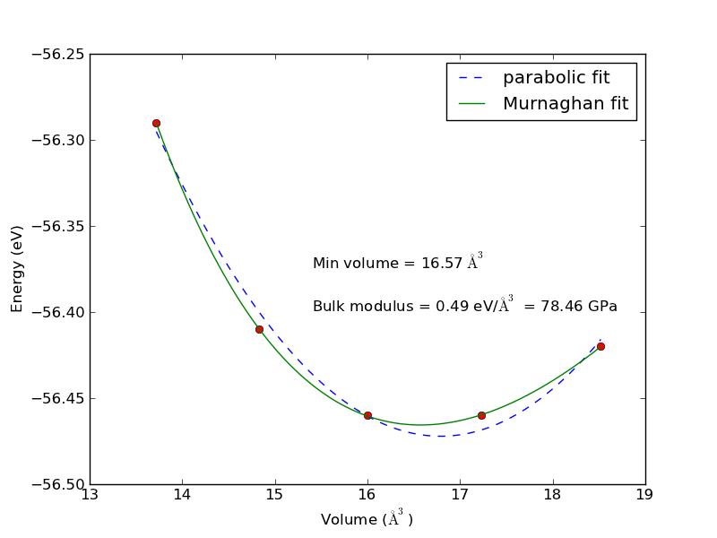
Figure 115: Fitted equation of state for bulk data. The initial fitted parabola is shown to illustrate how it is useful for making initial guesses of the minimum and bulk modulus.
You can see the Murnaghan equation of state fits the data better than the parabola.
Here is a comparison of the initial guesses and final parameters. You
can see our guesses from the parabola were actually pretty good, and
are the main reason we converged to a solution. If you try other
guesses you will probably find the scipy.optimize.leastsq function
does not converge.
10.4 Miscellaneous vasp/VASP tips
10.4.1 Using a special setup
VASP provides special setups for some elements. The following guidelines tell you what is in a potential:
No extension means the standard potential. The following extensions mean:
| extension | |
|---|---|
| _h | means the potential is harder than the standard (i.e. needs a higher cutoff energy) |
| _s | means the potential is softer than the standard (i.e. needs a lower cutoff energy) |
| _sv | \(s\) and \(p\) semi-core states are treated as valence states |
| _pv | \(p\) semi-core states are treated as valence states |
| _d | \(d\) semi-core states are treated as valence states |
Here are some links to information in the VASP manual for the setups.
Here we show how to select the O_sv potential in a calculation.
from ase import Atoms, Atom from vasp import Vasp atoms = Atoms([Atom('O',[5, 5, 5], magmom=1)], cell=(6, 6, 6)) calc = Vasp('molecules/O_s', encut=300, xc='PBE', ispin=2, ismear=0, sigma=0.001, setups=[['O', '_s']], # specifies O_s potential atoms=atoms) print calc.potential_energy
-1.50564364
How do you know you got the right special setup? We can look at the first line of the POTCAR file in the calculation directory to see.
head -n 1 molecules/O_sv/POTCAR
PAW_PBE O_sv 05Jul2007
This shows we indeed used the O_sv setup.
10.4.2 TODO Running vasp in parallel
vasp is smart. If you ask for more than one node, it will automatically try to run in parallel. On our cluster you have to use cores, i.e. (processor per node) not nodes due to a limitation in how vasp is compiled.
from vasp import Vasp from vasp.vasprc import VASPRC VASPRC['queue.ppn']=4 from ase import Atom, Atoms atoms = Atoms([Atom('O',[5, 5, 5], magmom=1)], cell=(6, 6, 6)) calc = Vasp('molecules/O_s-4nodes', encut=300, xc='PBE', ispin=2, ismear=0, sigma=0.001, setups=[['O', '_s']], # specifies O_s potential atoms=atoms) print calc.potential_energy
How do you know it ran on four nodes?
head molecules/O_s-4nodes/OUTCAR
vasp.5.3.5 31Mar14 (build Aug 04 2015 13:07:31) complex executed on LinuxIFC date 2016.05.11 15:58:14 running on 4 total cores distrk: each k-point on 4 cores, 1 groups distr: one band on NCORES_PER_BAND= 1 cores, 4 groups --------------------------------------------------------------------------------------------------------
10.4.3 Running multiple instances of vasp in parallel
vasp was designed to enable asynchronous, parallel running processes through a queuing system. This is ideal for submitting large numbers of independent calculations in one script. The design uses exceptions to exit the script if the results are not available for subsequent analysis. The design expects that you run the script often, and the results are analyzed only when they are finally available.
Sometimes it is convenient to run a set of calculations and then wait for them to finish so that a second set of calculations that depend on the first results can be run. In this scenario, it is inconvenient to have to rerun your script again after the first set of calculations is done. The challenge is how to tell the computer to run a set of calculations in parallel, and wait for the calculations to finish. This can be achieved using the multiprocessing module in python.
The principle idea is to set up the calculations you want to run, and use multiprocessing to handle running them and waiting for you. To do this, you must instruct vasp to use a "run mode", and construct a script with a function that runs a calculation, and a section that only runs in the "main" script.
import multiprocessing from vasp import Vasp from ase import Atom, Atoms from ase.utils.eos import EquationOfState import numpy as np # this is the function that runs a calculation def do_calculation(calc): """function to run a calculation through multiprocessing.""" atoms = calc.get_atoms() e = atoms.get_potential_energy() v = atoms.get_volume() return v, e # this only runs in the main script, not in processes on other cores if __name__ == '__main__': NCORES = 6 # number of cores to run processes on # setup an atoms object a = 3.6 atoms = Atoms([Atom('Cu',(0, 0, 0))], cell=0.5 * a * np.array([[1.0, 1.0, 0.0], [0.0, 1.0, 1.0], [1.0, 0.0, 1.0]])) v0 = atoms.get_volume() # Step 1 COUNTER = 0 calculators = [] # list of calculators to be run factors = [-0.1, 0.05, 0.0, 0.05, 0.1] for f in factors: newatoms = atoms.copy() newatoms.set_volume(v0*(1 + f)) label = 'bulk/cu-mp/step1-{0}'.format(COUNTER) COUNTER += 1 calc = Vasp(label, xc='PBE', encut=350, kpts=[6, 6, 6], isym=2, atoms=newatoms) calculators.append(calc) # now we set up the Pool of processes pool = multiprocessing.Pool(processes=NCORES) # get the output from running each calculation out = pool.map(do_calculation, calculators) pool.close() pool.join() # this makes the script wait here until all jobs are done # now proceed with analysis V = [x[0] for x in out] E = [x[1] for x in out] eos = EquationOfState(V, E) v1, e1, B = eos.fit() print('step1: v1 = {v1}'.format(**locals())) ### ################################################################ ## STEP 2, eos around the minimum ## ################################################################# factors = [-0.06, -0.04, -0.02, 0.0, 0.02, 0.04, 0.06] calculators = [] # reset list for f in factors: newatoms = atoms.copy() newatoms.set_volume(v1*(1 + f)) label = 'bulk/cu-mp/step2-{0}'.format(COUNTER) COUNTER += 1 calc = Vasp(label, xc='PBE', encut=350, kpts=[6, 6, 6], isym=2, atoms=newatoms) calculators.append(calc) pool = multiprocessing.Pool(processes=NCORES) out = pool.map(do_calculation, calculators) pool.close() pool.join() # wait here for calculations to finish # proceed with analysis V += [x[0] for x in out] E += [x[1] for x in out] V = np.array(V) E = np.array(E) f = np.array(V)/v1 # only take points within +- 10% of the minimum ind = (f >=0.90) & (f <= 1.1) eos = EquationOfState(V[ind], E[ind]) v2, e2, B = eos.fit() print('step2: v2 = {v2}'.format(**locals())) eos.plot('images/cu-mp-eos.png')
step1: v1 = 12.0218897111 step2: v2 = 12.0216094217

Figure 116: Equation of state for Cu using the multiprocessing module.
The first time you run this you will get all the VASP output. The second time you get the smaller output above.
Also, I have not figured out how to integrate this method with the queue system. At the moment, the runvasp.py script which ultimately runs VASP will run VASP in parallel, i.e. one process on multiple nodes/cores instead of a single job that runs multiple processes simultaneously on multiple nodes/cores.
Here is an example of running this through the queue. The main variations are you must set several variables in VASPRC that indicate you want to use multiprocessing, and you must save the script and submit manually to the queue with matching parameters. This is not 100% satisfying, but it is the best that I have found for now.
#!/usr/bin/env python import multiprocessing from vasp import Vasp from vasp.vasprc import VASPRC from ase import Atom, Atoms from ase.utils.eos import EquationOfState import numpy as np VASPRC['queue.nodes'] = 1 # Here we will be able to run three MPI jobs on 2 cores at a time. VASPRC['queue.ppn'] = 6 VASPRC['multiprocessing.cores_per_process'] = 2 # to submit this script, save it as cu-mp.py # qsub -l nodes=1:ppn=6,walltime=10:00:00 cu-mp.py import os if 'PBS_O_WORKDIR' in os.environ: os.chdir(os.environ['PBS_O_WORKDIR']) # this is the function that runs a calculation def do_calculation(calc): 'function to run a calculation through multiprocessing' atoms = calc.get_atoms() e = atoms.get_potential_energy() v = atoms.get_volume() return v, e # this only runs in the main script, not in processes on other cores if __name__ == '__main__': # setup an atoms object a = 3.6 atoms = Atoms([Atom('Cu',(0, 0, 0))], cell=0.5 * a*np.array([[1.0, 1.0, 0.0], [0.0, 1.0, 1.0], [1.0, 0.0, 1.0]])) v0 = atoms.get_volume() # Step 1 COUNTER = 0 calculators = [] # list of calculators to be run factors = [-0.1, 0.05, 0.0, 0.05, 0.1] for f in factors: newatoms = atoms.copy() newatoms.set_volume(v0*(1 + f)) label = 'bulk/cu-mp2/step1-{0}'.format(COUNTER) COUNTER += 1 calc = Vasp(label, xc='PBE', encut=350, kpts=[6, 6, 6], isym=2, debug=logging.DEBUG, atoms=newatoms) calculators.append(calc) # now we set up the Pool of processes pool = multiprocessing.Pool(processes=3) # ask for 6 cores but run MPI on 2 cores # get the output from running each calculation out = pool.map(do_calculation, calculators) pool.close() pool.join() # this makes the script wait here until all jobs are done # now proceed with analysis V = [x[0] for x in out] E = [x[1] for x in out] eos = EquationOfState(V, E) v1, e1, B = eos.fit() print('step1: v1 = {v1}'.format(**locals())) ### ################################################################ ## STEP 2, eos around the minimum ## ################################################################# factors = [-0.06, -0.04, -0.02, 0.0, 0.02, 0.04, 0.06] calculators = [] # reset list for f in factors: newatoms = atoms.copy() newatoms.set_volume(v1*(1 + f)) label = 'bulk/cu-mp2/step2-{0}'.format(COUNTER) COUNTER += 1 calc = Vasp(label, xc='PBE', encut=350, kpts=[6, 6, 6], isym=2, debug=logging.DEBUG, atoms=newatoms) calculators.append(calc) pool = multiprocessing.Pool(processes=3) out = pool.map(do_calculation, calculators) pool.close() pool.join() # wait here for calculations to finish # proceed with analysis V += [x[0] for x in out] E += [x[1] for x in out] V = np.array(V) E = np.array(E) f = np.array(V)/v1 # only take points within +- 10% of the minimum ind = (f >=0.90) & (f <= 1.1) eos = EquationOfState(V[ind], E[ind]) v2, e2, B = eos.fit() print('step2: v2 = {v2}'.format(**locals())) eos.plot('images/cu-mp2-eos.png',show=True)
step1: v1 = 12.0218897111 step2: v2 = 12.0216189798

Figure 117: Second view of a Cu equation of state computed with multiprocessing.
10.4.4 Exporting data json, xml, python, sqlite
Vasp has some capability for representing a calculation result in an archival format.
10.4.4.1 json
from vasp import Vasp calc = Vasp('bulk/alloy/cu') print(calc.json)
{"1": {
"calculator": "vasp",
"calculator_parameters": {"kpts": [13, 13, 13], "xc": "pbe", "encut": 350, "isif": 4, "ibrion": 2, "nbands": 13, "nsw": 10},
"cell": [[1.818, 0.0, 1.818], [1.818, 1.818, 0.0], [0.0, 1.818, 1.818]],
"charges": [null],
"ctime": 16.38080562948716,
"data": {"resort": [0], "ppp_list": [["Cu", "potpaw_PBE/Cu/POTCAR", 1]], "parameters": {"pp": "PBE", "isif": 4, "xc": "pbe", "kpts": [13, 13, 13], "encut": 350, "lcharg": false, "ibrion": 2, "nbands": 13, "ismear": 1, "lwave": false, "sigma": 0.1, "nsw": 10}},
"energy": -3.73437124,
"forces": [[0.0, 0.0, 0.0]],
"key_value_pairs": {"path": "/home-research/jkitchin/dft-book-new-vasp/bulk/alloy/cu"},
"magmom": 0,
"magmoms": [0.0],
"mtime": 16.38080562948716,
"numbers": [29],
"pbc": [true, true, true],
"positions": [[0.0, 0.0, 0.0]],
"stress": [0.006175314338977028, 0.006175314338977028, 0.006175314338977028, -0.0, -0.0, -0.0],
"unique_id": "18c58fda5603fa5be9d99b5a7a4de74a",
"user": "jkitchin"},
"ids": [1],
"nextid": 2}
10.4.5 Recommended values for ENCUT and valence electrons for different POTCAR files
The ENCUT tag and PREC tag affect the accuracy/convergence of your calculations.
from vasp.POTCAR import get_ENMIN, get_ENMAX, get_ZVAL from ase.data import chemical_symbols import glob, os print('#+ATTR_LaTeX: :environment longtable') print('#+tblname: POTCAR') print('#+caption: Parameters for POTPAW_PBE POTCAR files.') print('| POTCAR | ENMIN | ENMAX | prec=high (eV) | # val. elect. |') print('|-') chemical_symbols.sort() for symbol in chemical_symbols: potcars = glob.glob('{0}/potpaw_PBE/{1}*/POTCAR'.format(os.environ['VASP_PP_PATH'], symbol)) for potcar in potcars: POTCAR = os.path.relpath(potcar, os.environ['VASP_PP_PATH']+'/potpaw_PBE')[:-7] ENMIN = get_ENMIN(potcar) ENMAX = get_ENMAX(potcar) HIGH = 1.3*ENMAX ZVAL = get_ZVAL(potcar) print('|{POTCAR:30s}|{ENMIN}|{ENMAX}|{HIGH:1.3f}|{ZVAL}|'.format(**locals()))
| POTCAR | ENMIN | ENMAX | prec=high (eV) | # val. elect. |
|---|---|---|---|---|
| Ac | 129.263 | 172.351 | 224.056 | 11.0 |
| Ag | 187.383 | 249.844 | 324.797 | 11.0 |
| Ag_GW | 187.383 | 249.844 | 324.797 | 11.0 |
| Ag_pv | 223.399 | 297.865 | 387.225 | 17.0 |
| Al_GW | 180.225 | 240.3 | 312.390 | 3.0 |
| Al_sv_GW | 308.331 | 411.109 | 534.442 | 11.0 |
| Al | 180.225 | 240.3 | 312.390 | 3.0 |
| Am | 191.906 | 255.875 | 332.637 | 17.0 |
| Ar | 199.806 | 266.408 | 346.330 | 8.0 |
| Ar_GW | 199.806 | 266.408 | 346.330 | 8.0 |
| As_GW | 156.526 | 208.702 | 271.313 | 5.0 |
| As | 156.526 | 208.702 | 271.313 | 5.0 |
| As_d | 216.488 | 288.651 | 375.246 | 15.0 |
| At_d | 199.688 | 266.251 | 346.126 | 17.0 |
| At | 121.073 | 161.43 | 209.859 | 7.0 |
| Au_pv_GW | 186.258 | 248.344 | 322.847 | 17.0 |
| Au_GW | 186.258 | 248.344 | 322.847 | 11.0 |
| Au | 172.457 | 229.943 | 298.926 | 11.0 |
| Bi | 78.777 | 105.037 | 136.548 | 5.0 |
| Be_GW | 185.657 | 247.543 | 321.806 | 2.0 |
| Bi_d_GW | 182.129 | 242.839 | 315.691 | 15.0 |
| Be_sv | 231.576 | 308.768 | 401.398 | 4.0 |
| Ba_sv_GW | 178.136 | 237.515 | 308.769 | 10.0 |
| B_GW | 238.96 | 318.614 | 414.198 | 3.0 |
| B_s | 201.934 | 269.245 | 350.019 | 3.0 |
| Br_GW | 162.214 | 216.285 | 281.171 | 7.0 |
| Br | 162.214 | 216.285 | 281.171 | 7.0 |
| Bi_GW | 109.897 | 146.53 | 190.489 | 5.0 |
| Bi_d | 182.129 | 242.839 | 315.691 | 15.0 |
| B | 238.96 | 318.614 | 414.198 | 3.0 |
| Be_sv_GW | 403.09 | 537.454 | 698.690 | 4.0 |
| Be | 185.658 | 247.543 | 321.806 | 2.0 |
| B_h | 500.0 | 700.0 | 910.000 | 3.0 |
| Ba_sv | 140.386 | 187.181 | 243.335 | 10.0 |
| Ba_sv_GW | 178.136 | 237.515 | 308.769 | 10.0 |
| Ba_sv | 140.386 | 187.181 | 243.335 | 10.0 |
| Be_GW | 185.657 | 247.543 | 321.806 | 2.0 |
| Be_sv | 231.576 | 308.768 | 401.398 | 4.0 |
| Be_sv_GW | 403.09 | 537.454 | 698.690 | 4.0 |
| Be | 185.658 | 247.543 | 321.806 | 2.0 |
| Bi | 78.777 | 105.037 | 136.548 | 5.0 |
| Bi_d_GW | 182.129 | 242.839 | 315.691 | 15.0 |
| Bi_GW | 109.897 | 146.53 | 190.489 | 5.0 |
| Bi_d | 182.129 | 242.839 | 315.691 | 15.0 |
| Br_GW | 162.214 | 216.285 | 281.171 | 7.0 |
| Br | 162.214 | 216.285 | 281.171 | 7.0 |
| Cm | 193.465 | 257.953 | 335.339 | 18.0 |
| Cd_GW | 190.534 | 254.045 | 330.258 | 12.0 |
| Cu_pv_GW | 350.498 | 467.331 | 607.530 | 17.0 |
| Ce_h | 224.925 | 299.9 | 389.870 | 12.0 |
| C_s | 205.433 | 273.911 | 356.084 | 4.0 |
| Cd | 205.752 | 274.336 | 356.637 | 12.0 |
| Cr_sv_GW | 246.211 | 328.282 | 426.767 | 14.0 |
| Co_pv | 203.281 | 271.042 | 352.355 | 15.0 |
| Cs_sv_GW | 148.575 | 198.101 | 257.531 | 9.0 |
| Ca_sv | 199.967 | 266.622 | 346.609 | 10.0 |
| Cl_h | 306.852 | 409.136 | 531.877 | 7.0 |
| Ca_sv_GW | 211.072 | 281.43 | 365.859 | 10.0 |
| Cd_sv_GW | 488.441 | 651.254 | 846.630 | 20.0 |
| Cu | 221.585 | 295.446 | 384.080 | 11.0 |
| Cd_pv_GW | 297.574 | 396.766 | 515.796 | 18.0 |
| Cr_sv | 296.603 | 395.471 | 514.112 | 14.0 |
| C_GW_new | 310.494 | 413.992 | 538.190 | 4.0 |
| Cr | 170.31 | 227.08 | 295.204 | 6.0 |
| Co | 200.976 | 267.968 | 348.358 | 9.0 |
| Co_GW | 242.55 | 323.4 | 420.420 | 9.0 |
| C_h | 500.0 | 700.0 | 910.000 | 4.0 |
| Cr_pv | 199.261 | 265.681 | 345.385 | 12.0 |
| Ce_GW | 228.468 | 304.625 | 396.012 | 12.0 |
| Cl_GW | 196.854 | 262.472 | 341.214 | 7.0 |
| C | 300.0 | 400.0 | 520.000 | 4.0 |
| Cu_pv | 276.486 | 368.648 | 479.242 | 17.0 |
| Ce_3 | 132.379 | 176.506 | 229.458 | 11.0 |
| Cs_sv | 165.238 | 220.318 | 286.413 | 9.0 |
| Cl | 196.854 | 262.472 | 341.214 | 7.0 |
| Ca_pv | 89.67 | 119.559 | 155.427 | 8.0 |
| Co_sv_GW | 272.827 | 363.77 | 472.901 | 17.0 |
| Cu_GW | 312.779 | 417.039 | 542.151 | 11.0 |
| Co_sv | 292.771 | 390.362 | 507.471 | 17.0 |
| C_GW | 310.494 | 413.992 | 538.190 | 4.0 |
| Ce | 204.781 | 273.042 | 354.955 | 12.0 |
| Ca_sv | 199.967 | 266.622 | 346.609 | 10.0 |
| Ca_sv_GW | 211.072 | 281.43 | 365.859 | 10.0 |
| Ca_pv | 89.67 | 119.559 | 155.427 | 8.0 |
| Cd_GW | 190.534 | 254.045 | 330.258 | 12.0 |
| Cd | 205.752 | 274.336 | 356.637 | 12.0 |
| Cd_sv_GW | 488.441 | 651.254 | 846.630 | 20.0 |
| Cd_pv_GW | 297.574 | 396.766 | 515.796 | 18.0 |
| Ce_h | 224.925 | 299.9 | 389.870 | 12.0 |
| Ce_GW | 228.468 | 304.625 | 396.012 | 12.0 |
| Ce_3 | 132.379 | 176.506 | 229.458 | 11.0 |
| Ce | 204.781 | 273.042 | 354.955 | 12.0 |
| Cl_h | 306.852 | 409.136 | 531.877 | 7.0 |
| Cl_GW | 196.854 | 262.472 | 341.214 | 7.0 |
| Cl | 196.854 | 262.472 | 341.214 | 7.0 |
| Cm | 193.465 | 257.953 | 335.339 | 18.0 |
| Co_pv | 203.281 | 271.042 | 352.355 | 15.0 |
| Co | 200.976 | 267.968 | 348.358 | 9.0 |
| Co_GW | 242.55 | 323.4 | 420.420 | 9.0 |
| Co_sv_GW | 272.827 | 363.77 | 472.901 | 17.0 |
| Co_sv | 292.771 | 390.362 | 507.471 | 17.0 |
| Cr_sv_GW | 246.211 | 328.282 | 426.767 | 14.0 |
| Cr_sv | 296.603 | 395.471 | 514.112 | 14.0 |
| Cr | 170.31 | 227.08 | 295.204 | 6.0 |
| Cr_pv | 199.261 | 265.681 | 345.385 | 12.0 |
| Cs_sv_GW | 148.575 | 198.101 | 257.531 | 9.0 |
| Cs_sv | 165.238 | 220.318 | 286.413 | 9.0 |
| Cu_pv_GW | 350.498 | 467.331 | 607.530 | 17.0 |
| Cu | 221.585 | 295.446 | 384.080 | 11.0 |
| Cu_pv | 276.486 | 368.648 | 479.242 | 17.0 |
| Cu_GW | 312.779 | 417.039 | 542.151 | 11.0 |
| Dy | 191.601 | 255.467 | 332.107 | 20.0 |
| Dy_3 | 116.785 | 155.713 | 202.427 | 9.0 |
| Er_2 | 89.813 | 119.75 | 155.675 | 8.0 |
| Er | 223.587 | 298.116 | 387.551 | 22.0 |
| Er_3 | 116.278 | 155.037 | 201.548 | 9.0 |
| Eu_3 | 96.793 | 129.057 | 167.774 | 9.0 |
| Eu | 187.251 | 249.668 | 324.568 | 17.0 |
| Eu_2 | 74.496 | 99.328 | 129.126 | 8.0 |
| F_s | 217.378 | 289.837 | 376.788 | 7.0 |
| Fr_sv | 160.905 | 214.54 | 278.902 | 9.0 |
| F | 300.0 | 400.0 | 520.000 | 7.0 |
| Fe_GW | 240.755 | 321.007 | 417.309 | 8.0 |
| Fe_sv | 292.918 | 390.558 | 507.725 | 16.0 |
| Fe | 200.911 | 267.882 | 348.247 | 8.0 |
| F_GW | 365.773 | 487.698 | 634.007 | 7.0 |
| F_h | 500.0 | 700.0 | 910.000 | 7.0 |
| F_GW_new | 365.773 | 487.698 | 634.007 | 7.0 |
| Fe_pv | 219.928 | 293.238 | 381.209 | 14.0 |
| Fe_sv_GW | 273.539 | 364.719 | 474.135 | 16.0 |
| Fe_GW | 240.755 | 321.007 | 417.309 | 8.0 |
| Fe_sv | 292.918 | 390.558 | 507.725 | 16.0 |
| Fe | 200.911 | 267.882 | 348.247 | 8.0 |
| Fe_pv | 219.928 | 293.238 | 381.209 | 14.0 |
| Fe_sv_GW | 273.539 | 364.719 | 474.135 | 16.0 |
| Fr_sv | 160.905 | 214.54 | 278.902 | 9.0 |
| Ga_sv_GW | 377.564 | 503.418 | 654.443 | 21.0 |
| Ga | 101.009 | 134.678 | 175.081 | 3.0 |
| Ga_GW | 101.009 | 134.678 | 175.081 | 3.0 |
| Ga_pv_GW | 317.251 | 423.002 | 549.903 | 19.0 |
| Ga_d_GW | 303.451 | 404.602 | 525.983 | 13.0 |
| Ga_h | 303.451 | 404.601 | 525.981 | 13.0 |
| Ga_d | 212.018 | 282.691 | 367.498 | 13.0 |
| Gd | 192.354 | 256.472 | 333.414 | 18.0 |
| Gd_3 | 115.749 | 154.332 | 200.632 | 9.0 |
| Ge_GW | 130.355 | 173.807 | 225.949 | 4.0 |
| Ge | 130.355 | 173.807 | 225.949 | 4.0 |
| Ge_sv_GW | 340.866 | 454.489 | 590.836 | 22.0 |
| Ge_d | 232.72 | 310.294 | 403.382 | 14.0 |
| Ge_h | 307.818 | 410.425 | 533.553 | 14.0 |
| Ge_d_GW | 232.72 | 310.294 | 403.382 | 14.0 |
| H | 200.0 | 250.0 | 325.000 | 1.0 |
| H_h_GW | 350.0 | 700.0 | 910.000 | 1.0 |
| H_AE | 400.0 | 1000.0 | 1300.000 | 1.0 |
| Ho | 192.876 | 257.168 | 334.318 | 21.0 |
| H1.33 | None | 250.0 | 325.000 | 1.33 |
| Ho_3 | 115.603 | 154.137 | 200.378 | 9.0 |
| He_GW | 304.335 | 405.78 | 527.514 | 2.0 |
| H1.25 | 343.141 | 457.521 | 594.777 | 1.25 |
| Hg | 174.903 | 233.204 | 303.165 | 12.0 |
| Hf | 165.25 | 220.334 | 286.434 | 4.0 |
| He | 359.172 | 478.896 | 622.565 | 2.0 |
| H.58 | None | 250.0 | 325.000 | 0.58 |
| H.66 | None | 250.0 | 325.000 | 0.66 |
| H.42 | None | 250.0 | 325.000 | 0.42 |
| Hf_sv_GW | 212.223 | 282.964 | 367.853 | 12.0 |
| H1.5 | 200.0 | 250.0 | 325.000 | 1.5 |
| H_h | 350.0 | 700.0 | 910.000 | 1.0 |
| H_GW | 250.0 | 300.0 | 390.000 | 1.0 |
| H_s | 150.0 | 200.0 | 260.000 | 1.0 |
| H1.66 | None | 250.0 | 325.000 | 1.66 |
| H.5 | 200.0 | 250.0 | 325.000 | 0.5 |
| H.25 | None | 250.0 | 325.000 | 0.25 |
| Hf_pv | 165.25 | 220.334 | 286.434 | 10.0 |
| H.75 | 200.0 | 250.0 | 325.000 | 0.75 |
| H.33 | None | 250.0 | 325.000 | 0.33 |
| H1.75 | None | 250.0 | 325.000 | 1.75 |
| Hf_sv | 178.083 | 237.444 | 308.677 | 12.0 |
| He_GW | 304.335 | 405.78 | 527.514 | 2.0 |
| He | 359.172 | 478.896 | 622.565 | 2.0 |
| Hf | 165.25 | 220.334 | 286.434 | 4.0 |
| Hf_sv_GW | 212.223 | 282.964 | 367.853 | 12.0 |
| Hf_pv | 165.25 | 220.334 | 286.434 | 10.0 |
| Hf_sv | 178.083 | 237.444 | 308.677 | 12.0 |
| Hg | 174.903 | 233.204 | 303.165 | 12.0 |
| Ho | 192.876 | 257.168 | 334.318 | 21.0 |
| Ho_3 | 115.603 | 154.137 | 200.378 | 9.0 |
| In_d_GW | 208.968 | 278.624 | 362.211 | 13.0 |
| In_d | 179.409 | 239.211 | 310.974 | 13.0 |
| I_GW | 131.735 | 175.647 | 228.341 | 7.0 |
| I | 131.735 | 175.647 | 228.341 | 7.0 |
| Ir_sv_GW | 239.882 | 319.843 | 415.796 | 17.0 |
| Ir | 158.148 | 210.864 | 274.123 | 9.0 |
| In | 71.951 | 95.934 | 124.714 | 3.0 |
| In_d_GW | 208.968 | 278.624 | 362.211 | 13.0 |
| In_d | 179.409 | 239.211 | 310.974 | 13.0 |
| In | 71.951 | 95.934 | 124.714 | 3.0 |
| Ir_sv_GW | 239.882 | 319.843 | 415.796 | 17.0 |
| Ir | 158.148 | 210.864 | 274.123 | 9.0 |
| Kr | 138.998 | 185.331 | 240.930 | 8.0 |
| K_pv | 87.548 | 116.731 | 151.750 | 7.0 |
| K_sv | 194.448 | 259.264 | 337.043 | 9.0 |
| Kr_GW | 138.998 | 185.331 | 240.930 | 8.0 |
| K_sv_GW | 186.749 | 248.998 | 323.697 | 9.0 |
| Kr | 138.998 | 185.331 | 240.930 | 8.0 |
| Kr_GW | 138.998 | 185.331 | 240.930 | 8.0 |
| La | 164.469 | 219.292 | 285.080 | 11.0 |
| La_s | 102.397 | 136.53 | 177.489 | 9.0 |
| Li_sv_GW | 325.274 | 433.699 | 563.809 | 3.0 |
| Li_GW | 84.078 | 112.104 | 145.735 | 1.0 |
| Li_AE_GW | 325.274 | 433.699 | 563.809 | 3.0 |
| Li | 100.0 | 140.0 | 182.000 | 1.0 |
| Li_sv | 374.276 | 499.034 | 648.744 | 3.0 |
| Lu | 191.771 | 255.695 | 332.404 | 25.0 |
| Lu_3 | 116.244 | 154.992 | 201.490 | 9.0 |
| Mg_pv_GW | 302.947 | 403.929 | 525.108 | 8.0 |
| Mg_GW | 94.607 | 126.143 | 163.986 | 2.0 |
| Mg_pv | 302.947 | 403.929 | 525.108 | 8.0 |
| Mg | 94.607 | 126.143 | 163.986 | 2.0 |
| Mg_sv | 371.417 | 495.223 | 643.790 | 10.0 |
| Mg_sv_GW | 322.42 | 429.893 | 558.861 | 10.0 |
| Mn_sv_GW | 268.458 | 357.944 | 465.327 | 15.0 |
| Mn_pv | 202.398 | 269.864 | 350.823 | 13.0 |
| Mn | 202.398 | 269.864 | 350.823 | 7.0 |
| Mn_GW | 208.85 | 278.466 | 362.006 | 7.0 |
| Mn_sv | 290.39 | 387.187 | 503.343 | 15.0 |
| Mo_sv | 182.007 | 242.676 | 315.479 | 14.0 |
| Mo_sv_GW | 233.929 | 311.905 | 405.476 | 14.0 |
| Mo | 168.438 | 224.584 | 291.959 | 6.0 |
| Mo_pv | 168.438 | 224.584 | 291.959 | 12.0 |
| Nb_sv | 219.927 | 293.235 | 381.206 | 13.0 |
| Nb_pv | 156.456 | 208.608 | 271.190 | 11.0 |
| N_s_GW | 222.371 | 296.495 | 385.444 | 5.0 |
| Na_pv | 194.671 | 259.561 | 337.429 | 7.0 |
| N_GW | 315.677 | 420.902 | 547.173 | 5.0 |
| Np | 190.695 | 254.26 | 330.538 | 15.0 |
| Ni_sv_GW | 310.107 | 413.475 | 537.518 | 18.0 |
| Ne | 257.704 | 343.606 | 446.688 | 8.0 |
| N_GW_new | 315.677 | 420.902 | 547.173 | 5.0 |
| Na_sv | 484.23 | 645.64 | 839.332 | 9.0 |
| Ni | 202.149 | 269.532 | 350.392 | 10.0 |
| Ne_GW_soft | 238.695 | 318.26 | 413.738 | 8.0 |
| N | 300.0 | 400.0 | 520.000 | 5.0 |
| N_s | 209.769 | 279.692 | 363.600 | 5.0 |
| N_h | 500.0 | 700.0 | 910.000 | 5.0 |
| Nb_sv_GW | 214.344 | 285.792 | 371.530 | 13.0 |
| Na | 76.476 | 101.968 | 132.558 | 1.0 |
| Nd_3 | 136.964 | 182.619 | 237.405 | 11.0 |
| Ne_GW | 238.695 | 318.26 | 413.738 | 8.0 |
| Ni_GW | 267.992 | 357.323 | 464.520 | 10.0 |
| Nd | 189.892 | 253.189 | 329.146 | 14.0 |
| Np_s | 155.785 | 207.713 | 270.027 | 15.0 |
| Na_sv_GW | 195.049 | 260.065 | 338.084 | 9.0 |
| Ni_pv | 275.989 | 367.986 | 478.382 | 16.0 |
| Na_pv | 194.671 | 259.561 | 337.429 | 7.0 |
| Na_sv | 484.23 | 645.64 | 839.332 | 9.0 |
| Na | 76.476 | 101.968 | 132.558 | 1.0 |
| Na_sv_GW | 195.049 | 260.065 | 338.084 | 9.0 |
| Nb_sv | 219.927 | 293.235 | 381.206 | 13.0 |
| Nb_pv | 156.456 | 208.608 | 271.190 | 11.0 |
| Nb_sv_GW | 214.344 | 285.792 | 371.530 | 13.0 |
| Nd_3 | 136.964 | 182.619 | 237.405 | 11.0 |
| Nd | 189.892 | 253.189 | 329.146 | 14.0 |
| Ne | 257.704 | 343.606 | 446.688 | 8.0 |
| Ne_GW_soft | 238.695 | 318.26 | 413.738 | 8.0 |
| Ne_GW | 238.695 | 318.26 | 413.738 | 8.0 |
| Ni_sv_GW | 310.107 | 413.475 | 537.518 | 18.0 |
| Ni | 202.149 | 269.532 | 350.392 | 10.0 |
| Ni_GW | 267.992 | 357.323 | 464.520 | 10.0 |
| Ni_pv | 275.989 | 367.986 | 478.382 | 16.0 |
| Np | 190.695 | 254.26 | 330.538 | 15.0 |
| Np_s | 155.785 | 207.713 | 270.027 | 15.0 |
| Os | 171.017 | 228.022 | 296.429 | 8.0 |
| O_s | 212.14 | 282.853 | 367.709 | 6.0 |
| O | 300.0 | 400.0 | 520.000 | 6.0 |
| O_h | 500.0 | 700.0 | 910.000 | 6.0 |
| Os_pv | 171.017 | 228.022 | 296.429 | 14.0 |
| O_s_GW | 250.998 | 334.664 | 435.063 | 6.0 |
| O_GW | 310.976 | 414.635 | 539.025 | 6.0 |
| Os_sv_GW | 239.83 | 319.773 | 415.705 | 16.0 |
| O_GW_new | 325.824 | 434.431 | 564.760 | 6.0 |
| Os | 171.017 | 228.022 | 296.429 | 8.0 |
| Os_pv | 171.017 | 228.022 | 296.429 | 14.0 |
| Os_sv_GW | 239.83 | 319.773 | 415.705 | 16.0 |
| Pt_pv_GW | 186.537 | 248.716 | 323.331 | 16.0 |
| Pm | 193.97 | 258.627 | 336.215 | 15.0 |
| P_h | 292.651 | 390.202 | 507.263 | 5.0 |
| Pb_d | 178.376 | 237.835 | 309.186 | 14.0 |
| Pa | 189.145 | 252.193 | 327.851 | 13.0 |
| Po_d | 198.424 | 264.565 | 343.935 | 16.0 |
| Pb_d_GW | 178.357 | 237.809 | 309.152 | 14.0 |
| P | 191.28 | 255.04 | 331.552 | 5.0 |
| Pt | 172.712 | 230.283 | 299.368 | 10.0 |
| Pd_GW | 188.194 | 250.925 | 326.203 | 10.0 |
| Po | 119.78 | 159.707 | 207.619 | 6.0 |
| Pd_pv | 188.194 | 250.925 | 326.203 | 16.0 |
| Pu | 190.765 | 254.353 | 330.659 | 16.0 |
| Pt_GW | 186.537 | 248.716 | 323.331 | 10.0 |
| Pb | 73.48 | 97.973 | 127.365 | 4.0 |
| Pm_3 | 132.719 | 176.959 | 230.047 | 11.0 |
| Pr | 204.706 | 272.941 | 354.823 | 13.0 |
| Pr_3 | 136.289 | 181.719 | 236.235 | 11.0 |
| Pt_sv_GW | 242.752 | 323.669 | 420.770 | 18.0 |
| P_GW | 191.28 | 255.04 | 331.552 | 5.0 |
| Pa_s | 145.1 | 193.466 | 251.506 | 11.0 |
| Pd | 188.194 | 250.925 | 326.203 | 10.0 |
| Pt_pv | 220.955 | 294.607 | 382.989 | 16.0 |
| Pu_s | 155.873 | 207.83 | 270.179 | 16.0 |
| Pa | 189.145 | 252.193 | 327.851 | 13.0 |
| Pa_s | 145.1 | 193.466 | 251.506 | 11.0 |
| Pb_d | 178.376 | 237.835 | 309.186 | 14.0 |
| Pb_d_GW | 178.357 | 237.809 | 309.152 | 14.0 |
| Pb | 73.48 | 97.973 | 127.365 | 4.0 |
| Pd_GW | 188.194 | 250.925 | 326.203 | 10.0 |
| Pd_pv | 188.194 | 250.925 | 326.203 | 16.0 |
| Pd | 188.194 | 250.925 | 326.203 | 10.0 |
| Pm | 193.97 | 258.627 | 336.215 | 15.0 |
| Pm_3 | 132.719 | 176.959 | 230.047 | 11.0 |
| Po_d | 198.424 | 264.565 | 343.935 | 16.0 |
| Po | 119.78 | 159.707 | 207.619 | 6.0 |
| Pr | 204.706 | 272.941 | 354.823 | 13.0 |
| Pr_3 | 136.289 | 181.719 | 236.235 | 11.0 |
| Pt_pv_GW | 186.537 | 248.716 | 323.331 | 16.0 |
| Pt | 172.712 | 230.283 | 299.368 | 10.0 |
| Pt_GW | 186.537 | 248.716 | 323.331 | 10.0 |
| Pt_sv_GW | 242.752 | 323.669 | 420.770 | 18.0 |
| Pt_pv | 220.955 | 294.607 | 382.989 | 16.0 |
| Pu | 190.765 | 254.353 | 330.659 | 16.0 |
| Pu_s | 155.873 | 207.83 | 270.179 | 16.0 |
| Ra_sv | 178.025 | 237.367 | 308.577 | 10.0 |
| Rb_sv | 165.084 | 220.112 | 286.146 | 9.0 |
| Rb_sv_GW | 165.898 | 221.197 | 287.556 | 9.0 |
| Rb_pv | 91.412 | 121.882 | 158.447 | 7.0 |
| Re | 169.662 | 226.216 | 294.081 | 7.0 |
| Re_pv | 169.662 | 226.216 | 294.081 | 13.0 |
| Re_sv_GW | 237.759 | 317.012 | 412.116 | 15.0 |
| Rh_sv_GW | 240.068 | 320.091 | 416.118 | 17.0 |
| Rh_pv_GW | 185.556 | 247.408 | 321.630 | 15.0 |
| Rh_pv | 185.556 | 247.408 | 321.630 | 15.0 |
| Rh | 171.747 | 228.996 | 297.695 | 9.0 |
| Rh_GW | 185.556 | 247.408 | 321.630 | 9.0 |
| Rn | 114.091 | 152.121 | 197.757 | 8.0 |
| Ru | 159.953 | 213.271 | 277.252 | 8.0 |
| Ru_pv_GW | 180.037 | 240.049 | 312.064 | 14.0 |
| Ru_sv_GW | 240.9 | 321.2 | 417.560 | 16.0 |
| Ru_pv | 180.037 | 240.049 | 312.064 | 14.0 |
| Ru_sv | 239.141 | 318.855 | 414.512 | 16.0 |
| Sn_d_GW | 195.049 | 260.066 | 338.086 | 14.0 |
| S_h | 301.827 | 402.436 | 523.167 | 6.0 |
| Sn | 77.427 | 103.236 | 134.207 | 4.0 |
| Sr_sv_GW | 168.613 | 224.817 | 292.262 | 10.0 |
| Sc_sv_GW | 213.799 | 285.066 | 370.586 | 11.0 |
| Se_GW | 158.666 | 211.555 | 275.022 | 6.0 |
| Sm_3 | 132.815 | 177.087 | 230.213 | 11.0 |
| S_GW | 194.016 | 258.689 | 336.296 | 6.0 |
| Si_sv_GW | 410.683 | 547.578 | 711.851 | 12.0 |
| Sc_sv | 166.995 | 222.66 | 289.458 | 11.0 |
| Se | 158.666 | 211.555 | 275.022 | 6.0 |
| S | 194.016 | 258.689 | 336.296 | 6.0 |
| Sb_d_GW | 197.325 | 263.1 | 342.030 | 15.0 |
| Sn_d | 180.812 | 241.083 | 313.408 | 14.0 |
| Sc | 116.072 | 154.763 | 201.192 | 3.0 |
| Sr_sv | 172.014 | 229.353 | 298.159 | 10.0 |
| Sb | 129.052 | 172.069 | 223.690 | 5.0 |
| Si | 184.009 | 245.345 | 318.949 | 4.0 |
| Sb_GW | 129.052 | 172.069 | 223.690 | 5.0 |
| Sm | 193.136 | 257.515 | 334.769 | 16.0 |
| Si_GW | 184.009 | 245.345 | 318.949 | 4.0 |
| Sb_d_GW | 197.325 | 263.1 | 342.030 | 15.0 |
| Sb | 129.052 | 172.069 | 223.690 | 5.0 |
| Sb_GW | 129.052 | 172.069 | 223.690 | 5.0 |
| Sc_sv_GW | 213.799 | 285.066 | 370.586 | 11.0 |
| Sc_sv | 166.995 | 222.66 | 289.458 | 11.0 |
| Sc | 116.072 | 154.763 | 201.192 | 3.0 |
| Se_GW | 158.666 | 211.555 | 275.022 | 6.0 |
| Se | 158.666 | 211.555 | 275.022 | 6.0 |
| Si_sv_GW | 410.683 | 547.578 | 711.851 | 12.0 |
| Si | 184.009 | 245.345 | 318.949 | 4.0 |
| Si_GW | 184.009 | 245.345 | 318.949 | 4.0 |
| Sm_3 | 132.815 | 177.087 | 230.213 | 11.0 |
| Sm | 193.136 | 257.515 | 334.769 | 16.0 |
| Sn_d_GW | 195.049 | 260.066 | 338.086 | 14.0 |
| Sn | 77.427 | 103.236 | 134.207 | 4.0 |
| Sn_d | 180.812 | 241.083 | 313.408 | 14.0 |
| Sr_sv_GW | 168.613 | 224.817 | 292.262 | 10.0 |
| Sr_sv | 172.014 | 229.353 | 298.159 | 10.0 |
| Ta_pv | 167.75 | 223.667 | 290.767 | 11.0 |
| Ta | 167.75 | 223.667 | 290.767 | 5.0 |
| Ta_sv_GW | 214.506 | 286.008 | 371.810 | 13.0 |
| Tb_3 | 116.709 | 155.613 | 202.297 | 9.0 |
| Tb | 198.618 | 264.824 | 344.271 | 19.0 |
| Tc_pv | 197.642 | 263.523 | 342.580 | 13.0 |
| Tc_sv | 239.028 | 318.703 | 414.314 | 15.0 |
| Tc_sv_GW | 238.582 | 318.11 | 413.543 | 15.0 |
| Tc | 171.521 | 228.694 | 297.302 | 7.0 |
| Te | 131.236 | 174.982 | 227.477 | 6.0 |
| Te_GW | 131.236 | 174.982 | 227.477 | 6.0 |
| Th_s | 127.022 | 169.363 | 220.172 | 10.0 |
| Th | 185.48 | 247.306 | 321.498 | 12.0 |
| Ti | 133.747 | 178.33 | 231.829 | 4.0 |
| Ti_pv | 166.751 | 222.335 | 289.036 | 10.0 |
| Ti_sv_GW | 214.498 | 285.998 | 371.797 | 12.0 |
| Ti_sv | 205.957 | 274.61 | 356.993 | 12.0 |
| Tl_d | 177.789 | 237.053 | 308.169 | 13.0 |
| Tl | 67.605 | 90.14 | 117.182 | 3.0 |
| Tm | 193.065 | 257.42 | 334.646 | 23.0 |
| Tm_3 | 111.916 | 149.221 | 193.987 | 9.0 |
| U_s | 156.922 | 209.23 | 271.999 | 14.0 |
| U | 189.376 | 252.502 | 328.253 | 14.0 |
| V_sv | 197.755 | 263.673 | 342.775 | 13.0 |
| V | 144.408 | 192.543 | 250.306 | 5.0 |
| V_sv_GW | 242.302 | 323.07 | 419.991 | 13.0 |
| V_pv | 197.755 | 263.673 | 342.775 | 11.0 |
| W | 167.293 | 223.057 | 289.974 | 6.0 |
| W_sv_GW | 237.849 | 317.132 | 412.272 | 14.0 |
| W_pv | 167.293 | 223.057 | 289.974 | 12.0 |
| Xe | 114.839 | 153.118 | 199.053 | 8.0 |
| Xe_GW | 134.66 | 179.547 | 233.411 | 8.0 |
| Xe | 114.839 | 153.118 | 199.053 | 8.0 |
| Xe_GW | 134.66 | 179.547 | 233.411 | 8.0 |
| Y_sv | 151.97 | 202.626 | 263.414 | 11.0 |
| Y_sv_GW | 171.957 | 229.276 | 298.059 | 11.0 |
| Yb | 189.771 | 253.028 | 328.936 | 24.0 |
| Yb_2 | 84.433 | 112.578 | 146.351 | 8.0 |
| Yb | 189.771 | 253.028 | 328.936 | 24.0 |
| Yb_2 | 84.433 | 112.578 | 146.351 | 8.0 |
| Zn_GW | 246.143 | 328.191 | 426.648 | 12.0 |
| Zn_pv_GW | 270.184 | 360.246 | 468.320 | 18.0 |
| Zn_sv_GW | 372.453 | 496.604 | 645.585 | 20.0 |
| Zn | 207.542 | 276.723 | 359.740 | 12.0 |
| Zr_sv_GW | 211.823 | 282.431 | 367.160 | 12.0 |
| Zr_sv | 172.424 | 229.898 | 298.867 | 12.0 |
10.5 Hy
Here is our prototypical python script.
from ase import Atoms, Atom from vasp import Vasp co = Atoms([Atom('C', [0, 0, 0]), Atom('O', [1.2, 0, 0])], cell=(6., 6., 6.)) calc = Vasp('molecules/simple-co', # output dir xc='pbe', # the exchange-correlation functional nbands=6, # number of bands encut=350, # planewave cutoff ismear=1, # Methfessel-Paxton smearing sigma=0.01, # very small smearing factor for a molecule atoms=co) print('energy = {0} eV'.format(co.get_potential_energy())) print(co.get_forces())
energy = -14.69111507 eV [[ 5.09138064 0. 0. ] [-5.09138064 0. 0. ]]
We can also use hy-lang for these scripts. Hy is a Lisp that works with Python. You need this in your Emacs setup (mile-hy is part of jmax).
(require 'auto-complete) (require 'mile-hy)
mile-hy
And here is the same script in hy.
(import [ase [Atom Atoms]]) (import [vasp [Vasp]]) (setv co (Atoms [(Atom "C" [0.0 0.0 0.0]) (Atom "O" [1.2 0.0 0.0])] :cell [6.0 6.0 6.0])) (setv calc (Vasp "molecules/simple-co-hy" :xc "pbe" :nbands 6 :encut 350 :ismear 1 :sigma 0.01 :atoms co)) (print (.format "energy = {0} eV" (.get_potential_energy co))) (print (. calc potential_energy)) ; (print (.potential_energy calc)) ;; not ok (print (.get_forces co))
energy = -14.69111507 eV -14.69111507 [[ 5.09138064 0. 0. ] [-5.09138064 0. 0. ]]
11 Python
11.1 pip as a user
pip is pretty easy to install as a user.
pip install --user some-package
For me this installs here:
~/.local/lib/python2.7/site-packages
That may or may not be on your Python path.
11.2 Integer division math gotchas
It pays to be careful when dividing by integers because you can get unexpected results if you do not know the integer division rules. In python 2.6, if you divide two integers, you get an integer! This is usually not a problem if there is no emainder in the division, e.g. 6/3=2. But, if there is a remainder, and that remainder is important, you will lose it. Here is an example of calculating the mole fraction of a species from integer numbers of atoms in the unit cell. If you are not careful, you get the wrong answer! You can convert (also called casting) a number to a float using the float command.
nPd = 4 nCu = 5 x_Cu = nCu/(nPd + nCu) print('x_cu = {0} (integer division)'.format(x_Cu)) # now cast as floats x_Cu = float(nCu)/float(nPd + nCu) print('x_cu = {0} (float division)'.format(x_Cu))
x_cu = 0 (integer division) x_cu = 0.555555555556 (float division)
Note that if one of the numbers is a float, python will automatically cast the integer as a float, and return a float.
nPd = 4 nCu = 5 # now cast as floats x_Cu = float(nCu)/(nPd + nCu) print('x_cu = {0}'.format(x_Cu))
x_cu = 0.555555555556
Finally, you can tell python a number is a float by adding a decimal to it. You do not need to put a 0 after the decimal, but you can.
nPd = 4. # this is a float nCu = 5 x_Cu = nCu / (nPd + nCu) print('x_cu = {0}'.format(x_Cu))
x_cu = 0.555555555556
12 References
Bibliography
- [sholl-2009-densit-funct-theor] David Sholl & Janice Steckel, Density Functional Theory: A Practical Introduction, Wiley (2009).
- [parr-yang] Parr & Yang, Density-Functional Theory of Atoms and Molecules, Oxford Science Publications (1989).
- [koch2001] Koch & Holthausen, A Chemist's Guide to Density Functional Theory, Wiley-VCH (2001).
- [kittel] Charles Kittel, Introduction to Solid State Physics, Wiley (2005).
- [ashcroft-mermin] Ashcroft & David Mermin, Solid State Physics, Saunders College Publishing (1976).
- [hoffmann1987] Hoffmann, How Chemistry and Physics Meet in the Solid State, Angewandte Chemie International Edition in English, 26(9), 846-878 (1987). link. doi.
- [RevModPhys.60.601] Hoffmann, A chemical and theoretical way to look at bonding on surfaces, Rev. Mod. Phys., 60, 601-628 (1988). link. doi.
- [hammer2000:adv-cat] @incollectionhammer2000:adv-cat, title = "Theoretical surface science and catalysiscalculations and concepts", editor = "Bruce C. Gates, Helmut Knozinger", booktitle = "Impact of Surface Science on Catalysis", publisher = "Academic Press", year = 2000, volume = 45, pages = "71 - 129", series = "Advances in Catalysis", issn = "0360-0564", doi = "10.1016/S0360-0564(02)45013-4", url = "http://www.sciencedirect.com/science/article/pii/S0360056402450134", author = "B. Hammer and J.K. Nørskov"
- [greeley2002:elect] Greeley, Nørskov, Mavrikakis & Manos, ELECTRONIC STRUCTURE AND CATALYSIS ON METAL SURFACES, Annual Review of Physical Chemistry, 53(1), 319-348 (2002). link. doi.
- [freeman1995:densit] Freeman & Wimmer, Density Functional Theory as a Major Tool in Computational Materials Science, Annual Review of Materials Science, 25(1), 7-36 (1995). doi.
- [payne1992:iterat] Payne, Teter, Allan, , Arias & Joannopoulos, Iterative minimization techniques for \textitab initio total-energy calculations: molecular dynamics and conjugate gradients, Rev. Mod. Phys., 64, 1045-1097 (1992). link. doi.
- [Kresse199615] Kresse & Furthm\"uller, Efficiency of ab-initio total energy calculations for metals and semiconductors using a plane-wave basis set, "Computational Materials Science", 6(1), 15 - 50 (1996). link. doi.
- [bligaard2000:exchan-correl-funct] @MastersThesisbligaard2000:exchan-correl-funct, author = T. Bligaard, title = Exchange and Correlation Functionals - a study toward improving the precision of electron density functional calculations of atomistic systems, school = Technical University of Denmark, year = 2000, note = \urlhttp://www.fysik.dtu.dk/\~bligaard/masterthesis/masterdirectory/project/project.pdf
- [bligaard2003:under-mater-proper-basis-densit] @PhdThesisbligaard2003:under-mater-proper-basis-densit, author = T. Bligaard, title = Understanding Materials Properties on the Basis of Density Functional Theory Calculations, school = Technical University of Denmark, year = 2003, note = \urlhttp://www.fysik.dtu.dk/\~bligaard/phdthesis/phdproject.pdf
- [seitsonen2000:phd] @PhdThesisseitsonen2000:phd, author = A. P. Seitsonen, title = Theoretical Investigations into adsorption and co-adsorption on transition-metal surfaces as models to heterogeneous catalysis, school = Technical University of Berlin, School of Mathematics and Natural Sciences, year = 2000, note = http://edocs.tu-berlin.de/diss/2000/seitsonen\_ari.pdf
- [hirschl2002:binar-trans-metal-alloy-their-surfac] @PhdThesishirschl2002:binar-trans-metal-alloy-their-surfac, author = R. Hirschl, title = Binary Transition Metal Alloys and Their Surfaces, school = Institut f\"ur Materialphysik, University of Vienna, year = 2002, note = \urlhttp://www.hirschl.at/download/diss\_part1.pdf and \urlhttp://www.hirschl.at/download/diss\_part2.pdf
- [pauling1963] Pauling & Wilson, Introduction to Quantum Mechanics with Applications to Chemistry, Dover Publications, Inc. (1963).
- [RevModPhys.71.1253] Kohn, Nobel Lecture: Electronic structure of matter-wave functions and density functionals, Rev. Mod. Phys., 71, 1253-1266 (1999). link. doi.
- [dirac1929:quant-mechan-many-elect-system] Dirac, Quantum Mechanics of Many-Electron Systems, Proceedings of the Royal Society of London. Series A, Containing Papers of a Mathematical and Physical Character, 123(792), pp. 714-733 (1929). link.
- [PhysRev.136.B864] Hohenberg & Kohn, Inhomogeneous Electron Gas, Phys. Rev., 136, B864-B871 (1964). link. doi.
- [PhysRev.140.A1133] Kohn & Sham, Self-Consistent Equations Including Exchange and Correlation Effects, Phys. Rev., 140, A1133-A1138 (1965). link. doi.
- [RevModPhys.71.1267] Pople, Nobel Lecture: Quantum chemical models, Rev. Mod. Phys., 71, 1267-1274 (1999). link. doi.
- [fuchs1998:pseud] Fuchs, Bockstedte, Pehlke, & Scheffler, Pseudopotential study of binding properties of solids within generalized gradient approximations: The role of core-valence exchange correlation, Phys. Rev. B, 57, 2134-2145 (1998). link. doi.
- [perdew1982:elect-kohn-sham] Perdew, Parr, Levy, & Balduz, Density-Functional Theory for Fractional Particle Number: Derivative Discontinuities of the Energy, Phys. Rev. Lett., 49, 1691-1694 (1982). link. doi.
- [hammer1999:improv-pbe] Hammer, Hansen & N\orskov, Improved adsorption energetics within density-functional theory using revised Perdew-Burke-Ernzerhof functionals, Phys. Rev. B, 59, 7413-7421 (1999). link. doi.
- [makov1995:period-bound-condit] Makov & Payne, Periodic boundary conditions in \textitab initio calculations, Phys. Rev. B, 51, 4014-4022 (1995). link. doi.
- [PhysRevB.8.5747] Chadi & Cohen, Special Points in the Brillouin Zone, Phys. Rev. B, 8, 5747-5753 (1973). link. doi.
- [PhysRevB.13.5188] Monkhorst & Pack, Special points for Brillouin-zone integrations, Phys. Rev. B, 13, 5188-5192 (1976). link. doi.
- [PhysRevB.43.1993] Troullier & Martins, Efficient pseudopotentials for plane-wave calculations, Phys. Rev. B, 43, 1993-2006 (1991). link. doi.
- [PhysRevB.41.7892] Vanderbilt, Soft self-consistent pseudopotentials in a generalized eigenvalue formalism, Phys. Rev. B, 41, 7892-7895 (1990). link. doi.
- [PhysRevB.56.15629] Moroni, Kresse, Hafner, & Furthm\"uller, Ultrasoft pseudopotentials applied to magnetic Fe, Co, and Ni: From atoms to solids, Phys. Rev. B, 56, 15629-15646 (1997). link. doi.
- [PhysRevB.50.17953] Bl\"ochl, Projector augmented-wave method, Phys. Rev. B, 50, 17953-17979 (1994). link. doi.
- [PhysRevB.59.1758] Kresse & Joubert, From ultrasoft pseudopotentials to the projector augmented-wave method, Phys. Rev. B, 59, 1758-1775 (1999). link. doi.
- [gillan1989:calcul] M J Gillan, Calculation of the vacancy formation energy in aluminium, Journal of Physics: Condensed Matter, 1(4), 689 (1989). link.
- [PhysRev.137.A1441] Mermin, Thermal Properties of the Inhomogeneous Electron Gas, Phys. Rev., 137, A1441-A1443 (1965). link. doi.
- [PhysRevB.54.11169] Kresse & Furthm\"uller, Efficient iterative schemes for \textitab initio total-energy calculations using a plane-wave basis set, Phys. Rev. B, 54, 11169-11186 (1996). link. doi.
- [PhysRevB.49.14251] Kresse & Hafner, \textitAb initio molecular-dynamics simulation of the liquid-metal/amorphous-semiconductor transition in germanium, Phys. Rev. B, 49, 14251-14269 (1994). link. doi.
- [PhysRevB.47.558] Kresse & Hafner, \textitAb initio molecular dynamics for liquid metals, Phys. Rev. B, 47, 558-561 (1993). link. doi.
- [paier:234102] Joachim Paier, Robin Hirschl, Martijn Marsman, & Georg Kresse, The Perdew-Burke-Ernzerhof exchange-correlation functional applied to the G2-1 test set using a plane-wave basis set, The Journal of Chemical Physics, 122(23), 234102 (2005). link. doi.
- [curtiss:1063] Larry Curtiss, Krishnan Raghavachari, Paul, Redfern & John Pople, Assessment of Gaussian-2 and density functional theories for the computation of enthalpies of formation, The Journal of Chemical Physics, 106(3), 1063-1079 (1997). link. doi.
- [Henkelman2006354] "Graeme Henkelman, Andri Arnaldsson, Hannes & Jónsson", A fast and robust algorithm for Bader decomposition of charge density, "Computational Materials Science", 36(3), 354 - 360 (2006). link. doi.
- [doi.10.1021/ct100125x] Manz & Sholl, Chemically Meaningful Atomic Charges That Reproduce the Electrostatic Potential in Periodic and Nonperiodic Materials, Journal of Chemical Theory and Computation, 6(8), 2455-2468 (2010). link. doi.
- [wilson1955] Bright Wilson, Decius, Paul & Cross, Molecular Vibrations: The Theory of Infrared and Raman Vibrational Spectra, Dover Publications (1955).
- [giannozzi:8537] Paolo Giannozzi & Stefano Baroni, Vibrational and dielectric properties of C$_60$ from density-functional perturbation theory, The Journal of Chemical Physics, 100(11), 8537-8539 (1994). link. doi.
- [0953-8984-22-26-265006] David Karhánek, Tomáš Bučko & Jürgen Hafner, A density-functional study of the adsorption of methane-thiol on the (111) surfaces of the Ni-group metals: II. Vibrational spectroscopy, Journal of Physics: Condensed Matter, 22(26), 265006 (2010). link.
- [springerlink-10.1007/s00214-007-0328-0] Fernández-Ramos, Ellingson, , Meana-Pañeda, Marques, Truhlar & Donald, Symmetry numbers and chemical reaction rates, Theoretical Chemistry Accounts: Theory, Computation, and Modeling (Theoretica Chimica Acta), 118, 813-826 (2007). link.
- [sheppard:134106] Daniel Sheppard, Rye Terrell, Graeme & Henkelman, Optimization methods for finding minimum energy paths, The Journal of Chemical Physics, 128(13), 134106 (2008). link. doi.
- [olsen:9776] Olsen, Kroes, Henkelman, , Arnaldsson & Jonsson, Comparison of methods for finding saddle points without knowledge of the final states, The Journal of Chemical Physics, 121(20), 9776-9792 (2004). link. doi.
- [mattsson-084714] Ann Mattsson, Rickard Armiento, Joachim, Paier, Georg Kresse, John Wills, Thomas & Mattsson, The AM05 density functional applied to solids, The Journal of Chemical Physics, 128(8), 084714 (2008). link. doi.
- [PhysRevB.65.104104] Le Page & Saxe, Symmetry-general least-squares extraction of elastic data for strained materials from \textitab initio calculations of stress, Phys. Rev. B, 65, 104104 (2002). link. doi.
- [Shang20101040] "Shun-Li Shang, Yi Wang, DongEung Kim, & Zi-Kui Liu", First-principles thermodynamics from phonon and Debye model: Application to Ni and Ni3Al, "Computational Materials Science", 47(4), 1040 - 1048 (2010). link. doi.
- [vandeWalle2002539] "van de Walle, Asta & Ceder", The alloy theoretic automated toolkit: A user guide, "Calphad", 26(4), 539 - 553 (2002). link. doi.
- [vandeWalle2009266] "Axel van de Walle", Multicomponent multisublattice alloys, nonconfigurational entropy and other additions to the Alloy Theoretic Automated Toolkit, "Calphad", 33(2), 266 - 278 (2009). link. doi.
- [PhysRevB.73.195107] Wang, Maxisch & Ceder, Oxidation energies of transition metal oxides within the $\mathrmGGA+\mathrmU$ framework, Phys. Rev. B, 73, 195107 (2006). link. doi.
- [kleinman1997:signif-kohn-sham] Kleinman, Significance of the highest occupied Kohn-Sham eigenvalue, Phys. Rev. B, 56, 12042-12045 (1997). link. doi.
- [perdew1997] Perdew & Levy, Comment on "Significance of the highest occupied Kohn-Sham eigenvalue", Phys. Rev. B, 56, 16021-16028 (1997). link. doi.
- [kleinman1997:reply-commen-kohn-sham] Kleinman, Reply to "Comment on 'Significance of the highest occupied Kohn-Sham eigenvalue' ", Phys. Rev. B, 56, 16029-16030 (1997). link. doi.
- [stowasser1999:what-kohn-sham] Stowasser & Hoffmann, What Do the Kohn-Sham Orbitals and Eigenvalues Mean?, Journal of the American Chemical Society, 121(14), 3414-3420 (1999). link. doi.
- [gritsenko2002] Gritsenko & Baerends, The analog of Koopmans' theorem in spin-density functional theory, The Journal of Chemical Physics, 117(20), 9154-9159 (2002). link. doi.
- [jones1989] Jones & Gunnarsson, The density functional formalism, its applications and prospects, Rev. Mod. Phys., 61, 689-746 (1989). link. doi.
- [perdew1981:self] Perdew & Zunger, Self-interaction correction to density-functional approximations for many-electron systems, Phys. Rev. B, 23, 5048-5079 (1981). link. doi.
- [sanchez-portal1995:projec] "Daniel Sanchez-Portal, Emilio Artacho, Jose M & Soler", Projection of plane-wave calculations into atomic orbitals, "Solid State Communications", 95(10), 685 - 690 (1995). link. doi.
- [segall1996:popul] Segall, Shah, Pickard, & Payne, Population analysis of plane-wave electronic structure calculations of bulk materials, Phys. Rev. B, 54, 16317-16320 (1996). link. doi.
- [segall1996:popul-mp] Segall, Pickard, Shah, & Payne, Population analysis in plane wave electronic structure calculations, Mol. Phys., 89(2), 571-577 (1996).
- [ruban1997:surfac] "A Ruban, B Hammer, P Stoltze, L Skriver, & K Nørskov", Surface electronic structure and reactivity of transition and noble metals, "Journal of Molecular Catalysis A: Chemical", 115(3), 421 - 429 (1997). link. doi.
- [cottrell1988] Cottrell, Introduction to the Modern Theory of Metals, The Institute of Metals (1988).
- [ducastelle1991] Ducastelle, Order and Phase Stability in Alloys, Elsevier Science Publishers (1991).
- [pettifor1992:elect-theor-alloy-desig] Pettifor & Cottrell, Electon Theory in Alloy Design, The Institute of Materials (1992).
- [RevModPhys.73.515] Baroni, de Gironcoli, Dal, Corso & Giannozzi, Phonons and related crystal properties from density-functional perturbation theory, Rev. Mod. Phys., 73, 515-562 (2001). link. doi.
- [Caspersen10052005] Caspersen & Carter, Finding transition states for crystalline solid/solid phase transformations, Proceedings of the National Academy of Sciences of the United States of America, 102(19), 6738-6743 (2005). link. doi.
- [sheppard:074103] Daniel Sheppard, Penghao Xiao, William, Chemelewski, Duane Johnson, Graeme & Henkelman, A generalized solid-state nudged elastic band method, The Journal of Chemical Physics, 136(7), 074103 (2012). link. doi.
- [PhysRevB.56.10518] Ritz, Schmid, Varga, Borg, & R\onning, Pt(100) quasihexagonal reconstruction: A comparison between scanning tunneling microscopy data and effective medium theory simulation calculations, Phys. Rev. B, 56, 10518-10525 (1997). link. doi.
- [PhysRevB.82.161418] Havu, Blum, Havu, , Rinke & Scheffler, Large-scale surface reconstruction energetics of Pt(100) and Au(100) by all-electron density functional theory, Phys. Rev. B, 82, 161418 (2010). link. doi.
- [PhysRevB.83.075415] Chen, Schmidt, Schneider, & Wolverton, First-principles cluster expansion study of missing-row reconstructions of fcc (110) surfaces, Phys. Rev. B, 83, 075415 (2011). link. doi.
- [PhysRevLett.59.2307] Frenken, Krans, van der Veen, , Holub-Krappe & Horn, Missing-row surface reconstruction of Ag(110) induced by potassium adsorption, Phys. Rev. Lett., 59, 2307-2310 (1987). link. doi.
- [PhysRevB.49.16798] Boettger, Nonconvergence of surface energies obtained from thin-film calculations, Phys. Rev. B, 49, 16798-16800 (1994). link. doi.
- [0953-8984-10-4-017] Boettger, John Smith, Uwe Birkenheuer, , Notker Rösch, Trickey, John Sabin, & Peter Apell, Extracting convergent surface formation energies from slab calculations, Journal of Physics: Condensed Matter, 10(4), 893 (1998). link.
- [Fiolhais2003209] "Carlos Fiolhais, Almeida & Henriques", Extraction of aluminium surface energies from slab calculations: perturbative and non-perturbative approaches, "Progress in Surface Science", 74(1–8), 209 - 217 (2003). link. doi.
- [PhysRevB.75.115131] Tran, Laskowski, Blaha, & Schwarz, Performance on molecules, surfaces, and solids of the Wu-Cohen GGA exchange-correlation energy functional, Phys. Rev. B, 75, 115131 (2007). link. doi.
- [doi.10.1021/jp200950a] Han, Li & Sholl, Density Functional Theory Study of H and CO Adsorption on Alkali-Promoted Mo$_2$C Surfaces, The Journal of Physical Chemistry C, 115(14), 6870-6876 (2011). link. doi.
- [Inoglu2009188] "Nilay İnoğlu & John Kitchin", Atomistic thermodynamics study of the adsorption and the effects of water–gas shift reactants on Cu catalysts under reaction conditions, "Journal of Catalysis", 261(2), 188 - 194 (2009). link. doi.
- [Vitos1998186] "Vitos, Ruban, Skriver, & Kollár", The surface energy of metals, "Surface Science", 411(12), 186 - 202 (1998). link. doi.
- [PhysRevB.46.16067] Neugebauer & Scheffler, Adsorbate-substrate and adsorbate-adsorbate interactions of Na and K adlayers on Al(111), Phys. Rev. B, 46, 16067-16080 (1992). link. doi.
- [PhysRevB.59.12301] Bengtsson, Dipole correction for surface supercell calculations, Phys. Rev. B, 59, 12301-12304 (1999). link. doi.
- [morikawa2001:c2h2-si] Morikawa, Adsorption geometries and vibrational modes of C$_2$H$_2$ on the Si(001) surface, Phys. Rev. B, 63, 033405 (2001). link. doi.
- [PhysRevB.82.045414] \ifmmode \dotI\else I\fino\ifmmode, \breveg\else \ug\filu, Kitchin & , Simple model explaining and predicting coverage-dependent atomic adsorption energies on transition metal surfaces, Phys. Rev. B, 82, 045414 (2010). link. doi.
- [miller:104709] Spencer Miller, Nilay Inoglu, John & Kitchin, Configurational correlations in the coverage dependent adsorption energies of oxygen atoms on late transition metal fcc(111) surfaces, The Journal of Chemical Physics, 134(10), 104709 (2011). link. doi.
- [Miller2009794] "Spencer Miller & John Kitchin", Relating the coverage dependence of oxygen adsorption on Au and Pt fcc(111) surfaces through adsorbate-induced surface electronic structure effects, "Surface Science", 603(5), 794 - 801 (2009). link. doi.
- [PhysRevB.79.205412] Kitchin, Correlations in coverage-dependent atomic adsorption energies on Pd(111), Phys. Rev. B, 79, 205412 (2009). link. doi.
- [PhysRevB.77.075437] Kitchin, Reuter, Scheffler & Matthias, Alloy surface segregation in reactive environments: First-principles atomistic thermodynamics study of Ag$_3$Pd$(111)$ in oxygen atmospheres, Phys. Rev. B, 77, 075437 (2008). link. doi.
- [ANIE.ANIE200602223] Nilekar, Greeley, & Mavrikakis, A Simple Rule of Thumb for Diffusion on Transition-Metal Surfaces, Angewandte Chemie International Edition, 45(42), 7046-7049 (2006). link. doi.
- [henkelman:9901] Graeme Henkelman, Blas Uberuaga, Hannes & Jonsson, A climbing image nudged elastic band method for finding saddle points and minimum energy paths, The Journal of Chemical Physics, 113(22), 9901-9904 (2000). link. doi.
- [doi-10.1021/jp810518x] Deshlahra, Wolf & Schneider, A Periodic Density Functional Theory Analysis of CO Chemisorption on Pt(111) in the Presence of Uniform Electric Fields†, The Journal of Physical Chemistry A, 113(16), 4125-4133 (2009). link. doi.
- [PhysRevB.82.195128] Meredig, Thompson, Hansen, , Wolverton & van de Walle, Method for locating low-energy solutions within $\textDFT+U$, Phys. Rev. B, 82, 195128 (2010). link. doi.
- [PhysRevB.84.045115] Jain, Hautier, Ong, Ping, Moore, Fischer, , Persson & Ceder, Formation enthalpies by mixing GGA and GGA $+$ $U$ calculations, Phys. Rev. B, 84, 045115 (2011). link. doi.
- [JCC-JCC20495] Grimme, Semiempirical GGA-type density functional constructed with a long-range dispersion correction, Journal of Computational Chemistry, 27(15), 1787-1799 (2006). link. doi.
- [klimes-2011-van-waals] Jiř\'i Klime\vs, David Bowler & Angelos Michaelides, Van Der Waals Density Functionals Applied To Solids, Physical Review B, 83(19), nil (2011). link. doi.
- [tkatchenko-2009-accur-molec] Alexandre Tkatchenko & Matthias Scheffler, Accurate Molecular Van Der Waals Interactions From Ground-State Electron Density and Free-Atom Reference Data, Phys. Rev. Lett., 102(7), nil (2009). link. doi.
- [silvi1994] Silvi & Savin, Classification of chemical bonds based on topological analysis of electron localization functions, Nature, 371, 683-686 (1994). link.
- [doi.10.1021/jp202489s] Deringer, Tchougreeff, & Dronskowski, Crystal Orbital Hamilton Population (COHP) Analysis As Projected from Plane-Wave Basis Sets, The Journal of Physical Chemistry A, 115(21), 5461-5466 (2011). link. doi.
- [wellendorff-2012-densit] Jess Wellendorff, Keld Lundgaard, Andreas, M\ogelh\oj, Vivien Petzold, David, Landis, Jens N\orskov, Thomas Bligaard, & Karsten Jacobsen, Density Functionals for Surface Science: Exchange-Correlation Model Development With Bayesian Error Estimation, Physical Review B, 85(23), nil (2012). link. doi.
- [fishman-2013-accur] Matthew Fishman, Houlong Zhuang, Kiran Mathew, , William Dirschka & Richard Hennig, Accuracy of Exchange-Correlation Functionals and Effect of Solvation on the Surface Energy of Copper, Physical Review B, 87(24), nil (2013). link. doi.
- [mathew-2014-implic] Kiran Mathew, Ravishankar Sundararaman, Kendra, Letchworth-Weaver, Arias & Richard Hennig, Implicit Solvation Model for Density-Functional Study of Nanocrystal Surfaces and Reaction Pathways, J. Chem. Phys., 140(8), 084106 (2014). link. doi.
- [PhysRevB.70.224107] Hebbache & Zemzemi, \textitAb initio study of high-pressure behavior of a low compressibility metal and a hard material:\quadOsmium and diamond, Phys. Rev. B, 70, 224107 (2004). link. doi.
- [Murnaghan1944] Murnaghan, The Compressibility of Media under Extreme Pressures, Proceedings of the National Academy of Sciences of the United States of America, 30(9), pp. 244-247 (1944). link.
- [PhysRevB.28.5480] Fu & Ho, First-principles calculation of the equilibrium ground-state properties of transition metals: Applications to Nb and Mo, Phys. Rev. B, 28, 5480-5486 (1983). link. doi.
- [Birch] @InBookBirch, author = Michael J. Mehl and Barry M. Klein and Dimitri A. Papaconstantopoulos, editor = J. H. Westbrook and R. L. Fleischer, title = Intermetallic Compounds: Principles and Principles, Volume I: Principles, chapter = First principles calculations of elastic properties of metals, publisher = John Wiley and Sons, year = 1995, volume = I, pages = 195-210, url = http://cst-www.nrl.navy.mil/users/mehl/papers/cij453.pdf
- [Mayer200323] "Mayer, Anton, Bott, Methfessel, , Sticht, Harris & Schmidt", Ab-initio calculation of the elastic constants and thermal expansion coefficients of Laves phases, "Intermetallics", 11(1), 23 - 32 (2003). link. doi.
13 GNU Free Documentation License
GNU Free Documentation License
Version 1.3, 3 November 2008
Copyright (C) 2000, 2001, 2002, 2007, 2008 Free Software Foundation, Inc.
<http://fsf.org/>
Everyone is permitted to copy and distribute verbatim copies
of this license document, but changing it is not allowed.
0. PREAMBLE
The purpose of this License is to make a manual, textbook, or other
functional and useful document "free" in the sense of freedom: to
assure everyone the effective freedom to copy and redistribute it,
with or without modifying it, either commercially or noncommercially.
Secondarily, this License preserves for the author and publisher a way
to get credit for their work, while not being considered responsible
for modifications made by others.
This License is a kind of "copyleft", which means that derivative
works of the document must themselves be free in the same sense. It
complements the GNU General Public License, which is a copyleft
license designed for free software.
We have designed this License in order to use it for manuals for free
software, because free software needs free documentation: a free
program should come with manuals providing the same freedoms that the
software does. But this License is not limited to software manuals;
it can be used for any textual work, regardless of subject matter or
whether it is published as a printed book. We recommend this License
principally for works whose purpose is instruction or reference.
1. APPLICABILITY AND DEFINITIONS
This License applies to any manual or other work, in any medium, that
contains a notice placed by the copyright holder saying it can be
distributed under the terms of this License. Such a notice grants a
world-wide, royalty-free license, unlimited in duration, to use that
work under the conditions stated herein. The "Document", below,
refers to any such manual or work. Any member of the public is a
licensee, and is addressed as "you". You accept the license if you
copy, modify or distribute the work in a way requiring permission
under copyright law.
A "Modified Version" of the Document means any work containing the
Document or a portion of it, either copied verbatim, or with
modifications and/or translated into another language.
A "Secondary Section" is a named appendix or a front-matter section of
the Document that deals exclusively with the relationship of the
publishers or authors of the Document to the Document's overall
subject (or to related matters) and contains nothing that could fall
directly within that overall subject. (Thus, if the Document is in
part a textbook of mathematics, a Secondary Section may not explain
any mathematics.) The relationship could be a matter of historical
connection with the subject or with related matters, or of legal,
commercial, philosophical, ethical or political position regarding
them.
The "Invariant Sections" are certain Secondary Sections whose titles
are designated, as being those of Invariant Sections, in the notice
that says that the Document is released under this License. If a
section does not fit the above definition of Secondary then it is not
allowed to be designated as Invariant. The Document may contain zero
Invariant Sections. If the Document does not identify any Invariant
Sections then there are none.
The "Cover Texts" are certain short passages of text that are listed,
as Front-Cover Texts or Back-Cover Texts, in the notice that says that
the Document is released under this License. A Front-Cover Text may
be at most 5 words, and a Back-Cover Text may be at most 25 words.
A "Transparent" copy of the Document means a machine-readable copy,
represented in a format whose specification is available to the
general public, that is suitable for revising the document
straightforwardly with generic text editors or (for images composed of
pixels) generic paint programs or (for drawings) some widely available
drawing editor, and that is suitable for input to text formatters or
for automatic translation to a variety of formats suitable for input
to text formatters. A copy made in an otherwise Transparent file
format whose markup, or absence of markup, has been arranged to thwart
or discourage subsequent modification by readers is not Transparent.
An image format is not Transparent if used for any substantial amount
of text. A copy that is not "Transparent" is called "Opaque".
Examples of suitable formats for Transparent copies include plain
ASCII without markup, Texinfo input format, LaTeX input format, SGML
or XML using a publicly available DTD, and standard-conforming simple
HTML, PostScript or PDF designed for human modification. Examples of
transparent image formats include PNG, XCF and JPG. Opaque formats
include proprietary formats that can be read and edited only by
proprietary word processors, SGML or XML for which the DTD and/or
processing tools are not generally available, and the
machine-generated HTML, PostScript or PDF produced by some word
processors for output purposes only.
The "Title Page" means, for a printed book, the title page itself,
plus such following pages as are needed to hold, legibly, the material
this License requires to appear in the title page. For works in
formats which do not have any title page as such, "Title Page" means
the text near the most prominent appearance of the work's title,
preceding the beginning of the body of the text.
The "publisher" means any person or entity that distributes copies of
the Document to the public.
A section "Entitled XYZ" means a named subunit of the Document whose
title either is precisely XYZ or contains XYZ in parentheses following
text that translates XYZ in another language. (Here XYZ stands for a
specific section name mentioned below, such as "Acknowledgements",
"Dedications", "Endorsements", or "History".) To "Preserve the Title"
of such a section when you modify the Document means that it remains a
section "Entitled XYZ" according to this definition.
The Document may include Warranty Disclaimers next to the notice which
states that this License applies to the Document. These Warranty
Disclaimers are considered to be included by reference in this
License, but only as regards disclaiming warranties: any other
implication that these Warranty Disclaimers may have is void and has
no effect on the meaning of this License.
2. VERBATIM COPYING
You may copy and distribute the Document in any medium, either
commercially or noncommercially, provided that this License, the
copyright notices, and the license notice saying this License applies
to the Document are reproduced in all copies, and that you add no
other conditions whatsoever to those of this License. You may not use
technical measures to obstruct or control the reading or further
copying of the copies you make or distribute. However, you may accept
compensation in exchange for copies. If you distribute a large enough
number of copies you must also follow the conditions in section 3.
You may also lend copies, under the same conditions stated above, and
you may publicly display copies.
3. COPYING IN QUANTITY
If you publish printed copies (or copies in media that commonly have
printed covers) of the Document, numbering more than 100, and the
Document's license notice requires Cover Texts, you must enclose the
copies in covers that carry, clearly and legibly, all these Cover
Texts: Front-Cover Texts on the front cover, and Back-Cover Texts on
the back cover. Both covers must also clearly and legibly identify
you as the publisher of these copies. The front cover must present
the full title with all words of the title equally prominent and
visible. You may add other material on the covers in addition.
Copying with changes limited to the covers, as long as they preserve
the title of the Document and satisfy these conditions, can be treated
as verbatim copying in other respects.
If the required texts for either cover are too voluminous to fit
legibly, you should put the first ones listed (as many as fit
reasonably) on the actual cover, and continue the rest onto adjacent
pages.
If you publish or distribute Opaque copies of the Document numbering
more than 100, you must either include a machine-readable Transparent
copy along with each Opaque copy, or state in or with each Opaque copy
a computer-network location from which the general network-using
public has access to download using public-standard network protocols
a complete Transparent copy of the Document, free of added material.
If you use the latter option, you must take reasonably prudent steps,
when you begin distribution of Opaque copies in quantity, to ensure
that this Transparent copy will remain thus accessible at the stated
location until at least one year after the last time you distribute an
Opaque copy (directly or through your agents or retailers) of that
edition to the public.
It is requested, but not required, that you contact the authors of the
Document well before redistributing any large number of copies, to
give them a chance to provide you with an updated version of the
Document.
4. MODIFICATIONS
You may copy and distribute a Modified Version of the Document under
the conditions of sections 2 and 3 above, provided that you release
the Modified Version under precisely this License, with the Modified
Version filling the role of the Document, thus licensing distribution
and modification of the Modified Version to whoever possesses a copy
of it. In addition, you must do these things in the Modified Version:
A. Use in the Title Page (and on the covers, if any) a title distinct
from that of the Document, and from those of previous versions
(which should, if there were any, be listed in the History section
of the Document). You may use the same title as a previous version
if the original publisher of that version gives permission.
B. List on the Title Page, as authors, one or more persons or entities
responsible for authorship of the modifications in the Modified
Version, together with at least five of the principal authors of the
Document (all of its principal authors, if it has fewer than five),
unless they release you from this requirement.
C. State on the Title page the name of the publisher of the
Modified Version, as the publisher.
D. Preserve all the copyright notices of the Document.
E. Add an appropriate copyright notice for your modifications
adjacent to the other copyright notices.
F. Include, immediately after the copyright notices, a license notice
giving the public permission to use the Modified Version under the
terms of this License, in the form shown in the Addendum below.
G. Preserve in that license notice the full lists of Invariant Sections
and required Cover Texts given in the Document's license notice.
H. Include an unaltered copy of this License.
I. Preserve the section Entitled "History", Preserve its Title, and add
to it an item stating at least the title, year, new authors, and
publisher of the Modified Version as given on the Title Page. If
there is no section Entitled "History" in the Document, create one
stating the title, year, authors, and publisher of the Document as
given on its Title Page, then add an item describing the Modified
Version as stated in the previous sentence.
J. Preserve the network location, if any, given in the Document for
public access to a Transparent copy of the Document, and likewise
the network locations given in the Document for previous versions
it was based on. These may be placed in the "History" section.
You may omit a network location for a work that was published at
least four years before the Document itself, or if the original
publisher of the version it refers to gives permission.
K. For any section Entitled "Acknowledgements" or "Dedications",
Preserve the Title of the section, and preserve in the section all
the substance and tone of each of the contributor acknowledgements
and/or dedications given therein.
L. Preserve all the Invariant Sections of the Document,
unaltered in their text and in their titles. Section numbers
or the equivalent are not considered part of the section titles.
M. Delete any section Entitled "Endorsements". Such a section
may not be included in the Modified Version.
N. Do not retitle any existing section to be Entitled "Endorsements"
or to conflict in title with any Invariant Section.
O. Preserve any Warranty Disclaimers.
If the Modified Version includes new front-matter sections or
appendices that qualify as Secondary Sections and contain no material
copied from the Document, you may at your option designate some or all
of these sections as invariant. To do this, add their titles to the
list of Invariant Sections in the Modified Version's license notice.
These titles must be distinct from any other section titles.
You may add a section Entitled "Endorsements", provided it contains
nothing but endorsements of your Modified Version by various
parties--for example, statements of peer review or that the text has
been approved by an organization as the authoritative definition of a
standard.
You may add a passage of up to five words as a Front-Cover Text, and a
passage of up to 25 words as a Back-Cover Text, to the end of the list
of Cover Texts in the Modified Version. Only one passage of
Front-Cover Text and one of Back-Cover Text may be added by (or
through arrangements made by) any one entity. If the Document already
includes a cover text for the same cover, previously added by you or
by arrangement made by the same entity you are acting on behalf of,
you may not add another; but you may replace the old one, on explicit
permission from the previous publisher that added the old one.
The author(s) and publisher(s) of the Document do not by this License
give permission to use their names for publicity for or to assert or
imply endorsement of any Modified Version.
5. COMBINING DOCUMENTS
You may combine the Document with other documents released under this
License, under the terms defined in section 4 above for modified
versions, provided that you include in the combination all of the
Invariant Sections of all of the original documents, unmodified, and
list them all as Invariant Sections of your combined work in its
license notice, and that you preserve all their Warranty Disclaimers.
The combined work need only contain one copy of this License, and
multiple identical Invariant Sections may be replaced with a single
copy. If there are multiple Invariant Sections with the same name but
different contents, make the title of each such section unique by
adding at the end of it, in parentheses, the name of the original
author or publisher of that section if known, or else a unique number.
Make the same adjustment to the section titles in the list of
Invariant Sections in the license notice of the combined work.
In the combination, you must combine any sections Entitled "History"
in the various original documents, forming one section Entitled
"History"; likewise combine any sections Entitled "Acknowledgements",
and any sections Entitled "Dedications". You must delete all sections
Entitled "Endorsements".
6. COLLECTIONS OF DOCUMENTS
You may make a collection consisting of the Document and other
documents released under this License, and replace the individual
copies of this License in the various documents with a single copy
that is included in the collection, provided that you follow the rules
of this License for verbatim copying of each of the documents in all
other respects.
You may extract a single document from such a collection, and
distribute it individually under this License, provided you insert a
copy of this License into the extracted document, and follow this
License in all other respects regarding verbatim copying of that
document.
7. AGGREGATION WITH INDEPENDENT WORKS
A compilation of the Document or its derivatives with other separate
and independent documents or works, in or on a volume of a storage or
distribution medium, is called an "aggregate" if the copyright
resulting from the compilation is not used to limit the legal rights
of the compilation's users beyond what the individual works permit.
When the Document is included in an aggregate, this License does not
apply to the other works in the aggregate which are not themselves
derivative works of the Document.
If the Cover Text requirement of section 3 is applicable to these
copies of the Document, then if the Document is less than one half of
the entire aggregate, the Document's Cover Texts may be placed on
covers that bracket the Document within the aggregate, or the
electronic equivalent of covers if the Document is in electronic form.
Otherwise they must appear on printed covers that bracket the whole
aggregate.
8. TRANSLATION
Translation is considered a kind of modification, so you may
distribute translations of the Document under the terms of section 4.
Replacing Invariant Sections with translations requires special
permission from their copyright holders, but you may include
translations of some or all Invariant Sections in addition to the
original versions of these Invariant Sections. You may include a
translation of this License, and all the license notices in the
Document, and any Warranty Disclaimers, provided that you also include
the original English version of this License and the original versions
of those notices and disclaimers. In case of a disagreement between
the translation and the original version of this License or a notice
or disclaimer, the original version will prevail.
If a section in the Document is Entitled "Acknowledgements",
"Dedications", or "History", the requirement (section 4) to Preserve
its Title (section 1) will typically require changing the actual
title.
9. TERMINATION
You may not copy, modify, sublicense, or distribute the Document
except as expressly provided under this License. Any attempt
otherwise to copy, modify, sublicense, or distribute it is void, and
will automatically terminate your rights under this License.
However, if you cease all violation of this License, then your license
from a particular copyright holder is reinstated (a) provisionally,
unless and until the copyright holder explicitly and finally
terminates your license, and (b) permanently, if the copyright holder
fails to notify you of the violation by some reasonable means prior to
60 days after the cessation.
Moreover, your license from a particular copyright holder is
reinstated permanently if the copyright holder notifies you of the
violation by some reasonable means, this is the first time you have
received notice of violation of this License (for any work) from that
copyright holder, and you cure the violation prior to 30 days after
your receipt of the notice.
Termination of your rights under this section does not terminate the
licenses of parties who have received copies or rights from you under
this License. If your rights have been terminated and not permanently
reinstated, receipt of a copy of some or all of the same material does
not give you any rights to use it.
10. FUTURE REVISIONS OF THIS LICENSE
The Free Software Foundation may publish new, revised versions of the
GNU Free Documentation License from time to time. Such new versions
will be similar in spirit to the present version, but may differ in
detail to address new problems or concerns. See
http://www.gnu.org/copyleft/.
Each version of the License is given a distinguishing version number.
If the Document specifies that a particular numbered version of this
License "or any later version" applies to it, you have the option of
following the terms and conditions either of that specified version or
of any later version that has been published (not as a draft) by the
Free Software Foundation. If the Document does not specify a version
number of this License, you may choose any version ever published (not
as a draft) by the Free Software Foundation. If the Document
specifies that a proxy can decide which future versions of this
License can be used, that proxy's public statement of acceptance of a
version permanently authorizes you to choose that version for the
Document.
11. RELICENSING
"Massive Multiauthor Collaboration Site" (or "MMC Site") means any
World Wide Web server that publishes copyrightable works and also
provides prominent facilities for anybody to edit those works. A
public wiki that anybody can edit is an example of such a server. A
"Massive Multiauthor Collaboration" (or "MMC") contained in the site
means any set of copyrightable works thus published on the MMC site.
"CC-BY-SA" means the Creative Commons Attribution-Share Alike 3.0
license published by Creative Commons Corporation, a not-for-profit
corporation with a principal place of business in San Francisco,
California, as well as future copyleft versions of that license
published by that same organization.
"Incorporate" means to publish or republish a Document, in whole or in
part, as part of another Document.
An MMC is "eligible for relicensing" if it is licensed under this
License, and if all works that were first published under this License
somewhere other than this MMC, and subsequently incorporated in whole or
in part into the MMC, (1) had no cover texts or invariant sections, and
(2) were thus incorporated prior to November 1, 2008.
The operator of an MMC Site may republish an MMC contained in the site
under CC-BY-SA on the same site at any time before August 1, 2009,
provided the MMC is eligible for relicensing.